NIST Special Publication · PDF 原文抽出
Computer Security Division 2013 Annual Report
コンピュータセキュリティ部門2013年度年次報告書
NIST SP 800-170（Computer Security Division 2013 Annual Report）の英文と日本語訳を段落ごとに並べた閲覧用ページです。NIST情報技術研究所のコンピュータセキュリティ部門が2013会計年度に実施した研究、標準化、連邦政府等への支援活動をまとめます。 翻訳は非公式です。要件の確認にはNIST の正式版 PDFを参照してください。
PDF から抽出した原文は原本との照合待ちです。
PDF p.1: 二段組の可能性があるため読み順を原本と照合してください
PDF p.2: 抽出できる文字が少ないため OCR または画像の照合が必要
PDF p.5: 二段組の可能性があるため読み順を原本と照合してください
PDF p.8: 二段組の可能性があるため読み順を原本と照合してください
PDF p.11: 二段組の可能性があるため読み順を原本と照合してください
PDF p.14: 二段組の可能性があるため読み順を原本と照合してください
PDF p.16: 二段組の可能性があるため読み順を原本と照合してください
PDF p.18: 二段組の可能性があるため読み順を原本と照合してください
PDF p.19: 二段組の可能性があるため読み順を原本と照合してください
PDF p.20: 二段組の可能性があるため読み順を原本と照合してください
PDF p.21: 二段組の可能性があるため読み順を原本と照合してください
PDF p.22: 二段組の可能性があるため読み順を原本と照合してください
PDF p.24: 二段組の可能性があるため読み順を原本と照合してください
PDF p.26: 二段組の可能性があるため読み順を原本と照合してください
PDF p.27: 二段組の可能性があるため読み順を原本と照合してください
PDF p.28: 二段組の可能性があるため読み順を原本と照合してください
PDF p.29: 二段組の可能性があるため読み順を原本と照合してください
PDF p.30: 二段組の可能性があるため読み順を原本と照合してください
PDF p.31: 二段組の可能性があるため読み順を原本と照合してください
PDF p.33: 二段組の可能性があるため読み順を原本と照合してください
PDF p.35: 二段組の可能性があるため読み順を原本と照合してください
PDF p.36: 二段組の可能性があるため読み順を原本と照合してください
PDF p.38: 二段組の可能性があるため読み順を原本と照合してください
PDF p.39: 二段組の可能性があるため読み順を原本と照合してください
PDF p.40: 二段組の可能性があるため読み順を原本と照合してください
PDF p.41: 二段組の可能性があるため読み順を原本と照合してください
PDF p.43: 二段組の可能性があるため読み順を原本と照合してください
PDF p.44: 二段組の可能性があるため読み順を原本と照合してください
PDF p.45: 二段組の可能性があるため読み順を原本と照合してください
PDF p.48: 二段組の可能性があるため読み順を原本と照合してください
PDF p.49: 二段組の可能性があるため読み順を原本と照合してください
PDF p.50: 二段組の可能性があるため読み順を原本と照合してください
PDF p.51: 二段組の可能性があるため読み順を原本と照合してください
PDF p.52: 二段組の可能性があるため読み順を原本と照合してください
PDF p.53: 二段組の可能性があるため読み順を原本と照合してください
PDF p.54: 二段組の可能性があるため読み順を原本と照合してください
PDF p.57: 二段組の可能性があるため読み順を原本と照合してください
PDF p.58: 二段組の可能性があるため読み順を原本と照合してください
PDF p.61: 二段組の可能性があるため読み順を原本と照合してください
PDF p.64: 二段組の可能性があるため読み順を原本と照合してください
PDF p.65: 二段組の可能性があるため読み順を原本と照合してください
PDF p.67: 二段組の可能性があるため読み順を原本と照合してください
PDF p.68: 二段組の可能性があるため読み順を原本と照合してください
PDF p.71: 二段組の可能性があるため読み順を原本と照合してください
PDF p.73: 二段組の可能性があるため読み順を原本と照合してください
PDF p.74: 二段組の可能性があるため読み順を原本と照合してください
PDF p.76: 二段組の可能性があるため読み順を原本と照合してください
PDF p.83: 二段組の可能性があるため読み順を原本と照合してください
PDF p.84: 二段組の可能性があるため読み順を原本と照合してください
PDF p.85: 二段組の可能性があるため読み順を原本と照合してください
PDF p.86: 二段組の可能性があるため読み順を原本と照合してください
PDF p.87: 二段組の可能性があるため読み順を原本と照合してください
PDF p.88: 二段組の可能性があるため読み順を原本と照合してください
PDF p.89: 二段組の可能性があるため読み順を原本と照合してください
PDF p.90: 二段組の可能性があるため読み順を原本と照合してください
PDF p.91: 二段組の可能性があるため読み順を原本と照合してください
PDF p.92: 二段組の可能性があるため読み順を原本と照合してください
PDF p.93: 二段組の可能性があるため読み順を原本と照合してください
PDF p.94: 二段組の可能性があるため読み順を原本と照合してください
PDF p.95: 二段組の可能性があるため読み順を原本と照合してください
PDF p.96: 二段組の可能性があるため読み順を原本と照合してください
PDF p.98: 二段組の可能性があるため読み順を原本と照合してください
PDF p.101: 抽出できる文字が少ないため OCR または画像の照合が必要
PDF p.102: 二段組の可能性があるため読み順を原本と照合してください
Assets
資産
未レビュー訳Roadmap
ロードマップ
未レビュー訳Roadmap
ロードマップ
未レビュー訳Cloud Computing
クラウドコンピューティング
未レビュー訳Evaluation
評価
未レビュー訳Authorization
認可
未レビュー訳FIPS 140-2
FIPS 140-2
未レビュー訳Security Controls
セキュリティ管理策
未レビュー訳Evaluation
評価
未レビュー訳Security Controls
セキュリティ管理策
未レビュー訳FIPS 140-2
FIPS 140-2
未レビュー訳Mobile Devices
モバイルデバイス
未レビュー訳Mobile Devices
モバイルデバイス
未レビュー訳Continuous Monitoring
継続的監視
未レビュー訳Continuous Monitoring
継続的監視
未レビュー訳Computer
コンピューター
未レビュー訳Authorization
認可
未レビュー訳Biometrics
生体認証
未レビュー訳Security Practices
セキュリティ実務
未レビュー訳Security
セキュリティ
未レビュー訳Critical Infrastructure
重要インフラ
未レビュー訳Critical Infrastructure Assets
重要インフラ資産
未レビュー訳Division
部門
未レビュー訳Policy Machine
ポリシーマシン
未レビュー訳2013 Annual Report
2013年年次報告書
未レビュー訳Biometrics Policy Machine
生体認証ポリシーマシン
未レビュー訳Verification
検証
未レビュー訳Systems
システム
未レビュー訳Assets Verification
資産検証
未レビュー訳Systems
システム
未レビュー訳NIST Special Publication 800-170
NIST特別刊行物800-170
未レビュー訳NIST Special Publication 800-170
NIST特別刊行物800-170
未レビュー訳Computer Security Division
コンピューターセキュリティ部
未レビュー訳2013 Annual Report
2013年年次報告書
未レビュー訳Patrick O’Reilly, Editor Computer Security Division Information Technology Laboratory
Patrick O’Reilly 編 コンピューターセキュリティ部 情報技術研究所
未レビュー訳National Institute of Standards and Technology
国立標準技術研究所
未レビュー訳Co-Editors: Chris Johnson Doug Rike Greg Witte G2, Inc.
共同編集者：Chris Johnson、Doug Rike、Greg Witte、G2, Inc.
未レビュー訳Lorie Richards Facilities Services Division Creative and Printing Service
Lorie Richards 施設サービス部 制作・印刷サービス
未レビュー訳This publication is available free of charge from http://dx.doi.org/10.6028/NIST.SP.800-170
本刊行物は次のURLから無料で入手できます：http://dx.doi.org/10.6028/NIST.SP.800-170
未レビュー訳June 2014
2014年6月
未レビュー訳米国商務省の紋章。周囲に「米国商務省」「アメリカ合衆国」と記されている。
U.S. Department of Commerce Penny S. Pritzker, Secretary
米国商務省 ペニー・S・プリツカー長官
未レビュー訳National Institute of Standards and Technology
国立標準技術研究所
未レビュー訳Dr. Willie E. May, Under Secretary of Commerce for Standards and Technology and Acting Director
ウィリー・E・メイ博士、商務省標準技術担当次官兼所長代行
未レビュー訳Disclaimer: Any mention of commercial products is for information only; it does not imply NIST recommendation or endorsement, nor does it imply that the products mentioned are necessarily the best available for the purpose. National Institute of Standards and Technology Special Publication 800-170 Natl. Inst. Stand. Technol. Spec. Pub., 93 pages (June 2014) CODEN: NSPUE2
免責事項：商用製品への言及は情報提供のみを目的とし、NISTによる推奨または保証を意味しない。また、言及された製品が目的に対して入手可能な最良のものであることを意味しない。国立標準技術研究所 特別刊行物800-170。Natl. Inst. Stand. Technol. Spec. Pub.、93ページ（2014年6月）CODEN：NSPUE2
未レビュー訳Computer Security Division Annual Report - 2013
コンピューターセキュリティ部 年次報告書—2013年
未レビュー訳Table of Contents
目次
未レビュー訳Federal Information Systems Security Educators’
連邦情報システムセキュリティ教育者協会（FISSEA）の
未レビュー訳Welcome Letter — 1
歓迎の言葉 — 1
未レビュー訳Association (FISSEA) — 29
（FISSEA）— 29
未レビュー訳Computer Security Division (CSD) Management Team — 2
コンピューターセキュリティ部（CSD）管理チーム — 2
未レビュー訳Information Security and Privacy Advisory Board (ISPAB) — 30
情報セキュリティ・プライバシー諮問委員会（ISPAB）— 30
未レビュー訳Small and Medium Size Business (SMB) Outreach — 33
中小企業（SMB）向け普及活動 — 33
未レビュー訳Computer Security Division Organization — 3
コンピューターセキュリティ部の組織 — 3
未レビュー訳Cryptographic Technology — 33
暗号技術 — 33
未レビュー訳The Computer Security Division Implements the
コンピューターセキュリティ部が実施する
未レビュー訳Cryptographic Standards Program — 33
暗号標準プログラム — 33
未レビュー訳Federal Information Security Management Act — 7
連邦情報セキュリティ管理法 — 7
未レビュー訳Cryptographic Research — 36
暗号研究 — 36
未レビュー訳New Research Areas in Cryptographic Techniques for
暗号技法における新たな研究分野：
未レビュー訳Program & Project Achievements for Fiscal Year 2013 — 9
プログラムおよびプロジェクトの2013会計年度成果 — 9
未レビュー訳Emerging Applications — 38
新興アプリケーション — 38
未レビュー訳Applied Cryptography — 40
応用暗号 — 40
未レビュー訳NIST Responsibilities Under Executive Order 13636,
大統領令13636に基づくNISTの責任、
未レビュー訳“Improving Critical Infrastructure Cybersecurity” — 10
「重要インフラのサイバーセキュリティ向上」— 10
未レビュー訳Identity Management — 42
識別情報管理 — 42
未レビュー訳Contributions to National and International Standards
国家および国際標準への貢献
未レビュー訳Personal Identity Verification (PIV) and FIPS 201
個人識別検証（PIV）およびFIPS 201
未レビュー訳Development — 11
策定 — 11
未レビュー訳Revision Efforts — 42
改訂作業 — 42
未レビュー訳PIV Program Test Cards — 43
PIVプログラム試験カード — 43
未レビュー訳Identity Management Standards within INCITS B10
INCITS B10における識別情報管理標準
未レビュー訳NIST Personal Identity Verification Program (NPIVP) — 43
NIST個人識別検証プログラム（NPIVP）— 43
未レビュー訳and ISO JTC1/SC 17 — 14
およびISO JTC1/SC 17 — 14
未レビュー訳Research in Emerging Technologies — 44
新興技術の研究 — 44
未レビュー訳Federal Information Security Management Act (FISMA)
連邦情報セキュリティ管理法（FISMA）
未レビュー訳Implementation Project — 14
実装プロジェクト — 14
未レビュー訳Cloud Computing and Virtualization — 44
クラウドコンピューティングおよび仮想化 — 44
未レビュー訳Mobile Device Security — 46
モバイルデバイスセキュリティ — 46
未レビュー訳Biometric Standards and Associated Conformity Assessment
生体認証標準および関連する適合性評価
未レビュー訳Testing Tools — 16
試験ツール — 16
未レビュー訳Strengthening Internet Security — 47
インターネットセキュリティの強化 — 47
未レビュー訳USGv6: A Technical Infrastructure to Assist IPv6 Adoption — 47
USGv6：IPv6導入を支援する技術基盤 — 47
未レビュー訳Cybersecurity of Cyber-Physical Systems (CPS) — 19
サイバー・フィジカル・システム（CPS）のサイバーセキュリティ — 19
未レビュー訳Federal Cybersecurity Research & Development (R&D) ........... 19 Access Control and Privilege Management — 48
連邦サイバーセキュリティ研究開発（R&D）........... 19 アクセス制御および特権管理 — 48
未レビュー訳Access Control and Privilege Management Research — 48
アクセス制御および特権管理の研究 — 48
未レビュー訳Security Aspects of Electronic Voting — 20
電子投票のセキュリティ面 — 20
未レビュー訳Conformance Verification for Access Control Policies — 48
アクセス制御方針の適合性検証 — 48
未レビュー訳Health Information Technology Security — 20
医療情報技術セキュリティ — 20
未レビュー訳Metrics for Evaluation of Access Control Systems
アクセス制御システムの評価指標
未レビュー訳(Real-Time Access Rule Fault Detection) — 49
（リアルタイムアクセス規則の障害検出）— 49
未レビュー訳Supply Chain Risk Management (SCRM) for Information
情報通信技術（ICT）のサプライチェーンリスク管理（SCRM）
未レビュー訳Attribute Based Access Control — 50
属性ベースアクセス制御 — 50
未レビュー訳and Communications Technology (ICT) — 21
— 21
未レビュー訳Advanced Security Testing and Measurements — 51
高度なセキュリティ試験および測定 — 51
未レビュー訳Nationwide Public Safety Broadband Network (NPSBN)
全国公共安全ブロードバンドネットワーク（NPSBN）
未レビュー訳Security Automation and Continuous Monitoring — 51
セキュリティ自動化および継続的監視 — 51
未レビュー訳Security — 23
セキュリティ — 23
未レビュー訳Security Content Automation Protocol (SCAP) — 52
セキュリティコンテンツ自動化プロトコル（SCAP）— 52
未レビュー訳Smart Grid Cybersecurity — 23
スマートグリッドのサイバーセキュリティ — 23
未レビュー訳Continuous Monitoring — 54
継続的監視 — 54
未レビュー訳Cybersecurity Awareness, Training, Education,
サイバーセキュリティの意識向上、訓練、教育、
未レビュー訳National Vulnerability Database (NVD) — 55
国家脆弱性データベース（NVD）— 55
未レビュー訳and Outreach — 25
普及活動 — 25
未レビュー訳Computer Security Incident Coordination — 56
コンピューターセキュリティインシデント調整 — 56
未レビュー訳National Initiative for Cybersecurity Education (NICE) — 25
国家サイバーセキュリティ教育イニシアチブ（NICE）— 25
未レビュー訳Incident Handling Automation — 56
インシデント処理の自動化 — 56
未レビュー訳Computer Security Division Publications — 26
コンピューターセキュリティ部の刊行物 — 26
未レビュー訳National Checklist Program (NCP) — 57
国家チェックリストプログラム（NCP）— 57
未レビュー訳Computer Security Resource Center (CSRC) — 27
コンピューターセキュリティリソースセンター（CSRC）— 27
未レビュー訳United States Government Configuration
米国政府構成
未レビュー訳Federal Computer Security Program Managers’ Forum — 28
連邦コンピューターセキュリティプログラム管理者フォーラム — 28
未レビュー訳Baseline (USGCB) / FDCC Baselines — 58
ベースライン（USGCB）／FDCCベースライン — 58
未レビュー訳Apple OS X Security Configuration — 59
Apple OS Xセキュリティ構成 — 59
未レビュー訳Validation Programs — 59
検証プログラム — 59
未レビュー訳Security Content Automation Protocol (SCAP)
セキュリティコンテンツ自動化プロトコル（SCAP）
未レビュー訳Validation Program — 59
検証プログラム — 59
未レビュー訳Cryptographic Programs and Laboratory Accreditation — 60
暗号プログラムおよび試験所認定 — 60
未レビュー訳Automated Security Testing and Test Suite Development — 62
自動セキュリティ試験および試験スイート開発 — 62
未レビュー訳ISO Standardization of Security Requirements for
セキュリティ要件のISO標準化：
未レビュー訳Cryptographic Modules — 64
暗号モジュール — 64
未レビュー訳Cryptographic System Validation — 65
暗号システムの検証 — 65
未レビュー訳Technical Security Metrics — 65
技術的セキュリティ指標 — 65
未レビュー訳Security Risk Analysis of Enterprise
攻撃グラフを用いたエンタープライズ
未レビュー訳Networks Using Attack Graphs — 65
ネットワークのセキュリティリスク分析 — 65
未レビュー訳Algorithms for Intrusion Measurement — 66
侵入測定のためのアルゴリズム — 66
未レビュー訳Automated Combinatorial Testing — 67
自動化された組合せテスト — 67
未レビュー訳Hardware Roots of Trust — 67
ハードウェアの信頼の起点 — 67
未レビュー訳Honors & Awards — 69
栄誉および受賞 — 69
未レビュー訳FY 2013 Computer Security Division Publications — 73
2013年度 コンピュータセキュリティ部門の刊行物 — 73
未レビュー訳NIST Technical Series Publications − FIPS, Special
NIST技術シリーズ刊行物 − FIPS、特別
未レビュー訳Publications, NISTIRs, and ITL Bulletins — 74
刊行物、NISTIR、およびITL速報 — 74
未レビュー訳Abstracts of NIST Technical Series Publications Released
2013年度に公開されたNIST技術シリーズ刊行物の概要
未レビュー訳in FY 2013 — 76
— 76
未レビュー訳Federal Information Processing Standards (FIPS) — 76
連邦情報処理規格（FIPS） — 76
未レビュー訳NIST Special Publications (SPs) — 77
NIST特別刊行物（SP） — 77
未レビュー訳NIST Interagency Reports (NISTIRs) — 81
NIST省庁間報告書（NISTIR） — 81
未レビュー訳Additional Publications by CSD Authors — 84
CSD著者によるその他の刊行物 — 84
未レビュー訳Journal Articles — 84
学術誌論文 — 84
未レビュー訳Conference Papers — 87
会議論文 — 87
未レビュー訳Books and Book Sections — 89
書籍および書籍の章 — 89
未レビュー訳White Papers — 90
白書 — 90
未レビュー訳Opportunities to Engage with CSD and NIST — 91
CSDおよびNISTへの参加機会 — 91
未レビュー訳Acknowledgements — 93
謝辞 — 93
未レビュー訳Computer Security Division Annual Report - 2013
コンピュータセキュリティ部門 年次報告書 — 2013
未レビュー訳Welcome Letter
ご挨拶
未レビュー訳The Computer Security Division (CSD), a component of the Information Technology Laboratory at the National Institute of Standards and Technology (NIST) is responsible for developing standards, guidelines, tests, and metrics for protection of non-national security federal information systems. NIST standards and guidelines are developed in an open and transparent manner that enlists broad industry and academia expertise from around the world. While developed for federal agency use, these resources are voluntarily adopted by other organizations because they are effective and accepted throughout the world. The need for cybersecurity standards and best practices that address interoperability, usability and privacy continues to be critical for the Nation. In Fiscal Year (FY) 2013, CSD continued to align its resources to enable greater development and application of practical, innovative security technologies and methodologies that enhance our ability to address current and future computer and information security challenges. Our foundational research and applied cybersecurity programs continue to advance in many areas including cryptography; identity and access management; cloud, virtualization, and mobile technologies; and advanced security testing and measurement. Strong partnerships with diverse stakeholders are vital to the success of our technical programs. In February 2013, the President issued Executive Order 13636 that directed NIST to work collaboratively with industry to develop a voluntary framework - based on existing standards, guidelines, and practices - to improve critical infrastructure cybersecurity practices. NIST held several workshops, meetings, webinars, and informal sessions to gather feedback with the goals of generating content for the framework and discuss several topics that help inform and guide NIST in this effort. In August 2013, we produced a discussion draft of the preliminary framework. Working closely with standards developing organizations, industry and interagency partners, we are evolving and expanding security automation capabilities to help organizations manage and measure the security of systems and technologies. Our cybersecurity awareness, training, and education programs also exemplify the importance of these partnerships by engaging with academic institutions, federal agencies, small and medium businesses and others to increase awareness and enhance the overall cybersecurity posture of the Nation. Active engagement with the diverse federal community continues to be critical to our success. This interaction is most prominent in our strengthened collaborations with the Department of Defense, the Intelligence Community, and the Committee on National Security Systems to establish a common foundation for information security across the federal government. Through this partnership, NIST released Special Publication (SP) 800-53 Revision 4, Security and Privacy Controls for Federal Information Systems and Organizations, in April 2013.This guideline provides organizations with state-of-the-practice security controls to fundamentally strengthen their systems and the environments in which those systems operate. SP 800-53 Revision 4 and other NIST standards and guidelines contribute to systems that are more resilient in the face of cyber attacks and other threats. Late in FY 2013, news reports about leaked classified documents caused concern from the cryptographic community about the security of NIST cryptographic standards and guidelines. Recognizing community concern regarding some specific standards, we reopened the public comment period for three Special Publications to give the public a second opportunity to view and comment on the documents. This initial step will be followed by a
米国国立標準技術研究所（NIST）の情報技術研究所に属するコンピュータセキュリティ部門（CSD）は、国家安全保障システム以外の連邦情報システムを保護するための規格、指針、試験、測定基準を策定する責任を担う。NISTの規格と指針は、世界中の産業界および学術界の幅広い専門知識を取り入れ、開かれた透明性の高い方法で策定される。連邦機関向けに開発されるものだが、有効で世界的に受け入れられているため、他の組織にも自主的に採用されている。相互運用性、使いやすさ、プライバシーに対処するサイバーセキュリティ規格およびベストプラクティスの必要性は、引き続き国家にとって重要である。2013会計年度（FY）に、CSDは、現在および将来のコンピューター・情報セキュリティ課題への対応力を高める、実用的で革新的なセキュリティ技術および方法論の開発・応用を促進するため、資源の整合を続けた。基礎研究および応用サイバーセキュリティプログラムは、暗号、識別情報・アクセス管理、クラウド・仮想化・モバイル技術、高度なセキュリティ試験・測定など多くの分野で進展を続けている。多様な利害関係者との強力な連携は、技術プログラムの成功に不可欠である。2013年2月、大統領は大統領令13636号を発令し、重要インフラのサイバーセキュリティ実務を改善するため、既存の規格・指針・実務に基づく自主的な枠組みを業界と協力して策定するようNISTに指示した。NISTは複数のワークショップ、会議、ウェビナー、非公式会合を開催し、枠組みの内容を作成するとともに、この取り組みを導く論点について意見を集めた。2013年8月、予備的枠組みの討議草案を作成した。規格策定団体、産業界、省庁間パートナーと緊密に連携し、組織がシステムおよび技術のセキュリティを管理・測定できるよう、セキュリティ自動化機能を発展・拡張している。サイバーセキュリティの啓発、訓練、教育プログラムも、学術機関、連邦機関、中小企業などと連携して認識を高め、国家全体のサイバーセキュリティ態勢を向上させることで、こうした連携の重要性を示している。多様な連邦コミュニティとの積極的な関与は、引き続き成功に不可欠である。特に、国防総省、情報コミュニティ、国家安全保障システム委員会との連携を強化し、連邦政府全体の情報セキュリティに共通の基盤を確立している。この協力を通じ、NISTは2013年4月に特別刊行物（SP）800-53改訂4「連邦情報システムおよび組織のセキュリティ・プライバシー管理策」を公開した。この指針は、組織がシステムとその運用環境を根本的に強化するため、最新実務水準のセキュリティ管理策を提供する。SP 800-53改訂4およびその他のNIST規格・指針は、サイバー攻撃その他の脅威に対するシステムのレジリエンス向上に寄与する。FY 2013末、機密指定文書の漏えいに関する報道を受け、NISTの暗号規格・指針の安全性について暗号コミュニティに懸念が生じた。特定の規格に関するコミュニティの懸念を認識し、3つの特別刊行物についてパブリックコメント期間を再開し、文書を再確認して意見を提出する機会を国民に再度提供した。この初期措置に続き、2014会計年度には暗号開発プロセスおよびNIST暗号規格・指針の
未レビュー訳review of our cryptographic development process and NIST cryptographic standards and guidelines in FY 2014. For many years, CSD, in collaboration with our global partners across industry, academia, and government, has made great contributions to help secure the nation’s critical information and infrastructure.We look forward to furthering these relationships in FY 2014 as we lead the development and practical implementation of scalable and sustainable information security standards and practices in areas such as cyber-physical and industrial control systems, privacy engineering, security automation, and mobile technologies. To participate in any CSD research areas – whether current or future – or to learn more about our programs and activities, please visit http://csrc.nist.gov.
見直しを行う。CSDは長年にわたり、産業界、学術界、政府の世界各地のパートナーと協力し、国家の重要な情報およびインフラの保護に大きく貢献してきた。2014会計年度も関係を深め、サイバー・物理システムおよび産業制御システム、プライバシーエンジニアリング、セキュリティ自動化、モバイル技術などの分野で、拡張可能かつ持続可能な情報セキュリティ規格・実務の策定と実装を主導する。現在または将来のCSD研究分野への参加、またはプログラム・活動の詳細については、http://csrc.nist.gov を参照されたい。
未レビュー訳Donna Dodson Chief, Computer Security Division & Deputy Chief Cybersecurity Advisor
Donna Dodson コンピュータセキュリティ部門長 兼 サイバーセキュリティ上級顧問代理
未レビュー訳Computer Security Division (CSD) Management Team
コンピュータセキュリティ部門（CSD）管理チーム
未レビュー訳青い枠の中に、えんじ色のシャツを着た男性の上半身のポートレート。
原本の表画像
原本の表画像
青い枠の中に、茶色の髪の女性の上半身のポートレート。
Donna Dodson
Donna Dodson
未レビュー訳Matthew Scholl
Matthew Scholl
未レビュー訳Chief, Computer Security Division, Acting Associate Director & Acting
コンピュータセキュリティ部門長、研究所次長代理 兼
未レビュー訳Deputy Chief, Computer Security Division and
コンピュータセキュリティ部門副部門長 兼
未レビュー訳Chief Cybersecurity Advisor, Cybersecurity Advisor Office, and Acting
サイバーセキュリティ顧問室長 兼 代理
未レビュー訳Acting Associate Director of Operations, National
運営担当次長代理、国立
未レビュー訳Executive Director, National Cybersecurity Center of Excellence
サイバーセキュリティ・エクセレンス・センター事務局長
未レビュー訳Cybersecurity Center of Excellence
サイバーセキュリティ・エクセレンス・センター
未レビュー訳青い枠の中に、眼鏡をかけた短髪の女性の上半身のポートレート。
青い枠の中に、スーツ姿の短髪の男性の上半身のポートレート。
GROUP MANAGERS
グループマネージャー
未レビュー訳青い枠の中に、スーツとネクタイ姿の男性の上半身のポートレート。
David Ferraiolo
David Ferraiolo
未レビュー訳Lily Chen
Lily Chen
未レビュー訳Secure Systems and
セキュアシステムおよび
未レビュー訳(Acting Group Manager)
（グループマネージャー代理）
未レビュー訳Applications Group
アプリケーショングループ
未レビュー訳Cryptographic Technology Group
暗号技術グループ
未レビュー訳青い枠の中に、明るい色のネクタイを着けた若い男性の上半身のポートレート。
青い枠の中に、眼鏡をかけ、茶色の上着を着た男性の上半身のポートレート。
Mark (Lee) Badger Security Components and Mechanisms Group
Mark (Lee) Badger セキュリティコンポーネントおよびメカニズムグループ
未レビュー訳Kevin Stine
Kevin Stine
未レビュー訳Michael Cooper
Michael Cooper
未レビュー訳Security Outreach
セキュリティアウトリーチ
未レビュー訳Security Testing, Validation
セキュリティ試験、検証
未レビュー訳and Integration Group
および統合グループ
未レビュー訳and Measurement Group
および測定グループ
未レビュー訳Computer Security Division Annual Report - 2013
コンピュータセキュリティ部門 年次報告書 — 2013
未レビュー訳Policy Machine
ポリシーマシン
未レビュー訳Roadmap
ロードマップ
未レビュー訳Assets
資産
未レビュー訳Validated Products List
検証済み製品リスト
未レビュー訳Cloud Computing
クラウドコンピューティング
未レビュー訳Security Practices
セキュリティ実務
未レビュー訳Security Controls
セキュリティ管理策
未レビュー訳Mobile Devices
モバイルデバイス
未レビュー訳Verification
検証
未レビュー訳Continuous Monitoring
継続的監視
未レビュー訳FIPS 140-2
FIPS 140-2
未レビュー訳Computer Security Division Organization
コンピュータセキュリティ部門の組織
未レビュー訳The Computer Security Division’s computer scientists, mathematicians, IT specialists, administrative staff and others support CSD’s mission and responsibilities through five groups that are described in the following sections:
コンピュータセキュリティ部門のコンピューター科学者、数学者、IT専門家、管理職員などは、以下の各節で説明する5つのグループを通じてCSDの使命と責任を支える:
未レビュー訳•Cryptographic Technology Group
•暗号技術グループ
未レビュー訳•Security Components and Mechanisms Group
•セキュリティコンポーネントおよびメカニズムグループ
未レビュー訳•Secure Systems and Applications Group
•セキュアシステムおよびアプリケーショングループ
未レビュー訳•Security Outreach and Integration Group
•セキュリティアウトリーチおよび統合グループ
未レビュー訳•Security Testing, Validation, and Measurement Group
•セキュリティ試験、検証、および測定グループ
未レビュー訳Cryptographic Technology Group (CTG)
暗号技術グループ（CTG）
未レビュー訳Security Components and Mechanisms Group (SCMG)
セキュリティコンポーネントおよびメカニズムグループ（SCMG）
未レビュー訳Mission Statement: Research, develop, engineer, and standardize cryptographic Mission Statement: algorithms, methods, and protocols.
使命: 暗号アルゴリズム、方式、プロトコルを研究、開発、設計し、標準化する。
未レビュー訳Research, develop, and standardize foundational security mechanisms, protocols, and services.
使命: 基盤となるセキュリティ機構、プロトコル、サービスを研究、開発、標準化する。
未レビュー訳Overview: CTG’s work in the field of cryptography includes researching, Overview: analyzing, and standardizing cryptographic technology, such The SCMG’s security research focuses on the development as hash algorithms, symmetric and asymmetric cryptographic and management of foundational building-block security techniques, key management, authentication, and random mechanisms and techniques that can be integrated into a number generation. CTG’s goal is to identify and promote wide variety of mission-critical U.S. information systems. The methods to enhance trust in communications, data, and storage group’s work spans the spectrum from near-term hardening through cryptographic technology, encouraging innovative
概要: CTGの暗号分野における業務には、ハッシュアルゴリズム、対称・非対称暗号技法、鍵管理、認証、乱数生成などの暗号技術の研究、分析、標準化が含まれる。CTGは暗号技術を通じて通信、データ、ストレージへの信頼を高める方法を特定・推進し、革新的な
未レビュー訳and improvement to the design and analysis of next-
および、次世代の飛躍的なセキュリティ能力の設計・分析の改善。
未レビュー訳development and helping technology users to manage risk.
革新的な技術の開発を促し、技術利用者によるリスク管理を支援する。
未レビュー訳generation, leap-ahead security capabilities. Computer security
世代を飛躍させるセキュリティ能力。コンピューターセキュリティ
未レビュー訳In Fiscal Year (FY) 2013, CTG continued to make an impact in depends fundamentally on the level of trust for computer the field of cryptography, both within and outside the Federal software and systems. This work, therefore, focuses strongly Government, by collaborating with national and international on assurance building activities ranging from the analysis of agencies, academic and research organizations, and standards software configuration settings to advanced trust architectures bodies to develop interoperable security standards and to testing tools that surface flaws in software modules. This guidelines. In addition, CTG worked with industry partners to work also focuses significantly on increasing the applicability promote the use of NIST-approved cryptographic methods.
2013会計年度、CTGは国内外の機関、学術・研究機関、標準化団体と協力して相互運用可能なセキュリティ規格・指針を策定し、連邦政府内外の暗号分野に貢献した。また産業界のパートナーとNIST承認済み暗号方式の利用を推進した。｜コンピューターセキュリティはソフトウェアとシステムへの信頼の水準に根本的に依存する。このため、本業務は、ソフトウェア構成設定の分析から高度な信頼アーキテクチャまで、保証構築活動に重点を置く。
未レビュー訳and effectiveness of automated techniques, wherever feasible.
CTGは実行可能な場合、自動化技法の適用範囲と有効性の向上にも重点を置く。
未レビュー訳Federal agency collaborators include the National Security The SCMG conducts collaborative research with government, Agency (NSA), the Intelligence Advanced Research Projects industry, and academia. Outputs of this research consist of Activity (IARPA), the National Telecommunications and prototype systems, software tools, demonstrations, NIST Information Administration (NTIA), the National Strategy for Special Publications (SP), NIST Interagency or Internal Reports Trusted Identities in Cyberspace (NSTIC), General Services (NISTIR), and conference and journal papers. Administration (GSA), the United States Postal Service (USPS),
連邦機関の協力先には、国家安全保障局（NSA）、情報高等研究計画活動（IARPA）、米国電気通信情報局（NTIA）、サイバースペースにおける信頼できる識別情報の国家戦略（NSTIC）、一般調達局（GSA）、米国郵便公社（USPS）が含まれる。｜SCMGは政府、産業界、学術界と共同研究を行う。成果にはプロトタイプシステム、ソフトウェアツール、実証、NIST特別刊行物（SP）、NIST省庁間・内部報告書（NISTIR）、会議・学術誌論文が含まれる。
未レビュー訳SCMG works on a variety of topics, such as specifications
SCMGは、例えばセキュリティ情報の自動交換に関する仕様など、さまざまなテーマに取り組む。
未レビュー訳and the Election Assistance Commission (EAC).
および選挙支援委員会（EAC）。
未レビュー訳for the automated exchange of security information between
システム間の
未レビュー訳CTG also works closely with foreign government agencies, systems, computer security incident handling guidelines, such as the Communications Security Establishment of formulation of high-assurance software configuration settings, Canada and Australia’s Defense Signals Agency and Centrelink.
CTGは、カナダ通信保安局やオーストラリア国防信号局およびCentrelinkなど外国政府機関とも緊密に連携する。｜コンピューターセキュリティインシデント対応指針、高保証ソフトウェア構成設定の策定など。
未レビュー訳hardware roots of trust for mobile devices, secure Basic
モバイルデバイス向けハードウェア信頼基点、安全な基本
未レビュー訳Additionally,CTG is active in national and international standards
さらにCTGは、国内外の標準化団体でも活動する。
未レビュー訳Input Output System (BIOS) layers, combinatorial testing
入出力システム（BIOS）層、組合せテスト
未レビュー訳bodies, including the Accredited Standards Committee (ASC) X9
これには認定規格委員会（ASC）X9
未レビュー訳techniques, conformity assessment of software implementing
技法、
未レビュー訳(financial industry standards), the International Organization for
（金融業界規格）、国際標準化機構（ISO）、電気電子
未レビュー訳biometric standards, and adoption of Internet Protocol Version
生体認証規格を実装するソフトウェアの適合性評価、およびInternet Protocol Version
未レビュー訳Standardization (ISO), the Institute of Electrical and Electronics
標準化機構（ISO）、電気電子技術者協会（IEEE）、Internet Engineering Task Force（IETF）、
未レビュー訳6 and Internet Protocol security extensions. SCMG collaborates
6およびインターネットプロトコルセキュリティ拡張の採用。SCMGは
未レビュー訳Engineers (IEEE), the Internet Engineering Task Force (IETF), the
技術者協会（IEEE）、Internet Engineering Task Force（IETF）、
未レビュー訳extensively with government, academia, and the private sector.
政府、学術界、民間部門と幅広く連携する。
未レビュー訳American National Standards Institute (ANSI), and the Trusted Computing Group (TCG). Industry collaborators include Intel, In FY 2013, collaborations have included Carnegie Mellon
米国規格協会（ANSI）、Trusted Computing Group（TCG）。産業界の協力先にはIntelが含まれる。｜2013年度の連携先にはカーネギーメロン
未レビュー訳University (test development environment), Johns Hopkins
大学（テスト開発環境）、ジョンズ・ホプキンス
未レビュー訳Microsoft, and Cisco.
Microsoft、Ciscoが含まれる。
未レビュー訳Applied Physics Lab (practical application of combinatorial
応用物理研究所（組合せ
未レビュー訳Academic collaborators include Carnegie Mellon University,
学術界の協力先にはカーネギーメロン大学、
未レビュー訳coverage measurement tool), North Carolina State University
カバレッジ測定の実用化）、ノースカロライナ州立大学
未レビュー訳Yale University, University of Southern Denmark, the University
イェール大学、南デンマーク大学、
未レビュー訳(access control policy testing), University of North Texas and
アクセス制御ポリシー試験）、ノーステキサス大学および
未レビュー訳of Milan, Malaga University, and the University of Lisbon.
ミラノ大学、マラガ大学、リスボン大学が含まれる。
未レビュー訳University of Maryland-Baltimore County (test prioritization
メリーランド大学ボルティモア郡校（テスト優先順位付け
未レビュー訳Research organizations include the Information-technology Promotion Agency (IPA)/Cryptography Research and Evaluation algorithms), University of Texas at Arlington (covering array Committees (CRYPTREC) and the Ministry of Economy, Trade generation algorithm), Mexico’s Centro Nacional de Metrología
研究機関には情報処理推進機構（IPA）／暗号技術評価委員会（CRYPTREC）および日本の経済産業省（METI）が含まれる。｜アルゴリズム）、テキサス大学アーリントン校（カバリングアレイ生成アルゴリズム）、メキシコ国立計量センター
未レビュー訳(constraints for testing coverage tool), National Aeronautics
（テストカバレッジツールの制約条件）、米国航空宇宙局（NASA）
未レビュー訳and Industry (METI) of Japan.
および日本の経済産業省（METI）。
未レビュー訳and Space Administration (NASA) (practical application for combinatorial coverage measurement), U.S. Air Force Test and
宇宙局（NASA）（組合せカバレッジ測定の実用化）、米空軍試験・
未レビュー訳Group Manager (Acting):
グループマネージャー（代理）:
未レビュー訳Evaluation (a new event sequence testing method), the National
評価（新しいイベントシーケンス試験法）、国家安全保障局（NSA）（セキュアソフトウェアツールチェーン競技会の
未レビュー訳Dr. Lily Chen
Lily Chen博士
未レビュー訳Security Agency (secure software tool chain competition
安全保障局（NSA）（セキュアソフトウェアツールチェーン競技会の
未レビュー訳(301) 975-6974
(301) 975-6974
未レビュー訳development), and the Department of Homeland Security
開発）、および国土安全保障省（インシデント調整）。
未レビュー訳lily.chen@nist.gov
lily.chen@nist.gov
未レビュー訳(incident coordination).
（インシデント調整）。
未レビュー訳Computer Security Division Annual Report - 2013
コンピュータセキュリティ部門年次報告書 — 2013年
未レビュー訳SCMG accomplishments include the Advanced Combinatorial Employees and Contractors, which was approved by the Testing System (ACTS) software and documentation, the NIST Secretary of Commerce and published in September of 2013. BioCTS 2013 biometric conformance testing tool and test
SCMGの成果には、高度組合せ試験システム（ACTS）ソフトウェアおよび文書が含まれる。また、従業員および請負業者向けの要素は商務長官によって承認され、2013年9月に公開された。BioCTS 2013生体認証適合性試験ツールおよび試験
未レビュー訳To improve access to new technologies, SSAG chaired,
新技術へのアクセスを改善するため、SSAGは議長を務め、
未レビュー訳assertions, and a security log analysis tool.
アサーション、およびセキュリティログ分析ツール。
未レビュー訳edited, and participated in the development of a wide variety of national and international security standards.
編集を行い、幅広い国内・国際セキュリティ標準の策定に参加した。
未レビュー訳Group Manager: Mr. Mark (Lee) Badger
グループマネージャー：Mark (Lee) Badger氏
未レビュー訳Group Manager:
グループマネージャー：
未レビュー訳(301) 975-3176
(301) 975-3176
未レビュー訳Mr. David Ferraiolo
David Ferraiolo氏
未レビュー訳mark.badger@nist.gov
mark.badger@nist.gov
未レビュー訳(301) 975-3046 david.ferraiolo@nist.gov
(301) 975-3046 david.ferraiolo@nist.gov
未レビュー訳Secure Systems and Applications Group (SSAG)
セキュアシステム・アプリケーショングループ（SSAG）
未レビュー訳Security Outreach and Integration Group (SOIG)
セキュリティアウトリーチ・統合グループ（SOIG）
未レビュー訳Mission Statement:
使命：
未レビュー訳Mission Statement:
使命：
未レビュー訳Integrate and apply security technologies, standards, and
コンピューティングプラットフォームおよび情報システム向けのセキュリティ技術、標準および
未レビュー訳Develop, integrate, and promote the mission-specific
任務固有の適用を開発、統合、推進する。
未レビュー訳guidelines for computing platforms and information systems.
ガイドラインを統合・適用する。
未レビュー訳application of information security standards, guidelines, best practices, and technologies.
情報セキュリティ標準、ガイドライン、ベストプラクティスおよび技術。
未レビュー訳Overview: SSAG’s security research focuses on the identification of
概要：SSAGのセキュリティ研究は、次の特定に重点を置く。
未レビュー訳Overview:
概要：
未レビュー訳emerging and high-priority technologies and on the development
米国経済、市民および政府は
未レビュー訳The U.S. economy, citizens, and government rely on
新興技術および優先度の高い技術、ならびに開発に
未レビュー訳of security solutions that will enhance the security of U.S.
情報技術（IT）に依存している。そのため、ITおよび
未レビュー訳information technology (IT); so the protection of IT and
米国の
未レビュー訳critical information infrastructure. The group conducts research
セキュリティを強化するセキュリティソリューション。
未レビュー訳information infrastructure is critical. SOIG leverages broad
重要情報インフラの保護が不可欠である。SOIGは幅広い
未レビュー訳and development on behalf of government and industry from
政府および産業界のために、初期段階から研究開発を実施する。
未レビュー訳cybersecurity and risk management expertise to develop,
サイバーセキュリティおよびリスク管理の専門知識を活用して開発、
未レビュー訳the earliest stages of technology development through proof-
技術開発から概念実証、リファレンス実装および試作実装まで、
未レビュー訳integrate, and promote security standards, guidelines, tools,
統合し、セキュリティ標準、ガイドライン、ツール、
未レビュー訳of-concept, reference and prototype implementations, and technologies, methodologies, tests, and measurements to demonstrations. SSAG works to transfer new technologies to address cybersecurity needs in many areas of national and industry; to produce new standards and guidance for federal international importance. agencies and industry; and to develop tests, test methodologies,
を含む。SSAGは、新技術を政府機関および産業界に移転し、
未レビュー訳The SOIG collaborates with stakeholders to address
技術、方法論、試験および測定を推進して、国内および
未レビュー訳and assurance methods.
および保証方法。
未レビュー訳cybersecurity considerations in many diverse program areas,
実証する。SSAGは、国家的・国際的に重要な多くの分野のサイバーセキュリティ需要に応える新標準と指針を策定し、試験、試験方法、
未レビュー訳SSAG investigates topics such as mobile device security, including the Information and Communications Technologies cloud computing and virtualization, identity management, (ICT) supply chain, Smart Grid, Electronic Voting, Health access control and authorization management, and software Information Technology, and Cyber Physical and Industrial assurance. SSAG research helps federal agencies meet Control Systems. The group continues to increase its efforts to information security requirements that might not be fully research, develop, and align cybersecurity standards, practices, addressed by existing technology. The group collaborates and testing methods necessary to foster interoperable and extensively with government, academia, and private sector secure public safety communications. In our Federal Information entities.
国際的に重要な分野におけるサイバーセキュリティ上の考慮事項に取り組む。情報通信技術（ICT）サプライチェーン、スマートグリッド、電子投票、医療情報技術、サイバー物理システムおよび産業制御システムを含む。グループは、相互運用可能で安全な公共安全通信に必要なサイバーセキュリティ標準、実践および試験方法の研究、開発および整合に向けた取り組みを継続的に強化する。連邦情報
未レビュー訳Security Management Act (FISMA) implementation program, the group produces standards and guidelines to help federal
セキュリティ管理法（FISMA）実施プログラムでは、同グループは連邦機関が強固なサイバーセキュリティリスク管理プログラムを構築するための標準およびガイドラインを作成する。
未レビュー訳Example successes from this work include tools for access
この取り組みの成果例には、アクセス制御用ツールが含まれる。
未レビュー訳agencies build strong cybersecurity risk management programs.
機関のサイバーセキュリティ要件への対応を支援する。
未レビュー訳control policy testing, new concepts in access control and
制御方針試験、新たなアクセス制御概念、および
未レビュー訳In each of these program areas, the group extends outreach
これらの各プログラム分野で、同グループはアウトリーチを広げる。
未レビュー訳policy enforcement, methods for achieving comprehensive
方針の実施、および包括的な
未レビュー訳to stakeholders across federal, state, and local governments;
連邦、州および地方政府の関係者に対して実施する。
未レビュー訳policy enforcement and data interoperability across enterprise
企業全体にわたる方針の実施とデータ相互運用性を実現する方法、
未レビュー訳industry; academia; small businesses; and the public. The SOIG
産業界、学術界、中小企業および一般市民にも働きかける。SOIGは
未レビュー訳data services, and test methods for mobile device (smart phone)
モバイルデバイス（スマートフォン）のデータサービスおよび試験方法、
未レビュー訳also leads several broad cybersecurity awareness, training,
また、サイバーセキュリティに関する幅広い啓発、研修、
未レビュー訳application security. For example, the SSAG Mobile Application
アプリケーションセキュリティ。同グループのモバイルアプリケーション
未レビュー訳education, and outreach efforts, including the National Initiative
教育およびアウトリーチ活動（国家サイバーセキュリティ教育イニシアチブ
未レビュー訳Testing Portal (ATP) went operational for military use (known in
試験ポータル（ATP）は軍で運用を開始し（米陸軍ではPANTHRとして知られる）、
未レビュー訳for Cybersecurity Education (NICE), the Small- and Medium-
（NICE）、中小企業（SMB）アウトリーチプログラム、連邦コンピュータ
未レビュー訳the U.S. Army as PANTHR) and is in the process of transitioning
オープンソースとして他の連邦機関へ移行中である。
未レビュー訳sized Business (SMB) outreach program, the Federal Computer
セキュリティ管理者フォーラムおよび連邦情報システム
未レビュー訳to other federal agencies as open source. In support of the
連邦政府のクラウドコンピューティング施策を支援するため、SSAGは主導した。
未レビュー訳Security Managers’ Forum, and the Federal Information Systems
セキュリティ教育者協会（FISSEA）。
未レビュー訳Federal Government’s cloud computing initiatives, SSAG led
クラウドコンピューティング — セキュリティ参照アーキテクチャを公開したNISTクラウドコンピューティング作業部会。SSAGはまた、
未レビュー訳Security Educators’ Association (FISSEA).
幅広い関係者と対話する能力が
未レビュー訳the NIST Security Working Group that published the NIST Cloud Computing - Security Reference Architecture. The SSAG also Key to the group’s success is the ability to interact with a
SOIGのプログラムが国家目標と整合していることを確保する鍵となる。
未レビュー訳broad constituency to ensure that SOIG’s program is consistent
情報セキュリティに関連する、またはその影響を受ける国家目標
未レビュー訳completed revision of Federal Information Processing Standard
連携する。公開性・透明性のある関与、協働および協力を通じて、同グループは
未レビュー訳with national objectives related to or impacted by information
CSDの5グループの紹介。STVMGの検証プログラムは、
未レビュー訳(FIPS) 201-2, Personal Identity Verification (PIV) of Federal
独立した暗号・セキュリティ試験機関とともに活動する。これらの機関はNIST国家自主試験所認定プログラム（NVLAP）の認定を受けている。独立試験所の試験報告書と証拠に基づき、検証プログラムは
未レビュー訳security. Through open and transparent public engagement, STVMG’s validation programs work together with collaboration, and cooperation, the group works to address independent Cryptographic and Security Testing laboratories critical cybersecurity challenges, enable greater U.S. industrial that are accredited by the NIST National Voluntary Laboratory competitiveness, and facilitate practical implementation of Accreditation Program (NVLAP). Based on the independent scalable and sustainable information security standards and laboratory test report and test evidence, the Validation Program
原文更新後、再確認待ち
then validates the implementation under test. NIST publishes,
実施する。
未レビュー訳practices.
実践。
未レビュー訳through public websites, lists of validations awarded.
付与された検証の一覧を公開する。
未レビュー訳Group Manager:
グループマネージャー：
未レビュー訳Group Manager:
グループマネージャー：
未レビュー訳Mr. Kevin Stine (301) 975-4483
Kevin Stine氏 (301) 975-4483
未レビュー訳Mr. Michael Cooper (301) 975-8077
Michael Cooper氏 (301) 975-8077
未レビュー訳kevin.stine@nist.gov
kevin.stine@nist.gov
未レビュー訳michael.cooper@nist.gov
michael.cooper@nist.gov
未レビュー訳Security Testing, Validation, and Measurement Group (STVMG)
セキュリティ試験・検証・測定グループ（STVMG）
未レビュー訳Mission Statement: Advance information security testing, measurement science, and conformance. Overview: Federal agencies,industry,and the public rely on cryptography for the protection of information and communications used in electronic commerce, critical infrastructure, and other application areas. The STVMG supports testing and validation of underlying cryptographic modules and cryptographic algorithms in consideration of established standards. These cryptographic modules and algorithms enable products and systems to provide security services, such as confidentiality, integrity, and authentication. Although cryptography provides security, poor designs or weak algorithms can render a product insecure and place highly sensitive information at risk. When protecting sensitive data, Federal Government agencies require a minimum level of assurance that cryptographic products meet established security requirements and use only tested and validated cryptographic modules. STVMG’s testing-focused activities include validating cryptographic algorithm implementations, cryptographic modules, and Security Content Automation Protocol (SCAP)-compliant products; developing test suites and test methods; providing implementation guidance and technical support to industry forums; and conducting education, training, and outreach programs.
使命：情報セキュリティの試験、測定科学および適合性を推進する。概要：連邦機関、産業界および一般市民は、電子商取引、重要インフラその他の分野で用いる情報と通信を保護するため暗号技術に依存している。STVMGは、確立済み標準に照らして基礎となる暗号モジュールおよび暗号アルゴリズムの試験・検証を支援する。これらのモジュールとアルゴリズムにより、製品およびシステムは機密性、完全性、認証などのセキュリティサービスを提供できる。暗号技術はセキュリティを提供する一方、設計不良や脆弱なアルゴリズムは製品を安全でなくし、極めて機微な情報を危険にさらし得る。機微情報を保護する連邦政府機関は、暗号製品が確立済みセキュリティ要件を満たし、試験・検証済みの暗号モジュールのみを使用しているという最低限の保証を必要とする。STVMGの試験中心の活動には、暗号アルゴリズム実装、暗号モジュールおよびSCAP準拠製品の検証、試験スイートと試験方法の開発、業界フォーラムへの実装指針・技術支援、教育・研修・アウトリーチプログラムが含まれる。
未レビュー訳Computer Security Division Annual Report - 2013
コンピュータセキュリティ部門年次報告書 — 2013年
未レビュー訳Policy Machine
ポリシーマシン
未レビュー訳Roadmap
ロードマップ
未レビュー訳Assets
資産
未レビュー訳Validated Products List
検証済み製品一覧
未レビュー訳Cloud Computing
クラウドコンピューティング
未レビュー訳Security Practices
セキュリティ実践
未レビュー訳Security Controls
セキュリティ管理策
未レビュー訳Mobile Devices
モバイルデバイス
未レビュー訳Verification
検証
未レビュー訳Continuous Monitoring
継続的監視
未レビュー訳FIPS 140-2
FIPS 140-2
未レビュー訳The Computer Security Division Implements the Federal Information Security Management Act
コンピュータセキュリティ部門による連邦情報セキュリティ管理法の実施
未レビュー訳The CSD Implements the Federal Information
CSDによる連邦情報
未レビュー訳Committee on National Security Systems (CNSS), and the Department of Defense (DOD) to establish a
国家安全保障システム委員会（CNSS）および国防総省（DOD）と連携し、
未レビュー訳Security Management Act
セキュリティ管理法の実施
未レビュー訳common foundation for information security across
情報セキュリティの共通基盤を確立する。
未レビュー訳The E-Government Act, Public Law 107-347, passed by
電子政府法（公法107-347）は、第107議会で可決され、
未レビュー訳the Federal Government, including a structured, yet
連邦政府全体にわたる
未レビュー訳the 107th Congress and signed into law by the President in
2002年12月に大統領が署名して成立し、情報
未レビュー訳flexible approach for managing information security
構造化されつつ柔軟な
未レビュー訳December 2002, recognized the importance of information
セキュリティが米国の経済安全保障および国家安全保障上重要であることを認識した。
未レビュー訳risk across an organization. In 2013, this collaboration
組織全体の情報セキュリティ
未レビュー訳security to the economic and national security interests of the
電子政府法第III編「連邦情報セキュリティ管理法（FISMA）2002」は、
未レビュー訳produced updated guidelines for selecting and specifying
リスク管理アプローチを含む。2013年、この協力により
未レビュー訳United States. Title III of the E-Government Act, entitled the
情報技術研究所、コンピュータセキュリティ部門（CSD）の責務が定められた。2013年、CSDは次の活動を通じてこれらの責務に対応した。
未レビュー訳security controls, and an updated catalog of security
セキュリティ管理策を選択・指定するための更新版ガイドライン、ならびに連邦情報システムおよび
未レビュー訳Federal Information Security Management Act (FISMA) of 2002,
次を含む。
未レビュー訳and privacy controls for federal information systems and
これらの任務には、以下の活動を通じて対応した。
未レビュー訳included duties and responsibilities for the National Institute of
組織向けセキュリティおよびプライバシー管理策の更新版カタログ。
未レビュー訳organizations.
— 多くのアウトリーチ活動を通じて、民間
未レビュー訳Standards and Technology, Information Technology Laboratory, Computer Security Division (CSD). In 2013, CSD addressed its Provided assistance to agencies and the private
組織に支援を提供した。
未レビュー訳sector through many outreach efforts associated
連邦政府機関および民間部門に対して支援を提供した。
未レビュー訳assignments through the following activities:
— 連邦情報システムセキュリティ
未レビュー訳with the Federal Information Systems Security
セクターにも支援を提供した。
未レビュー訳 Issued two final Federal Information Processing
教育者協会（FISSEA）、連邦コンピュータ
未レビュー訳Educators’ Association (FISSEA), the Federal Computer
— 2つの最終版Federal Information Processing
未レビュー訳Standards (FIPS): FIPS 186-4, Digital Signature Standard
セキュリティ管理者フォーラム、国家サイバーセキュリティ教育イニシアチブ
未レビュー訳Security Managers’ Forum, the National Initiative for
Standards（FIPS）を発行した。FIPS 186-4「デジタル署名標準
未レビュー訳(DSS), which specifies a suite of algorithms that can
（NICE）、および小規模事業者
未レビュー訳Cybersecurity Education (NICE), and the Small Business
（DSS）」はデジタル署名の生成に使用可能な一連のアルゴリズムを規定し、FIPS 201-2は
未レビュー訳be used to generate digital signatures, and FIPS 201-2,
情報セキュリティコーナー。
未レビュー訳Information Security Corner.
連邦職員および請負業者の個人識別検証（PIV）であり、共通識別情報の構成および
未レビュー訳Personal Identity Verification (PIV) of Federal Employees and Contractors, which specifies the architecture and
— ワークショップ、啓発説明会および
未レビュー訳 Conducted workshops, awareness briefings, and
技術要件を規定する。
未レビュー訳technical requirements for a common identification
認識向上活動を実施した。
未レビュー訳outreach to CSD customers to ensure comprehension
CSDの利用者に周知し、理解を確保するため
未レビュー訳standard for Federal employees and contractors.
連邦職員および請負業者向けの共通識別標準。
未レビュー訳of standards and guidelines, to share ongoing and planned activities, and to aid in scoping guidelines
標準およびガイドラインについて継続中・計画中の活動を共有し、ガイドラインの範囲設定を支援するため、
未レビュー訳 Issued 25 draft and final NIST Special Publications (SP)
• NIST特別刊行物（SP）の草案および最終版を25件発行し、
未レビュー訳in a collaborative, open, and transparent manner.
協働的で開かれた透明性の高い方法で実施した。
未レビュー訳that provide management, operational, and technical
管理的、運用的、技術的な
未レビュー訳CSD public workshops addressed a diverse range of
CSDの公開ワークショップは、幅広い分野を扱った。
未レビュー訳security guidelines in areas such as personal identity
個人識別検証などのセキュリティガイドライン、
未レビュー訳information security and technology topics, including
情報セキュリティおよび技術に関するテーマを含み、
未レビュー訳verification, cryptographic key generation, cryptographic
検証、暗号鍵生成、暗号
未レビュー訳cloud and mobile technologies, voting systems security,
クラウドおよびモバイル技術、投票システムのセキュリティ、
未レビュー訳key management systems, random bit generators,
鍵管理システム、乱数ビット生成器、
未レビュー訳cyber physical systems, improving trust in the online
サイバーフィジカルシステム、オンライン上の信頼性向上、
未レビュー訳transport layer security, mobile devices and mobile
トランスポート層セキュリティ、モバイル機器およびモバイル
未レビュー訳marketplace, safeguarding health information, attribute
市場、医療情報の保護、属性ベース
未レビュー訳device forensics, hardware-rooted security in mobile
デバイスフォレンジック、モバイル機器におけるハードウェア基点のセキュリティ、
未レビュー訳based access control, supply chain risk management,
アクセス制御、サプライチェーンリスク管理、
未レビュー訳devices, malware incident prevention and handling
機器、マルウェアインシデントの予防と対処、
未レビュー訳improving critical infrastructure cybersecurity, and broad
重要インフラのサイバーセキュリティ向上、および幅広い
未レビュー訳for desktops and laptops, industrial control systems
デスクトップおよびノートPC向け、産業制御システム
未レビュー訳computer security awareness, training, and education
コンピュータセキュリティの意識向上、訓練、教育
未レビュー訳security, e-authentication, security and privacy controls
セキュリティ、電子認証、セキュリティおよびプライバシー管理策
未レビュー訳forums and events.
フォーラムやイベント。
未レビュー訳for federal information systems and organizations, patch management technologies, attribute based access Engaged with international standards bodies in a variety control, and supply chain risk management practices.
連邦情報システムおよび組織向けのパッチ管理技術、属性ベースアクセス制御、サプライチェーンリスク管理実務。 • 国際標準化団体と多様な分野で連携し、
未レビュー訳of areas, including promoting broader international adoption of security automation specifications.
セキュリティ自動化仕様の国際的な普及拡大を推進した。
未レビュー訳 Issued 13 draft and final NIST Interagency or Internal
• NIST省庁間・内部報告書
未レビュー訳Additionally, NIST continued to lead, in conjunction with
さらに、NISTは引き続き主導的役割を果たし、
未レビュー訳Reports (NISTIR) on a variety of topics, including
さまざまなテーマに関する報告書（NISTIR）を13件発行した。そのテーマには
未レビュー訳the Government of Canada’s Communications Security
カナダ政府の通信保安機関、
未レビュー訳cryptographic key management issues and challenges in
暗号鍵管理に関する課題および論点、
未レビュー訳Establishment, the Cryptographic Module Validation
鍵確立、暗号モジュール検証プログラム（CMVP）などが含まれる。
未レビュー訳cloud services, cybersecurity in cyber-physical systems,
クラウドサービス、サイバーフィジカルシステムのサイバーセキュリティ、
未レビュー訳Program (CMVP). The Common Criteria Evaluation and
プログラム（CMVP）。コモンクライテリア評価・
未レビュー訳the SHA-3 cryptographic hash algorithm competition,
SHA-3暗号学的ハッシュアルゴリズムの選定競争、
未レビュー訳Validation Scheme (CCEVS) and CMVP facilitate security
検証スキーム（CCEVS）とCMVPは、IT製品のセキュリティ
未レビュー訳combinatorial coverage measurement, credential
組合せ網羅率測定、フェデレーションIDの資格情報
未レビュー訳testing of IT products usable by the Federal Government.
連邦政府が利用できるIT製品の試験。
未レビュー訳reliability and revocation model for federated identities, security automation, reference certificate policy,
信頼性と失効のモデル、セキュリティ自動化、証明書ポリシーのリファレンス、
未レビュー訳 Solicited recommendations of the Information Security
• 情報セキュリティに関する提言を求めた
未レビュー訳trusted geolocation in the cloud, and a glossary of key
クラウドにおける信頼できる位置情報、および主要な情報セキュリティ用語集。
未レビュー訳and Privacy Advisory Board (ISPAB) on draft standards
およびプライバシー諮問委員会（ISPAB）から、規格草案
未レビュー訳information security terms.
情報セキュリティ用語。
未レビュー訳and guidelines, and on information security and privacy issues.
およびガイドライン、情報セキュリティとプライバシーの課題について助言を受けた。
未レビュー訳 Performed research and conducted outreach on standards, practices, and technologies to enable prompt Produced the CSD 2013 annual report and released and effective computer security incident handling and
• 標準、実務、技術を調査し、コンピュータセキュリティインシデントへの迅速かつ効果的な対応を可能にした。 • CSDの2013年度年次報告書を作成し、これを
未レビュー訳it as a NIST SP. CSD annual reports from fiscal years
NIST SPとして発行した。CSDの年次報告書は会計年度
未レビュー訳coordination.
連携。
未レビュー訳2003 through 2013 are available on the Computer Security Resource Center (CSRC) at http://csrc.nist.gov/
2003年度から2013年度の報告書は、コンピュータセキュリティリソースセンター（CSRC）（http://csrc.nist.gov/）で入手できる。
未レビュー訳 Continued the successful collaboration with the Office
• 協力関係を継続し、
未レビュー訳publications/PubsTC.html#Annual Reports.
publications/PubsTC.html#Annual Reports。
未レビュー訳of the Director of National Intelligence (ODNI), the
国家情報長官室（ODNI）の
未レビュー訳Computer Security Division Annual Report - 2013
コンピュータセキュリティ部門年次報告書—2013年
未レビュー訳Policy Machine
ポリシーマシン
未レビュー訳Roadmap
ロードマップ
未レビュー訳Assets
資産
未レビュー訳Validated Products List
検証済み製品一覧
未レビュー訳Cloud Computing
クラウドコンピューティング
未レビュー訳Security Practices
セキュリティ実務
未レビュー訳Security Controls
セキュリティ管理策
未レビュー訳Mobile Devices
モバイルデバイス
未レビュー訳Verification
検証
未レビュー訳Continuous Monitoring
継続的監視
未レビュー訳FIPS 140-2
FIPS 140-2
未レビュー訳Program and Project Achievements for Fiscal Year 2013
2013会計年度のプログラムおよびプロジェクトの成果
未レビュー訳In FY 2013, CSD continued to research and develop guidance
2013会計年度、CSDは幅広い技術分野に関するガイダンスの研究・開発を継続した。これにはサプライチェーン
未レビュー訳University of California, San Diego (July 2013), the
カリフォルニア大学サンディエゴ校（2013年7月）、
未レビュー訳for a broad array of technical areas, including supply chain
幅広い技術分野に関するもので、サプライチェーン
未レビュー訳University of Texas at Dallas (September 2013), and the
テキサス大学ダラス校（2013年9月）、および
未レビュー訳risk management; security analytics; cloud, mobile, and
リスク管理、セキュリティ分析、クラウド、モバイル、
未レビュー訳North Carolina State University in Raleigh, North Carolina
ノースカロライナ州ローリーにあるノースカロライナ州立大学
未レビュー訳privacy-enhancing technologies; hardware-enabled security;
プライバシー強化技術、ハードウェア対応セキュリティ、
未レビュー訳(November 2013)
（2013年11月）
未レビュー訳and cyber-physical and embedded systems. The staff and
およびサイバーフィジカルシステム、組込みシステムが含まれる。CSDの職員および
未レビュー訳 Preparing a Preliminary Cybersecurity Framework for
• 重要インフラ向けのサイバーセキュリティフレームワーク草案を作成し、
未レビュー訳guest researchers within CSD have collaborated with global
CSDの客員研究員は、世界各地の
未レビュー訳official public review and comment
公式な公開レビューおよび意見募集を実施した。
未レビュー訳partners from government, industry, and academia, making significant contributions to help secure critical information and
政府、産業界、学術界のパートナーと協力し、重要な情報およびインフラの保護に大きく貢献した。
未レビュー訳In FY 2014,NIST will continue to conduct stakeholder outreach
2014会計年度、NISTは関係者への働きかけを継続し、
未レビュー訳infrastructure. The following sections describe CSD’s programs
以下の各節では、CSDのプログラム
未レビュー訳and will work collaboratively to further develop and issue the
協働して開発をさらに進め、刊行する。
未レビュー訳and project achievements that include extensive research
およびプロジェクトの成果を説明する。これらには幅広い研究活動
未レビュー訳Cybersecurity Framework. NIST will initiate a 45-day public
サイバーセキュリティフレームワーク。NISTは45日間の公開
未レビュー訳and development for high-quality, cost-effective security and
高品質で費用対効果の高いセキュリティおよび
未レビュー訳comment period on the Preliminary Cybersecurity Framework,
予備版サイバーセキュリティフレームワークに関する意見募集期間を開始し、
未レビュー訳privacy mechanisms, standards, guidelines, tests, and metrics
プライバシー保護メカニズム、標準、ガイドライン、試験、測定指標の研究開発を
未レビュー訳review and adjudicate all public comments received, and issue
寄せられたすべての公開コメントを検討・裁定し、
未レビュー訳that address current and future computer and information
現在および将来のコンピュータと情報に関する
未レビュー訳a final Cybersecurity Framework (version 1.0) in February 2014
2014年2月に最終版サイバーセキュリティフレームワーク（バージョン1.0）を発行した。
未レビュー訳security challenges.
セキュリティ上の課題。
未レビュー訳as specified in the Executive Order.
大統領令で定められたとおり。
未レビュー訳NIST Responsibilities Under Executive Order
大統領令に基づくNISTの責任
未レビュー訳http://www.nist.gov/cyberframework
http://www.nist.gov/cyberframework
未レビュー訳13636, “Improving Critical Infrastructure Cybersecurity”
大統領令13636「重要インフラのサイバーセキュリティ向上」
未レビュー訳Contacts:
連絡先：
未レビュー訳Recognizing that the national and economic security of the Mr. Kevin Stine
米国の国家安全保障および経済安全保障が［連絡先欄：Kevin Stine氏］
未レビュー訳Mr. Adam Sedgewick
Adam Sedgewick氏
未レビュー訳United States depends on the reliable functioning of critical (301) 975-4483
重要インフラの信頼できる運用に依存していることを踏まえ、［電話番号：（301）975-4483］
未レビュー訳(301) 367-4678
［電話番号：（301）367-4678］
未レビュー訳kevin.stine@nist.gov
kevin.stine@nist.gov
未レビュー訳adam.sedgewick@nist.gov
adam.sedgewick@nist.gov
未レビュー訳infrastructure, the President issued Executive Order (EO) 13636, Improving Critical Infrastructure Cybersecurity, in February 2013. This Executive Order directed NIST to work with stakeholders to develop a voluntary framework – based on existing standards, guidelines, and practices − for reducing cybersecurity risks to critical infrastructure. The Cybersecurity Framework will provide a prioritized, flexible, repeatable, performance-based, and cost-effective approach, including information security measures and controls to help owners and operators of critical infrastructure and other
大統領は2013年2月に大統領令（EO）13636「重要インフラのサイバーセキュリティ向上」を発令した。この大統領令は、既存の標準、ガイドライン、実務に基づく自主的な枠組みを策定し、重要インフラのサイバーセキュリティリスクを低減するため、関係者と協力するようNISTに指示した。サイバーセキュリティフレームワークは、優先順位付けが可能で柔軟、反復可能、成果重視かつ費用対効果の高いアプローチを提供する。このアプローチには、重要インフラの所有者・運用者その他の
未レビュー訳青い画面を表示したノートパソコン、タブレット、スマートフォン。
interested entities to identify,assess,and manage cybersecurity-related risk while protecting business confidentiality, individual privacy, and civil liberties. To enable technical innovation and account for organizational differences, the Cybersecurity Framework will not prescribe particular technological solutions or specifications. In FY 2013, NIST worked with a diverse stakeholder community to develop the Framework through an open public process. This process included: Issuing a Request for Information (RFI) in the Federal Register in February 2013
関係組織が、事業上の機密性、個人のプライバシー、市民的自由を保護しながら、サイバーセキュリティ関連リスクを特定・評価・管理するのを支援するための情報セキュリティ対策および管理策が含まれる。技術革新を可能にし、組織ごとの差異を考慮するため、サイバーセキュリティフレームワークは特定の技術的解決策や仕様を規定しない。2013会計年度、NISTは多様な関係者コミュニティと協力し、開かれた公開プロセスを通じてフレームワークを策定した。このプロセスには次が含まれる。• 2013年2月に連邦官報で情報提供依頼（RFI）を公示した。
未レビュー訳 Conducting five open workshops to provide the public with additional opportunities to provide input. These workshops were hosted at the Department of Commerce in Washington, D.C. (April 2013), Carnegie Mellon University in Pittsburgh, Pennsylvania (May 2013), the
• 公開意見を寄せる機会を追加で提供するため、公開ワークショップを5回開催した。ワークショップは、ワシントンD.C.の商務省（2013年4月）、ペンシルベニア州ピッツバーグのカーネギーメロン大学（2013年5月）、
未レビュー訳Computer Security Division Annual Report - 2013
コンピュータセキュリティ部門年次報告書—2013年
未レビュー訳Contributions to National and International
国内および国際的な貢献
未レビュー訳The International Organization for Standardization (ISO)
国際標準化機構（ISO）
未レビュー訳Standards Development
標準化活動
未レビュー訳The International Organization for Standardization (ISO) is a
国際標準化機構（ISO）は、
未レビュー訳Figure 1 (below) shows many of the national and international network of the national standards institutes of 148 countries, Standards Developing Organizations (SDOs) involved in with the representation of one member per country. The scope cybersecurity standardization. CSD participates in cybersecurity of ISO covers standardization in all fields except electrical and standards activities in many of these organizations, either in electronic engineering standards, which are the responsibility leadership positions or as editors and contributors. Many of of the International Electrotechnical Commission (IEC). CSD’s publications have been the basis for both national and
図1（下図）は、サイバーセキュリティの標準化に関わる国内外の標準化団体（SDO）の多くを示す。CSDは、これらの団体の多くで、指導的な立場、編集者、寄稿者としてサイバーセキュリティ標準の策定に参加している。CSDの刊行物の多くは、国内および国際標準の基盤となっている。／148か国の各国標準機関からなるネットワークで、各国から1機関が代表として参加する。ISOの対象範囲は標準化の全分野に及ぶが、電気・電子工学の標準は除く。これらは国際電気標準会議（IEC）が担当する。
未レビュー訳The IEC prepares and publishes international standards for
IECは、国際規格を作成し、発行する。
未レビュー訳international standards projects. This section discusses CSD
国際標準化プロジェクト。この節では、CSDの
未レビュー訳all electrical, electronic, and related technologies, including
電気、電子および関連技術全般を対象とし、
未レビュー訳standards activities in conjunction with InterNational Committee
情報技術標準に関する国際委員会（INCITS）の技術委員会と連携した標準化活動
未レビュー訳electronics, magnetics and electromagnetics, electroacoustics,
電子工学、磁気、電磁気、電気音響、
未レビュー訳for Information Technology Standards (INCITS) Technical
情報技術標準に関する委員会（INCITS）の技術委員会
未レビュー訳multimedia, telecommunication, and energy production and
マルチメディア、電気通信、エネルギーの生産および
未レビュー訳Committee Cyber Security 1 (CS1), where Dan Benigni serves
サイバーセキュリティ1（CS1）委員会。Dan Benigniが同委員会の
未レビュー訳distribution, as well as associated general disciplines such
配電、および次のような関連する一般分野を含む。
未レビュー訳as Chair and U.S. Head of Delegation to subcommittee SC 27,
SC 27小委員会の議長および米国代表団長を務め、
未レビュー訳as terminology and symbols, electromagnetic compatibility,
用語および記号、電磁両立性、
未レビュー訳and Sal Francomacaro serves as CS1 Vice Chair.
Sal FrancomacaroがCS1副議長を務める。
未レビュー訳measurement and performance, dependability, design and development, safety, and the environment.
測定および性能、信頼性、設計および開発、安全性、ならびに環境。
未レビュー訳原本の表画像
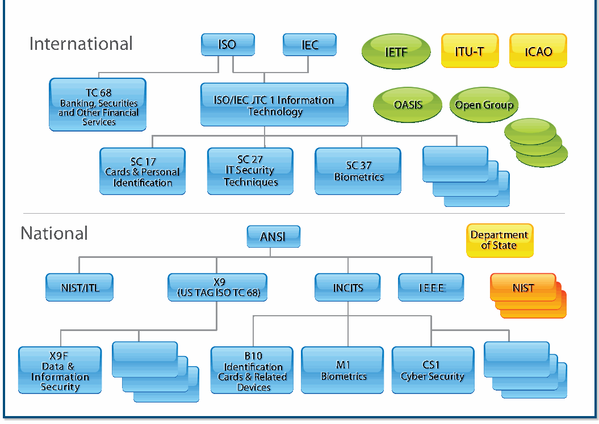
Figure 1: Cybersecurity Standards Development Organizations (SDOs)
図1：サイバーセキュリティ標準化団体（SDO）
未レビュー訳Program and Project Achievements for FY 2013
2013会計年度のプログラムおよびプロジェクトの成果
未レビュー訳Joint Technical Committee 1 (JTC 1) was formed by ISO and adoption of international standards as national standards where IEC to be responsible for international standardization in the they meet the needs of the user community. ANSI is the sole field of information technology.It develops,maintains,promotes, U.S. representative and dues-paying member of the two major and facilitates IT standards required by global markets, meeting non-treaty international standards organizations, ISO and, via
ISOとIECが合同専門委員会1（JTC 1）を設置し、情報技術分野の国際標準化を担わせた。利用者コミュニティのニーズを満たす場合には国際標準を国内標準として採用する。ANSIは、条約に基づかない主要な国際標準化機関であるISOおよびIECの唯一の米国代表であり、会費を負担する会員である。国際標準化を担当し、
未レビュー訳the United States National Committee (USNC), the IEC.
米国国内委員会（USNC）を通じてIECに参加する。
未レビュー訳business and user requirements concerning:
ビジネスおよび利用者の要件：
未レビュー訳INCITS is accredited by ANSI and serves as the ANSI Technical
INCITSはANSIの認定を受け、ISO/IEC合同専門委員会1のANSI技術
未レビュー訳 Design and development of IT systems and tools
— ITシステムおよびツールの設計・開発
未レビュー訳Advisory Group (TAG) for ISO/IEC Joint Technical Committee 1.
諮問グループ（TAG）を務める。
未レビュー訳 Performance and quality of IT products and systems
— IT製品およびシステムの性能と品質
未レビュー訳INCITS is sponsored by the Information Technology Industry (ITI) Council, a trade association representing the leading U.S.
INCITSは、米国を代表する情報技術製品・サービスプロバイダーの業界団体である情報技術産業評議会（ITI）の後援を受ける。
未レビュー訳 Security of IT systems and information
— ITシステムおよび情報のセキュリティ
未レビュー訳providers of information technology products and services.
提供者。
未レビュー訳 Portability of application programs
— アプリケーションプログラムの移植性
未レビュー訳INCITS is organized into Technical Committees that focus on the creation of standards for different technology areas.
INCITSは、異なる技術分野の標準作成に焦点を当てた技術委員会で構成される。
未レビュー訳 Interoperability of IT products and systems
— IT製品およびシステムの相互運用性
未レビュー訳Technical committees that focus on IT security and IT security-related technologies or that may require separate security
ITセキュリティおよび関連技術に焦点を当てる、または個別のセキュリティ標準を必要とする技術委員会には、
未レビュー訳 Unified tools and environments
— 統合されたツールおよび環境
未レビュー訳standards include:
次が含まれる：
未レビュー訳 Harmonized IT vocabulary
— IT用語の統一
未レビュー訳 B10 – Identification Cards and Related Devices
— B10：識別カードおよび関連デバイス
未レビュー訳 User-friendly and ergonomically designed user interfaces
— 利用しやすく、人間工学に基づいて設計されたユーザーインターフェース
未レビュー訳 CS1 – Cyber Security (Dan Benigni, NIST, Chair; Sal Francomacaro, NIST, Vice Chair; and Richard Kissel, NIST,
— CS1：サイバーセキュリティ（Dan Benigni、NIST、委員長；Sal Francomacaro、NIST、副委員長；Richard Kissel、NIST、
未レビュー訳JTC 1 consists of a number of subcommittees (SCs) and
JTC 1は、特定の技術を扱う複数の小委員会（SC）および
未レビュー訳Principal voting member)
作業部会で構成される。ITセキュリティ関連標準を策定するSCには次がある：
未レビュー訳working groups that address specific technologies. SCs that produce standards relating to IT security include:
ITセキュリティ関連標準を策定するSCには次が含まれる：
未レビュー訳 E22 – Item Authentication
議決権を有する主要メンバー）
未レビュー訳 SC 06 − Telecommunications and Information Exchange
— E22：項目認証
未レビュー訳 M1 – Biometrics (Fernando Podio, NIST, Chair)
— SC 06：システム間の電気通信および情報交換
未レビュー訳Between Systems
— M1：生体認証（Fernando Podio、NIST、委員長）
未レビュー訳 T3 – Open Distributed Processing (ODP)
— T3：オープン分散処理（ODP）
未レビュー訳 SC 17 − Cards and Personal Identification
— SC 17：カードおよび個人識別
未レビュー訳 T6 – Radio Frequency Identification (RFID) Technology
— T6：無線周波数識別（RFID）技術
未レビュー訳 SC 27 − IT Security Techniques
— SC 27：ITセキュリティ技法
未レビュー訳 GIT1 – Governance of IT
— GIT1：ITガバナンス
未レビュー訳 SC 37 – Biometrics (Fernando Podio, NIST, Chair)
— SC 37：生体認証（Fernando Podio、NIST、委員長）
未レビュー訳 DAPS38 – Distributed Application Platforms and Services
— DAPS38：分散アプリケーションプラットフォームおよびサービス
未レビュー訳JTC 1 also has: Technical Committee 68 – Financial Services
JTC 1にはさらに次がある：— 技術委員会68：金融サービス
未レビュー訳As a technical committee of INCITS, CS1 develops United States, national, ANSI-accredited standards in the area of
INCITSの技術委員会として、CS1は米国内のANSI認定標準をサイバーセキュリティ分野で策定する。
未レビュー訳 SC 2 − Operations and Procedures including Security
— SC 2：セキュリティを含む運用および手順
未レビュー訳cybersecurity. Its scope encompasses:
サイバーセキュリティ。対象範囲：
未レビュー訳 SC 4 – Securities
— SC 4：証券
未レビュー訳 Management of information security and systems
— 情報セキュリティおよびシステムの管理
未レビュー訳 SC 6 − Financial Transaction Cards, Related Media, and
— SC 6：金融取引カード、関連媒体および
未レビュー訳 Management of third-party information security service
— サードパーティ情報セキュリティサービスの管理
未レビュー訳Operations
運用
未レビュー訳providers
プロバイダー
未レビュー訳 SC 7 – Software and Systems Engineering
— SC 7：ソフトウェアおよびシステム工学
未レビュー訳 Intrusion detection
— 侵入検知
未レビュー訳 Network security
— ネットワークセキュリティ
未レビュー訳The American National Standards Institute (ANSI)
米国規格協会（ANSI）
未レビュー訳 Cloud computing security
— クラウドコンピューティングセキュリティ
未レビュー訳ANSI is a private, nonprofit organization (501(c)(3)) that administers and coordinates the U.S. voluntary standardization
ANSIは、米国の自主標準化および適合性評価制度を管理・調整し、SDOの手順を認定して米国規格（ANS）の策定を促進する民間非営利団体（501(c)(3)）である。
未レビュー訳 Supply chain risk management
— サプライチェーンリスク管理
未レビュー訳and conformity assessment system and facilitates the development of American National Standards (ANS) by Incident handling accrediting the procedures of SDOs.
適合性評価制度を管理し、適合性評価活動を促進する。SDOの手順認定を通じてANSの策定も支援する。— インシデント処理
未レビュー訳 IT security evaluation and assurance
— ITセキュリティ評価および保証
未レビュー訳ANSI promotes the use of U.S. standards internationally, advocates U.S. policy and technical positions in international Security assessment of operational systems and regional standards organizations, and encourages the
ANSIは米国標準の国際的な利用を促進し、国際的・地域的な標準化団体で米国の方針および技術的立場を提唱する。また、運用システムのセキュリティ評価も扱う。
未レビュー訳Computer Security Division Annual Report - 2013
コンピューターセキュリティ部 年次報告書—2013年
未レビュー訳 Security requirements for cryptographic modules
— 暗号モジュールのセキュリティ要件
未レビュー訳standards into the international SC 27 standards development process. In its international efforts, CS1 responded to all calls
国際標準化プロセスへの標準の取り込みを推進する。CS1は国際活動において、すべての国際セキュリティ標準プロジェクトに関する米国からの意見募集に対応し、
未レビュー訳 Protection profiles
— 保護プロファイル
未レビュー訳for U.S. contributions and/or voting positions on all international security standards projects in ISO/IEC JTC1 SC 27 in a
米国の貢献および／または投票方針をISO/IEC JTC1 SC 27のすべての国際セキュリティ標準プロジェクトについて、
未レビュー訳 Role-based access control
— 役割ベースアクセス制御
未レビュー訳consistent, efficient, and timely manner.
一貫性があり、効率的かつ適時に提出した。
未レビュー訳 Security checklists
— セキュリティチェックリスト
未レビュー訳NIST contributes to many of CS1’s national and international
NISTはCS1の国内外のITセキュリティ標準化活動に多く貢献している。
未レビュー訳 Security metrics
— セキュリティ指標
未レビュー訳IT security standards efforts through its membership on CS1, where Dan Benigni serves as the non-voting chair and Richard
CS1の一員として、Dan Benigniは投票権のない委員長を務め、Richard KisselはNISTの投票権を有する主要メンバーである。国際的には、
未レビュー訳 Cryptographic and non-cryptographic techniques
— 暗号および非暗号の技法
未レビュー訳Kissel as the NIST Principal voting member. Internationally,
Richard KisselがNISTの投票権を有する主要メンバーを務める。国際的には、
未レビュー訳and mechanisms, including confidentiality, entity
およびメカニズム（機密性、エンティティ
未レビュー訳there are over 100 published standards, and almost all have
100件を超える標準が発行され、そのほぼすべてが
未レビュー訳authentication, non-repudiation, key management, data
認証、否認防止、鍵管理、データ
未レビュー訳been adopted as U.S. national standards. There are more than
米国国内標準として採用された。現在、80件を超える
未レビュー訳integrity, message authentication, hash functions, and
完全性、メッセージ認証、ハッシュ関数および
未レビュー訳80 current international standards projects. During FY 2013,
国際標準プロジェクトが進行中である。2013会計年度には、
未レビュー訳digital signatures
デジタル署名
未レビュー訳29 new standards were published in SC 27, and most of them have been recommended by CS1 for adoption as U.S. national
SC 27で29件の新標準が発行され、その大半はCS1により米国国内標準としての採用が推奨された。
未レビュー訳 Future service and applications standards supporting
— 将来のサービスおよびアプリケーション標準。支援対象：
未レビュー訳standards.
標準。
未レビュー訳the implementation of control objectives and controls as defined in ISO 27001, in the areas of business continuity
ISO 27001で定義される管理目的および管理策の実装を、事業継続
未レビュー訳CSD Contributions to Cybersecurity
CSDのサイバーセキュリティへの貢献
未レビュー訳and outsourcing
および外部委託の分野で支援する。
未レビュー訳Standardization in INCITS CS1
INCITS CS1における標準化
未レビュー訳 Identity management, including identity management framework, role-based access control, and single sign-
• ID管理（ID管理フレームワーク、ロールベースアクセス制御、シングルサイン
未レビュー訳CSD’s cybersecurity research also plays a direct role in the
CSDのサイバーセキュリティ研究は、
未レビュー訳オン
未レビュー訳Cybersecurity Standardization efforts of CS1 at the national level. Nationally during FY 2013:
国家レベルにおけるCS1のサイバーセキュリティ標準化活動にも直接貢献している。2013会計年度の国内活動には、次が含まれる。
未レビュー訳 Privacy technologies, including privacy framework,
• プライバシー技術（プライバシーフレームワーク、
未レビュー訳 The NIST Policy Machine research and development has
• NISTポリシーマシンの研究開発により、
未レビュー訳privacy reference architecture, privacy infrastructure,
プライバシーのリファレンスアーキテクチャ、プライバシー基盤、
未レビュー訳resulted in three ongoing national standards projects
国内標準化プロジェクトが3件進行中である。
未レビュー訳anonymity and credentials, and specific privacy-
匿名性と資格情報、および特定のプライバシー
未レビュー訳in CS1, each in the early stages of development. They
いずれも開発の初期段階にあるCS1内のプロジェクトである。各プロジェクトは
未レビュー訳enhancing technologies
強化技術
未レビュー訳include:
以下のとおりである。
未レビュー訳The scope of CS1 explicitly excludes the areas of work on
CS1の対象範囲は、現在INCITSで進められている次の分野の作業を明示的に除外する。
未レビュー訳•INCITS 499-2013, “Next Generation Access Control
•INCITS 499-2013「次世代アクセス制御
未レビュー訳cybersecurity standardization presently under way in INCITS
現在INCITSで進められているサイバーセキュリティ標準化
未レビュー訳–Functional Architecture (NGAC-FA)”, David Ferraiolo,
—機能アーキテクチャ（NGAC-FA）」、David Ferraiolo、
未レビュー訳B10, M1, T3, T10, and T11, as well as other standard groups,
B10、M1、T3、T10、T11およびその他の標準化団体
未レビュー訳NIST, Editor, Published May 2013
NIST編集、2013年5月刊行
未レビュー訳such as the Alliance for Telecommunications Industry Solutions (ATIS), the Institute of Electrical and Electronics Engineers, Inc.
電気通信産業ソリューション連盟（ATIS）、米国電気電子技術者協会（IEEE）、
未レビュー訳•“Next Generation Access Control – Generic
•「次世代アクセス制御—汎用
未レビュー訳(IEEE), the Internet Engineering Task Force (IETF), the Travel
インターネット技術タスクフォース（IETF）、旅行
未レビュー訳Operations & Abstract Data Structures (NGAC-
運用および抽象データ構造（NGAC-
未レビュー訳Industry Association of America (TIAA), and the Accredited
米国旅行業協会（TIAA）、認定
未レビュー訳GOADS)”, Project Number: 2195-D, Serban Gavrila,
GOADS）」、プロジェクト番号2195-D、Serban Gavrila、
未レビュー訳Standards Committee (ASC) X9. The CS1 scope of work includes
標準化委員会（ASC）X9。CS1の作業範囲には次が含まれる。
未レビュー訳NIST, Editor (Planned Publication FY 2014)
NIST編集（2014会計年度刊行予定）
未レビュー訳standardization in most of the same cybersecurity areas as are
NIST CSDが扱うサイバーセキュリティ分野の大半と同じ分野における標準化
未レビュー訳•“Next Generation Access Control-Implementation
•「次世代アクセス制御—実装
未レビュー訳covered in the NIST CSD.
NIST CSDが対象とする。
未レビュー訳Requirements, Protocols and API Definitions (NGAC-
要件、プロトコル、API定義（NGAC-
未レビュー訳As the U.S. TAG to ISO/IEC JTC 1/SC 27, CS1 contributes to
米国の技術諮問グループ（TAG）としてISO/IEC JTC 1/SC 27に参加し、CS1は
未レビュー訳IRPADS)”, Project Number: 2193-D
IRPADS）」、プロジェクト番号2193-D
未レビュー訳the SC 27 program of work on IT Security Techniques in terms of U.S. comments and contributions on SC 27 standards projects; Within CS1, liaisons are maintained with nearly 20 votes on SC 27 standards documents at various stages of organizations, including: development; and nominates U.S. experts to work on various SC
SC 27のITセキュリティ技法作業計画に対し、米国コメントとSC 27標準化プロジェクトへの寄稿を通じて貢献している。CS1内では、開発のさまざまな段階にあるSC 27標準文書への投票を含め、約20の組織と連絡体制を維持し、SC 27の各種プロジェクトに編集者、共同編集者、その他の指導的役割として参加する米国専門家を推薦している。連携先には次が含まれる。
未レビュー訳 ABA Federated Identity Management Legal (IdM Legal)
• 米国法曹協会（ABA）のフェデレーテッドID管理法務グループ（IdM Legal）
未レビュー訳 IEEE P1700 and P1619
IEEE P1700およびP1619
未レビュー訳Programming Interfaces), and ISO/IEC 24787 (Biometrics “Match On Card” Comparison).
2013会計年度のプログラムおよびプロジェクトの成果
未レビュー訳 INCITS T11, M1, GIT1, DAPS38, and PL22
IEEE P1700およびP1619
未レビュー訳During FY 2013, INCITS 504 Parts 1, 2, and 4 were published and ISO/IEC 7816 Part 4 was published with significant changes
プログラミングインターフェース）、ISO/IEC 24787（生体認証「カード上照合」比較）。
未レビュー訳 Internet Security Alliance
INCITS T11、M1、GIT1、DAPS³⁸、およびPL22
未レビュー訳added per NIST’s request. CSD provides contributions and
2013会計年度にINCITS 504の第1、2、4部が発行され、ISO/IEC 7816第4部は大幅な変更を加えて発行された。
未レビュー訳 Kantara Initiative Identity Assurance Working Group
インターネットセキュリティアライアンス
未レビュー訳feedback on many other INCITS B10 identity management
NISTの要請により変更が追加された。CSDは寄稿と
未レビュー訳(IAWG)
Kantara Initiative 識別保証作業部会
未レビュー訳standards projects. During the FY 2014, the INCITS B10 committee, along with
他のINCITS B10識別情報管理
未レビュー訳 Open Group
（IAWG）
未レビュー訳the active collaboration of CSD staff, plans to publish Part
規格プロジェクトにもフィードバックを提供する。2014会計年度には、INCITS B10委員会はCSD職員の積極的な協力を得て、
未レビュー訳 SC 7 TAG
Open Group
未レビュー訳3 of INCITS 504 and contribute to the publication of several standards of the ISO/IEC 7816 family (all relevant to FIPS 201
第3部の発行を計画し、ISO/IEC 7816シリーズの複数規格（すべてFIPS 201
未レビュー訳 Scientific Working Group on Digital Evidence (SWGDE)
SC 7 TAG
未レビュー訳specifications). CSD staff will continue actively supporting relevant ID management standard initiatives.
関連仕様）の発行に貢献する予定である。CSD職員は、関連する識別情報管理規格の取り組みを今後も積極的に支援する。
未レビュー訳 The Storage Networking Industry Association (SNIA)
デジタル証拠に関する科学作業部会（SWGDE）
未レビュー訳CSD’s investment in these activities is motivated by new
ストレージネットワーキング業界団体（SNIA）
未レビュー訳 Trusted Computing Group
CSDがこれらの活動に投資する動機は、これらの規格から生まれる新しい
未レビュー訳technical ideas that emerge from these standards. For example, INCITS 504 is an ID platform that leverages the FIPS 201
Trusted Computing Group
未レビュー訳Dan Benigni also serves as cybersecurity standards
技術的な着想にある。例えば、INCITS 504はFIPS 201の基盤を活用する識別情報プラットフォームであり、
未レビュー訳infrastructure to support a larger number of government and
BenigniはCSDのサイバーセキュリティ規格
未レビュー訳coordinator in CSD.
より多くの政府および
未レビュー訳enterprise initiatives. In particular, INCITS 504 aims to support initiatives such as the NSTIC. ISO/IEC 24727 aims to create
調整者も務める。
未レビュー訳Contact:
企業の取り組みを支援する。特にINCITS 504はNSTICなどの取り組みを支援する。ISO/IEC 24727は、
未レビュー訳an interoperability framework that increases the resilience
連絡先:
未レビュー訳Mr. Daniel Benigni
相互運用性を高め、
未レビュー訳and scalability of identity management solutions and fosters
Daniel Benigni氏
未レビュー訳(301) 975-3279
識別情報管理ソリューションのレジリエンスと拡張性を向上させる相互運用性枠組みの構築を目指す。
未レビュー訳domestic and international interoperability.
(301) 975-3279
未レビュー訳benigni@nist.gov
国内外の相互運用性を促進する。
未レビュー訳Contact:
連絡先:
未レビュー訳Identity Management Standards within INCITS Mr. Salvatore Francomacaro
INCITS内の識別情報管理規格 — Salvatore Francomacaro氏
未レビュー訳(301) 975-6414
(301) 975-6414
未レビュー訳B10 and ISO JTC1/SC 17
B10およびISO JTC1/SC 17
未レビュー訳salvatore.francomacaro@nist.gov
salvatore.francomacaro@nist.gov
未レビュー訳CSD supports identity management standardization activities through participation in national and international standards
CSDは、国内外の標準化団体への参加を通じて、ID管理の標準化活動を支援している。
未レビュー訳Federal Information Security Management Act
連邦情報セキュリティ管理法
未レビュー訳bodies and organizations. CSD actively participates in the
団体および組織。CSDは次の
未レビュー訳(FISMA) Implementation Project
（FISMA）実施プロジェクト
未レビュー訳INCITS B10 committee, which is focused on interoperability of Identification Cards and Related Devices. CSD staff serves as Chair and Vice Chair of the B10.12 committee, which develops The FISMA Implementation Project focuses on: interoperable standards for Integrated Circuit Cards with Developing a comprehensive series of standards Contacts. CSD staff also serves as the U.S. Head of delegation
INCITS B10委員会は、識別カードおよび関連デバイスの相互運用性を扱う。CSD職員はB10.12委員会の議長および副議長を務め、同委員会は集積回路カード向け相互運用規格を策定する。連絡先：／CSD職員はISO/IEC JTC 1 SC 17作業部会4および11の米国代表団長も務める。／FISMA実施プロジェクトの重点事項は次のとおり。
未レビュー訳and guidelines to help federal agencies build strong
連邦機関が強固な
未レビュー訳to ISO/IEC JTC1 SC 17 Working Groups 4 and 11.
サイバーセキュリティプログラムを構築するための標準およびガイドラインを策定し、
未レビュー訳cybersecurity programs, defend against increasingly sophisticated cyber attacks, and demonstrate
高度化するサイバー攻撃から防御し、
未レビュー訳In addition to chairing the B10.12 committee, CSD provides
B10.12委員会の議長を務めるほか、CSDは
未レビュー訳compliance to security requirements set forth in
セキュリティ要件への適合を実証する。
未レビュー訳technical and editorial support in the development of national
国内
未レビュー訳legislation, Executive Orders, Homeland Security
法律、大統領令、国土安全保障
未レビュー訳and international standards. Specifically, CSD staff serves as
および国際標準。具体的には、CSD職員が
未レビュー訳Directives, and Office of Management and Budget (OMB)
指令および行政管理予算局（OMB）の
未レビュー訳the technical editor of ANSI 504-1, Generic Identity Command
ANSI 504-1「一般IDコマンド
未レビュー訳policies
方針
未レビュー訳Set (GICS). GICS enables PIV, PIV-Interoperable (PIV-I) and Common Access Card (CAC) card applications, and others, to
セット（GICS）」の技術編集者を務める。GICSにより、PIV、相互運用可能なPIV（PIV-I）、共通アクセスカード（CAC）などのカードアプリケーションを
未レビュー訳 Building common understanding and reference guides
• 共通理解の醸成および参照ガイドの作成
未レビュー訳be built from a single platform. GICS defines an open platform
単一プラットフォーム上で構築できる。GICSは、
未レビュー訳for organizations applying the NIST suite of standards
NIST標準一式を適用する組織向けの
未レビュー訳where identity applications can be instantiated, deployed, and
IDアプリケーションを実装、展開でき、
未レビュー訳and guidelines that support the NIST Risk Management
NISTのリスク管理
未レビュー訳used in an interoperable way between the credential issuers
資格情報の発行者と
未レビュー訳Framework (RMF)
フレームワーク（RMF）を支援する
未レビュー訳and credential users. CSD staff also provides significant input to standards of major interest to U.S. government agencies and Developing minimum criteria and guidelines for U.S. markets. CSD influences the development and revision of
資格情報の利用者間で相互運用可能な方法で使用できる。CSD職員は、米国政府機関が特に関心を持つ標準にも大きく貢献している。／• RMFに沿って情報システムを評価できると認められるセキュリティ評価組織の提供者を
未レビュー訳recognizing security assessment organization providers
認定するための最低基準およびガイドラインを策定する。
未レビュー訳ISO/IEC 7816 (Identification Cards, Integrated Circuit Cards),
ISO/IEC 7816「識別カード—集積回路カード」
未レビュー訳as capable of assessing information systems consistent
に準拠して情報システムを評価する能力を有する組織として
未レビュー訳ISO/IEC 24727 (Identification Cards, Integrated Circuit Card
ISO/IEC 24727「識別カード—集積回路カード
未レビュー訳with NIST standards and guidelines supporting the RMF
を支援するNIST標準およびガイドラインに沿って。
未レビュー訳Computer Security Division Annual Report - 2013
コンピュータセキュリティ部門年次報告書—2013年
未レビュー訳 Conducting FISMA outreach to public and private sector
• FISMAに関する官民組織への周知活動を実施する。
未レビュー訳In FY 2013, CSD worked on the following three initiatives:
2013会計年度、CSDは次の3つの取り組みに取り組んだ。
未レビュー訳organizations
組織
未レビュー訳1. Risk Management and Risk Assessment Guidelines:
1. リスク管理およびリスク評価ガイドライン：
未レビュー訳Developed a comprehensive risk assessment guideline
包括的なリスク評価ガイドラインを策定した。
未レビュー訳During 2013, CSD strengthened its collaboration with the
2013年、CSDは国防総省（DoD）、情報機関コミュニティ、
未レビュー訳examining the relationships among key risk factors,
主要なリスク要因間の関係を検討する。
未レビュー訳Department of Defense (DoD), the Intelligence Community,
国防総省（DoD）、情報機関コミュニティ、
未レビュー訳including threats, vulnerabilities, impact, and likelihood.
脅威、脆弱性、影響、発生可能性を含む。
未レビュー訳and the Committee on National Security Systems (CNSS), in
および国家安全保障システム委員会（CNSS）は、
未レビュー訳Special Publication (SP) 800-53, Revision 4, Security
特別刊行物（SP）800-53改訂第4版「セキュリティ
未レビュー訳partnership with the Joint Task Force Transformation Initiative,
統合任務部隊変革イニシアティブと連携して、
未レビュー訳and Privacy Controls for Federal Information Systems
および連邦情報システム
未レビュー訳which continues to develop key cybersecurity guidelines for
主要なサイバーセキュリティガイドラインの策定を続けている。
未レビュー訳and Organizations, provides a holistic approach
および組織のプライバシー管理策」は、包括的なアプローチを提供する。
未レビュー訳protecting federal information and information systems for
連邦政府の情報および情報システムを保護するための
未レビュー訳to information security and risk management. The
情報セキュリティおよびリスク管理に関する。
未レビュー訳the Unified Information Security Framework. Previously, the
統合情報セキュリティフレームワーク。以前は、
未レビュー訳publication provides organizations with security controls
この刊行物は、組織に必要なセキュリティ管理策を提供する。
未レビュー訳Joint Task Force developed common security guidance in the
統合任務部隊は、共通のセキュリティガイダンスを策定した。
未レビュー訳necessary to appropriately strengthen their information
情報を適切に強化するために必要な
未レビュー訳critical areas of security controls for information systems and
情報システムおよび組織向けの重要なセキュリティ管理策領域、
未レビュー訳systems and the environments in which those systems
情報システムと、それらのシステムが稼働する環境、
未レビュー訳organizations, security assessment procedures to demonstrate
組織、ならびに有効性を実証するためのセキュリティ評価手順を対象とする。
未レビュー訳operate − contributing to systems that are resilient in
攻撃やその他の脅威に直面してもレジリエントなシステムの構築に貢献する。
未レビュー訳security control effectiveness, security authorizations for risk
セキュリティ管理策の有効性、リスクに基づくセキュリティ認可
未レビュー訳the face of attacks and other threats. This “Build It Right”
攻撃やその他の脅威に耐える。この「正しく構築する」
未レビュー訳acceptance decisions, and continuous monitoring activities
受容の判断、および継続的監視活動を含む。
未レビュー訳strategy combines with a variety of security controls
戦略は、さまざまなセキュリティ管理策と組み合わせられ、
未レビュー訳to ensure that decision makers receive the most up-to-date
意思決定者が最新の情報を受け取れるようにする。
未レビュー訳for “Continuous Monitoring” to give organizations near
組織にほぼリアルタイムの情報を提供する「継続的監視」のための
未レビュー訳information on the security state of their information systems. In
情報システムのセキュリティ状態に関する情報。さらに、
未レビュー訳real-time information that is essential for senior leaders
上級幹部が必要とするリアルタイム情報を提供し、
未レビュー訳addition, CSD worked with the General Services Administration
CSDは一般調達局（GSA）とも連携し、
未レビュー訳making ongoing risk-based decisions affecting their
組織の重要な任務および業務機能に影響を及ぼす、継続的なリスクベースの判断を
未レビュー訳(GSA) Federal Risk and Authorization Management Program
（GSA）の連邦リスク認可管理プログラム（FedRAMP）と協力した。
未レビュー訳critical missions and business functions.
支援する。
未レビュー訳(FedRAMP) to identify security assessment requirements, and prototype a process for approving Third-Party Assessment
クラウドサービスプロバイダー（CSP）の情報システムがNIST標準・ガイドラインに適合しているかを評価するセキュリティ評価要件を特定し、第三者評価機関（3PAO）の承認プロセスを試作した。
未レビュー訳To take advantage of the expanded set of security and
拡充されたセキュリティおよび
未レビュー訳Organizations (3PAOs) that demonstrate capability in assessing
クラウドサービスプロバイダー（CSP）の情報システムを評価する能力を実証した
未レビュー訳privacy controls, and to give organizations greater
プライバシー管理策を活用し、組織により大きな
未レビュー訳Cloud Service Providers (CSP) information systems for
クラウドサービスプロバイダー（CSP）の情報システムが
未レビュー訳flexibility and agility in defending their information
情報を防御する柔軟性と俊敏性を高めるため、
未レビュー訳conformance to NIST standards and guidelines.
NIST標準およびガイドラインへの適合性。
未レビュー訳systems, the revision introduces the concept of
情報システムについて、改訂版は新たに次の概念を導入する。
未レビュー訳GENERIC RISK MODEL WITH KEY RISK FACTORS
主要なリスク要因を含む一般的なリスクモデル
未レビュー訳Adverse
有害な
未レビュー訳Threat
脅威
未レビュー訳Threat Event exploits Vulnerability causing Impact
脅威事象が脆弱性を悪用し、影響を引き起こす
未レビュー訳Source initiates
情報源が開始する
未レビュー訳with
〜を伴う
未レビュー訳with
〜を伴う
未レビュー訳with
〜を伴う
未レビュー訳with
〜を伴う
未レビュー訳Likelihood with Severity Degree with Risk
リスクの可能性と深刻度（Likelihood、Severity）
未レビュー訳Likelihood
可能性
未レビュー訳with Characteristics of Initiation Sequence of Success In the context of
開始特性、成功に至る一連の行為の特性を伴う。次の文脈において
未レビュー訳as a combination of
組み合わせとして
未レビュー訳of actions, activities,
行為、活動、
未レビュー訳Impact and Likelihood
影響および可能性
未レビュー訳(e.g., Capability, Intent, and
（例えば、能力、意図、および
未レビュー訳or scenarios
またはシナリオ
未レビュー訳Predisposing
事前に存在する
未レビュー訳Targeting for Adversarial Threats)
敵対的脅威に対する標的設定）
未レビュー訳Conditions
条件
未レビュー訳producing
を生み出す
未レビュー訳with Pervasiveness
広がりを伴う
未レビュー訳Security Controls
セキュリティ管理策
未レビュー訳Inputs from Risk Framing Step
リスク枠組み設定段階からの入力
未レビュー訳Planned / Implemented
計画済み／実装済み
未レビュー訳ORGANIZATIONAL RISK
組織リスク
未レビュー訳(Risk Management Strategy or Approach)
（リスク管理戦略またはアプローチ）
未レビュー訳with
〜を伴う
未レビュー訳Toorganizationaloperations(mission,functions,
組織の運用（任務、機能、
未レビュー訳Effectiveness
有効性
未レビュー訳Influencing and Potentially Modifying
影響を与え、潜在的に変更する
未レビュー訳image,reputation),organizationalassets,
イメージ、評判）、組織資産、
未レビュー訳Key Risk Factors
個人、他の組織および国。
未レビュー訳individuals,otherorganizations,andtheNation.
主要リスク要因
未レビュー訳Figure 2: Generic Risk Model with Key Risk Factors
Figure 2：主要リスク要因を含む一般的なリスクモデル
未レビュー訳overlays. Overlays provide a structured approach to
原文更新後、再確認待ち
2, Guide for Developing Security Plans for Federal
2「連邦情報システムおよび組織のセキュリティ計画策定ガイド」
未レビュー訳help organizations tailor security control baselines
組織がセキュリティ管理策ベースラインを調整し、
未レビュー訳Information Systems and Organizations
情報システムおよび組織
未レビュー訳and develop specialized security plans for specific missions/business functions, environments of operation, In FY 2014, CSD intends to: and/or technologies. This specialization approach is
特定の任務／業務機能、運用環境、および／または技術向けの特化したセキュリティ計画を策定できるよう支援する。この特化アプローチは重要である。2014会計年度にCSDが予定する事項：
未レビュー訳 Finalize SP 800-53A, Revision 4, Guide for Assessing
SP 800-53A改訂第4版「連邦情報システムのセキュリティおよびプライバシー管理策の評価ガイド」を最終化する。
未レビュー訳important as the number of threat-driven controls and
脅威主導の管理策および
未レビュー訳the Security and Privacy Controls in Federal Information
連邦情報システムのセキュリティおよびプライバシー管理策に関する
未レビュー訳control enhancements in the catalog increases and
カタログ内の管理策強化項目が増え、
未レビュー訳Systems and Organizations
システムおよび組織
未レビュー訳organizations develop risk management strategies to address their specific protection needs within defined
組織が定義済みの
未レビュー訳 Finalize SP 800-60 Revision 2, Guide for Mapping Types
SP 800-60改訂第2版「情報および情報システムの種類をセキュリティカテゴリに対応付けるガイド」を最終化する。
未レビュー訳risk tolerances.
リスク許容度の範囲内で、固有の保護ニーズに対処するリスク管理戦略を策定する。
未レビュー訳of Information and Information Systems to Security Categories
2. セキュリティ評価プロバイダー組織の認定基準およびガイドライン：CSDは更新した。
未レビュー訳2. Criteria and Guidelines for Recognizing Security
FedRAMP 3PAOプロバイダーの能力を評価するための
未レビュー訳Assessment Provider Organizations: CSD updated
SP 800-18改訂第2版「連邦情報システムおよび組織のセキュリティ計画策定ガイド」を最終化する。
未レビュー訳 Finalize SP 800-18 Revision 2, Guide for Developing
習熟度試験および技術要件を
未レビュー訳proficiency tests and technical requirements for
FedRAMP 3PAOプロバイダーの能力を評価するための
未レビュー訳Security Plans for Federal Information Systems and
連邦情報システムおよび組織向けセキュリティ計画
未レビュー訳evaluating FedRAMP 3PAO providers’ capability to
FISMAに準拠したクラウドベース情報システムのセキュリティ評価を実施する。
未レビュー訳Organizations
組織
未レビュー訳conduct security assessment of cloud-based information
FedRAMPおよびISO/IEC 17020検査機関の要件に準拠する。さらにCSDはGSAに要件（オリエンテーションおよび研修を含む）に関する意見を提供した。
未レビュー訳 Expand cybersecurity outreach to include additional
サイバーセキュリティのアウトリーチを拡大し、対象に追加する。
未レビュー訳systems for compliance with FISMA in accordance
FedRAMP 3PAOの民間認定機関に関する要件
未レビュー訳state, local, and tribal governments, as well as private
州、地方および部族政府、ならびに民間
未レビュー訳with FedRAMP and ISO/IEC 17020 Inspection Bodies requirements. Additionally, CSD provided input to GSA
民間部門のFedRAMP 3PAO認定機関を選定する結果となった。
未レビュー訳sector organizations and academic institutions
組織および学術機関
未レビュー訳requirements (including orientation and training) for
連邦機関による効果的な
未レビュー訳 Continue to support federal agencies in effective
NISTリスク管理
未レビュー訳private sector accreditation body of FedRAMP 3PAOs that
フレームワークの実効的な実施を支援し続ける。
未レビュー訳implementation of the NIST Risk Management
GSA FedRAMPプログラム管理室（PMO）が設置される結果となった。
未レビュー訳resulted in GSA FedRAMP Program Management Office
フレームワーク。
未レビュー訳Framework.
プログラム管理室（PMO）が民間認定機関を1つ選定した。
未レビュー訳(PMO) selecting one 3PAO private sector accreditation body.
http://csrc.nist.gov/sec-cert
未レビュー訳http://csrc.nist.gov/sec-cert
3. FISMAアウトリーチ活動：公共部門および民間部門の組織
未レビュー訳3. FISMA Outreach Activity to Public and Private Sector
組織：CSDはサイバーセキュリティ説明会を実施し、州および地方
未レビュー訳Organizations: CSD conducted cybersecurity outreach Contacts: briefings and provided support to state and local
連絡先：
未レビュー訳Dr. Ron Ross
Ron Ross博士
未レビュー訳Ms. Pat Toth
Pat Toth氏
未レビュー訳governments as well as private sector organizations on (301) 975-5390
政府ならびに民間組織に対して、（電話：(301) 975-5390）
未レビュー訳(301) 975-5140
(301) 975-5140
未レビュー訳ron.ross@nist.gov
ron.ross@nist.gov
未レビュー訳patricia.toth@nist.gov
patricia.toth@nist.gov
未レビュー訳topics of interest, such as effective implementation of the NIST Risk Management Framework. In addition, CSD
関心のある話題（NISTリスク管理フレームワークの効果的な実施など）について支援を提供した。さらにCSDは
未レビュー訳Mr. Arnold Johnson
Arnold Johnson氏
未レビュー訳Ms. Kelley Dempsey
Kelley Dempsey氏
未レビュー訳conducted outreach activities with academic institutions,
学術機関とのアウトリーチ活動も実施した。
未レビュー訳(301) 975-3247
(301) 975-3247
未レビュー訳(301) 975-2827
(301) 975-2827
未レビュー訳providing information on NIST’s security standards and arnold.johnson@nist.gov kelley.dempsey@nist.gov guidelines, and exploring new areas of cybersecurity
NISTのセキュリティ標準およびガイドラインに関する情報を提供し、新たなサイバーセキュリティ分野を検討した。
未レビュー訳Ms. Peggy Himes
Peggy Himes氏
未レビュー訳research and development.
研究開発。
未レビュー訳(301) 975-2489 peggy.himes@nist.gov
(301) 975-2489 peggy.himes@nist.gov
未レビュー訳In FY 2013, CSD completed the following outreach activities:
2013会計年度にCSDは次のアウトリーチ活動を完了した。
未レビュー訳Biometric Standards and Associated Conformity
生体認証標準および関連する適合性
未レビュー訳 Finalized SP 800-53, Revision 4
SP 800-53改訂第4版を最終化した。
未レビュー訳Assessment Testing Tools
評価試験ツール
未レビュー訳 Collaborated with the ITL Software and Systems Division and the NIST Standards Coordination Office using the
ITLソフトウェア・システム部門およびNIST標準調整室と協力し、
未レビュー訳The CSD staff responds to government, industry, and market
CSD職員は、政府、産業界および市場から寄せられる
未レビュー訳International Standard ISO/IEC 17020:2008, Conformity requirements for open systems standards by: Assessment – Requirements for the operation of various
国際標準ISO/IEC 17020:2008「適合性評価—各種検査機関の運用に関する要件」を用い、
未レビュー訳 Accelerating development of formal biometric standards
標準化システム要件に関する問い合わせに対応するため、次を実施した。
未レビュー訳types of bodies performing inspection, in support of GSA in establishing a process for qualifying 3PAOs to conduct Providing effective leadership and technical participation security assessments of CSPs information systems
生体認証標準の正式策定を加速した。
未レビュー訳in the development of these standards
GSAによるクラウドサービスプロバイダー（CSP）の情報システムに対するセキュリティ評価を実施する3PAO認定プロセスの確立を支援した。
未レビュー訳consistent with GSA requirements based on NIST
これらの標準策定において、効果的なリーダーシップと技術的貢献を提供した。
未レビュー訳 Developing Conformance Test Architectures (CTA)
GSA要件に整合する。
未レビュー訳standards and guidelines
適合性試験アーキテクチャ（CTA）を開発した。
未レビュー訳and Conformance Test Suites (CTS) designed to test
NIST標準およびガイドラインに基づく。
未レビュー訳 Developed a preliminary draft of SP 800-53A, Revision 4,
適合性試験スイート（CTS）を開発し、試験用に設計した。
未レビュー訳implementations of biometric standards
SP 800-53A改訂第4版「連邦情報システムおよび組織のセキュリティおよびプライバシー管理策の評価ガイド」の予備草案を作成した。
未レビュー訳Guide for Assessing the Security and Privacy Controls in
生体認証標準の実装。
未レビュー訳 Supporting harmonization of biometric, tokens, and
生体認証、トークンおよび
未レビュー訳Federal Information Systems and Organizations
連邦情報システムおよび組織
未レビュー訳security standards
セキュリティ標準の調和を支援した。
未レビュー訳 Developed a preliminary draft of SP 800-18, Revision
SP 800-18改訂版の予備草案を作成した。
未レビュー訳Computer Security Division Annual Report - 2013
コンピュータセキュリティ部門年次報告書 — 2013年
未レビュー訳 Promoting biometric standards adoption
生体認証標準の採用を促進した。
未レビュー訳In addition to previously designed CTSs (e.g., CTS for ANSI/NIST-ITL 1-2011 [AN-2011] traditional encoding
従来型符号化トランザクション向けANSI/NIST-ITL 1-2011（AN-2011）のCTSや
未レビュー訳 Promoting conformity assessment efforts
適合性評価の取り組みを推進した。
未レビュー訳transactions and ISO/IEC biometric data interchange format implementations), BioCTS 2013 conformance test software
ISO/IEC生体認証データ交換形式の実装など、既に設計したCTSに加えて、BioCTS 2013適合性試験ソフトウェアには
未レビュー訳To achieve these project goals, CSD continues to work in close
これらのプロジェクト目標を達成するため、CSDは緊密に連携し続ける。
未レビュー訳includes a CTS designed to test National Information Exchange
National Information Exchange Model（NIEM）のXML符号化AN-2011実装を試験するよう設計されたCTSが含まれる。この
未レビュー訳partnership with government agencies, industry partners, and
政府機関、産業界のパートナーおよび
未レビュー訳Model (NIEM) XML encoded AN-2011 implementations. The
学術機関と協力する。CSDは多数の
未レビュー訳academic institutions. CSD actively participates in a number of
このツールの機能は、既存の基本的な
未レビュー訳functionality of this tool goes beyond the existing basic
生体認証標準策定プロジェクトに積極的に参加し、
未レビュー訳biometric standards development projects, contributes to the
スキーマ検証などのXML試験技法を超える。CSDの
未レビュー訳XML testing techniques, such as schema validation. CSD’s
生体認証標準の策定に貢献し、国内および
未レビュー訳development of biometric standards, and leads national and
国際的な標準化を主導する。
未レビュー訳project team concluded that the XML schema validation was
プロジェクトチームは、XMLスキーマ検証だけでは
未レビュー訳international biometric standards bodies. Nationally, CSD’s staff
国際的な生体認証標準化団体。国内ではCSDの職員が
未レビュー訳insufficient to address full conformance testing of the AN-
ANSI/NIST-ITL 2011規格の適合性試験全体を行うには不十分であると結論づけた。
未レビュー訳leads the INCITS Technical Committee 1 (M1) – Biometrics;
INCITS技術委員会1（M1）—生体認証を主導している。
未レビュー訳2011 requirements. The team implemented over 1,200 test
2011年の要件に対応するため、チームは1,200件を超える試験
未レビュー訳international efforts include ISO JTC 1 and IEC Subcommittee
国際的な取り組みには、ISO合同技術委員会1（JTC 1）およびIEC小委員会
未レビュー訳assertions beyond the schema validation (validating an XML
スキーマ検証を超える適合性試験アサーション（XMLの
未レビュー訳SC 37 - Biometrics - JTC 1/SC 37. CSD plans to continue this
SC 37（生体認証）—JTC 1/SC 37が含まれる。CSDはこの活動を2014会計年度も継続する予定である。
未レビュー訳file against an XSD file) for this standard, including those for
ファイルをXSDファイルと照合する検証）を、この規格向けに実装した。これには
未レビュー訳work in FY 2014.
2014会計年度にこの作業を継続する。
未レビュー訳AN-2011 Record Types 1, 4, 10, 13, 14, 15, and 17. NISTIR 7957,
ANSI/NIST-ITL 1-2011のレコードタイプ1、4、10、13、14、15、17が含まれる。NISTIR 7957「
未レビュー訳During FY 2013, the development of object-oriented CTAs and
2013会計年度には、オブジェクト指向の適合性試験アサーション（CTA）および
未レビュー訳Conformance Test Architecture and Test Suite for ANSI/NIST-ITL
ANSI/NIST-ITL 1-2011 NIEM XML符号化トランザクション向け適合性試験アーキテクチャおよび試験スイート
未レビュー訳CTSs to test implementations of biometric standards progressed
生体認証規格の実装を試験する適合性試験ソフトウェア（CTS）の開発が
未レビュー訳1-2011 NIEM XML Encoded Transactions (September 2013)
（2013年9月）
未レビュー訳at an accelerated pace. CSD developed and publicly released
急速に進んだ。CSDは公開版として次をリリースした。
未レビュー訳and a presentation delivered at the last Biometric Consortium
また、直近の生体認証コンソーシアム会議で行われた発表では、
未レビュー訳two fully functional object-oriented CTAs. One CTA supports
完全に機能するオブジェクト指向CTAを2つ開発した。一方のCTAは、
未レビュー訳conference discussed these test tools and provided technical
会議ではこれらの試験ツールを紹介し、技術的な実装詳細も提供した。
未レビュー訳3
未レビュー訳CTSs designed to test implementations of Extensible Markup
拡張可能マークアップ言語（XML）で符号化された生体認証データ交換形式の実装を試験するよう設計されたCTSと、
未レビュー訳implementation details.
実装の詳細。
未レビュー訳Language (XML) encoded biometric data interchange formats
（XML）で符号化された生体認証データ交換形式
未レビュー訳BioCTS 2013 conformance test software also includes CTSs
BioCTS 2013適合性試験ソフトウェアには、さらにCTSが含まれる。
未レビュー訳and the other supports CTSs designed to test implementations
もう一方は、生体認証規格の実装を試験するよう設計されたCTSを支援する。
未レビュー訳to test PIV profiles (e.g., finger minutia and image data formats)
PIVプロファイル（例：指紋細部および画像データ形式）を試験する。
未レビュー訳of ISO/IEC data formats developed by JTC 1/SC 37 as well as
JTC 1/SC 37が策定したISO/IECデータ形式に加え、
未レビュー訳and to test implementations of the second-generation face
さらに、第2世代の顔
未レビュー訳PIV profiles of biometric standards. CSD released these test
生体認証規格のPIVプロファイル。CSDはこれらの試験
未レビュー訳recognition data format developed by JTC 1/SC 37 (published
認識データ形式の実装を試験する。これはJTC 1/SC 37が策定した形式である（2011年に
未レビュー訳tools as “BioCTS 2013 for ANSI/NIST 1-2011” and “BioCTS
ツールを、それぞれ「BioCTS 2013 for ANSI/NIST 1-2011」および「BioCTS
未レビュー訳in 2011). The PIV profile of the SC 37 iris data format was
刊行）。SC 37の虹彩データ形式のPIVプロファイルは、
未レビュー訳2013 for ISO/IEC” respectively. As depicted in the figure, CTA/
2013 for ISO/IEC」としてリリースした。図に示すとおり、CTA／
未レビュー訳aligned with SP 800-76-2, Biometric Specifications for Personal
個人識別検証に関する生体認証仕様SP 800-76-2に整合していた。
未レビュー訳CTSs’ key features include search capabilities of the Text Log
CTSの主な機能には、テキストログ出力を検索する機能が含まれる。
未レビュー訳Identity Verification. The face recognition CTS was aligned with
本人確認（PIV）。顔認識CTSは、関連する
未レビュー訳Outputs (very useful to debug errors in large implementations),
出力（大規模な実装のエラーをデバッグする際に非常に有用）、
未レビュー訳the associated conformance testing methodology developed by
適合性試験手法に整合していた。この手法は
未レビュー訳formatted test results, and test result basic statistics (on batch
書式付き試験結果、および試験結果の基本統計（バッチ処理時の
未レビュー訳JTC 1/SC 37.
JTC 1/SC 37が開発した。
未レビュー訳of files or individual files).
ファイル単位）。
未レビュー訳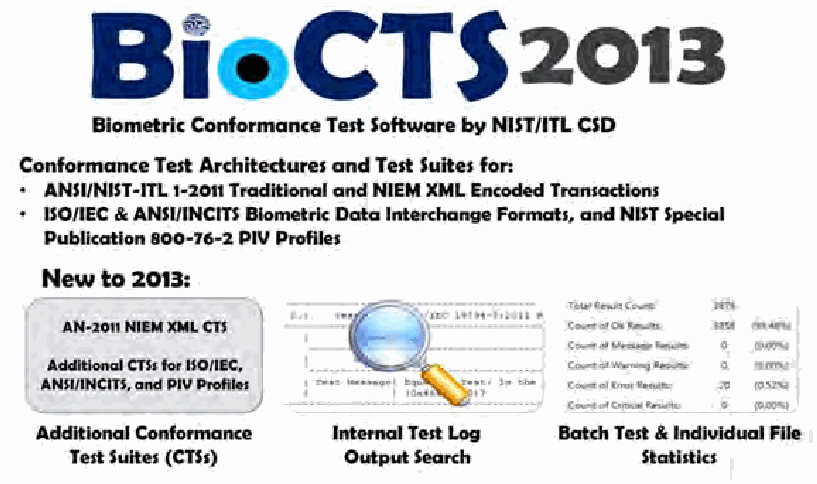
BioCTS 2013の案内図。NIST/ITL CSDの生体認証適合性試験ソフトウェアについて、ANSI/NIST-ITL形式や生体データ交換形式向けの試験アーキテクチャと試験スイートを紹介している。
Figure 3: Biometric Conformance Test Software by NIST/ITL CSD
図3：NIST/ITL CSDによる生体認証適合性試験ソフトウェア
未レビュー訳Program and Project Achievements for FY 2013
2013会計年度のプログラムおよびプロジェクトの成果
未レビュー訳These conformance-testing tools provide significant Keynote talks and presentations on biometric standards functionality, usability, and performance. In addition to supplying
これらの適合性試験ツールは、機能性、使いやすさ、性能を大きく向上させる。／生体認証標準に関する基調講演および発表
未レビュー訳and conformity assessment at national and international
国内外の会議における標準化および適合性評価
未レビュー訳an installer version of the CTAs, which supports new and
CTAのインストーラー版を提供した。これにより、新しいバージョンと
未レビュー訳conferences
会議
未レビュー訳existing CTSs with new graphical user interface enhancements,
既存のCTSに新しいグラフィカルユーザーインターフェース機能を追加し、
未レビュー訳 Related technical publications and participation in
• 関連する技術刊行物の作成および
未レビュー訳the CSD project team extended the work to a command line
CSDのプロジェクトチームは、作業をさらに進め、コマンドライン
未レビュー訳conference program committees and paper reviews
会議プログラム委員会への参加および論文査読
未レビュー訳interface version for AN-2011 traditional encoding that runs under Windows and Linux (with Mono). The test tools developed
ANSI/NIST-ITL 1-2011の従来型符号化に対応し、WindowsおよびLinux（Mono使用）で動作するインターフェース版を提供した。開発した試験ツールは
未レビュー訳NIST helped develop the program of the 2013 Biometric
NISTは2013年の生体認証コンソーシアム会議のプログラム作成を支援した。
未レビュー訳support a Web-based environment. A prototype was developed,
Webベース環境に対応する。プロトタイプを開発し、
未レビュー訳Consortium Conference, which CSD’s Mr. Fernando Podio co-
会議ではCSDのFernando Podio氏が共同
未レビュー訳tested, and demonstrated at the last Biometric Consortium
試験を行い、前回の生体認証コンソーシアム
未レビュー訳chaired. Held September 17-19, 2013, in Tampa, Florida, this
議長を務めた。会議は2013年9月17～19日にフロリダ州タンパで開催され、
未レビュー訳Conference.
会議。
未レビュー訳year’s conference included nearly 1,600 attendees from 30
同年の会議には、政府、産業界、学術界から30か国近く、約1,600人が参加した。
未レビュー訳Based on the detailed analysis of the biometric standards countries representing government, industry, and academia. (ISO/IEC and AN-2011) required to develop the associated
生体認証標準（ISO/IECおよびANSI/NIST-ITL 1-2011）の詳細分析に基づき、関連する
未レビュー訳CSD supported a booth at the conference’s technical
CSDは会議の技術展示会にブースを出展した。
未レビュー訳conformance test tools, the CSD team provided technical
適合性試験ツールの提供に加え、CSDチームは技術的な
未レビュー訳exposition and presented material regarding the conformance
展示会で適合性試験ツールに関する資料を発表した。
未レビュー訳contributions to the relevant standards bodies. In FY 2013,
関連する標準化団体への貢献。2013会計年度には、
未レビュー訳test tool development project. The conference program included
試験ツール開発プロジェクト。会議プログラムには
未レビュー訳these included:
内容には次が含まれる。
未レビュー訳sessions on Federal Government programs, advances in
連邦政府のプログラム、生体認証技術と標準の進展、
未レビュー訳 Over 200 test assertions for AN-2011 Record Type 18 – biometric technologies and standards, and Biometrics Identity DNA Data Record
• ANSI/NIST-ITL 1-2011レコードタイプ18（生体認証アイデンティティDNAデータレコード（BIdS））に関する200件を超える試験アサーション、および
未レビュー訳and Security (BIdS) research. NIST’s session highlighted achievements and ongoing biometric research, testing, and
セキュリティ（BIdS）の研究。NISTのセッションでは、生体認証の研究・試験における成果と継続中の活動、
未レビュー訳 Technical contributions on the AN-2011 standard and the
• ANSI/NIST-ITL 1-2011規格およびその
未レビュー訳standards projects. Over 140 speakers participated in the
標準化プロジェクト。プログラムには140人を超える講演者が参加した。
未レビュー訳published XML schema
公表済みのXMLスキーマ
未レビュー訳program.
プログラム。
未レビュー訳 Technical contributions to JTC 1/SC 37 (via INCITS M1)
• INCITS M1を通じたJTC 1/SC 37への技術的貢献
未レビュー訳ITL’s Biometric Resource Center:
ITLの生体認証リソースセンター：
未レビュー訳on SC 37 XML namespaces, data elements, schemas,
SC 37のXML名前空間、データ要素、スキーマに関する
未レビュー訳http://www.nist.gov/biometrics
http://www.nist.gov/biometrics
未レビュー訳and related items; an XML-based data interchange format framework and DNA data interchange format
および関連項目。XMLベースのデータ交換形式の枠組みとDNAデータ交換形式
未レビュー訳BioCTS 2013 - Biometric Conformance Test Tool Downloads:
BioCTS 2013—生体認証適合性試験ツールのダウンロード：
未レビュー訳In addition to ongoing participation and management http://www.nist.gov/itl/csd/biometrics/biocta_download.
継続的な参加と運営に加え、http://www.nist.gov/itl/csd/biometrics/biocta_download.
未レビュー訳cfm#CTAdownloads
cfm#CTAdownloads
未レビュー訳of biometric standards activities in INCITS M1 and JTC 1/ SC 37, in FY 2014, CSD plans to develop additional CTSs to test implementations of selected international biometric Biometric Consortium website:
INCITS M1およびJTC 1/SC 37における生体認証標準化活動。2014会計年度には、CSDは選定した国際生体認証データ交換形式の実装を試験するCTSを追加開発する予定である。／生体認証コンソーシアムのウェブサイト：
未レビュー訳http://www.biometrics.org
http://www.biometrics.org
未レビュー訳data interchange formats specified in XML encoding (under development in JTC 1/SC 37). The CSD team also plans to develop conformance test assertions for selected record types Biometric Consortium 2013 conference program (released of the 2013 version of the ANSI/NIST standard and plans presentations are linked):
JTC 1/SC 37で開発中のXML符号化データ交換形式。CSDチームはまた、2013年版ANSI/NIST標準の選定レコードタイプを対象とする適合性試験アサーションを開発する予定である。／生体認証コンソーシアム2013年会議プログラム（公開されたプレゼンテーション資料）：
未レビュー訳http://www.biometrics.org/bc2013/program.pdf
http://www.biometrics.org/bc2013/program.pdf
未レビュー訳to develop the associated CTA/CTS for traditional and XML
従来型およびXML
未レビュー訳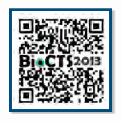
BioCTS 2013のウェブサイトへ誘導するQRコード。
encoded transactions. The latest version of the ANSI/NIST standard now incorporates extended forensics-related data, such as a dental supplement and additional record types, such as voice data record. The team will continue researching and developing additional test environments support, such as web services and tools in the cloud. The research plan expands to technical interfaces,such as BiometricApplication Programming Interface standards specified in Object Oriented Programming Contact: and Biometric Information Assurance Services standards.
で符号化されたトランザクションに対応するCTA/CTSを開発する。ANSI/NIST標準の最新版には、歯科情報の補足データなど、フォレンジック関連の拡張データが組み込まれており、音声データレコードなど追加のレコードタイプも含まれる。チームは、ウェブサービスやクラウド上のツールなど、追加の試験環境への対応について研究開発を続ける。研究計画は、オブジェクト指向プログラミングで規定される生体認証アプリケーションプログラミングインターフェース標準や、生体認証情報保証サービス標準など、技術インターフェースにも拡大する。連絡先：
未レビュー訳Mr. Fernando Podio (301) 975-2947
Fernando Podio氏（301）975-2947
未レビュー訳Outreach efforts in FY 2013 in support of biometric standards
2013会計年度における生体認証標準化支援のための周知活動
未レビュー訳fernando.podio@nist.gov
fernando.podio@nist.gov
未レビュー訳development and conformity assessment efforts included: Contribution of the area editor for articles on biometric standards for Springer’s second edition of the Biometrics Encyclopedia (under development), where 25 papers were reviewed and edited
標準の策定および適合性評価に関する取り組みには、次が含まれる。• Springer社の「Biometrics Encyclopedia」第2版（策定中）に掲載する生体認証標準の記事について、分野編集者として寄稿した。25本の論文を査読・編集した。
未レビュー訳Computer Security Division Annual Report - 2013
コンピュータセキュリティ部門年次報告書—2013年
未レビュー訳Cybersecurity of Cyber-Physical Systems (CPS) need to provide a common lexicon and taxonomy, a common
サイバーフィジカルシステム（CPS）のサイバーセキュリティ。CPSには共通の用語集と分類体系、共通の
未レビュー訳architectural vision to help facilitate interoperability between
要素およびシステム間の相互運用性を促進するためのアーキテクチャビジョンが必要である。
未レビュー訳Leveraging CSD’s expertise in cybersecurity for industrial elements and systems, and promotes communication across control systems, smart grid, hardware-enabled security, the breadth of CPS stakeholders. and embedded systems, the division is now researching
産業用制御システム、スマートグリッド、ハードウェア基点のセキュリティに関するCSDの専門知識を活用し、CPS関係者全体の連携を促進する。／組込みシステムを含むCPS分野について、同部門は現在研究を進めている。
未レビュー訳CSD, in conjunction with NIST’s Engineering Laboratory, will
CSDはNIST工学研究所と連携し、
未レビュー訳cybersecurity needs of the broader landscape of cyber-
より広範なサイバーフィジカルシステムのサイバーセキュリティニーズに対応する。
未レビュー訳finalize the revision of SP 800-82 in FY 2014. CSD will continue
2014会計年度にSP 800-82の改訂を完了する。CSDは今後も
未レビュー訳physical systems (CPS). CPS are hybrid networked cyber and
サイバーフィジカルシステム（CPS）。CPSは、ネットワーク接続されたサイバー要素と
未レビュー訳to participate in the International Society of Automation (ISA)
国際自動制御学会（ISA）への参加を継続する。
未レビュー訳engineered physical elements co-designed to create adaptive
適応性を実現するよう共同設計された物理要素
未レビュー訳99 Committee, which develops and establishes standards,
規格、
未レビュー訳and predictive systems that respond in real-time to enhance
性能を高めるため、リアルタイムに応答する予測型システムであり、
未レビュー訳recommended practices, technical reports, and related
推奨実務、技術報告書、および関連
未レビュー訳performance with varying degrees of human interaction, and
人間の関与度に幅を持たせた性能を実現し、
未レビュー訳information that define procedures for implementing
実装手順を定める情報を含む。
未レビュー訳are commonly used in the nation’s critical infrastructure.
国の重要インフラで広く利用されている。
未レビュー訳electronically secure industrial automation and control systems
電子的に保護された産業オートメーションおよび制御システム
未レビュー訳Such systems control the electrical grid, provide clean water,
これらのシステムは電力網を制御し、安全な水を供給し、
未レビュー訳and security practices, and for assessing electronic security
セキュリティ実務、および電子セキュリティ性能の評価
未レビュー訳produce chemicals, and underlie transportation systems. CPS
化学物質を製造し、交通システムを支える。CPSの
未レビュー訳performance. Leveraging the initial NIST notional reference
性能。NISTが最初に示した概念上のリファレンス
未レビュー訳capabilities continue to grow as a result of technological
技術の進展に伴い、その能力は拡大し続けている。
未レビュー訳architecture as a starting point to address the lack of an
アーキテクチャを出発点として、次の不足に対処する。
未レビュー訳advances, enabling future engines of growth, such as advanced
進歩は、高度な製造など将来の成長を担う分野を可能にし、
未レビュー訳industry-wide consensus definition, reference architecture,
業界共通の合意に基づく定義、リファレンスアーキテクチャ、
未レビュー訳manufacturing, and advancements in safety initiatives, such as
安全性向上の取り組みの進展などを含む。
未レビュー訳and taxonomy for CPS, CSD will work in collaboration with
CPSの分類体系について、CSDは他部門と協力して取り組む。
未レビュー訳autonomous vehicles.
自動運転車。
未レビュー訳NIST’s Engineering Laboratory and ITL’s Software and Systems
NIST工学研究所およびITLのソフトウェア・システム
未レビュー訳Cybersecurity is an important crosscutting discipline that is division, and Advanced Networking Technologies division to critical to safeguarding CPS and supporting communications lead a public-private working group of government, academia, and information infrastructure. CPS presents unique challenges, and industry stakeholders. The working group will consist of 5 including the need for real-time response in support of technical subgroups: 1) Definitions and Taxonomy, 2) Reference extremely high availability, predictability, and reliability. Despite Architecture, 3) Use Cases, 4) Cybersecurity and Privacy, and 5) the ubiquity and criticality of CPS, additional thought is required Timing. CSD will lead the Cybersecurity and Privacy subgroup regarding the design of secure CPS. As a result, there have been focused on identifying strategies for cybersecurity and privacy numerous successful attacks targeting CPS for the control of in CPS, and work collaboratively with the other subgroups to
サイバーセキュリティは、サイバーフィジカルシステム（CPS）の保護と通信・情報インフラの支援に不可欠な、分野横断的な重要領域である。CPSには、極めて高い可用性、予測可能性および信頼性を支えるリアルタイム応答の必要性など、固有の課題がある。CPSが広く普及し重要性を増しているにもかかわらず、安全なCPS設計にはさらなる検討が必要である。その結果、重要インフラの制御を狙ったCPSへの攻撃が数多く発生している（例：Stuxnet、Duqu、Flame、Gauss）。また、ネットワーク技術部門と
未レビュー訳ensure that cybersecurity is included as a design principle in
サイバーセキュリティを設計原則として含めることを確実にする。
未レビュー訳critical infrastructure (e.g., Stuxnet, Duqu, Flame, Gauss).
重要インフラ（例：Stuxnet、Duqu、Flame、Gauss）。
未レビュー訳development.
開発。
未レビュー訳In April 2013, CSD and the Cyber Security Research Alliance (CSRA) co-hosted a 2-day workshop to explore emerging Contacts: research needs for cybersecurity in CPS with the diverse Ms. Tanya Brewer
2013年4月、CSDとサイバーセキュリティ研究アライアンス（CSRA）は、CPSサイバーセキュリティの新たな研究ニーズを探る2日間のワークショップを共催した。参加者は多様な
未レビュー訳Ms. Suzanne Lightman
連絡先：Tanya Brewer氏
未レビュー訳cyber-physical community at large. The workshop brought (301) 975-4534
Suzanne Lightman氏
未レビュー訳(301) 975-6442
サイバーフィジカル分野の関係者全体であった。ワークショップには、CPS関連のセキュリティ問題に取り組んだ工学およびITの専門家が集まった。
未レビュー訳together engineering and IT experts who have dealt with tbrewer@nist.gov
(301) 975-4534
未レビュー訳suzanne.lightman@nist.gov
(301) 975-6442
未レビュー訳security issues related to CPS. Representatives from industry, academia, and government engaged in interactive discussions Ms. Vicky Yan Pillitteri during the workshop in the areas of supply chain, assurance, (301) 975-8542 threat information, identifying existing tools and practices to victoria.yan@nist.gov secure CPS, security in acquisition and implementation, and trustworthy operations. Attendees were invited to participate
産業界、学術界および政府の代表者が、サプライチェーン、保証、脅威情報、CPS保護に利用できる既存ツール・実践の特定、調達・実装時のセキュリティ、信頼できる運用について、ワークショップで対話形式の議論を行った。参加者は分科会への参加も招請された。
未レビュー訳Federal Cybersecurity Research & Development
連邦サイバーセキュリティ研究開発（R&D）
未レビュー訳in break-out sessions where the discussion topics were briefly
各分科会では議論のテーマを事前に設定した。
未レビュー訳(R&D)
（R&D）
未レビュー訳framed, allowing the attendees to explore the discussion topics and to share their experiences with integrating security into The Networking and Information Technology Research and existing organizations (e.g., lessons learned and examples).
これにより参加者はテーマを掘り下げ、既存組織へのセキュリティ統合に関する経験（教訓や事例など）を共有できた。
未レビュー訳Development (NITRD) Program provides a framework in which many federal agencies come together to coordinate their
ネットワーク情報技術研究開発（NITRD）プログラムは、複数の連邦機関が研究開発の取り組みを調整するための枠組みを提供する。
未レビュー訳CSD, in conjunction with ITL’s Advanced Network
CSDは、ITLの先進ネットワーク
未レビュー訳networking and IT research and development (R&D) efforts.
ネットワークおよびITの研究開発（R&D）を調整する。
未レビュー訳Technologies division, Information Access division, and NIST’s
技術部門、情報アクセス部門およびNISTの
未レビュー訳CSD remained committed to the value of communicating its
CSDは、自らの研究開発活動を他の連邦機関の同僚に伝え、
未レビュー訳Engineering Laboratory, collaborated to develop an initial NIST
工学研究所と協力して、CPS向けの初期概念参照アーキテクチャを策定した。
未レビュー訳R&D efforts to other federal colleagues and identifying the
連邦政府全体の研究開発活動を支援する機会を特定することに
未レビュー訳notional reference architecture for CPS. This notional reference
この概念参照アーキテクチャは、
未レビュー訳opportunities to support R&D efforts throughout the Federal
引き続き取り組んだ。
未レビュー訳architecture was designed at such a level of abstraction that
CPS全体に適用できる抽象度で設計される一方、モジュール化と統合の文脈を提供する。CPS概念参照アーキテクチャは、複数機関の月例会合であるCSIA機関間作業部会（IWG）における議論を通じて策定された。
未レビュー訳Government.
2013会計年度のプログラムおよびプロジェクトの成果。投票システムガイドライン（VVSG）1.1。セキュリティガイドラインは2012会計年度に更新され、投票システムの監査可能性の向上、ソフトウェア完全性保護の強化、アクセス制御要件の拡充、暗号セキュリティ機構の適切な実装の確保を図った。また、CSDは選挙支援委員会（EAC）および国防総省（DoD）の連邦投票支援プログラム（FVAP）による、制服組・海外市民投票法（UOCAVA）に基づく市民の投票プロセス改善を、電子技術の活用により支援した。チームはTDCGのUOCAVA作業部会と連携し、
未レビュー訳it can be applied across the breadth of the CPS, yet provides modularization and context for integration. The notional In FY 2013, the CSIA Interagency Working Group (IWG) monthly CPS reference architecture was driven from a community meetings provided an opportunity to learn and share about
現在のUOCAVA投票プロセスで用いられる技術（郵送投票、オンライン有権者登録、
未レビュー訳ongoing research related to the themes and thrusts expressed Guidelines (VVSG) 1.1. The security guidelines were updated in the Strategic Plan for the Federal Cybersecurity Research and in FY 2012 to improve the auditability of voting systems, to Development. CSD briefed the working group regarding efforts provide greater software integrity protections, to expand and on Executive Order 13636, “Improving Critical Infrastructure improve access control requirements, and to help ensure Cybersecurity,” under which NIST has been directed to work cryptographic security mechanisms are implemented properly. with stakeholders to develop a voluntary framework for reducing In addition, CSD supported the efforts of the EAC and Federal cyber risks to critical infrastructure. CSD also described Voting Assistance Program (FVAP) of DoD to improve the voting work on the Advanced Network Technologies division’s High process for citizens under the Uniformed and Overseas Citizens Assurance Domain project, which exists to foster development Voting Act (UOCAVA) by leveraging electronic technologies. The and deployment of new network security technologies to team worked with the TDCG’s UOCAVA Working Group to develop increase trust in online communications.
原文更新後、再確認待ち
a risk analysis on technologies used in current UOCAVA voting processes, including vote-by-mail, online voter registration,
電子投票用紙の配信、オンライン投票用紙への記入を含む）のリスク分析を実施した。
未レビュー訳CSD is also a regular participant in the coordination
2014会計年度、NISTはEACによる
未レビュー訳electronic ballot delivery, and online ballot marking.
移転を可能にする。NISTのサイバーセキュリティ専門知識を共有して
未レビュー訳activities of the federal Special Cyber Operations Research and Engineering (SCORE) Committee. SCORE enables technology
VVSGへの公開意見に対する回答作成と更新を支援し続ける。
未レビュー訳In FY 2014, NIST will continue to assist the EAC in developing
および成果を提供する。SCORE委員会は連邦政府の
未レビュー訳transfer through the sharing of NIST cybersecurity expertise
VVSG 1.1も支援する。さらに、CSDは
未レビュー訳responses to public comments and providing updates to VVSG
リーダーと連携し、ホワイトハウスの包括的国家
未レビュー訳and output. The SCORE committee interacts with federal
EACおよびFVAPによるUOCAVA有権者の投票プロセス改善を継続支援する。
未レビュー訳1.1. Additionally, CSD will continue to support efforts for the
サイバーセキュリティ構想（CNCI）の一環として活動する。
未レビュー訳leaders as part of the White House’s Comprehensive National
サイバーセキュリティとプライバシー分科会を主導し、CPSのセキュリティ・プライバシー戦略を特定する。
未レビュー訳EAC and FVAP to improve the voting process for UOCAVA voters.
他の分科会と協力し、設計原則としてサイバーセキュリティを含める。
未レビュー訳Cybersecurity Initiatives (CNCI).
オンライン通信への信頼を高める新しいネットワークセキュリティ技術の開発・展開を促進する。
未レビュー訳CSD will continue security research efforts to support future standards development efforts, particularly in the areas of risks
CSDは、特に投票システムのリスクや革新的な投票システムアーキテクチャの分野で、将来の標準策定を支援するセキュリティ研究を継続する。
未レビュー訳Contacts:
連絡先：
未レビュー訳to voting systems and innovative voting system architectures.
Bill Newhouse氏
未レビュー訳Mr. Bill Newhouse
Ernest McDuffie博士
未レビュー訳Dr. Ernest McDuffie
CSIA IWG、CSIA SSG
未レビュー訳CSIA IWG, CSIA SSG
SEW教育チームおよびSCORE代表 http://vote.nist.gov
未レビュー訳SEW Education Team and SCORE rep http://vote.nist.gov
(301) 975-2869
未レビュー訳(301) 975-2869
(301) 975-8897
未レビュー訳(301) 975-8897
william.newhouse@nist.gov ernest.mcduffie@nist.gov
未レビュー訳william.newhouse@nist.gov ernest.mcduffie@nist.gov
連絡先：Andrew Regenscheid氏、Joshua Franklin氏
未レビュー訳Contacts: Mr. Andrew Regenscheid Mr. Joshua Franklin
電子投票のセキュリティ面
未レビュー訳Security Aspects of Electronic Voting
(301) 975-5155
未レビュー訳(301) 975-5155
(301) 975-8463
未レビュー訳(301) 975-8463
andrew.regenscheid@nist.gov joshua.franklin@nist.gov
未レビュー訳andrew.regenscheid@nist.gov joshua.franklin@nist.gov
[表]
未レビュー訳原本の表画像
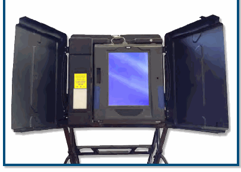
Health Information Technology Security
医療情報技術（HIT）は、医療情報の安全な利用と共有を通じて、より良い患者ケアを可能にする。医療の質向上、医療過誤の減少、ケア提供および管理の効率化、
未レビュー訳Health information technology (HIT) enables better patient care through secure use and sharing of health information. It leads to improvements in healthcare quality, reduced medical errors,increased efficiencies in care delivery and administration,
および住民の健康状態の改善につながる。
未レビュー訳and improved population
健康。これらの目標を達成するには、医療
未レビュー訳内部の円盤が見えるハードディスクドライブ。
health. Central to reaching these goals is the assurance of the confidentiality, integrity, and availability of health
2002年、議会は投票設備の更新を促すため、米国投票支援法（HAVA）を成立させた。
未レビュー訳In 2002, Congress passed the Help America Vote Act (HAVA) to
情報の機密性、完全性および可用性を保証することが不可欠である。CSDは
未レビュー訳information. CSD works
米国全体で進める。HAVAは選挙支援委員会
未レビュー訳encourage the upgrade of voting equipment across the United
政府、産業界、
未レビュー訳with government, industry,
（EAC）およびNIST長官が議長を務める技術ガイドライン策定委員会
未レビュー訳States. HAVA established the Election Assistance Commission
学術界その他と連携し、
未レビュー訳academia, and others to
（TGDC）を設置した。HAVAは、人的要因、セキュリティおよび試験所認定に関する取り組みでEACおよびTGDCに技術支援を提供するようNISTに指示する。NISTの取り組みの一環として、CSDは投票機器のセキュリティに関するEACの活動を支援する。
未レビュー訳(EAC) and the Technical Guidelines Development Committee provide security tools, technologies, and methodologies that (TGDC), chaired by the Director of NIST. HAVA directs NIST to provide for the security and privacy of health information. provide technical support to the EAC and TGDC in efforts related to human factors, security, and laboratory accreditation. As part NIST continued its HIT security outreach efforts in FY 2013. of NIST’s efforts, CSD supports the activities of the EAC related NIST and the Department of Health and Human Services’ (DHHS)
医療情報を保護するためのセキュリティツール、技術および方法論を提供する。
未レビュー訳Office for Civil Rights (OCR) cohosted the sixth annual HIPAA
CSDは2013会計年度もHITセキュリティのアウトリーチを継続した。
未レビュー訳to voting equipment security.
NISTと保健福祉省（DHHS）の
未レビュー訳Security Rule conference, “Safeguarding Health Information:
公民権局（OCR）は第6回HIPAA
未レビュー訳In the past year, NIST supported the EAC by developing Building Assurance through HIPAA Security,” in May 2013 at responses to public comments on the Voluntary Voting System
投票機器のセキュリティに関する活動。
未レビュー訳the Ronald Reagan Building and International Trade Center in Supply Chain Risk Management (SCRM) for Washington, D.C. The conference offered important sessions Information and Communications Technology that focused on broad topics of interest to the healthcare (ICT) and health IT security community. Over 600 in-person and virtual attendees from federal, state, and local governments, Federal agency information systems are increasingly at risk academia, HIPAA-covered entities and business associates, of both intentional and unintentional supply chain compromise. industry groups, and vendors heard from, and interacted with, The management of ICT supply chain risk includes ensuring the healthcare, security, and privacy experts on technologies and integrity, security, and resilience of the supply chain and the methodologies for safeguarding health information and for products and services it delivers (Figure 4). Today’s ICT supply implementing the requirements of the HIPAA Security Rule. chains have increased complexity, diversity, and scale. Federal Presentations covered a variety of current topics including:
原文更新後、再確認待ち
Government information systems have rapidly expanded in terms of capability and number, with an increased reliance on
過去1年間にNISTはEACを支援し、自主的投票システム
未レビュー訳 Updates on the OCR privacy, security, and breach
HIPAAセキュリティによる保証の構築」を2013年5月に開催した。
未レビュー訳outsourcing and commercially available products. These trends
コンピュータセキュリティ部門年次報告書—2013年。ICTサプライチェーンリスク管理（SCRM）。連邦機関の情報システムは、サプライチェーンの意図的・非意図的な侵害リスクが高まっている。ICTサプライチェーンリスク管理には、サプライチェーンと、それが提供する製品・サービスの完全性、セキュリティおよびレジリエンスを確保することが含まれる（図4）。現在のICTサプライチェーンは複雑性、多様性および規模が増大している。連邦政府の情報システムは、機能と数の両面で急速に拡大し、
未レビュー訳notification audit program
OCRのロンald Reaganビルおよび国際貿易センター（ワシントンD.C.）で開催した。会議では、医療
未レビュー訳have caused federal departments and agencies to have a lack
アウトソーシングおよび市販製品への依存が高まった。これらの傾向により、連邦省庁・機関は取得した技術がどのように
未レビュー訳 Patient and provider identity management, HIPAA
OCRのプライバシー、セキュリティおよび侵害
未レビュー訳of visibility and understanding of how acquired technology is
通知監査プログラムの更新
未レビュー訳requirements in cloud and mobile environments
開発、統合および配備されたかについて、可視性と理解が不足するようになった。
未レビュー訳developed, integrated, and deployed. Supply chain risks also affect the processes, procedures, and practices used to assure
開発、統合および配備される。サプライチェーンリスクは、製品および
未レビュー訳 HIPAA rule changes affecting breach notification and
HIPAA規則の変更による侵害通知および
未レビュー訳the integrity, security, resilience, and quality of products and
サービスの完全性、セキュリティ、レジリエンスおよび品質を保証するためのプロセス、手順および実務にも影響する。この可視性と理解の不足は、連邦省庁・機関が継承するサプライチェーンリスクに関する判断への統制力も低下させた。
未レビュー訳HIPAA security
HIPAAセキュリティ
未レビュー訳services. This lack of visibility and understanding, in turn, has decreased federal departments’ and agencies’ control
重要インフラのサイバーセキュリティを向上するための
未レビュー訳 Cybersecurity Framework for improving critical
フレームワーク
未レビュー訳regarding decisions affecting the inherited supply chain risks
重要インフラのサイバーセキュリティを向上するための
未レビュー訳infrastructure cybersecurity
活動
未レビュー訳and the ability to manage those risks.
リスクを管理する能力も低下させた。
未レビュー訳 Health IT activities at the National Cybersecurity Center
国立サイバーセキュリティ・センター・オブ・エクセレンス（NCCoE）における医療IT活動
未レビュー訳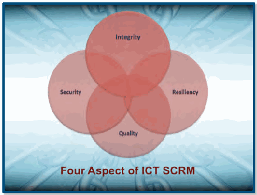
ICTサプライチェーンリスク管理の4要素を示す図。「完全性」「セキュリティ」「レジリエンス」「品質」の円が重なっている。
of Excellence
内部脅威を管理する方法
未レビュー訳 Methods for managing insider threat
エンドユーザーデバイスのセキュリティ設定を管理するためのツール
未レビュー訳 Tools available to manage security settings on end-user devices
基調講演は、IntelのHealth Strategy & Solutions Groupのフェロー兼ゼネラルマネージャーであるEric Dishman氏が行った。
未レビュー訳The keynote address was delivered by Eric Dishman, Fellow and General Manager of the Health Strategy & Solutions Group at Intel.
2014会計年度に、NISTは次を発行する予定である。
未レビュー訳In FY 2014, NIST plans to issue a
Special Publication（SP）800-66「HIPAAセキュリティ規則実施のための入門
未レビュー訳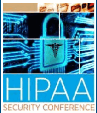
青い回路基板と錠前を背景にした「HIPAA Security Conference（HIPAAセキュリティ会議）」のポスター。
draft revision to Special Publication (SP) 800-66, An Introductory
図4：ICT SCRMの4要素
未レビュー訳Figure 4: The Four Elements of ICT SCRM
リソースガイド」の改訂草案。継続的なアウトリーチの一環として、NISTはOCRと第7回医療情報保護会議を共催する予定でもある。
未レビュー訳Resource Guide for Implementing the HIPAA Security Rule. As part of its continued outreach efforts, NIST also plans to co-host the seventh annual Safeguarding Health Information conference with OCR.
http://www.nist.gov/healthcare/security/
未レビュー訳http://www.nist.gov/healthcare/security/
連絡先：Kevin Stine氏 (301) 975-4483 kevin.stine@nist.gov
未レビュー訳Contact: Mr. Kevin Stine (301) 975-4483 kevin.stine@nist.gov
2013会計年度のプログラムおよびプロジェクトの成果
未レビュー訳Program and Project Achievements for FY 2013
組織の準備態勢、ベストプラクティスおよび標準、ならびにリスク評価を付した物理・サイバーのハブとノードの複合ネットワーク脆弱性マップ
未レビュー訳Organizational Readiness, Best Practices and Standards, and a composite network vulnerability map of physical and cyber hubs and nodes, with risk ratings
— 協働／クラウドソーシングポータル：利用者が記録したICT SCRMの利用・悪用事例、および脆弱性・対応に関するリアルタイム投票
未レビュー訳 Collaboration/Crowdsourcing Portal: User-documented ICT SCRM use/abuse cases and real-time polling about vulnerabilities and responses
— ICT SCRM施策：産業界、学術界および政府の適切な関係者が更新できる、産業界・公共部門の現行ICT SCRMベストプラクティス、標準および政策改革施策の動的マトリクス
未レビュー訳 ICT SCRM Initiatives: A dynamic matrix of current industry and public sector ICT SCRM best practices, standards, and policy reform initiatives that can be updated by appropriate individuals from across industry, academia, and government
— ICT SCRMデジタルライブラリ：方針に関するオンラインリポジトリ
未レビュー訳 ICT SCRM Digital Library: An online repository of policy
図5：ICTサプライチェーンリスク
未レビュー訳Figure 5: ICT Supply Chain Risk
およびICT SCRM関連の学術文書
未レビュー訳and academic documents related to ICT SCRM
ICT SCRMプロジェクトは、連邦機関がシステム、製品およびサービスのライフサイクル全体を通じてサプライチェーンリスクを戦略的に管理できるよう、標準化され、反復可能で実用的なリソース一式を提供することを目指す。2014会計年度、CSDはNIST SP 800-161の草案作成・公開に向けた作業を続ける。
未レビュー訳The ICT SCRM project seeks to provide federal agencies with a toolkit of standardized, repeatable, and practical resources In FY 2014, CSD will continue its work to develop and to strategically manage supply chain risk throughout the entire publish draft NIST SP 800-161. It will research and develop
機関がICTサプライチェーンリスクをより効果的に管理するための
未レビュー訳tools and guidance to help agencies more effectively manage
ツールおよび指針を研究・開発する。さらにNISTは、
未レビュー訳lifecycle of systems, products, and services.
ライフサイクル全体にわたる。
未レビュー訳their ICT supply chain risk. Additionally, NIST will continue to
2012年10月、NISTは産業界、
未レビュー訳In October 2012, NIST held a workshop with industry, co-chair Working Group 2 of the White House’s Comprehensive academic, and government stakeholders to discuss:
包括的国家サイバーセキュリティ構想（CNCI）11の作業部会2「グローバルサプライチェーンリスク管理の多面的アプローチの策定」の共同議長を務め、
未レビュー訳National Cybersecurity Initiative (CNCI) 11, Develop a Multi-Pronged Approach for Global Supply Chain Risk Management,
学術界および政府の関係者とワークショップを開催し、次を議論した。
未レビュー訳 The fundamental underpinnings of ICT SCRM (terms,
サプライチェーンリスク管理に関する国内外の標準化活動にも参加する。
未レビュー訳and participate in national and international standards
— ICT SCRMの基本的基盤（用語、
未レビュー訳definitions, characterizations)
定義、特徴付け）
未レビュー訳activities related to supply chain risk management. Feedback from organizations implementing ICT SCRM programs will
ICT SCRMプログラムを実施する組織からのフィードバックを評価し、ベストプラクティスを蓄積する。NISTは
未レビュー訳 Current and needed commercially reasonable ICT SCRM-related standards and practices (need, scope, and be evaluated, and best practices will be accumulated. NIST
— 商業的に合理的な、現行および必要なICT SCRM関連の標準・実務（必要性、範囲および
未レビュー訳will continue to engage stakeholders to identify needs and
ニーズの特定に関係者と引き続き取り組む。
未レビュー訳development approach)
開発アプローチ）
未レビュー訳opportunities for providing additional guidance regarding
追加ガイダンスを提供する機会
未レビュー訳 Current and needed ICT SCRM tools, technology, and
• 現在利用できるICTサプライチェーンリスク管理（SCRM）ツール・技術、および必要な
未レビュー訳identifying and implementing supply chain protections.
サプライチェーン保護の特定と実施。
未レビュー訳techniques useful in securing the ICT supply chain
ICTサプライチェーンの保護に有効な技法
未レビュー訳http://csrc.nist.gov/scrm/
http://csrc.nist.gov/scrm/
未レビュー訳 Current and needed research and resources
• 現在必要とされている研究およびリソース
未レビュー訳ICT SCRM Team email: scrm-nist@nist.gov
ICT SCRMチーム連絡先：scrm-nist@nist.gov
未レビュー訳NIST used input from the workshop and additional stakeholder
NISTは、ワークショップおよび追加の関係者
未レビュー訳Contacts:
連絡先：
未レビュー訳forums to begin developing an initial public draft of NIST SP 800-161, Supply Chain Risk Management Practices for Federal Mr. Jon Boyens
フォーラムからの意見を用い、NIST SP 800-161「連邦情報システムおよび組織のサプライチェーンリスク管理実務」の初回公開草案の策定を開始した。Jon Boyens氏
未レビュー訳Ms. Celia Paulsen
Celia Paulsen氏
未レビュー訳Project Lead
プロジェクトリーダー
未レビュー訳(301) 975-5549
（301）975-5549
未レビュー訳Information Systems and Organizations, which is scheduled to
情報システムおよび組織向け。2014会計年度に最終化する予定である。この文書は、
未レビュー訳(301) 975-5981
（301）975-5981
未レビュー訳celia.paulsen@nist.gov
celia.paulsen@nist.gov
未レビュー訳be finalized in FY 2014. This document provides guidance to
2014会計年度に最終化する予定である。この文書は、
未レビュー訳jon.boyens@nist.gov
jon.boyens@nist.gov
未レビュー訳federal departments and agencies on identifying, assessing, and mitigating ICT supply chain risks at all levels in their organizations and utilizes and builds on existing guidance in the unified information security framework.
連邦省庁および機関に対し、組織のあらゆる階層でICTサプライチェーンリスクを特定、評価、軽減するための指針を示し、統合情報セキュリティフレームワークの既存のガイダンスを活用・拡張する。
未レビュー訳Additionally in FY 2013, a grant was awarded to the University of Maryland’s Supply Chain Management Center to support the development and hosting of a web application with the following capabilities: Enterprise Risk Assessments: A three-tier risk analysis system based on the ICT SCRM Community Framework Reference Architecture – A Strategic Assessment/
さらに2013会計年度、NISTはメリーランド大学サプライチェーン管理センターに助成金を交付し、次の機能を持つウェブアプリケーションの開発と運用を支援した。• エンタープライズリスク評価：ICT SCRMコミュニティ・フレームワークのリファレンスアーキテクチャに基づく3段階のリスク分析システム—戦略評価／
未レビュー訳Computer Security Division Annual Report - 2013
コンピュータセキュリティ部門年次報告書—2013年
未レビュー訳PSCR’s Public Safety Broadband Demonstration Network
PSCRの公共安全ブロードバンド実証ネットワーク
未レビュー訳Nationwide Public Safety Broadband Network
全国公共安全ブロードバンドネットワーク
未レビュー訳located in Boulder, conduct research into identity management
ボルダーに所在し、ID管理技術を研究する。
未レビュー訳(NPSBN) Security
（NPSBN）のセキュリティ
未レビュー訳technologies for mobile devices that can support the NPSBN,
NPSBNを支援できるモバイルデバイス技術。
未レビュー訳In February 2012, Congress passed the Middle Class Tax and investigate ways to enhance the security of mobile Relief and Job Creation Act. One portion of this legislation calls applications used by the public safety community. CSD for the establishment of a nationwide, interoperable public will continue to engage the public safety communications safety broadband network based on Long-Term Evolution (LTE) community by participating in events such as PSRC’s Annual technology. The network will be deployed and operated by Public Safety Broadband Stakeholder Conference. the First Responder Network Authority (FirstNet). The planned National Public Safety Broadband Network (NPSBN) will “create Contacts: a much needed nationwide interoperable broadband network Ms. Sheila Frankel
2012年2月、議会は中間層減税・雇用創出法を可決した。同法の一部は、Long-Term Evolution（LTE）技術に基づく全国規模で相互運用可能な公共安全ブロードバンドネットワークの設立を求める。このネットワークはFirst Responder Network Authority（FirstNet）が導入・運用する。計画中の全国公共安全ブロードバンドネットワーク（NPSBN）は、「必要性の高い全国相互運用ブロードバンドネットワークを創設し、警察、消防、救急医療サービス担当者その他の公共安全職員が安全に業務を遂行できるよう支援する」。／CSDは、公共安全コミュニティが利用するモバイルアプリケーションのセキュリティ向上策を調査する。PSCR年次公共安全ブロードバンド関係者会議などのイベントに参加し、公共安全通信コミュニティとの連携を続ける。／連絡先：Sheila Frankel氏
未レビュー訳Dr. Nelson Hastings
Nelson Hastings博士
未レビュー訳that will help police, firefighters, emergency medical service (301) 975-3297
担当者（301）975-3297
未レビュー訳(301) 975-5237
（301）975-5237
未レビュー訳sheila.frankel@nist.gov
sheila.frankel@nist.gov
未レビュー訳nelson.hastings@nist.gov
nelson.hastings@nist.gov
未レビュー訳professionals and other public safety
専門職員およびその他の公共安全
未レビュー訳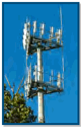
青空を背景に立つ携帯電話基地局のアンテナ塔。
officials stay safe and do their jobs.” (http://www.ntia.doc.gov/category/
職員が安全を確保して業務を遂行できるようにする。」（http://www.ntia.doc.gov/category/
未レビュー訳Smart Grid Cybersecurity
スマートグリッドのサイバーセキュリティ
未レビュー訳public-safety). NIST is directed to establish a list of certified devices and
公共安全）。NISTには、認証済みデバイスおよび
未レビュー訳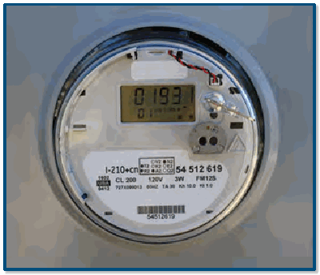
電力量の数値表示がある電力用スマートメーター。
required components for interacting with the nationwide network by public safety officials, vendors, and other interested parties. NIST is directed to conduct research and development that supports the acceleration and advancement of the nationwide network.
全国ネットワークと連携するために公共安全職員、ベンダー、その他の関係者が必要とするコンポーネントの一覧を作成するよう指示されている。NISTは、全国ネットワークの迅速な整備と高度化を支援する研究開発を行うよう求められている。
未レビュー訳In FY 2013, CSD supported the joint National Telecommuni-cations and Information Administration (NTIA) and NIST Public Safety Communications Research (PSCR) program (http://www.pscr.gov) efforts by developing and establishing security-related activities to support the proposed NPSBN. CSD presented details of the PSCR security-related activities at
2013会計年度、CSDはNISTの公共安全通信研究（PSCR）プログラムと全米電気通信情報庁（NTIA）の共同事業（http://www.pscr.gov）を支援し、提案中のNPSBNを支えるセキュリティ関連活動を開発・実施した。CSDはPSCRのセキュリティ関連活動の詳細を
未レビュー訳Figure 6: Smart Meter
図6：スマートメーター
未レビュー訳PSRC’s Annual Public Safety Broadband Stakeholder Conference in June 2013.
2013年6月のPSCR年次公共安全ブロードバンド関係者会議で発表した。
未レビュー訳The major elements of the smart grid are the information technology, the industrial control systems, and the
スマートグリッドの主要要素は、情報技術、産業制御システム、および
未レビュー訳CSD provided comments and contributed text for the security-
CSDは、セキュリティに関するコメントを提供し、本文を寄稿した。
未レビュー訳communications infrastructure used to send command
指令を送信するために用いる通信インフラであり、
未レビュー訳relatedaspectsoftheNational PublicSafetyTelecommunications
国家公共安全電気通信評議会（NPSTC）の公共安全ブロードバンドに関するハイレベル要件に関連する。
未レビュー訳information across the electric grid from generation to
発電から
未レビュー訳Council (NPSTC) Public Safety Broadband High-Level Launch
2012年12月に公開された立ち上げ要件では、段階的に詳細度を高めながら
未レビュー訳distribution systems, and to exchange usage and billing
配電システムへと広がる電力網全体での情報伝達と、使用量・請求
未レビュー訳Requirements, published in December 2012, that describe, in
NPSBNインフラ、機器および通信の技術要件を記述する。
未レビュー訳information between utilities and their customers. Key to the
情報を電力会社と顧客との間で交換する。重要なのは、
未レビュー訳increasing levels of detail, the technical requirements of the
スマートグリッドインフラの導入を成功させる鍵は、
未レビュー訳successful deployment of the smart grid infrastructure is
である。
未レビュー訳NPSBN infrastructure, equipment, and communications.
サイバーセキュリティ戦略の策定であり、新興システムの設計上の考慮事項としてサイバーセキュリティを含める。
未レビュー訳the development of the cybersecurity strategy that includes cybersecurity as a design consideration for new and emerging
CSDはLTE技術の標準策定
未レビュー訳CSD began participating in the standards development
システム、および既存システムにサイバーセキュリティを追加するアプローチ。
未レビュー訳systems, and an approach to adding cybersecurity into
プロセスへの参加を開始した。第3世代パートナーシップ
未レビュー訳process for LTE technology within the 3rd Generation Partnership
電力網は国の経済的
未レビュー訳existing systems. The electric grid is critical to the economic
プロジェクト（3GPP）において、公共安全のセキュリティ要件を支援し、
未レビュー訳Project (3GPP) supporting public safety’s security requirements
国民の身体的な健康にとって重要であり、新たなサイバー
未レビュー訳and physical well-being of the nation, and emerging cyber
近接サービス（ProSe）およびグループ通信
未レビュー訳related to Proximity Services (ProSe) and Group Communication
脅威が電力システムを標的にしていることから、
未レビュー訳threats targeting power systems highlight the need to integrate
システムイネーブラー（GCSE）に関する。さらにCSDは、対象範囲を拡大した。
未レビュー訳System Enablers (GCSE). In addition, CSD broadened its scope
重要資産を保護する高度なセキュリティを統合する必要がある。
未レビュー訳advanced security to protect critical assets.
IETF内で公共安全関連の取り組みも含めることとした。
未レビュー訳within the IETF to include efforts related to public safety.
2013年1月、スマートグリッド相互運用性パネル（SGIP）は
未レビュー訳In January 2013, the Smart Grid Interoperability Panel (SGIP)
2014会計年度、CSDはNPSTCの取り組みを支援し続ける。
未レビュー訳In FY 2014, CSD will continue supporting NPSTC’s efforts
会員支援型組織となった。SGIP
未レビュー訳became a membership-supported organization. The SGIP
NPSBNに関する取り組み、および公共安全分野を代表して
未レビュー訳related to NPSBN and to representing public safety in
サイバーセキュリティ作業部会（CSWG）はスマート
未レビュー訳Cybersecurity Working Group (CSWG) was renamed the Smart
IETFや3GPPなどの国際標準化活動に参加する。
未レビュー訳international standardization efforts, such as IETF and 3GPP.
グリッドサイバーセキュリティ委員会（SGCC）に改称された。これら3つのグループはいずれも
未レビュー訳Grid Cybersecurity Committee (SGCC). All three of these groups
CSDはセキュリティ機能を組み込むために取り組む。
未レビュー訳CSD will work to incorporate security capabilities into the
それぞれの設立以来、NISTの代表者が主導してきた。
未レビュー訳have been led by a NIST representative since their respective
2013会計年度のプログラムおよびプロジェクトの成果。各グループは、NISTがエネルギー
未レビュー訳creations, originating with the Cybersecurity Coordination
原文更新後、再確認待ち
to apply the NISTIR 7628; including the identification,
独立・安全保障法の支援で設立されたサイバーセキュリティ調整
未レビュー訳Task Group (CSCTG), created by NIST in support of the Energy
リスク評価、および適用可能なセキュリティ要件の選択が含まれる。
未レビュー訳risk assessment and selection of the applicable security
タスクグループ（CSCTG）はNISTが2007年に設置した。SGIP SGCCには
未レビュー訳Independence and Security Act of 2007.The SGIP SGCC includes
スマートグリッドシステムを保護するために必要な
未レビュー訳requirements needed to secure their smart grid systems.
管理チームを構成する3名のボランティア副議長が加わった。
未レビュー訳additional leadership by a management team, comprised of
スマートグリッドのサイバーセキュリティを支援する。
未レビュー訳 The Privacy subgroup identifies and describes
— プライバシー分科会は、策定済みまたは開発中の
未レビュー訳three volunteer vice-chairs representing the Department of
エネルギー省（DOE）、電力会社およびスマートグリッドベンダーの代表者と、
未レビュー訳privacy risks and concerns within developed or emerging
プライバシーリスクおよび懸念を特定して説明する。
未レビュー訳Energy (DOE), an electric utility, and a smart grid vendor, and a
ボランティア事務局で構成される。
未レビュー訳interoperability standards for the smart grid, and then
スマートグリッド向け相互運用性標準を特定し、
未レビュー訳volunteer secretariat.
最も適切で実行可能なリスク緩和策を決定する。
未レビュー訳determines the most appropriate and feasible practices for mitigating the risks.
実務を決定する。
未レビュー訳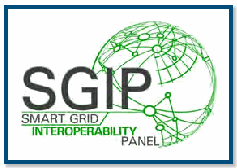
SGIP（スマートグリッド相互運用性パネル）のロゴ。地球状のネットワーク図と「SMART GRID INTEROPERABILITY PANEL」の文字がある。
The Standards subgroup assesses cybersecurity requirements associated with SGIP-identified smart grid standards and other documents for the SGIP Catalog of Standards (CoS). The subgroup has reviewed over 75 documents to date.
— 標準分科会は、SGIPが特定したスマートグリッド標準およびその他の文書に関連するサイバーセキュリティ要件を評価し、SGIP標準カタログ（CoS）に掲載する。これまでに75件を超える文書を審査した。
未レビュー訳An example of a SGCC deliverable in 2013 is the analysis of cybersecurity regulations relevant to electricity subsector
2013年のSGCC成果物の一例は、電力サブセクターの関係者に関連するサイバーセキュリティ規制
未レビュー訳During the past year, members of the CSWG/SGCC worked to
過去1年間、CSWG／SGCCのメンバーは
未レビュー訳stakeholders and of NIST security guidance. The analysis
およびNISTセキュリティ指針を分析したことである。この分析は
未レビュー訳revise NISTIR 7628, Guidelines for Smart Grid Cybersecurity, to
スマートグリッドサイバーセキュリティガイドラインであるNISTIR 7628を改訂し、
未レビュー訳identifies the relationship, similarities, and differences among
NISTIR 7628、SP 800-53および北米電力信頼度協議会（NERC）重要インフラ保護
未レビュー訳address changes in technologies and implementations since the
技術および実装の変化に対応するため、
未レビュー訳NISTIR 7628, SP 800-53, and the draft North American Electric
標準（CIP）第5版との関係、類似点および相違点を明らかにする。
未レビュー訳publication’s original release. The revision updates and expands the
刊行当初からの変化を反映するため、改訂版では
未レビュー訳Reliability Corporation (NERC) Critical Infrastructure Protection
各文書の対象範囲と読者が異なることを踏まえ、
未レビュー訳development strategy, cryptography and key management, privacy,
策定戦略、暗号技術と鍵管理、プライバシー、脆弱性の分類、研究開発テーマ、標準審査、電力システムの主要ユースケースを更新・拡充する。最終版は2014会計年度に公開される予定である。
未レビュー訳Standards (CIP) v5, recognizing that each document has a
SGCCはSGIP標準カタログ（CoS）も支援する。
未レビュー訳vulnerability classes, research and development topics, standards
標準、実務、ガイドラインおよびその他の技術文書を集めたもので、
未レビュー訳different scope and audience.
さらに、NISTIR 7628の改訂に加えてCSWG／
未レビュー訳review, and key power system use cases to reflect changes in the smart grid environment since 2010. The final version is expected to The SGCC also supports the SGIP Catalog of Standards (CoS), be posted in FY 2014.
堅牢で安全かつ相互運用可能なスマートグリッドの開発に関連するとみなされる。
未レビュー訳a compendium of standards, practices, guidelines and other technical documents considered relevant for the development
SGCCは、サイバーセキュリティ
未レビュー訳In addition to the revision of NISTIR 7628, the CSWG/
SGCCの継続的な取り組みを通じて、これらの文書を審査し、
未レビュー訳of a robust, secure, and interoperable smart grid. Through the
リスク管理、セキュリティアーキテクチャ、セキュリティ試験および
未レビュー訳SGCC has focused on specific topics such as cybersecurity
サイバーセキュリティを含めるための推奨事項を作成する。
未レビュー訳ongoing efforts of the SGCC, these documents are reviewed for
認証、高度計量インフラ（AMI）のセキュリティ、
未レビュー訳risk management, security architecture, security testing and
標準の改訂および実装での
未レビュー訳cybersecurity,and recommendations are made for how to include
NISTIR 7628ユーザーガイドの策定、スマートグリッドのクラウド
未レビュー訳certification, Advanced Metering Infrastructure (AMI) security,
サイバーセキュリティに関する。CSDはSGCCによる
未レビュー訳cybersecurity in future revisions and in the implementation
コンピューティングとプライバシーなど、特定のテーマに取り組む。
未レビュー訳the development of a User’s Guide for NISTIR 7628, and cloud
これらの領域の作業は、必要性に応じて設置・解散される
未レビュー訳of the standards. CSD supports the SGCC in assessing the
これらの標準で使用される暗号方式のセキュリティ、
未レビュー訳computing and privacy for the smart grid. Work in these areas
SGCC分科会を通じて完了する。現在、SGCCは次の
未レビュー訳security of cryptographic methods used in these standards,
実務、ガイドラインおよびその他の技術文書。多くの
未レビュー訳is completed through SGCC subgroups, which are created and
分科会で構成される。
未レビュー訳practices, guidelines, and other technical documents. In many
場合、標準化団体は審査結果を受けて
未レビュー訳disbanded in order to meet present needs. The SGCC currently
次の分科会を設置している。
未レビュー訳cases, the standards bodies have taken the results of the
分科会は、スマートグリッドのプライバシーリスクを緩和する実務を特定する。
未レビュー訳consist of the following subgroups:
現在のニーズに対応するため、分科会を設置・解散する。
未レビュー訳reviews and modified the standards or documents to address
審査結果を反映して標準または文書を改訂し、
未レビュー訳 The Architecture subgroup continues to refine the
— アーキテクチャ分科会は、
未レビュー訳our recommendations. The SGCC has worked closely with some
推奨事項に対処した。SGCCは一部の
未レビュー訳smart grid cybersecurity architecture in coordination
SGIPスマートグリッドアーキテクチャ委員会と連携して、
未レビュー訳of the standards bodies to ensure that the recommendations
標準化団体と緊密に協力し、推奨事項が
未レビュー訳with the SGIP Smart Grid Architecture Committee on the
欧州連合のアーキテクチャ調和の取り組みを考慮しながら、
未レビュー訳are interpreted correctly and that the mitigation strategies
正しく解釈され、選択された緩和策が
未レビュー訳European Union architecture harmonization effort.
スマートグリッドのサイバーセキュリティアーキテクチャの改善を続ける。
未レビュー訳selected meet the intent of the NISTIR 7628 high-level security requirements. The result is cybersecurity “baked-in”
NISTIR 7628の高水準セキュリティ要件の趣旨を満たすようにした。その結果、サイバーセキュリティは標準に後付けされるのではなく、標準に「組み込まれる」。
未レビュー訳 The Cloud Computing subgroup is addressing
— クラウドコンピューティング分科会は、
未レビュー訳to the standards rather than “bolted-on” after the standard is
標準実装後に「付け足す」のではない。
未レビュー訳the unique cybersecurity issues of using and managing
クラウドを利用・管理する際の固有のサイバーセキュリティ問題に取り組んでいる。
未レビュー訳implemented.
スマートグリッドアプリケーションの
未レビュー訳smart grid applications that utilize the cloud.
クラウド利用に関する課題。
未レビュー訳In FY 2014, CSD will continue to support the SGCC in the
2014会計年度、CSDはSGCCによる
未レビュー訳 The High-Level Requirements subgroup
— ハイレベル要件分科会は、
未レビュー訳evaluation of the cryptographic methods used standards,
標準、実務、ガイドラインおよびその他の技術文書で使用される暗号方式の評価を継続する。
未レビュー訳maintains the high-level security requirements in NISTIR
NISTIR 7628に定められた高水準セキュリティ要件を維持し、
未レビュー訳practices, guidelines, and other technical documents for
SGIP CoSへの掲載に向けた。
未レビュー訳7628 and develops analyses between NISTIR 7628 and
NISTIR 7628と
未レビュー訳inclusion in the SGIP CoS.
他の文書、標準およびガイドラインとの対応分析を作成する。
未レビュー訳other documents, standards, and guidelines.
今後はSGIP委員会、
未レビュー訳Future activities include working with the SGIP Committees,
— NISTIR 7628ユーザーガイド分科会は、
未レビュー訳 The NISTIR 7628 User’s Guide subgroup is
ドメイン専門家作業部会および優先行動計画と連携して、
未レビュー訳Domain Expert Working Groups, and Priority Action Plans to
スマートグリッドシステムの実装に関わる電力会社その他の組織が利用できるユーザーガイドを
未レビュー訳developing a User’s Guide for utilities and other entities integrate cybersecurity into their work efforts. The SGCC will involved in implementing smart grid systems can use
サイバーセキュリティを各組織の取り組みに統合する。SGCCは
未レビュー訳establish a new subgroup to produce a cybersecurity risk
策定中である。
未レビュー訳management process case study to accompany the Department Raising national awareness about risks in cyberspace of Energy Risk Management Process guideline. Members of
原文更新後、再確認待ち
Broadening the pool of individuals prepared to enter the
— サイバーセキュリティ分野に参入する準備ができた人材の裾野を広げる。
未レビュー訳the committee will produce white papers on security defense
委員会は、セキュリティの多層防御に関する白書を作成する。
未レビュー訳cybersecurity workforce
人材を育成する。
未レビュー訳in depth and breadth, unique cloud computing considerations for the smart grid, as well as a User’s Guide for NISTIR 7628.
スマートグリッド固有のクラウドコンピューティング上の考慮事項、およびNISTIR 7628のユーザーガイドを作成する。
未レビュー訳 Cultivating a globally competitive cybersecurity
— 世界的に競争力のあるサイバーセキュリティ
未レビュー訳Additionally, the SGIP SCCC will continue to collaborate with
さらに、SGIP SCCCは産業界、学術界、他の作業部会および
未レビュー訳workforce
人材を育成する。
未レビュー訳industry, academia, other working groups, and government agencies to address the cybersecurity needs for the smart grid.
政府機関と協力し、スマートグリッドのサイバーセキュリティニーズに対処する。
未レビュー訳This initiative comprises four component areas:
このイニシアチブは次の4つの構成領域からなる。
未レビュー訳In addition to the SGIP SGCC activities, CSD will also
SGIP SGCCの活動に加え、CSDは
未レビュー訳 National Cybersecurity Awareness
— 国家サイバーセキュリティ啓発
未レビュー訳coordinate with NIST’s Engineering Laboratory (EL) and Smart Grid Program Office on the development of a Cybersecurity Formal Cybersecurity Education Smart Grid Test Lab, part of the NIST Smart Grid Testbed Facility now under construction. CSD will also collaborate with ITL’s Cybersecurity Workforce Structure Software and Systems Division on cybersecurity research in
NISTのエンジニアリング研究所（EL）およびスマートグリッドプログラム室と連携し、建設中のNISTスマートグリッドテストベッド施設の一部となるサイバーセキュリティ・スマートグリッド試験所の開発も調整する。CSDはITLソフトウェア・システム部門ともサイバーセキュリティ研究で協力する。
未レビュー訳 Cybersecurity Workforce Training and Professional
— サイバーセキュリティ人材の訓練および専門能力開発
未レビュー訳relation to the IEEE 1588, Precision Time Protocol, a standard
IEEE 1588（Precision Time Protocol）という標準との関連
未レビュー訳Development
開発
未レビュー訳on time synchronization that is used for the electric grid and other special-purpose industrial automation and measurement
電力網やその他の特定用途向け産業オートメーション・計測ネットワークで使用される時刻同期に関する
未レビュー訳CSD is home to the NIST NICE Leadership Team (NNLT) that
CSDにはNIST NICEリーダーシップチーム（NNLT）が置かれ、次の活動に取り組んでいる。
未レビュー訳networks.
ネットワーク。
未レビュー訳focuses on the following activities:
次の活動に重点を置いている。
未レビュー訳http://www.sgip.org
http://www.sgip.org
未レビュー訳 Developing planning documents and building consensus on the strategy and implementation activities of NICE
— NICEの戦略および実施活動に関する計画文書を作成し、合意形成を図る
未レビュー訳Contacts:
連絡先：
未レビュー訳 Facilitating cross-functional cooperation among NICE
— NICEの構成機関間の部門横断的な協力を促進する
未レビュー訳Ms. Vicky Yan Pillitteri
Vicky Yan Pillitteri 氏
未レビュー訳Ms. Tanya Brewer
Tanya Brewer 氏
未レビュー訳component lead agencies
構成機関
未レビュー訳(301) 975-8542
(301) 975-8542
未レビュー訳(301) 975-4534
(301) 975-4534
未レビュー訳victoria.yan@nist.gov
victoria.yan@nist.gov
未レビュー訳tbrewer@nist.gov
tbrewer@nist.gov
未レビュー訳 Fostering communication between the component lead agencies by coordinating meetings, facilitating
— 会議を調整し、議論を円滑に進め、情報を周知することで、構成機関間の連絡を促進する
未レビュー訳Mr. Quynh Dang
Quynh Dang 氏
未レビュー訳discussions, and disseminating information
議論を促進し、情報を周知する
未レビュー訳(301) 975-3610 qdang@nist.gov
(301) 975-3610 qdang@nist.gov
未レビュー訳 Promoting the initiative and its efforts by representing NICE and speaking at cybersecurity events nationwide
— 全国のサイバーセキュリティ関連イベントでNICEを代表して講演し、このイニシアチブとその取り組みを推進する
未レビュー訳Cybersecurity Awareness, Training, Education,
サイバーセキュリティの意識向上、訓練、教育、
未レビュー訳 Planning and hosting an annual workshop to promote
— サイバーセキュリティ教育の進化する課題を促進し、
未レビュー訳and Outreach
および普及活動
未レビュー訳and support the evolving issues in cybersecurity education
支援する年次ワークショップを企画・開催する
未レビュー訳ª National Initiative for Cybersecurity
ª サイバーセキュリティ教育国家イニシアチブ
未レビュー訳 Coordinating with other federal initiatives and efforts
— NICEに関連する他の連邦政府イニシアチブや活動と連携する
未レビュー訳Education (NICE)
（NICE）
未レビュー訳related to NICE
NICEに関連する
未レビュー訳 Maintaining and updating the NICE website
— NICEのウェブサイトを維持・更新する
未レビュー訳NIST has served as the lead for the National Initiative for Cybersecurity Education (NICE) since 2010. NICE is responsive to President Obama’s declaration that the “cyber threat is one In FY 2013, NIST stewarded the National Cybersecurity of the most serious economic and national security challenges Workforce Framework (NCWF), developed within NICE’s we face as a nation” and “America’s economic prosperity in the Cybersecurity Workforce Training and Professional
NISTは2010年以来、サイバーセキュリティ教育国家イニシアチブ（NICE）の主導機関を務めている。NICEは、オバマ大統領が「サイバー脅威は、国家として直面する最も深刻な経済・国家安全保障上の課題の一つである」とし、「21世紀の米国の経済的繁栄はサイバーセキュリティにかかっている」と述べたことを受けた取り組みである。 2013会計年度にNISTは、NICEのサイバーセキュリティ人材訓練・専門能力開発部会で策定された全米サイバーセキュリティ人材フレームワーク（NCWF）を管理し、政府全体のレビューに付した。
未レビュー訳Development Component, through government-wide review.
開発部会で策定されたものを、政府全体のレビューに付した。
未レビュー訳21st century will depend on cybersecurity.”
「21世紀の米国の経済的繁栄はサイバーセキュリティにかかっている。」
未レビュー訳NIST also planned, organized and hosted the fourth annual NICE
NISTはまた、第4回NICE年次ワークショップ「全国サイバーセキュリティ教育の州間高速道路を進む」を企画・運営し、2013年9月17日から19日に開催した。
未レビュー訳The goal of NICE is to enhance the overall cybersecurity Workshop, “Navigating the National Cybersecurity Education posture of the United States by accelerating the availability of Interstate Highway,” from September 17-19, 2013. The educational and training resources designed to improve the workshop highlighted cybersecurity awareness, education, cyber behavior, skills, and knowledge of every segment of the and training programs that can be adopted, copied, used, or population, enabling a safer cyberspace for all. NICE addresses built-on by small businesses, educational institutions, industry, this challenging goal by:
NICEの目標は、教育・訓練資源の利用可能性を高め、あらゆる人々のサイバー行動、技能、知識を向上させることで、米国全体のサイバーセキュリティ態勢を強化し、すべての人にとってより安全なサイバー空間を実現することである。NICEは、全国サイバーセキュリティ人材フレームワーク（NCWF）を通じた取り組みを含め、次の方法でこの目標に取り組む。
未レビュー訳and government at the state, local, tribal and federal levels to advance the strategic goals of NICE.
このワークショップでは、NICEの戦略目標を前進させるため、中小企業、教育機関、産業界、および州・地方・部族・連邦政府が採用、複製、活用、または発展させられるサイバーセキュリティの意識向上・教育・訓練プログラムを取り上げた。
未レビュー訳原文更新後、再確認待ち
The NNLT attended more than 100 events, symposia, forums,
NNLTは、NICEの活動を広めるため、100を超えるイベント、シンポジウム、フォーラム、競技会、教育普及会合、ワークショップに参加した。
未レビュー訳Computer Security Division Publications
コンピュータセキュリティ部門の刊行物
未レビュー訳competitions, educational outreach meetings, and workshops
競技会、教育普及会合、ワークショップ
未レビュー訳FIPS、SP、NISTのチェック項目が付いた書類とペンのイラスト。
to promote the activities within NICE. The NNLT worked with the Office of Personnel Management (OPM) on the OPM Cross-Agency Priority Goal: “Closing Skills Gap” for IT/Cybersecurity and on the OPM Special CybersecurityWorkforce Project focused on reducing cybersecurity workforce skills gaps. The project will allow agencies to identify and address their needs for cybersecurity skill sets to meet their missions. In accomplishing this project, agencies will also be updating their cybersecurity positions with codes that revise the definitions of and taxonomy used for cybersecurity work. In FY 2013, the NNLT supported DHS in the launch of the National Initiative for Cybersecurity Careers and Studies (NICCS), (http://niccs.us-cert.gov), an online resource for cybersecurity career, education, and training information. NICCS leverages efforts of government, industry, and academia to provide a comprehensive, single resource to During FY 2013, CSD continued its efforts to improve
NICEの活動を広めるため、NNLTは人事管理局（OPM）と連携し、IT・サイバーセキュリティ分野のOPM省庁横断優先目標「スキルギャップの解消」および、サイバーセキュリティ人材のスキルギャップ縮小を目指すOPM特別プロジェクトに取り組んだ。このプロジェクトにより、各機関は任務遂行に必要なサイバーセキュリティ技能を特定し、その不足に対処できる。各機関は併せて、サイバーセキュリティ職務の定義と分類体系を改訂するコードを用いて職位情報を更新する。2013会計年度には、NNLTは国土安全保障省（DHS）によるサイバーセキュリティ職業・学習国家イニシアチブ（NICCS、http://niccs.us-cert.gov）の開始を支援した。これは、サイバーセキュリティ分野の職業、教育、訓練情報を提供するオンライン資源である。NICCSは政府、産業界、学界の取り組みを活用し、全米のサイバーセキュリティ知識ニーズに応える包括的な単一窓口を提供する。 2013会計年度、CSDは各種NISTウェブサイト上の刊行物情報の質を改善する取り組みも継続した。
未レビュー訳the quality of information about its publications on various
刊行物に関する情報の質を、各種
未レビュー訳address the nation’s cybersecurity knowledge needs.
全米のサイバーセキュリティ知識ニーズに応える。
未レビュー訳NIST websites. CSD also explored new ways to make those
NISTウェブサイト。CSDはまた、
未レビュー訳In FY 2014, NIST will continue to promote the coordination publications available to CSD’s customers, who access CSD’s of existing and future cybersecurity education, training, and technical security publications in various ways: (1) directly from awareness activities while planning the transition of NICE the CSRC website, (2) through the NIST Publications Portal, via leadership. NIST will also identify opportunities to extend and Internet search or (3) direct links from digital content, or (4) integrate NICE activities to raise cybersecurity awareness in the from external information providers. By the end of FY 2013, CSD context of other sectors, and promote the NCWF as a resource had more than 270 current publications in the NIST technical to be used to identify workforce gaps, lead bi-weekly NICE series (FIPS, Special Publications (SPs) and NISTIRs). component meetings, and continue to conduct broad outreach
2014会計年度、NISTは既存および今後のサイバーセキュリティ教育、訓練、意識向上活動の調整を引き続き促進するとともに、NICEの運営体制の移行を計画する。NISTはまた、他分野でのサイバーセキュリティ意識向上にNICEの活動を拡張・統合する機会を探り、NCWFを人材不足の特定に活用できる資源として普及させ、NICEの構成機関会合を隔週で主導し、プログラムについて幅広い広報活動を続ける。 CSDの顧客は、CSDの技術系セキュリティ刊行物を、(1) CSRCウェブサイトから直接、(2) NIST刊行物ポータル経由、(3) インターネット検索やデジタルコンテンツ内の直接リンク、(4) 外部情報提供者経由など、さまざまな方法で入手する。2013会計年度末までに、CSDのNIST技術刊行物シリーズ（FIPS、特別刊行物（SP）、NISTIR）には現行刊行物が270件以上あった。
未レビュー訳Providing accurate metadata about publications improves
刊行物の正確なメタデータは、
未レビュー訳on the NICE program.
NICEプログラムに関する広範な広報活動を続ける。
未レビュー訳users’ abilities to locate the information they are seeking. In FY
利用者が求める情報を見つけやすくする。2013会計年度には、CSDは
未レビュー訳http://www.nist.gov/nice/
http://www.nist.gov/nice/
未レビュー訳2013, CSD cleaned up the NIST Publications Portal records and PDF metadata for all of its NIST technical series publications and for more than 100 journal articles and conference papers
2013年、CSDはNIST刊行物ポータルの記録を整理し、NIST技術刊行物シリーズの全刊行物に加え、近年CSD職員が共著した100件を超える学術誌論文および会議論文について、PDFメタデータを整備した。
未レビュー訳Contacts:
連絡先：
未レビュー訳co-authored by CSD staff in recent years. By improving the metadata—such as title, authors, report numbers and
CSD職員が近年共著した。タイトル、著者、報告書番号、
未レビュー訳Dr. Ernest McDuffie
Ernest McDuffie 博士
未レビュー訳Mr. Bill Newhouse
Bill Newhouse 氏
未レビュー訳NICE Project Lead
NICEプロジェクト責任者
未レビュー訳NICE Program Lead
NICEプログラム責任者
未レビュー訳keywords—within the PDFs themselves, Internet searches
キーワードなどのメタデータを
未レビュー訳(301) 975-8897
(301) 975-8897
未レビュー訳(301) 975-2869
(301) 975-2869
未レビュー訳provide more informative results and make NIST’s security
検索結果をより有益にし、NISTのセキュリティ
未レビュー訳ernest.mcduffie@nist.gov william.newhouse@nist.gov
ernest.mcduffie@nist.gov william.newhouse@nist.gov
未レビュー訳publications easier to find. CSD continues to apply those consistent metadata practices to all new publications. Additionally, CSD expanded the dissemination of its publications to the Association for Computing Machinery (ACM) Digital Library (DL). ACM DL now has a “collection” of NIST Computer Security Publications, which includes SP 800-series publications. CSD initiated an internal project to test the feasibility of creating electronic book (e-book) editions of its FIPS, SPs and NISTIRs, to supplement the PDF editions currently available on CSRC. The aim is to provide a wider range of options for CSD customers to view and use CSD’s technical publications.The pilot project uses the EPUB file format, an open standard for e-books from the International Digital Publication Forum (IDPF). CSD intends to begin posting EPUB versions of selected publications in FY 2014, which will especially benefit users of mobile devices.
刊行物を見つけやすくする。CSDは、こうした一貫したメタデータの慣行を新しい刊行物にも適用し続けている。さらに、CSDは刊行物の配布先をAssociation for Computing Machinery（ACM）のDigital Library（DL）にも拡大した。ACM DLには現在、SP 800シリーズを含む「NISTコンピュータセキュリティ刊行物」コレクションがある。CSDは、CSRCで提供しているPDF版を補完するため、FIPS、SP、NISTIRの電子書籍版を作成できるか検証する内部プロジェクトも開始した。CSDの技術刊行物を閲覧・利用する顧客に、より幅広い選択肢を提供することが目的である。試行プロジェクトでは、International Digital Publication Forum（IDPF）の電子書籍向けオープン標準であるEPUB形式を使用する。CSDは2014会計年度に一部刊行物のEPUB版を公開する予定であり、特にモバイル端末の利用者に役立つ。
未レビュー訳Computer Security Division Annual Report - 2013
コンピュータセキュリティ部門年次報告書 — 2013年
未レビュー訳In FY 2014, CSD intends to explore more ways to improve are arranged by topic, relevant security control family, and legal the consistency of its publications and associated metadata, requirements. enhance users’ ability to browse and search publications on
2014会計年度、CSDは刊行物と関連メタデータの一貫性を高め、CSRCでの閲覧・検索を改善し、電子書籍版を増やし、外部サイトでの刊行物提供を拡大する方法をさらに検討する。刊行物は、トピック、該当するセキュリティ管理策ファミリー、法的要件別に整理されている。
未レビュー訳During FY 2013, the top ten most downloaded publications
2013会計年度に最もダウンロードされた刊行物の上位10件は次のとおり。
未レビュー訳CSRC, make more e-book editions available, and expand
CSRCで電子書籍版を増やし、
未レビュー訳were:
次のとおり。
未レビュー訳publication availability on external sites.
外部サイトでの刊行物提供を拡大する。
未レビュー訳1.SP 800-53 Revision 4, Security and Privacy Controls for Federal Information Systems and Organizations
1.SP 800-53 改訂4「連邦情報システムおよび組織のセキュリティ・プライバシー管理策」
未レビュー訳http://csrc.nist.gov/publications/
http://csrc.nist.gov/publications/
未レビュー訳2.SP 800-12, An Introduction to Computer Security: The
2.SP 800-12「コンピュータセキュリティ入門：
未レビュー訳Contact:
連絡先：
未レビュー訳NIST Handbook
NISTハンドブック」
未レビュー訳Mr. Jim Foti
Jim Foti 氏
未レビュー訳3.FIPS 140-2, Security Requirements for Cryptographic
3.FIPS 140-2「暗号モジュールのセキュリティ要件」
未レビュー訳(301) 975-8018 jfoti@nist.gov
(301) 975-8018 jfoti@nist.gov
未レビュー訳Modules
暗号モジュール」
未レビュー訳4.FIPS 201-2, Personal Identity Verification (PIV) of Federal Employees and Contractors
4.FIPS 201-2「連邦職員および請負業者の個人識別情報検証（PIV）」
未レビュー訳ª Computer Security Resource Center (CSRC)
ª コンピュータセキュリティリソースセンター（CSRC）
未レビュー訳5.SP 800-100, Information Security Handbook: A Guide for Managers
5.SP 800-100「情報セキュリティハンドブック：管理者向けガイド」
未レビュー訳The Computer Security Resource Center (CSRC), CSD’s website, is one of the most visited websites at NIST. CSRC 6. SP 800-30, Revision 1, Guide for Conducting Risk encourages broad sharing of information security tools
CSDのウェブサイトであるコンピュータセキュリティリソースセンター（CSRC）は、NISTで最も多く閲覧されるウェブサイトの一つである。CSRCは、情報セキュリティのツールや実務の幅広い共有を促進し、情報セキュリティ標準・ガイドラインを提供し、産業界や政府機関の利用者を支援する主要なセキュリティ関連ウェブ資源を特定してリンクする。また、リスク評価の実施ガイドであるSP 800-30 改訂1も掲載している。
未レビュー訳Assessments
評価」
未レビュー訳and practices, provides a resource for information security
実務を紹介し、情報セキュリティに関する
未レビュー訳7.SP 800-57, Recommendation for Key Management: Part
7.SP 800-57「鍵管理に関する勧告：第
未レビュー訳standards and guidelines, and identifies and links key security
標準およびガイドラインの資源を提供し、主要なセキュリティ
未レビュー訳1: General
1部：一般」
未レビュー訳web resources to support industry and government users. CSRC is an integral component of all of the work that CSD conducts
ウェブ資源を産業界および政府の利用者に提供する。CSRCはCSDが実施・作成するすべての業務に不可欠な要素であり、
未レビュー訳8.SP 800-53, Revision 3, Recommended Security Controls
8.SP 800-53 改訂3「連邦情報システムおよび組織向け推奨セキュリティ管理策」
未レビュー訳and produces. It is CSD’s repository for anyone wanting to
作成した文書を含む、
未レビュー訳for Federal Information Systems and Organizations
連邦情報システムおよび組織向け」
未レビュー訳access these documents and other valuable security-related information. During FY 2013, CSRC had more than 53 million 9. NISTIR 7916, Proceedings of the Cybersecurity in Cyber-page views and downloads.
これらの文書やその他の有用なセキュリティ情報を求める人々にとって、CSRCはCSDの情報保管場所となっている。2013会計年度には、CSRCのページ閲覧数とダウンロード数は合計5,300万件を超えた。 9. NISTIR 7916「サイバーフィジカルシステム・ワークショップ議事録、2012年4月23～24日」
未レビュー訳Physical Systems Workshop, April 23-24, 2012
サイバーフィジカルシステム・ワークショップ、2012年4月23～24日
未レビュー訳10.SP 800-123, Guide to General Server Security
10. SP 800-123「一般サーバーセキュリティのガイド」
未レビュー訳In the FIPS publication series, the top three most downloaded FIPS were:
FIPS刊行物シリーズで最もダウンロードされた上位3件は次のとおり。
未レビュー訳1.FIPS 140-2, Security Requirements for Cryptographic Modules
1.FIPS 140-2「暗号モジュールのセキュリティ要件」
未レビュー訳2.FIPS 201-2, Personal Identity Verification (PIV) of Federal Employees and Contractors
2.FIPS 201-2「連邦職員および請負業者の個人識別情報検証（PIV）」
未レビュー訳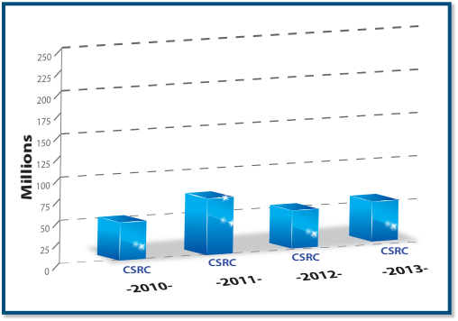
2010年から2013年までのCSRCに関する値を示す青い棒グラフ。各年の棒に「CSRC」と記されている。
3.FIPS 197, Advanced Encryption Standard
3.FIPS 197「高度暗号化標準（AES）」
未レビュー訳CSRC
CSRC
未レビュー訳CSRC
CSRC
未レビュー訳CSRC CSRC
CSRC、CSRC
未レビュー訳In the SP publication series, the top three most downloaded SPs were:
SP刊行物シリーズで最もダウンロードされた上位3件は次のとおり。
未レビュー訳1.SP 800-53 Revision 4, Security and Privacy Controls for Federal Information Systems and Organizations
1.SP 800-53 改訂4「連邦情報システムおよび組織のセキュリティ・プライバシー管理策」
未レビュー訳Figure 7: Total Number of CSRC Website Requests for 2013 (Oct. 1, 2012 to Sept. 30, 2013)
図7：2013年のCSRCウェブサイトへの総リクエスト数（2012年10月1日～2013年9月30日）
未レビュー訳2.SP 800-12, An Introduction to Computer Security: The NIST Handbook
2.SP 800-12「コンピュータセキュリティ入門：NISTハンドブック」
未レビュー訳CSRC is the primary gateway for gaining access to NIST
CSRCは、NISTのコンピュータセキュリティ関連刊行物、
未レビュー訳3.SP 800-100, Information Security Handbook: A Guide for
3.SP 800-100「情報セキュリティハンドブック：管理者向け
未レビュー訳computer security publications, standards, and guidelines,
標準およびガイドラインを入手するための主要な窓口であり、
未レビュー訳Managers
ガイド」
未レビュー訳and serves as a vital link to CSD’s customers. Publications are organized to help users locate relevant information quickly and
利用者が関連情報をすばやく見つけられるよう刊行物を整理し、CSDの顧客との重要な接点となっている。
未レビュー訳Program and Project Achievements for FY 2013
2013会計年度のプログラムおよびプロジェクトの成果
未レビュー訳In the NISTIR publication series, the top three most Government employees who participate in the management of downloaded NISTIRs were:
NISTIR刊行物シリーズで最もダウンロードされた上位3件は次のとおり。 組織の情報システムセキュリティプログラムの管理に携わる政府職員。会費は不要で、フォーラムは隔月の
未レビュー訳their organization’s information system security program. There are no membership dues. The Forum also holds bimonthly
組織の情報システムセキュリティプログラムを管理する政府職員。フォーラムは会費無料で、隔月の
未レビュー訳1.NISTIR 7916, Proceedings of the Cybersecurity in Cyber-meetings and an annual 2-day conference to discuss current Physical Systems Workshop, April 23-24, 2012 issues and developments of interest to those responsible for
1.NISTIR 7916「サイバーフィジカルシステム・ワークショップ議事録、2012年4月23～24日」 会合および年次2日間会議を開催し、機微な（非機密）連邦システムの保護を担当する者に関係する最新の課題や動向を議論する。フォーラムへの参加は、連邦政府職員および指定支援請負業者に開かれており、
未レビュー訳2.NISTIR 7250, Cell Phone Forensic Tools: An Overview and protecting sensitive (unclassified) federal systems. Participation in Forum meetings is open to Federal Government employees, Analysis and their designated support contractors, who participate in
2.NISTIR 7250「携帯電話フォレンジックツール：概要と分析」 機微な（非機密）連邦システムの保護に携わる者が参加できる。会合への参加は連邦政府職員およびその指定支援請負業者に開かれており、
未レビュー訳3.NISTIR 7896, Third-Round Report of the SHA-3 the management of their organization’s information security Cryptographic Hash Algorithm Competition program.
3.NISTIR 7896「SHA-3暗号学的ハッシュアルゴリズム競争の第3ラウンド報告書」 組織の情報セキュリティプログラムの管理に参加する。
未レビュー訳In addition to CSRC, CSD maintains a publication
CSRCに加え、CSDは刊行物
未レビュー訳Topics of discussion at Forum meetings in FY 2013 included
2013会計年度のフォーラム会合で取り上げられた議題には、
未レビュー訳announcement mailing list. This free email list notifies
を告知するメーリングリストを運営している。この無料のメールリストは、
未レビュー訳briefings from various federal agencies on Preparing for
各種連邦機関による説明会：認証局の侵害および
未レビュー訳subscribers about publications that have been posted to the
出版物がCSRCウェブサイトに掲載されたことを
未レビュー訳and Responding to Certification Authority Compromise and
不正な証明書発行への対応。ソフトウェア保証：
未レビュー訳CSRC website. The email list is a valuable tool for more than
購読者に知らせる。電子メールリストは、
未レビュー訳Fraudulent Certificate Issuance; Software Assurance: Enabling
ソフトウェア開発ライフサイクル全体でのセキュリティ確保。
未レビュー訳28,000 subscribers from the Federal Government, industry,
連邦政府、産業界、
未レビュー訳Security throughout the Software Development Lifecycle; Use
サイバーセキュリティ機能コードの利用。国勢調査局のリスク管理
未レビュー訳academia, and individuals with a personal interest in IT security.
学界およびITセキュリティに個人的関心を持つ人々からなる
未レビュー訳of Cybersecurity Function Code; Census Risk Management
プログラムの実施。国家サイバーセキュリティ・センター・オブ・
未レビュー訳Individuals who are interested in subscribing to this list should
28,000人を超える購読者にとって有用な手段である。
未レビュー訳Program Implementation; National Cybersecurity Center of
エクセレンス（NCCoE）。クラウドにおける信頼できる位置情報の
未レビュー訳visit http://csrc.nist.gov/publications/subscribe.html for more
購読を希望する場合は、
未レビュー訳Excellence (NCCoE); demonstration of Trusted Geolocation in
実証。ポリシーマシン：企業全体にわたるデータ中心のコンピューティング環境を実現する。
未レビュー訳information.
詳細情報については、http://csrc.nist.gov/publications/subscribe.html を参照。
未レビュー訳the Cloud; and Policy Machine: Enabling an Enterprise-wide, Data Centric Computing Environment.
ウェブサイトに関する質問はCSRCウェブマスター宛てに送ること。webmaster-csrc@nist.gov
未レビュー訳Questions on the website should be sent to the CSRC Webmaster at: webmaster-csrc@nist.gov.
今年の年次2日間の合宿会議では、政府説明責任局（GAO）の情報セキュリティ活動に関する最新情報が紹介された。
未レビュー訳This year’s annual 2-day offsite meeting featured updates on the computer security activities of the GovernmentAccountability
連絡先：
未レビュー訳Contacts:
一般調達局（GSA）、財務局およびNIST。最近の行政機関向け指針も取り上げられた。
未レビュー訳Office (GAO), General Services Administration (GSA), Bureau of the Fiscal Service, and NIST. Recent administration guidance
Patrick O’Reilly氏
未レビュー訳Mr. Patrick O’Reilly
Judy Barnard氏
未レビュー訳Ms. Judy Barnard
(301) 975-4751
未レビュー訳(301) 975-4751
(301) 975-5502
未レビュー訳(301) 975-5502
連邦機関に出張および会議の予算を大幅に削減するよう指示し、
未レビュー訳directing federal agencies to reduce travel and conference
patrick.oreilly@nist.gov
未レビュー訳patrick.oreilly@nist.gov
jbarnard@nist.gov
未レビュー訳jbarnard@nist.gov
出席者数を大きく減少させた。技術セッションでは、進化するサイバーセキュリティ戦略、組織統合（合併）時のITセキュリティ上の懸念、サプライチェーン
未レビュー訳budgets significantly reduced attendance. Technical sessions included briefings on evolving cybersecurity strategies, IT security concerns during a consolidation (merger), supply chain
ª
未レビュー訳リスク管理活動、国家脆弱性データベース
未レビュー訳risk management activities, the National Vulnerability Database
連邦コンピュータセキュリティ・プログラム
未レビュー訳Federal Computer Security Program
（NVD）、SP 800-53改訂第4版、継続的監視、産業
未レビュー訳(NVD), SP 800-53 Revision 4, continuous monitoring, industrial
管理者フォーラム
未レビュー訳Managers’ Forum
制御システムのセキュリティ、および大統領令13636に関する説明が行われた。
未レビュー訳control systems security, and EO 13636.
連邦コンピュータセキュリティ・プログラム管理者フォーラムは
未レビュー訳The Federal Computer Security Program Managers’ Forum is
2013年8月8日、サイバーセキュリティおよびリスク管理
未レビュー訳On August 8, 2013, a Cybersecurity and Risk Management
NISTが後援し、連邦機関間でセキュリティ関連
未レビュー訳sponsored by NIST to promote the sharing of security-related
研修ワークショップが商務省で開催され、
未レビュー訳Training Workshop was held at the Department of Commerce
情報を共有する。フォーラムは
未レビュー訳information among federal agencies. The Forum, which serves
500人を超える登録者が参加した。参加者はリスク管理
未レビュー訳with over 500 registrants. Attendees gained a greater
1,100人以上の会員に対し、連邦情報セキュリティ
未レビュー訳more than 1,100 members, strives to provide an ongoing
フレームワーク（RMF）とその実践的適用への理解を深めた。 1,100人以上の会員に対し、連邦情報セキュリティプログラム管理者が資料を適時に交換し、他のプログラムの経験を活用し、取り組みの重複を減らせる継続的な機会を提供する。
未レビュー訳understanding of the Risk Management Framework (RMF) and
RMFの理解
未レビュー訳opportunity for managers of federal information security
重複した取り組みを減らす継続的な機会を提供する。
未レビュー訳its practical application. Dr. Ron Ross discussed SP 800-53
およびその実際の適用。Ron Ross博士はSP 800-53
未レビュー訳programs to exchange information security materials in a timely
セキュリティ関連資料を迅速に交換し、
未レビュー訳Revision 4 and the fundamentals of continuous monitoring. Two
改訂第4版と継続的監視の基本について説明した。2つの
未レビュー訳manner, build upon the experiences of other programs, and
各プログラムの経験を活用し、
未レビュー訳afternoon panels discussed case studies regarding RMF and
午後のパネルではRMFおよび
未レビュー訳reduce possible duplication of effort. It provides a mechanism
取り組みの重複を減らす仕組みを提供する。
未レビュー訳“ongoing authorization.”
「継続的認可」に関する事例研究が議論された。
未レビュー訳for NIST to share information directly with federal agency information security program managers in fulfillment of NIST’s
NISTが連邦機関の情報セキュリティプログラム管理者に直接情報を共有するための仕組みであり、
未レビュー訳The Forum plays a valuable role in helping NIST and other
この仕組みは、FISMAに基づくNISTの
未レビュー訳leadership mandate under FISMA. It assists NIST in establishing
フォーラムはNISTその他の
未レビュー訳federal agencies to develop and maintain a strong, proactive
指導的役割を果たす。NISTが情報セキュリティに積極的に取り組む他の個人や
未レビュー訳and maintaining relationships with other individuals or
連邦機関が強力で先を見越した
未レビュー訳stance in the identification and resolution of new strategic
組織との関係を構築・維持するのにも役立つ。
未レビュー訳organizations that are actively addressing information security
情報セキュリティプログラムを策定・維持し、
未レビュー訳and tactical IT security issues as they emerge. The number
連邦政府内の情報セキュリティ課題
未レビュー訳issues within the Federal Government. NIST serves as the
新たに生じる戦略的・戦術的ITセキュリティ問題の特定と解決を支援する上で、貴重な役割を果たす。会員数は
未レビュー訳of members on the email list has grown steadily and provides
に取り組む組織。NISTはフォーラムの
未レビュー訳Secretariat of the Forum, providing necessary administrative
電子メールリスト上で着実に増加し、連邦セキュリティプログラム管理者にとって貴重な情報源となっている。
未レビュー訳a valuable resource for federal security program managers.
事務局を務め、必要な管理面・運営面の
未レビュー訳and logistical support. Kevin Stine serves as the Chairperson.
参加するには、氏名、所属、住所、電話番号、役職、および連邦職員であることの確認を記載した電子メールを
未レビュー訳To join, email your name, affiliation, address, phone number, title, and confirmation that you are a federal employee to
支援を提供する。Kevin Stine氏が議長を務める。
未レビュー訳The Forum maintains an extensive email subscription
フォーラムは充実した電子メール配信サービスを維持している。
未レビュー訳sec-forum@nist.gov.
sec-forum@nist.gov に送信する。
未レビュー訳service. Participation in the service is only open to Federal
このサービスへの参加は連邦職員に限られる。
未レビュー訳http://csrc.nist.gov/groups/SMA/forum/
原文更新後、再確認待ち
Recent government sequestration efforts prevented some from receiving permission to attend, which had a noticeable effect on attendance. NIST’s Pat Toth and Peggy Himes, as well as
近年の政府予算削減措置により、参加許可を得られない人もおり、参加者数に顕著な影響があった。NISTのPat Toth氏、Peggy Himes氏、ならびに
未レビュー訳Contacts:
連絡先：
未レビュー訳Gretchen Morris, Susan Hansche, and other members of the
Gretchen Morris氏、Susan Hansche氏および
未レビュー訳Mr. Kevin Stine
Kevin Stine氏
未レビュー訳Ms. Peggy Himes
Peggy Himes氏
未レビュー訳FISSEA Technical Working Group, were integral to the effort to
FISSEA技術作業部会の他のメンバーは、会議の支援に不可欠な役割を果たした。
未レビュー訳Chair
議長
未レビュー訳Administration
事務局
未レビュー訳support the conference.
(301) 975-4483
未レビュー訳(301) 975-4483
(301) 975-2489
未レビュー訳(301) 975-2489
kevin.stine@nist.gov
未レビュー訳kevin.stine@nist.gov
peggy.himes@nist.gov
未レビュー訳peggy.himes@nist.gov
peggy.himes@nist.gov
未レビュー訳This year’s theme was, “Making Connections in Cybersecurity and Information Security Education,” to solicit presentations that reflect current projects, trends, and initiatives that provide
今年のテーマは「サイバーセキュリティおよび情報セキュリティ教育のつながりを作る」であり、連邦政府のセキュリティプログラムにおける将来の解決策に役立つ現行プロジェクト、動向、取り組みに関する発表を募集した。参加者は、研修の開発・実施に関する新しい手法、費用対効果の高い実践、人材育成、無料資料
未レビュー訳ª Federal Information Systems Security
ª 連邦情報システム・セキュリティ
未レビュー訳for future solutions in federal security programs. Attendees
および連絡先に加え、NICEの活動状況についても知見を得た。
未レビュー訳Educators’ Association (FISSEA)
教育者協会（FISSEA）
未レビュー訳gained new techniques for developing/conducting training, cost-effective practices, workforce development, free resources
を得た。
未レビュー訳The Federal Information Systems Security Educators’ and contacts, as well as an update on NICE activities. Association (FISSEA), founded in 1987, is an organization run by and for information systems security professionals to assist NIST ITL Computer Security Division Deputy Chief, Matthew federal agencies in meeting their information systems security Scholl, welcomed attendees. Keynote presentations were awareness, training, and education responsibilities. FISSEA given by John J. Suess, VP of IT & CIO, University of Maryland, strives to elevate the general level of information systems Baltimore County; Bryant Tow,Vice President, InfraGard National security knowledge for the Federal Government and the federal Members Alliance; and Lamont Hames, Chief Development workforce. It also seeks to assist the professional development Officer, UNCF Special Programs Corporation. Mr. Hames
連邦情報システム・セキュリティ教育者協会（FISSEA）は1987年に設立された。情報システムセキュリティの専門家が運営し、連邦機関が情報システムのセキュリティ意識向上、研修および教育の責任を果たせるよう支援する組織である。FISSEAは、連邦政府および連邦人材の情報システムセキュリティに関する知識の全般的な向上を目指す。また、会員の専門能力開発も支援する。
未レビュー訳presented on Expanding the Role of Minorities in Cyber Security.
サイバーセキュリティにおける少数派の役割拡大に関する発表を行った。
未レビュー訳of its members.
会員の専門能力開発。
未レビュー訳FISSEA membership is open to information systems security Presenters represented NIST, DHS, DOS, DOE, NSA and the professionals, professional trainers and educators, and Library of Congress as well as private industry and academia. managers responsible for information systems security training Conference attendees had the opportunity to visit vendors, programs in federal agencies, as well as contractors of these receive a government best practice poster, and attend a agencies and faculty members of accredited educational demonstration session, which provided an opportunity for institutions who are involved in information security training agencies to share about their specific awareness and training and education. There are no membership fees to join FISSEA; all programs. that is required is a willingness to share products, information,
会員資格は、情報システムセキュリティの専門家、専門トレーナー・教育者、連邦機関でセキュリティ研修プログラムを担当する管理者、これらの機関の請負業者、および情報セキュリティ研修・教育に携わる認定教育機関の教員に開かれている。入会費は不要で、製品、情報、経験を共有する意思があればよい。
未レビュー訳Traditional FISSEA conference events included announcing
発表者はNIST、DHS、国務省（DOS）、DOE、NSA、議会図書館、民間企業および学術界を代表していた。会議参加者はベンダーを訪問し、政府のベストプラクティスポスターを受け取り、各機関がセキュリティ意識向上・研修プログラムを共有するデモに参加できた。
未レビュー訳and experiences. A working group meets monthly to administer
従来のFISSEA会議では、
未レビュー訳the winners of FISSEA contests and awarding prize drawings.
月例作業部会が運営を担当する。
未レビュー訳business activities
FISSEAコンテストの受賞者発表と賞品抽選が行われた。
未レビュー訳Susan Hansche, Avaya Gov/U.S. Department of State, presented
業務活動
未レビュー訳FISSEA maintains a website, a mailing list, and participates the FISSEA Educator of the Year plaque to Mr. J. Paul Wahnish, in a social networking site as a means of communication for its Career Technical Education Foundation, Inc., for his work in members. NIST assists FISSEA with its operations by providing preparing the future workforce.The FISSEA Security Awareness, staff support for several of its activities and by being FISSEA’s Training & Education Contest includes five categories from
Avaya Government／米国国務省のSusan Hansche氏は、
未レビュー訳one of FISSEA’s three key areas of Awareness, Training, and
会員向けの情報交換手段として、ウェブサイト、メーリングリストおよびソーシャルネットワーキングサイトを運営している。NISTは複数の活動への職員支援と主催機関としての役割を通じてFISSEAの運営を支援する。FISSEAセキュリティ意識向上・研修・教育コンテストは5部門からなる。
未レビュー訳host agency.
FISSEAが重視する3つの主要領域の1つ。
未レビュー訳Education. The winner is selected from each category and
主催機関。
未レビュー訳FISSEA membership in 2013 spanned federal agencies, awarded a certificate. The categories include: (1) awareness industry, military, contractors, state governments, academia, the poster, (2) motivational item (e.g., pens, stress relief items, press, and foreign organizations to reach over 1,395 members t-shirts), (3) awareness website, (4) awareness newsletter, and in a total of ten countries. The 700 federal agency members (5) role-based training & education. represent 89 agencies from the executive and legislative
各部門から受賞者を選出し、証明書を授与する。部門は、(1)啓発ポスター、(2)動機付けアイテム（例：ペン、ストレス解消用品、Tシャツ）、(3)啓発ウェブサイト、(4)啓発ニュースレター、(5)役割別研修・教育である。
未レビュー訳The winners of the 2013 FISSEA Awareness, Training, and
2013年のFISSEA会員は連邦機関、産業界、軍、請負業者、州政府、学術界、報道機関および外国組織に広がり、10か国で1,395人を超えた。連邦機関の会員700人は、行政府および立法府の89機関を代表する。
未レビュー訳branches of government.
2013年FISSEA啓発・研修・教育コンテストの
未レビュー訳Education Contest are:
政府の各部門を代表する。
未レビュー訳The 26th Annual FISSEA Conference occurred March 19-21,
受賞者は次のとおり。
未レビュー訳 Poster Winner: Alexis Benjamin – Department of State,
第26回FISSEA年次会議は2013年3月19～21日に
未レビュー訳2013, at NIST. Approximately 140 information systems security
— ポスター受賞者：Alexis Benjamin — 国務省、
未レビュー訳Office of Computer Security
NISTで開催された。連邦機関、学術界および
未レビュー訳professionals and trainers attended from federal agencies, academia, as well as industry representatives from firms that
コンピュータセキュリティ室
未レビュー訳 Website Winner: Sara Fitzgerald and Kimberly Conway –
情報システムセキュリティの専門家とトレーナー約140人が参加し、
未レビュー訳support federal information systems and security programs.
— ウェブサイト受賞者：Sara FitzgeraldおよびKimberly Conway —
未レビュー訳Food & Drug Administration (FDA)
連邦情報システムおよびセキュリティプログラムを支援する企業の代表者も参加した。
未レビュー訳原文更新後、再確認待ち
Motivational Item Winner: Jennie Blizzard, Shannon
2013会計年度のプログラムおよびプロジェクトの成果 ª
未レビュー訳Information Security and Privacy
— 動機付けアイテム受賞者：Jennie Blizzard、Shannon
未レビュー訳Jones, and Shirley Clement – Federal Reserve Bank
情報セキュリティおよびプライバシー
未レビュー訳Advisory Board (ISPAB)
Jones、Shirley Clement — 連邦準備銀行
未レビュー訳 Newsletter Winner: Deborah Coleman – Department of
諮問委員会（ISPAB）
未レビュー訳The ISPAB was originally created by the Computer Security
— ニュースレター受賞者：Deborah Coleman — 教育省、
未レビュー訳Education, Office of the Chief Information Officer
ISPABは当初、1987年コンピュータセキュリティ法（公法100-235）によってコンピュータシステム・セキュリティおよびプライバシー諮問委員会として設置され、その後、公法
未レビュー訳Act of 1987 (P.L. 100-235) as the Computer System Security and Privacy Advisory Board, and amended by Public Law
教育長官室
未レビュー訳 Role-Based Training Winner: DISA, SAIC, and Carney, Inc.
— 役割別研修受賞者：DISA、SAICおよびCarney, Inc.
未レビュー訳107-347, The E-Government Act of 2002, Title III, The Federal
2002年電子政府法第III編（連邦情報セキュリティマネジメント法（FISMA））、公法107-347。
未レビュー訳(submitted by Carmina Carper)
（Carmina Carper 提出）
未レビュー訳Information Security Management Act (FISMA) of 2002. The statutory objectives of the Board include identifying emerging
情報セキュリティおよびプライバシーに関する新たな
未レビュー訳Conference attendees selected their Peer’s Choice Awards,
会議の参加者がピア選考賞を選出した。受賞者は次のとおり。
未レビュー訳managerial, technical, administrative, and physical safeguard
管理上、技術上、運用上、物理的な保護策に関する
未レビュー訳and they are...
そして受賞者は……
未レビュー訳issues relative to information security and privacy.
情報セキュリティおよびプライバシーに関する課題。
未レビュー訳 Poster Winner: Deborah Coleman – Department of
— ポスター部門：Deborah Coleman — 教育省、最高情報責任者室
未レビュー訳In drafting the Computer Security Act of 1987, which
この諮問委員会を設置した1987年コンピュータセキュリティ法を起草した際、
未レビュー訳Education, Office of the Chief Information Officer
教育省、最高情報責任者室
未レビュー訳created this Advisory Board, the Congress saw a need for an independent, non-federally dominated group of computer
議会は、コンピュータセキュリティの新たな領域について政府高官に助言する、独立性の高い非連邦主導の専門家グループが必要だと判断した。
未レビュー訳 Website Winner: Deborah Coleman – Department of Education, Office of the Chief Information Officer
— ウェブサイト部門：Deborah Coleman — 教育省、最高情報責任者室
未レビュー訳security experts to offer its advice to senior government officials on emerging computer security areas. The Board members,
委員は個々の能力と経験、そして委員会としての責任を通じて、この要件を満たしている。
未レビュー訳 Motivational Item Winner: Chrisan Herrod – University of
— モチベーション資料部門：Chrisan Herrod — メリーランド大学ユニバーシティ・カレッジ
未レビュー訳with their individual and collective skills, responsibilities, and
個々および全体の技能、責任、
未レビュー訳Maryland University College
メリーランド大学ユニバーシティ・カレッジ
未レビュー訳experiences fulfill this requirement. No other similar group of experts meets regularly to review information security issues
連邦政府の非機密コンピュータシステムおよびネットワークの情報セキュリティ問題を定期的に検討する、同様の専門家グループは他にない。
未レビュー訳 Newsletter Winner: Sara Fitzgerald and Kimberly Conway
— ニュースレター部門：Sara Fitzgerald、Kimberly Conway
未レビュー訳involved in unclassified Federal Government computer systems
連邦政府の非機密コンピュータシステムに関わる
未レビュー訳– Food & Drug Administration (FDA)
— 食品医薬品局（FDA）
未レビュー訳and networks. Also, Title III of the E-Government Act of 2002
およびネットワーク。また、2002年電子政府法第III編は
未レビュー訳 Role-Based Training Winner: Sara Fitzgerald and
— 職務別訓練部門：Sara Fitzgerald、
未レビュー訳reaffirmed the need for this Board by giving it additional
この委員会の必要性を再確認し、追加の
未レビュー訳Kimberly Conway – Food & Drug Administration (FDA)
Kimberly Conway — 食品医薬品局（FDA）
未レビュー訳responsibilities. The ISPAB’s statutory purpose is to advise the Secretary of
ISPABの法定目的は、商務長官に助言することである。
未レビュー訳New this year was the Pecha Kucha session on the third day.
今年は3日目にPecha Kuchaセッションが新たに設けられた。
未レビュー訳Commerce, the Director of the NIST, and the Director of the
商務省、NIST所長、および
未レビュー訳During Pecha Kucha (Lightning Round) speakers had 6 minutes
Pecha Kucha（ライトニングトーク）では、発表者に与えられる時間は6分
未レビュー訳OMB on information security and privacy related issues. Title III
情報セキュリティおよびプライバシー関連の問題について助言する。第III編は
未レビュー訳40 seconds to present a limited number of slides (20 slides at
40秒で、使用できるスライド数は限られ（最大20枚）、
未レビュー訳of the E-Government Act of 2002 also mandated the Board to
さらに同法は委員会に対し、
未レビュー訳most), and only 20 seconds per slide. The presentation method
各スライドの表示時間は20秒だけである。この発表形式は
未レビュー訳thoroughly review all of the proposed information technology
提案された情報技術
未レビュー訳is challenging for the speaker and enjoyable for audience
発表者には難しいが、聴衆
未レビュー訳standards and guidelines developed under Section 20 of the
基準およびガイドラインを徹底的に検討するよう
未レビュー訳members. There were four participants and their fast-paced
にとっては楽しいものだった。参加者4人によるテンポの速い
未レビュー訳National Institute of Standards and Technology Act (15 U.S.C.
米国標準技術法（15 U.S.C.
未レビュー訳talks proved to be lively and entertaining.
講演は活気があり、聴き応えがあった。
未レビュー訳278g-3) as amended.
278g-3）第20条に基づき策定されたもの。
未レビュー訳Attendee networking is a valuable benefit of attending
FISSEA会議に参加する大きな利点の一つは、参加者間のネットワーキングである。
未レビュー訳The charter (http://csrc.nist.gov/groups/SMA/ispab/
規約（http://csrc.nist.gov/groups/SMA/ispab/documents/ispab_charter-2012-2014.pdf）は、
未レビュー訳the FISSEA conference. The conference continues to be a
この会議は引き続き、政府、産業界、
未レビュー訳documents/ispab_charter-2012-2014.pdf) defines that the
委員会の構成員は12人とし、
未レビュー訳valuable forum in which individuals from government, industry,
学界の関係者が参加する有益なフォーラムとなっている。
未レビュー訳Board’s membership should consist of 12 members and
議長1人で構成すると定めている。
未レビュー訳and academia who are involved with information systems/
サイバーセキュリティ人材育成（意識向上、訓練、
未レビュー訳a Chairperson. The Secretary of Commerce appoints the
商務長官が議長を任命し、
未レビュー訳cybersecurity workforce development (awareness, training,
教育、認証、専門職化）に関わる者が、
未レビュー訳Chairperson, and the Board members are selected for their
委員は、情報技術業界または関連分野での
未レビュー訳education, certification, and professionalization) learn of
継続中および計画中の訓練・教育プログラムや
未レビュー訳preeminence in the information technology industry or related
卓越した実績を評価されて選任される。
未レビュー訳ongoing and planned training and education programs and
取り組みについて情報を得る。
未レビュー訳disciplines. The term of office for each board member is four
各委員の任期は4年である。
未レビュー訳initiatives. It provides NIST the opportunity to provide assistance
NISTが各省庁の支援を行う機会も提供する。
未レビュー訳years.
年である。
未レビュー訳to departments and agencies as they work to meet their FISMA responsibilities.
各省庁がFISMA上の責任を果たす際に、NISTが支援する機会となる。
未レビュー訳The Board is comprised of members from a broad range of interested parties. There are three main categories and each
委員会は幅広い利害関係者から構成され、主に3つの区分があり、各区分に委員が4人いる。
未レビュー訳The 2014 FISSEA conference is planned for March 18-20,
2014年のFISSEA会議は、3月18日から20日まで
未レビュー訳category has four members. Category 1 includes members
第1区分は、連邦政府外の情報技術業界で高い評価を得た委員で構成され、
未レビュー訳2014, at NIST.
NISTで開催する予定である。
未レビュー訳from outside the Federal Government eminent in the information technology industry, at least one of whom is representative of
少なくとも1人は、その業界の中小企業を代表する。第2区分も
未レビュー訳http://csrc.nist.gov/fissea
http://csrc.nist.gov/fissea
未レビュー訳small or medium-sized companies in such industries. Category 2
連邦政府外の委員で構成される。第2区分には、
未レビュー訳fisseamembership@nist.gov
fisseamembership@nist.gov
未レビュー訳also includes members from outside the Federal Government and not employed by or representative of a producer of information
情報の製造者に雇用されず、またその代表者でもない人を含む。
未レビュー訳Contacts:
連絡先：
未レビュー訳but are eminent in the field of information technology, or related
情報技術または関連分野で卓越した実績を持つ。
未レビュー訳Ms. Patricia Toth
Patricia Toth 氏
未レビュー訳Ms. Peggy Himes
Peggy Himes 氏
未レビュー訳disciplines. Category 3 includes experienced information
第3区分は、経験豊富な情報システム
未レビュー訳(301) 975-5140
(301) 975-5140
未レビュー訳(301) 975-2489
(301) 975-2489
未レビュー訳system managers from the Federal Government, including
連邦政府のシステム管理者で構成され、
未レビュー訳patricia.toth@nist.gov
patricia.toth@nist.gov
未レビュー訳peggy.himes@nist.gov
peggy.himes@nist.gov
未レビュー訳Computer Security Division Annual Report - 2013
コンピュータセキュリティ部門年次報告書 — 2013年
未レビュー訳NISTコンピュータセキュリティ部門の関係者11人の集合写真。図注には左からTatiana Laszczak、Chris Boyer、Annie Sokol、Ed Roback、Greg Garcia、Matt Thomlinson、Peter Weinberger、John Centafont、Toby Levin、Matt Scholl、Gale Stoneとある。
From Left to Right: Tatiana Laszczak, Chris Boyer, Annie Sokol, Ed Roback, Greg Garcia, Matt Thomlinson (Chair), Peter Weinberger, John Centafont, Toby Levin, Matt Scholl, Gale Stone.Not Present for photo: Julie Boughn
左から：Tatiana Laszczak、Chris Boyer、Annie Sokol、Ed Roback、Greg Garcia、Matt Thomlinson（議長）、Peter Weinberger、John Centafont、Toby Levin、Matt Scholl、Gale Stone。写真に写っていない人：Julie Boughn。
未レビュー訳Innovation, Department of Human Health and Services,
イノベーション担当、人間保健福祉省、
未レビュー訳those with experience in information security and privacy,
情報セキュリティおよびプライバシーの経験を有し、
未レビュー訳Centers for Medicare & Medicaid Services (DHHS/CMS)
メディケア・メディケイド・サービスセンター（DHHS/CMS）
未レビュー訳at least one of whom should be from the National Security Agency. Federal members bring a detailed understanding of
少なくとも1人は国家安全保障局（NSA）から選ぶ。連邦政府委員は連邦の情報処理環境に関する詳細な理解をもたらす。
未レビュー訳 Christopher Boyer, AT&T
— Christopher Boyer、AT&T
未レビュー訳the federal processing environment; industry brings concerns and experiences regarding product development and market
産業界の委員は製品開発や市場形成に関する懸念と経験を共有し、
未レビュー訳 John Centafont, National Security Agency (NSA)
— John Centafont、国家安全保障局（NSA）
未レビュー訳formation, while private computer security experts are able to bring their experiences of commercial cost-effective security Kevin Fu, The University of Michigan measures into Board discussion.
民間のコンピュータセキュリティ専門家は、費用対効果の高い商用セキュリティ対策の経験を委員会の議論に持ち込む。 — Kevin Fu、ミシガン大学
未レビュー訳 Gregory Garcia, Garcia Cyber Partners
— Gregory Garcia、Garcia Cyber Partners
未レビュー訳In October 2012, Matt Thomlinson agreed to assume the
2012年10月、Matt Thomlinsonは
未レビュー訳 Brian Gouker, NSA - U.S. Army War College
— Brian Gouker、NSA・米陸軍戦争大学
未レビュー訳responsibilities of Chairperson from Dan Chenok. The Board expressed its gratitude to Dan Chenok for his leadership and Toby Levin, Retired contributions to ISPAB both as a member and Chair since 2005. Presently, ISPAB has nine members and a Chairperson. The Edward Roback, U.S. Department of Treasury ISPAB Board members are:
Dan Chenokから議長職を引き継ぐことに同意した。委員会は、2005年以来委員および議長としてISPABを率い貢献したDan Chenokに感謝を表明した。現在、ISPABには委員9人と議長1人がいる。ISPAB委員は次のとおり。 — Edward Roback、米国財務省
未レビュー訳 Phyllis Schneck, (Retired from the Board in September
— Phyllis Schneck（2013年9月に委員を退任）、McAfee, Inc.
未レビュー訳 Matthew Thomlinson, (Chair), Microsoft
— Matthew Thomlinson（議長）、Microsoft
未レビュー訳2013), McAfee, Inc.
2013年9月に委員を退任）、McAfee, Inc.
未レビュー訳 Daniel Chenok (Chair – Retired from the Board in October Gale Stone, Social Security Administration 2012), IBM Center for The Business of Government
— Daniel Chenok（議長、2012年10月に委員を退任）、IBM Center for The Business of Government — Gale Stone、社会保障局
未レビュー訳 Peter Weinberger, Google, Inc.
— Peter Weinberger、Google, Inc.
未レビュー訳 Julie Boughn, Center for Medicare and Medicaid
— Julie Boughn、メディケア・メディケイド・センター
未レビュー訳Program and Project Achievements for FY 2013
2013会計年度のプログラムおよびプロジェクトの成果
未レビュー訳During FY 2013, ISPAB held three meetings, all held in ISPAB meeting agendas are established based on the Board’s Washington D.C:
2013会計年度、ISPABはワシントンD.C.で3回の会合を開催した。 ISPAB会合の議題は、過去の会合で特定された新たな課題の一覧に基づいて決められる。
未レビュー訳list of emerging issues developed from previous meetings. The meeting agenda topics also include non-work list items that
議題には、委員会の作業一覧にない、緊急性の高いセキュリティおよびプライバシー上の懸念も含まれる。
未レビュー訳 October 10-12, 2012
— 2012年10月10～12日
未レビュー訳are of immediate security and privacy concerns to the Board. During FY 2013, the Board provided guidance on many issues
2013会計年度、委員会は次のようなセキュリティおよびプライバシー関連の多くの課題について指針を示した。
未レビュー訳 February 13-15, 2013
— 2013年2月13～15日
未レビュー訳relating to security and privacy such as:
主な議題は次のとおり。
未レビュー訳 June 12-14, 2013
— 2013年6月12～14日
未レビュー訳 Security and Privacy Controls
— セキュリティおよびプライバシー管理策
未レビュー訳It is of particular interest to mention ISPAB’s involvement
ISPABが大統領令（EO）のサイバーセキュリティ・フレームワークに関与したことにも触れておく。2013年2月15日の会合開始前に、委員会は
未レビュー訳 Digital and Mobile Security
— デジタルおよびモバイルのセキュリティ
未レビュー訳with the EO Cybersecurity Framework and that prior to opening the ISPAB meeting on February 15, 2013, the Board attended
2013年2月15日の会合に先立ち、委員会はサイバーセキュリティ政策に関する説明と、
未レビュー訳 FISMA as privacy appendix on SP 800-53, metrics,
— SP 800-53のFISMAプライバシー付録、測定指標、
未レビュー訳the presentation of cybersecurity policy discussion and launch
米国の重要インフラのサイバーセキュリティを改善する大統領令（EO）の発表
未レビュー訳FISMA review, reduction of reporting
FISMAレビュー、報告負担の軽減
未レビュー訳of the Executive Order (EO) to improve the Cybersecurity of the U.S.’s critical infrastructure at the U.S. Department of A130 Appendix A Commerce. The President signed the EO and also approved the
— A-130付録A 商務省で行われた説明に出席した。大統領はEOに署名し、サイバーと物理の両面で重要インフラのセキュリティとレジリエンスを高める大統領指令も承認した。
未レビュー訳 GAO Reports: Security and Privacy
— GAO報告書：セキュリティおよびプライバシー
未レビュー訳presidential directive to improve the security and resilience of critical infrastructure in both the cyber and physical realms.
重要インフラのセキュリティとレジリエンスをサイバー・物理の両領域で向上させる大統領指令も承認した。
未レビュー訳 Medical Device Security
— 医療機器のセキュリティ
未レビュー訳Dr. Patrick Gallagher, Under Secretary of Commerce for Standards and Technology and NIST Director, provided the Cybersecurity – Education, Training, Awareness opening remarks on the EO. A group of distinguished panelists
— サイバーセキュリティ：教育、訓練、意識向上 商務省標準技術担当次官兼NIST所長のPatrick Gallagher博士がEOに関する冒頭挨拶を行った。その後、著名なパネリストが情報を発表した。
未レビュー訳 Cross-Agency Priority (CAP) Goals
— 省庁横断優先（CAP）目標
未レビュー訳presented more information: Andy Ozment, Senior Director of Cybersecurity, Executive Cloud Computing and Security Challenges Office of the President
— ホワイトハウス大統領府サイバーセキュリティ担当上級ディレクター、Andy Ozment氏
未レビュー訳 Exploring the Future of Privacy for Federal IT
— クラウドコンピューティングとセキュリティ上の課題
未レビュー訳 Samara Moore, Cyber Director for Critical Infrastructure,
— 重要インフラ担当サイバー部長、Samara Moore氏
未レビュー訳 IT System Performance
— ITシステムの性能
未レビュー訳Executive Office of the President
大統領府
未レビュー訳 Adam Sedgewick, Senior Information Technology Policy Supply Chain and Risk Management Advisor, National Institute of Standards and Technology
— Adam Sedgewick、IT政策担当上級顧問、
未レビュー訳 SEC Security Breach Notification
— SECによるセキュリティ侵害通知
未レビュー訳 Bruce McConnell, Senior Counselor for Cybersecurity,
— Bruce McConnell、サイバーセキュリティ担当上級顧問、
未レビュー訳The presenters at every Board meeting were leaders and
各委員会合の発表者には、民間産業、
未レビュー訳Department of Homeland Security
国土安全保障省
未レビュー訳experts from private industries, academia, federal agency CIOs,
学界、連邦政府機関のCIO、監察総監、CISOなどの指導者や
未レビュー訳 Ari Schwartz, Internet Policy Advisor, National Institute of IGs and CISOs. Standards and Technology
— Ari Schwartz、インターネット政策顧問、NIST
未レビュー訳Copies of the current list of members and their bios, the Board’s charter and past Board activities can be located at
現委員一覧と略歴、委員会規約、過去の活動は、次のURLから入手できる。
未レビュー訳 Jenny Menna, Director, Stakeholder Engagement and
— Jenny Menna、関係者連携・
未レビュー訳http://csrc.nist.gov/groups/SMA/ispab. Information on ISPAB
http://csrc.nist.gov/groups/SMA/ispab。ISPAB
未レビュー訳Cyber Infrastructure Resilience Division, Department of
サイバーインフラ・レジリエンス部門長、国土安全保障省
未レビュー訳Meetings is published in Federal Register Notice at least 16
会合に関する情報は、少なくとも開催16日前に連邦官報の告示で公表される。
未レビュー訳Homeland Security
国土安全保障省
未レビュー訳days prior to the meeting. Those interested in receiving meeting notices may email name, affiliation, and address to:
会合の開催通知を希望する場合は、氏名、所属、住所を次の宛先にメールすること。
未レビュー訳Contact: Ms. Annie Sokol DFO, ISPAB (301) 975-2006 annie.sokol@nist.gov
連絡先：Annie Sokol 氏、ISPAB指定連絡担当官 (301) 975-2006 annie.sokol@nist.gov
未レビュー訳ª Small and Medium Size Business (SMB)
原文更新後、再確認待ち
Cryptographic Technology
暗号技術
未レビュー訳Outreach
普及活動
未レビュー訳ª
未レビュー訳Smallbusinessowners
中小企業の経営者
未レビュー訳Cryptographic Standards Program
暗号標準プログラム
未レビュー訳face a broad range of information security issues. A computer Hash Algorithms and the Secure Hash Algorithm
中小企業は幅広い情報セキュリティ問題に直面している。 ハッシュアルゴリズムとSecure Hash Algorithm（SHA-3）標準（FIPS 202草案）
未レビュー訳(SHA-3) Standard (Draft FIPS 202)
（FIPS 202草案）
未レビュー訳failure or system breach could jeopardize the
コンピュータの故障やシステム侵害は、
未レビュー訳In response to vulnerabilities discovered in 2005 in the
政府承認ハッシュアルゴリズム標準SHA-1に2005年に脆弱性が見つかったことを受け、NISTは2007年、新たな暗号学的ハッシュアルゴリズムSHA-3を開発し、
未レビュー訳company’s reputation and may result in significant damage and recovery cost or going out of business. The small business NIST-approved, government hash algorithm standard, SHA-1, owner who recognizes the threat of computer crime and takes NIST opened a public competition in 2007 to develop a new steps to deter inappropriate activities is less likely to become cryptographic hash algorithm, SHA-3, to augment the hash
企業の評判を損ない、大きな損害や復旧費用を招き、廃業につながることもある。サイバー犯罪の脅威を認識し、不適切な活動を抑止する措置を講じる中小企業の経営者は、被害に遭う可能性が低い。 NISTは2007年、新たな暗号学的ハッシュアルゴリズムSHA-3を開発し、ハッシュ
未レビュー訳algorithms specified in FIPS 180-4, Secure Hash Standard.
FIPS 180-4「Secure Hash Standard」で規定されたアルゴリズムを補完するため、公開コンペティションを開始した。
未レビュー訳a victim.
被害者となる可能性は低い。
未レビュー訳After 64 entries, 3 rounds of the competition, and 5 years of
64件の応募、3回のコンペティション、5年間にわたる
未レビュー訳The U.S. Small Business Administration (SBA) reports that intensive analysis, provided mostly by the world cryptographic over 27 million U.S. companies - more than 99 percent of all
米国中小企業庁（SBA）によると、米国内には従業員500人以下の中小企業が2,700万社以上あり、全企業の99％を超える（http://www.sba.gov/sites/default/files/allprofiles12.pdf）。
未レビュー訳community, NIST announced the selection of KeccaK as the
暗号コミュニティを中心とする徹底した分析を経て、NISTはKeccakを
未レビュー訳U.S. businesses - are SMBs of 500 employees or fewer (http://
米国企業の99％以上を占める（http://www.sba.gov/sites/default/files/allprofiles12.pdf）。
未レビュー訳winning algorithm on October 2, 2012, and summarized its
2012年10月2日に勝者として選出し、各ラウンド後にNISTIRで判断理由をまとめた。
未レビュー訳www.sba.gov/sites/default/files/allprofiles12.pdf). While the
（URL：
未レビュー訳decision in NISTIRs after each round.
コンペティション終了後、NISTは2013年2月に優勝チームを招き、Keccakの特徴と新たなSHA-3ハッシュ標準の標準化案を議論する2日間のワークショップを開催した。CSDは標準化
未レビュー訳threats to individual SMBs may not be significantly different from those facing larger organizations, a SMB frequently has After the competition had ended, NIST invited the winning fewer resources available to protect systems, detect attacks, team to NIST in February 2013, and hosted a 2-day workshop to or respond to security issues. A vulnerability common to a discuss the KeccaK features and options for standardization as large percentage of SMBs could pose a threat to the nation’s the new SHA-3 hash standard. CSD developed a standardization
中小企業が直面する脅威は大企業と大きく異ならないこともあるが、中小企業はシステムの保護、攻撃の検知、セキュリティ問題への対応に使える資源が少ない場合が多い。多数の中小企業に共通する脆弱性は、国の情報インフラと経済基盤を脅かす可能性がある。 コンペティション終了後、NISTは2013年2月に優勝チームを招き、
未レビュー訳plan and shared with the KeccaK designers and subsequently
計画を作成し、Keccakの設計者と共有した。その後、
未レビュー訳information infrastructure and economic base.
国の情報インフラと経済基盤を脅かす可能性がある。
未レビュー訳with the cryptographic community at the 2013 RSA Conference,
2013年RSAカンファレンスで暗号コミュニティにも共有した。
未レビュー訳To help address information security risk, these businesses
情報セキュリティリスクへの対処を支援するため、これらの企業には
未レビュー訳the 2013 Workshop on Cryptographic Hardware and Embedded
2013年暗号ハードウェア・組み込みシステム・ワークショップ（CHES）、IETF第86回および第87回ワークショップでも共有した。さらに、
未レビュー訳require assistance with identification of security mechanisms
適切なセキュリティ対策の特定
未レビュー訳Systems (CHES), and at the IETF 86 and 87 Workshops. In
標準化計画はNISTのハッシュ
未レビュー訳and with practical, cost-effective training. Training helps SMB’s
実践的で費用対効果の高い訓練も必要である。訓練により、中小企業は限られた資源を有効に活用して、関連性の高い重大な脅威に対処できる。
未レビュー訳addition, this standardization plan was posted at the NIST hash
ウェブサイトに掲載し、一般から意見を募集した。
未レビュー訳use their limited resources most effectively to address relevant
重大な脅威に効果的に対処する。
未レビュー訳website for public comment.
標準に関するウェブサイトに掲載した。
未レビュー訳and serious threats. In response to this need, NIST, the SBA, and the Federal Bureau of Investigation (FBI) co-sponsor a series A draft of the SHA-3 Permutation-based Hash Standard (Draft of cyber security training workshops for small businesses. FIPS 202) is being finalized, and NIST is preparing a Federal These workshops provide an overview of cyber security Register Notice to announce this draft standard. NIST expects threats, vulnerabilities, and corresponding protective tools and to release the draft standard during FY 2014 and plans a 60-day techniques, with a special emphasis on information that small public comment period. After the comment period closes, NIST business personnel can apply directly.
SHA-3置換型ハッシュ標準（FIPS 202草案）を最終調整中であり、この草案を告知する連邦官報通知を準備している。NISTは2014会計年度に草案を公開し、60日間の意見募集を行う予定である。募集期間終了後、意見を分析して必要に応じて文書を改訂し、FIPSとして承認を得るため商務長官に草案を提出する。 この必要性に応えるため、NIST、SBA、連邦捜査局（FBI）は中小企業向けサイバーセキュリティ訓練ワークショップを共同開催している。ワークショップでは、サイバーセキュリティの脅威と脆弱性、対応する防御ツールや手法を概説し、中小企業の職員が直接活用できる情報を特に重視する。
未レビュー訳will analyze the comments, make changes to the document, as appropriate, and propose the draft standard to the Secretary
意見を分析し、必要に応じて文書を変更したうえで、FIPSとして承認を受けるため草案を商務長官に提出する。
未レビュー訳In FY 2013, the SMB outreach team provided 15 workshops
2013会計年度、中小企業向け普及チームは15都市で15回のワークショップを開催した。
未レビュー訳of Commerce for approval as a FIPS. In addition to publishing
2014会計年度にFIPS 202を公表するほか、NISTは一般的な「ツリーハッシュ」モード
未レビュー訳in 15 cities: Toledo, Ohio; Burlington, Vermont; Portland, Maine;
オハイオ州トレド、バーモント州バーリントン、メイン州ポートランド、
未レビュー訳FIPS 202 in FY 2014, NIST is also considering standardizing a
2014会計年度にFIPS 202を公表する予定である。NISTは、
未レビュー訳Providence, Rhode Island; Lexington, Kentucky; Louisville,
ロードアイランド州プロビデンス、ケンタッキー州レキシントン、ルイビル、
未レビュー訳generic “tree hashing” mode and other KeccaK features. NIST
やその他のKeccak機能を標準化することも検討している。
未レビュー訳Kentucky; Pittsburgh, Pennsylvania; Cleveland, Ohio; Detroit,
ペンシルベニア州ピッツバーグ、オハイオ州クリーブランド、ミシガン州デトロイト、
未レビュー訳plans to host a workshop in FY 2014 to discuss these options.
これらの選択肢を議論するワークショップを2014会計年度に開催する予定である。
未レビュー訳Michigan; Portland, Oregon; Little Rock, Arkansas; Shreveport, Louisiana; Alexandria, Louisiana; Ruston, Louisiana; and Information about the SHA-3 competition and
オレゴン州ポートランド、アーカンソー州リトルロック、ルイジアナ州シュリーブポート、アレクサンドリア、ラストン、モンロー。 SHA-3コンペティションおよび
未レビュー訳the SHA-3 standardization effort is available at
SHA-3標準化の取り組みに関する情報：
未レビュー訳Monroe, Louisiana.
ルイジアナ州モンロー。
未レビュー訳http://www.nist.gov/hash-competition.
http://www.nist.gov/hash-competition
未レビュー訳In collaboration with the SBA and the FBI, CSD is planning locations for small business cyber security workshops in FY
SBAおよびFBIと協力し、CSDは2014会計年度に
未レビュー訳Contact:
連絡先：
未レビュー訳2014.
中小企業向けサイバーセキュリティ・ワークショップの開催地を計画している。
未レビュー訳Ms. Shu-jen Chang (301) 975-2940
Shu-jen Chang 氏 (301) 975-2940
未レビュー訳http://sbc.nist.gov
http://sbc.nist.gov
未レビュー訳shu-jen.chang@nist.gov
shu-jen.chang@nist.gov
未レビュー訳Contact: Mr. Richard Kissel (301) 975-5017 richard.kissel@nist.gov
連絡先：Richard Kissel 氏 (301) 975-5017 richard.kissel@nist.gov
未レビュー訳Program and Project Achievements for FY 2013
2013会計年度のプログラムおよびプロジェクトの成果
未レビュー訳Hash Algorithm Standards and Security Guidelines certificate profiles and validation methods, TLS extensions, and
ハッシュアルゴリズムの標準およびセキュリティガイドライン 証明書プロファイルと検証方法、TLS拡張機能、
未レビュー訳support for a greater variety of cryptographic algorithms.
さらに多様な暗号アルゴリズムへの対応。
未レビュー訳CSD’s Cryptographic Technology Group (CTG) is responsible
CSDの暗号技術グループ（CTG）は、
未レビュー訳The final version of SP 800-52 Revision 1 will be published
SP 800-52 改訂1の最終版は、
未レビュー訳for the maintenance and development of the FIPS 180-4,
FIPS 180-4「Secure Hash Standard（SHS）」の維持と開発を担当する。
未レビュー訳in FY 2014.
2014会計年度に公開予定である。
未レビュー訳Secure Hash Standard (SHS). A hash algorithm processes a message, which can be very large, and produces a condensed
ハッシュアルゴリズムは非常に大きなメッセージを処理し、メッセージダイジェストと呼ばれる短縮表現を生成する。
未レビュー訳Contacts:
連絡先：
未レビュー訳representation, called a message digest. A cryptographic hash
暗号学的ハッシュ
未レビュー訳Dr. Kerry McKay
Kerry McKay 博士
未レビュー訳Dr. Lily Chen
Lily Chen 博士
未レビュー訳algorithm is a fundamental component of many cryptographic
アルゴリズムは多くの暗号機能の基本構成要素であり、
未レビュー訳(301) 975-4969
(301) 975-4969
未レビュー訳(301) 975-6974
(301) 975-6974
未レビュー訳functions, such as digital signature algorithms, key derivation
デジタル署名アルゴリズム、鍵導出
未レビュー訳kerry.mckay@nist.gov
kerry.mckay@nist.gov
未レビュー訳lily.chen@nist.gov
lily.chen@nist.gov
未レビュー訳functions, keyed-hash message authentication codes, and random number generators. Cryptographic hash algorithms are frequently used in Internet protocols and other security
関数、鍵付きハッシュメッセージ認証コード、乱数生成器などで使われる。暗号学的ハッシュアルゴリズムはインターネットプロトコルなど、多くのセキュリティ
未レビュー訳Random Number Generation (RNG)
乱数生成（RNG）
未レビュー訳applications. FIPS 180-4 specifies seven hash algorithms: SHA-1, SHA-224, Random numbers provide the required security for many SHA-256, SHA-384, SHA-512, SHA-512/224 and SHA-512/256. cryptographic algorithms. For example, random numbers are Their security properties in different cryptographic applications used to generate the keys needed for encryption and digital are discussed in SP 800-107, Revision 1, Recommendation for signature applications. Applications Using Approved Hash Algorithms.
乱数は多くの暗号アルゴリズムに必要なセキュリティを提供する。たとえば、暗号化やデジタル署名で使う鍵の生成に使用される。 FIPS 180-4は7つのハッシュアルゴリズムを規定する：SHA-1、SHA-224、SHA-256、SHA-384、SHA-512、SHA-512/224、SHA-512/256。各種暗号アプリケーションでのセキュリティ特性は、SP 800-107 改訂1「承認済みハッシュアルゴリズムの利用に関する勧告」で説明されている。
未レビュー訳In the late 1990s, a project to develop more rigorous
1990年代後半、より厳格な要件および仕様を策定するプロジェクトが
未レビュー訳CSD authored an article, “Changes in Federal Information requirements and specifications for random number generation Processing Standard (FIPS) 180-4, Secure Hash Standard,” (RNG) was initiated in coordination with the American National which was published in the January 2013 issue of the journal Standards Institute’s (ANSI) Accredited Standards Committee Cryptologia. The article describes the rationale behind the (ASC) X9. The resulting standard (X9.82) contains four parts: standardization of the SHA-512/224 and SHA-512/256 hash Part 1 provides general information; Part 2, which is nearing algorithms in FIPS 180-4 and the performance advantage of completion, will provide requirements for entropy sources; these two hash algorithms over the SHA-224 and SHA-256 hash Part 3 provides specifications for deterministic random bit algorithms. This article was written to help the adoption of the generator (DRBG) mechanisms; and Part 4 provides guidance two new hash algorithms in security protocols and applications on constructing random bit generators (RBGs) from entropy
CSDは「FIPS 180-4 Secure Hash Standardの変更」と題する論文を執筆し、2013年1月の学術誌Cryptologiaに掲載した。この論文は、SHA-512/224およびSHA-512/256をFIPS 180-4で標準化した理由と、SHA-224およびSHA-256に対する性能上の利点を説明している。セキュリティプロトコルやアプリケーションにおける新しい2つのハッシュアルゴリズムの採用を促すために執筆された。 1990年代後半、乱数生成（RNG）の要件と仕様を厳格化するプロジェクトが、
未レビュー訳sources and DRBG mechanisms.
乱数源とDRBG機構から乱数生成器（RBG）を構成するための指針を示す。
未レビュー訳to improve performance.
性能向上を目的として、新しい2つのハッシュアルゴリズムのセキュリティプロトコルおよびアプリケーションでの採用を支援する。
未レビュー訳In March 2007, NIST published SP 800-90, Recommendation
2007年3月、NISTはSP 800-90「決定論的乱数ビット生成器を用いた乱数生成の勧告」を公開した。
未レビュー訳Contacts:
連絡先：
未レビュー訳for Random Number Generation Using Deterministic Random
決定論的乱数
未レビュー訳Mr. Quynh Dang
Quynh Dang 氏
未レビュー訳Ms. Elaine Barker
Elaine Barker 氏
未レビュー訳Bit Generators, which contained the DRBG mechanisms in
ビット生成器（DRBG）機構を含み、
未レビュー訳(301) 975-3610
(301) 975-3610
未レビュー訳(301) 975-2911
(301) 975-2911
未レビュー訳Part 3 of ANS X9.82, plus an additional DRBG mechanism. This
ANS X9.82第3部の機構に、追加のDRBG機構を加えたもの。
未レビュー訳quynh.dang@nist.gov
quynh.dang@nist.gov
未レビュー訳elaine.barker@nist.gov
elaine.barker@nist.gov
未レビュー訳recommendation was revised as SP 800-90A, Recommendation for Random Number Generation Using Deterministic Random Bit Generators, in January 2012 to include additional capabilities
2012年1月にSP 800-90A「決定論的乱数ビット生成器を用いた乱数生成の勧告」として改訂され、ANS X9.82第4部の開発中に特定された追加機能を盛り込んだ。
未レビュー訳Transport Layer Security (TLS)
トランスポート層セキュリティ（TLS）
未レビュー訳identified during the development of Part 4 of ANS X9.82. Two additional documents (SP 800-90B, Recommendation for
さらに、2つの文書（SP 800-90B「乱数ビット生成に使用するエントロピー源の勧告」とSP
未レビュー訳SP 800-52, Guidelines for the Selection, Configuration,
SP 800-52「トランスポート層セキュリティ（TLS）実装の選択、設定、
未レビュー訳the Entropy Sources Used for Random Bit Generation and SP
800-90C「乱数生成器（RBG）の構成に関する勧告」）
未レビュー訳and Use of Transport Layer Security (TLS) Implementations,
および使用に関するガイドライン」は、TLSサーバーおよびクライアントの
未レビュー訳800-90C, Recommendation for Random Bit Generator (RBG)
乱数生成器（RBG）の構成に関する勧告」は、
未レビュー訳provides recommendations regarding TLS server and client
実装に関する勧告を示す。TLSは広く利用される暗号プロトコルである。
未レビュー訳Constructions) are under development and are available for
は策定中であり、一般から意見を募集している。SP 800-90Bは、
未レビュー訳implementations. TLS is a widely used cryptographic protocol
通信を保護する。TLSは、
未レビュー訳public comment. SP 800-90B addresses the development
SP 800-90Bは、エントロピー源の開発と
未レビュー訳that provides communication security for a variety of network
電子メール、電子商取引、医療など、さまざまなネットワーク
未レビュー訳and testing of entropy sources, including descriptions of the
エントロピー源の開発および試験を扱い、NISTの暗号アルゴリズム検証
未レビュー訳applications, such as email, e-commerce, and healthcare.
アプリケーションで通信の安全を提供する。
未レビュー訳validation tests for NIST’s Cryptographic Algorithm Validation
プログラム（CAVP）による検証試験の説明を含む。
未レビュー訳The first version of SP 800-52, published in 2005, was
SP 800-52の初版は2005年に公開されたが、
未レビュー訳Program to validate candidate entropy sources. SP 800-90C
候補エントロピー源を検証するプログラム。SP 800-90Cは、
未レビュー訳withdrawn in March 2013. A draft of SP 800-52 Revision 1
2013年3月に撤回された。SP 800-52改訂第1版の草案は
未レビュー訳provides basic guidance on the construction of RBGs from
エントロピー源とDRBGメカニズムからRBGを構成するための基本指針を示す。
未レビュー訳was issued for public review and comment in September
2013年9月に公開審査・意見募集に付された。
未レビュー訳entropy sources and DRBG mechanisms.
本改訂版は初版とは大きく異なる文書であり、TLSおよびTLSが依拠する公開鍵基盤（PKI）の側面について、より高いセキュリティレベルを実現する推奨事項を含む。TLS 1.1および1.2への対応などが新たに推奨される。2012年12月にCSDはSP 800-90BおよびCの草案に関するワークショップを開催し、その後、公開意見募集およびワークショップで寄せられたコメントの審査を開始した。
未レビュー訳2013.The revision is a substantially different document than CSD held a workshop in December 2012 to discuss the drafts the original and includes recommendations providing higher of SP 800-90B and C, after which NIST began the adjudication levels of security, both for TLS and aspects of the Public Key of the comments received during the public comment period Infrastructure (PKI) that TLS relies on. New recommendations and the workshop. include the support of TLS versions 1.1 and 1.2, guidance on
2013.2013年コンピュータセキュリティ部門年次報告書
未レビュー訳Computer Security Division Annual Report - 2013
2013年9月、主要報道機関が機密文書の漏えいに基づく記事を掲載し、SP 800-90Aで規定されたDual_EC_DRBGにバックドアが含まれる可能性について懸念が広がった。この場合、攻撃者がセキュリティ製品の保証の基盤となる秘密暗号鍵を予測できるおそれがある。TLSの層に関する改訂は、SP 800-52改訂第1版「トランスポート層セキュリティ（TLS）実装の選択、構成および使用に関するガイドライン」で扱われている。改訂版SP 800-57 Part 3は2014会計年度に公開意見募集に付される予定である。
未レビュー訳In September 2013, articles from major news organizations Layer Security (TLS) section, which is now being addressed in SP based on leaked classified documents raised public concern 800-52, Revision 1, Guidelines for the Selection, Configuration, that one of the DRBGs specified in SP 800-90A, the Dual_EC_ and Use of Transport Layer Security (TLS) Implementations. The DRBG, could contain a backdoor. This could allow attackers to revised SP 800-57, Part 3 will be available for public comment successfully predict the secret cryptographic keys that form the in FY 2014. foundation for the assurances provided by security products.
SP 800-130「暗号鍵管理システム設計のための枠組み」は
未レビュー訳SP 800-130, A Framework for Designing Cryptographic Key
これらの懸念を重く受け止め、NISTは強固な暗号標準を策定する姿勢をコミュニティに示し、
未レビュー訳Taking these concerns seriously, NIST assured the community
2013年8月に完成し、
未レビュー訳Management Systems, was completed in August 2013 and
暗号鍵管理システム（CKMS）に関する指針を示す。
未レビュー訳of its commitment to producing strong cryptographic standards,
また、問題を調査して是正するための即時措置を講じた。
未レビュー訳provides guidance on a Cryptographic Key Management System
SP 800-152「米国連邦政府向け暗号鍵管理システム（CKMS）プロファイル」は
未レビュー訳and took immediate steps to examine and remediate the issue.
これらの懸念が提起された直後、CSDは
未レビュー訳(CKMS) framework.
開発中である。本書は
未レビュー訳Shortly after these concerns were raised, CSD published
ITL会報を発行し、問題の概要を説明した。
未レビュー訳SP 800-152, A Profile for U.S. Federal Cryptographic Key
SP 800-130の枠組み要件を精緻化し、
未レビュー訳an ITL Bulletin that provided a high-level discussion of the
SP 800-90シリーズの刊行物を再び公開意見募集に付し、
未レビュー訳Management Systems (CKMS), is under development. This
連邦政府が使用するCKMSに適切な要件と、
未レビュー訳issues, reopened the SP 800-90 series of publications for
コメントへの対応が完了するまでDual_EC_DRBGを使用しないよう推奨した。以降、
未レビュー訳document is intended to provide refinements of the framework
実装、調達、設置、構成および運用に関する指針を提供する。
未レビュー訳public comment, and recommended that the Dual_EC_DRBG no
NISTはSP 800-90Aの改訂草案を公開し、
未レビュー訳requirements in SP 800-130 that are appropriate for use in a
連邦政府が採用するCKMSに関する指針を含む。
未レビュー訳longer be used, pending the resolution of the comments. Since
問題となったアルゴリズムを削除し、公開意見募集で特定された他の問題にも対処した。NISTは
未レビュー訳CKMS employed by the Federal Government, plus guidance on
この文書は2014会計年度初頭に公開意見募集に付される予定である。
未レビュー訳that time, NIST has released a revised draft of SP 800-90A that
SP 800-90A改訂版を2014会計年度に最終化する予定である。
未レビュー訳its implementation, procurement, installation, configuration,
データ保護鍵のセキュリティ強度に関する新刊行物を策定する。
未レビュー訳removes the questioned algorithm and addresses other issues
連絡先：
未レビュー訳and operation. This document will be available for public
鍵を対象データの保護に使用する前の生成・取り扱い方法を考慮して、その強度を扱う。
未レビュー訳that were identified in the public comment process. NIST
Elaine Barker氏
未レビュー訳comment in early FY 2014.
John Kelsey氏
未レビュー訳intends to finalize the revised SP800-90A publication in FY14.
対象データを保護するために鍵が生成・取り扱われた方法を説明する。
未レビュー訳A new publication will provide guidance on the security strength of a cryptographic key that is used to protect data
(301) 975-2911
未レビュー訳Contacts:
TLS 1.1および1.2を支援する新たな推奨事項。
未レビュー訳(i.e., a data-protection key), given the manner in which the key
TLS実装の選択、構成および使用に関する指針。
未レビュー訳Ms. Elaine Barker
改訂版SP 800-57 Part 3は2014会計年度に公開意見募集に付される予定である。
未レビュー訳Mr. John Kelsey
鍵管理システムの実装、調達、設置、構成および運用に関する指針。
未レビュー訳was generated and handled prior to its use to protect the target
SP 800-90A改訂版を2014会計年度に最終化する予定である。
未レビュー訳(301) 975-2911
鍵の生成および対象データを保護する前の取り扱い。
未レビュー訳(301) 975-5101
(301) 975-5101
未レビュー訳data. This document, SP 800-158, Key Management: Obtaining
データ。本書SP 800-158「鍵管理：目標セキュリティ強度の取得」は
未レビュー訳elaine.barker@nist.gov
elaine.barker@nist.gov
未レビュー訳john.kelsey@nist.gov
john.kelsey@nist.gov
未レビュー訳a Targeted Security Strength, involves a considerable amount of new research, since it is an area that has not been fully addressed to date. This publication will be available for public
現時点で十分に扱われていない分野であるため、多くの新規研究を伴う。本刊行物は2014会計年度に公開
未レビュー訳Key Management
鍵管理
未レビュー訳comment in FY 2014.
意見募集に付される予定である。
未レビュー訳NIST continues to provide guidelines on cryptographic key management for the Federal Government, and to coordinate http://csrc.nist.gov/groups/ST/key_mgmt/ with other national and international organizations, industry, and academia. The guidelines are available at http://csrc.nist.
NISTは連邦政府向け暗号鍵管理ガイドラインを引き続き提供し、
未レビュー訳Contacts:
http://csrc.nist.gov/groups/ST/key_mgmt/
未レビュー訳gov/publications.
他の国内外の組織、産業界および学術界と調整する。ガイドラインは http://csrc.nist.
未レビュー訳Ms. Elaine Barker
連絡先：
未レビュー訳Dr. Dustin Moody
gov/publications.
未レビュー訳SP 800-56A, Recommendation for Pair-Wise Key Establishment (301) 975-2911
Elaine Barker氏
未レビュー訳(301) 975-8136
Dustin Moody博士
未レビュー訳Schemes Using Discrete Logarithm Cryptography, specifies elaine.barker@nist.gov
SP 800-56A「ペア単位鍵確立方式に関する勧告：離散対数暗号を用いる方式」は、
未レビュー訳dustin.moody@nist.gov
(301) 975-2911
未レビュー訳approved methods for key establishment using Diffie-Hellman and Menezes-Qu-Vanstone (MQV) schemes. This document was Dr. Lily Chen
(301) 975-8136
未レビュー訳Mr. Ray Perlner
Diffie-HellmanおよびMenezes-Qu-Vanstone（MQV）方式を用いた承認済み鍵確立方法を規定する。本書は
未レビュー訳first published in 2006 and was revised in May 2013 to provide (301) 975-6974
elaine.barker@nist.gov
未レビュー訳(301) 975-3357
dustin.moody@nist.gov
未レビュー訳further clarification and additional methods for key derivation. lily.chen@nist.gov
2006年に初版が公開され、2013年5月に明確化と鍵導出方法の追加のため改訂された。
未レビュー訳ray.perlner@nist.gov
Lily Chen博士
未レビュー訳SP800-56B,RecommendationforPair-WiseKeyEstablishment
Ray Perlner氏
未レビュー訳Mr. Quynh Dang
SP 800-56B「整数因数分解暗号を用いるペア単位鍵確立方式に関する勧告」は
未レビュー訳Schemes Using Integer Factorization Cryptography, was first
(301) 975-6974
未レビュー訳(301) 975-3610
(301) 975-3357
未レビュー訳published in August 2009. It is under revision to provide further
2009年8月に初版が公開された。現在、明確化と鍵導出方法の追加に向けて改訂中であり、これらの変更はSP 800-56Aの変更と整合する。SP 800-56B改訂版は意見募集に付される。
未レビュー訳quynh.dang@nist.gov
lily.chen@nist.gov
未レビュー訳clarification and additional methods for key derivation; these changes are consistent with those made in SP 800-56A. The revision of SP 800-56B will be available for public comment in
ray.perlner@nist.gov
未レビュー訳Digital Signatures
FY 2014.
未レビュー訳FY 2014.
Quynh Dang氏
未レビュー訳FIPS 186-4, Digital Signature Standard (DSS), specifies
(301) 975-3610
未レビュー訳SP 800-57, Recommendation for Key Management, Part 3:
quynh.dang@nist.gov
未レビュー訳three techniques for the generation and verification of digital
デジタル署名
未レビュー訳Application-Specific Key Management Guidance, was first
FIPS 186-4「デジタル署名標準（DSS）」は、データ保護に使用できるデジタル署名の生成・検証手法を3つ規定する。
未レビュー訳signatures that can be used for the protection of data: the Digital
2014会計年度。
未レビュー訳published in 2009. A revision of this document has been under
SP 800-57「鍵管理に関する勧告、第3部：アプリケーション固有の鍵管理指針」は
未レビュー訳Signature Algorithm (DSA), the Elliptic Curve Digital Signature
それはデジタル署名
未レビュー訳development. The revision will include an additional section on
2009年に初版が公開された。本書の改訂版は現在策定中である。
未レビュー訳Algorithm (ECDSA), and the Rivest-Shamir-Adleman (RSA)
デジタル署名アルゴリズム（DSA）、楕円曲線デジタル署名アルゴリズム（ECDSA）、およびRivest-Shamir-Adleman（RSA）
未レビュー訳the Secure Shell (SSH) protocol and the removal of the Transport
（SSH）プロトコルを含め、トランスポート層
未レビュー訳algorithm. A digital signature is represented in a computer as FPE: FF1, FF2, and FF3. These schemes were submitted for a string of bits and is computed using a set of rules and a set NIST’s consideration in recent years under the names FFX-of parameters that allow the identity of the signatory and the base, VAES3, and BPS; the original submission documents integrity of the data to be verified.
原文更新後、再確認待ち
are available at http://csrc.nist.gov/groups/ST/toolkit/BCM/ modes_development.html, in the FFX and BPS entries under
暗号化方式：FF1、FF2およびFF3。これらの方式は近年、FFX-base、VAES3、BPSという名称でNISTに提出された。元の提出文書
未レビュー訳FIPS 186, first published in 1994, has been revised several
暗号化セキュリティ（TLS）節を削除する。デジタル署名は、コンピュータ上では、署名者の識別情報とデータ完全性を検証できる規則およびパラメータに基づいて計算されるビット列として表される。
未レビュー訳the heading “Encryption Modes.”
http://csrc.nist.gov/groups/ST/toolkit/BCM/modes_development.html の「暗号化モード」見出し下にあるFFXおよびBPSの項目で入手できる。
未レビュー訳times since then. In FY 2013, the Secretary of Commerce approved the latest version of the standard, FIPS 186-4.
FIPS 186は1994年に初版が公開され、その後複数回改訂された。
未レビュー訳Contact: Dr. Morris Dworkin
これまで何度か改訂されている。2013会計年度には商務長官が最新の標準FIPS 186-4を承認した。
未レビュー訳Contacts:
連絡先：Morris Dworkin博士
未レビュー訳(301) 975-2354
連絡先：
未レビュー訳Ms. Elaine Barker
(301) 975-2354
未レビュー訳Dr. Allen Roginsky
Elaine Barker氏
未レビュー訳morris.dworkin@nist.gov
Allen Roginsky博士
未レビュー訳(301) 975-2911
morris.dworkin@nist.gov
未レビュー訳(301) 975-3603
(301) 975-2911
未レビュー訳elaine.barker@nist.gov
(301) 975-3603
未レビュー訳allen.roginsky@nist.gov
elaine.barker@nist.gov
未レビュー訳ª Cryptographic Research
allen.roginsky@nist.gov
未レビュー訳Block Cipher Modes of Operation
ª 暗号研究
未レビュー訳Post-Quantum Cryptography
ブロック暗号の動作モード
未レビュー訳The engine for many of the techniques in NIST’s cryptographic toolkit is a block cipher algorithm, such as the Advanced
耐量子暗号
未レビュー訳In FY 2013, NIST researchers Stephen Jordan, Yi-Kai Liu,
NISTの暗号ツールキットの多くの技法の中核には、Advanced
未レビュー訳Encryption Standard (AES) algorithm or the Triple Data
2013会計年度、NIST研究者のStephen Jordan、Yi-Kai Liu、
未レビュー訳Dustin Moody, Ray Perlner, and Daniel Smith-Tone internally
Encryption Standard（AES）やTriple Data
未レビュー訳Encryption Algorithm (TDEA). A block cipher transforms some
Dustin Moody、Ray Perlner、Daniel Smith-Toneは内部で
未レビュー訳presented status reports in the areas of quantum computation,
Encryption Algorithm（TDEA）などのブロック暗号アルゴリズムがある。ブロック暗号は、
未レビュー訳fixed-length binary data (i.e., a “block”) into seemingly random
量子計算、
未レビュー訳coding-based cryptography, lattice-based cryptography, and
固定長の2進データ（「ブロック」）を同じ長さの一見ランダムな
未レビュー訳data of the same length. The transformation is determined by
符号ベース暗号、格子ベース暗号、および
未レビュー訳multivariate cryptography, which included detailed surveys of
データに変換する。この変換は、
未レビュー訳the choice of some secret data called the “key.” The key can
多変数暗号の各分野で進捗報告を行った。報告には、
未レビュー訳the respective fields, as well as security overviews and specific
「鍵」と呼ばれる秘密データの選択によって決まる。鍵はまた、
未レビュー訳also be used to recover the original block of data.
それぞれの分野の詳しい調査、セキュリティ概要および具体的な
未レビュー訳results. The project members also created evaluation criteria to
元のデータブロックを復元するためにも使用できる。
未レビュー訳A method of using the block cipher to protect one or more
成果が含まれた。プロジェクトメンバーは、標準化という最終
未レビュー訳compare proposed post quantum cryptosystems with the end
1つ以上のデータブロックを保護するためのブロック暗号の使用方法を
未レビュー訳blocks of data is called a block cipher mode of operation.
目標に照らして提案された耐量子暗号方式を比較する評価基準も作成した。
未レビュー訳goal of standardization.
ブロック暗号動作モードと呼ぶ。
未レビュー訳The approved modes are specified in the SP 800-38 series. Each approved mode provides data confidentiality and/or NIST also engaged the international cryptographic community
承認済みの動作モードはSP 800-38シリーズに規定されている。各承認済みモードは、データの機密性および／または
未レビュー訳with presentations and publications. Daniel Smith-Tone and
国際的な暗号コミュニティにも、
未レビュー訳authenticity/integrity.
真正性／完全性を提供する。
未レビュー訳Ray Perlner presented a paper at PQCrypto 2013, in addition to
Ray PerlnerはPQCrypto 2013で論文を発表したほか、
未レビュー訳In December 2012, NIST approved block cipher modes for
2012年12月、NISTは鍵のラッピング（鍵の機密性と完全性の保護）に関するブロック暗号モードを承認した。
未レビュー訳Dr. Smith-Tone speaking at the Joint Romanian Mathematical
Dr. Smith-Toneは、ルーマニア数学会合同
未レビュー訳key wrapping (i.e., the protection of the confidentiality and
鍵のラッピング、すなわち暗号鍵の機密性と
未レビュー訳Society, and the Quantum Cryptanalysis Seminar in Schloss
および量子暗号解析セミナー（ドイツ・シュロス・ダグシュトゥール）で講演した。Yi-Kai LiuはQCrypt
未レビュー訳integrity of cryptographic keys). In particular, SP 800-38F,
完全性を保護するための方法。特にSP 800-38F「ブロック暗号モードの勧告：
未レビュー訳Dagstuhl, Germany. Yi-Kai Liu presented his research at QCrypt
2013で研究成果を発表し、欧州電気通信標準化機構（ETSI）の
未レビュー訳Recommendation for Block Cipher Modes of Operation: Methods
鍵ラッピング方式」は、既存の承認済み鍵ラッピング方式を特定し、
未レビュー訳2013,as well as giving a talk at the EuropeanTelecommunication
量子安全暗号ワークショップでも講演した。Lily
未レビュー訳for Key Wrapping, identifies existing methods that are approved
承認済みの鍵ラッピング方式を特定し、さらに
未レビュー訳Standard Institute (ETSI) Quantum-safe Crypto Workshop. Lily
ETSI量子安全暗号ワークショップで講演した。
未レビュー訳for key wrapping, and also specifies three deterministic
決定論的な認証付き暗号方式を3つ規定する。
未レビュー訳Chen also spoke at the ETSI Quantum-safe Crypto Workshop.
Lily ChenもETSI量子安全暗号ワークショップで講演した。
未レビュー訳authenticated-encryption modes: the AES Key Wrap (KW) mode, the AES Key Wrap with Padding (KWP) mode, and one TDEA Stephen Jordan delivered a keynote address at the 16th
AES Key Wrap（KW）方式、パディング付きAES Key Wrap（KWP）方式、およびTDEA方式の1つであるTKW方式を規定する。Stephen Jordanは第16回
未レビュー訳Workshop on Quantum Information Processing on a paper that
量子情報処理ワークショップで、
未レビュー訳mode, called TKW.
TKWと呼ばれる。
未レビュー訳was published in Science magazine. In FY 2013, Dr. Jordan also
Science誌に掲載された論文について発表した。2013会計年度にはJordan博士はさらに、
未レビュー訳Block cipher modes can also provide format-preserving
ブロック暗号モードは、形式保持暗号（FPE）にも利用できる。
未レビュー訳spoke about research at the Institute for Quantum Information
量子情報・物質研究所、Hughes Research Laboratory、Lorentz
未レビュー訳encryption (FPE). A format can be a sequence of decimal digits,
形式は、クレジットカード番号や社会保障番号などの数字列である場合がある。
未レビュー訳and Matter, the Hughes Research Laboratory, and the Lorentz
センターでも研究を発表し、
未レビュー訳such as a credit card number or a social security number;
クレジットカード番号や社会保障番号などである。
未レビュー訳Center, as well as submitting some research papers for
研究論文も投稿した。
未レビュー訳formats can also be defined for other sets of characters besides
形式には、数字以外の文字集合も定義できる。
未レビュー訳publication.
研究論文を公表した。
未レビュー訳decimal digits. FPE is expected to be very useful because this property facilitates the retrofitting of encryption to existing In FY 2014, NIST will continue to explore the security capacity applications.
FPEは既存アプリケーションへの暗号化の後付けを容易にするため、非常に有用と見込まれる。 NISTはFPE向けに3つのブロック暗号モードの承認を提案し、SP 800-38G草案「ブロック暗号モードの勧告：形式保持暗号方式」を2013年7月に公開し、60日間の意見募集を行った。 NISTは、ポスト量子技術とされる技術の安全性評価を続け、ポスト量子市場で効率的、信頼でき、費用対効果の高い情報保証を実現する基本的な仕組みの解明を目指す。
未レビュー訳of purported quantum-resistant technologies with the ultimate
効率的で信頼でき、費用対効果の高い情報保証を実現するために必要な基本原理を明らかにすることを最終目標としている。
未レビュー訳NIST proposed the approval of three block cipher modes for goal of uncovering the fundamental mechanisms necessary for FPE in Draft SP 800-38G, Recommendation for Block Cipher efficient, trustworthy, and cost-effective information assurance Modes of Operation: Methods for Format-Preserving Encryption, in the post-quantum market. Upon the successful completion which was released for a 60-day period of public comment of this phase of the project, NIST will be prepared for possible in July 2013. This publication specifies three schemes for standardization efforts in this area. NIST will consider hosting
NISTはまた、形式保持暗号用に3つのブロック暗号モードを承認することを提案した。SP 800-38G草案「ブロック暗号モードの勧告：形式保持暗号方式」は2013年7月に公開され、60日間の意見募集に付された。 このプロジェクト段階が順調に完了すれば、NISTはこの分野の標準化に向けた取り組みに備えられる。NISTは、実用的な対応策を議論するポスト量子暗号ワークショップの開催も検討する。
未レビュー訳a workshop on post-quantum cryptography to discuss practical the Beacon allows a user application to prove to anybody that steps towards this goal.
原文更新後、再確認待ち
it used truly random numbers not known before a certain point in time. Third, this proof can be presented offline and at any
ある時点より前には知られていなかった真の乱数を使ったことを証明できる。第三に、この証明はオフラインで、将来の任意の時点に提示できる。
未レビュー訳Contacts:
連絡先：
未レビュー訳point in the future. For example, the proof could be mailed to a trusted third party, encrypted, and signed by an application, to
たとえば、証明を信頼できる第三者に郵送し、アプリケーションで暗号化・署名して、必要なときに権限を持つ者が開封できる。
未レビュー訳Email project Team: pqc@nist.gov
量子暗号プロジェクトチーム：pqc@nist.gov
未レビュー訳be opened if needed and authorized. Although commercially available physical sources of
市販の物理的乱数源は、現在想定されている用途に対するエントロピー源として十分だが、
未レビュー訳Dr. Dustin Moody
Dustin Moody 博士
未レビュー訳Dr. Lily Chen
Lily Chen 博士
未レビュー訳(301) 975-8136
(301) 975-8136
未レビュー訳(301) 975-6974
(301) 975-6974
未レビュー訳randomness are adequate as entropy sources for currently
想定されているビーコン用途には十分だが、
未レビュー訳dustin.moody@nist.gov
dustin.moody@nist.gov
未レビュー訳lily.chen@nist.gov
lily.chen@nist.gov
未レビュー訳envisioned applications of the Beacon, NIST is working on developing a source of verifiably random sequences. Given that
NISTは検証可能なランダム列の生成源を開発している。
未レビュー訳Mr. Ray Perlner
Ray Perlner 氏
未レビュー訳Dr. Daniel Smith-Tone
Daniel Smith-Tone 博士
未レビュー訳it is impossible to construct such sequences in any classical
古典物理の環境ではそのような列を構成することが不可能であるため、
未レビュー訳(301) 975-3357
(301) 975-3357
未レビュー訳(502) 852-6010
(502) 852-6010
未レビュー訳physical context, CSD is collaborating with the NIST Physical
CSDはNIST物理測定研究所（PML）と協力し、量子源を構築している。
未レビュー訳ray.perlner@nist.gov
ray.perlner@nist.gov
未レビュー訳daniel.smith@nist.gov
daniel.smith@nist.gov
未レビュー訳Measurement Laboratory (PML) to build a quantum source. The aim is to use quantum effects to generate sequences
量子効果を利用して、
未レビュー訳Dr. Yi-Kai Liu
Yi-Kai Liu 博士
未レビュー訳that are guaranteed to be unpredictable, even if an attacker
攻撃者が乱数源にアクセスできたとしても、予測不能であることが保証された列を生成することを目指す。
未レビュー訳(301) 975-6499
(301) 975-6499
未レビュー訳has access to the random source. For more information on this
この共同研究の詳細：
未レビュー訳yi-kai.liu@nist.gov
yi-kai.liu@nist.gov
未レビュー訳collaboration, see http://www.nist.gov/pml/div684/random_ numbers_bell_test.cfm. As the bits posted by the Beacon are public, these are not
http://www.nist.gov/pml/div684/random_numbers_bell_test.cfm。ビーコンが公開するビットは公開情報であるため、
未レビュー訳NIST Beacon - A Prototype Implementation of a
NISTビーコン — ランダムネスビーコンの
未レビュー訳to be used as secret values, such as cryptographic keys or
暗号鍵や暗号鍵生成用乱数発生器のシードなど、秘密の値として
未レビュー訳Randomness Beacon
試作実装
未レビュー訳seeds for random number generators used in the construction
使用してはならない。
未レビュー訳NIST has implemented a public source of randomness. of cryptographic keys. NIST encourages the community-at-The prototype uses two independent, commercially available large to research and publish novel ways in which this tool sources of randomness, each with an independent hardware can be used. Some examples of applications are unpredictable
NISTは公開乱数源を実装した。試作版は、相互に独立した市販の乱数源を2つ使用し、それぞれに独立したハードウェア・エントロピー源を備える。 暗号鍵の構築に使う乱数生成器のシードなど、秘密値としてこれらのビットを使用してはならない。NISTは、この仕組みを安全なマルチパーティ計算で使う新しい方法の研究・公表を広く呼びかけている。用途例には、予測不能なサンプリング、新しい認証方式、安全な
未レビュー訳sampling, new authentication mechanisms, and secure multi-
新しい認証方式、安全なマルチパーティ計算などがある。
未レビュー訳entropy source.
エントロピー源。
未レビュー訳party computation. More details are available at http://beacon.
詳細：http://beacon.nist.gov。
未レビュー訳The Beacon is designed to provide unpredictability, autonomy,
ビーコンは、予測不能性、自律性、一貫性を提供するよう設計されている。
未レビュー訳nist.gov.
nist.gov。
未レビュー訳and consistency. Unpredictability means that users cannot algorithmically predict bits before they are made available
予測不能性とは、乱数源がビットを公開する前に、利用者がその値をアルゴリズムで予測できないことをいう。
未レビュー訳Contacts:
連絡先：
未レビュー訳by the source. Autonomy means that the source is resistant
自律性とは、外部の者が乱数ビットの分布を変更しようとする試みに対して、乱数源が耐性を持つことをいう。
未レビュー訳Dr. Michaela Iorga
Michaela Iorga 博士
未レビュー訳Dr. René Peralta
René Peralta 博士
未レビュー訳to attempts by outside parties to alter the distribution of the
外部から分布を変更しようとする試みに対して耐性がある。
未レビュー訳(301) 975-8431
(301) 975-8431
未レビュー訳(301) 975-8702
(301) 975-8702
未レビュー訳random bits. Consistency means that a set of users can access
一貫性とは、利用者全員が同じ乱数列を受け取ったと確信できる方法で、乱数源にアクセスできることをいう。
未レビュー訳michaela.iorga@nist.gov rene.peralta@nist.gov
michaela.iorga@nist.gov rene.peralta@nist.gov
未レビュー訳the source in such a way that they are confident that they all receive the same random string. The Beacon posts bit-strings in blocks of 512 bits every
ビーコンは512ビット単位のビット列を60秒ごとに公開する。 各値にはタイムスタンプとNISTの署名が付され、値の列を連結するために直前の値のハッシュが含まれる。
未レビュー訳Privacy-Enhancing Cryptography Project problems, by allowing computation on encrypted data without algorithms tend to be much more computational and resource-decryption. CSD has also shown that the NIST Randomness intensive and are not easily accommodated in such constrained Beacon (discussed in the previous section) can be used as a environments. primitive in secure multi-party computation, such as sealed-bid
プライバシー強化暗号プロジェクト 暗号化されたデータを復号せずに計算できるようにすることで、プライバシー保護技術はこうした問題の解決を目指す。CSDは前節で説明したNISTランダムネスビーコンを、入札を開示しない封印入札などの安全なマルチパーティ計算の基本要素として使えることも示した。 プライバシー強化暗号プロジェクトは、通信当事者の個人情報を不必要に明らかにしない通信プロトコルの利用を促進する。多くの技術的課題があり、一般データから個人データを分離することは通常困難である（たとえば、
未レビュー訳As a result, CSD is currently focusing on studying the use
そのためCSDは現在、制約のある環境でNIST承認済みの共通鍵アルゴリズムを利用する研究に重点を置いている。
未レビュー訳online auctions in which losing bids are never opened.
敗者の入札を一度も開示しないオンラインオークション。
未レビュー訳of the NIST-approved symmetric-key algorithms in constrained
制約のある環境での利用を研究している。共通鍵アルゴリズムは機密性のための暗号化を実行し、完全性と真正性を確保するメッセージ認証コード（MAC）を生成できる。
未レビュー訳Team members continue to be in close collaboration with environments. Symmetric-key algorithms can perform the NSTIC program and the Federal Cloud Credential Exchange encryption for confidentiality, and can generate message (FCCX) project. In this context, CTG has served as evaluators authentication codes (MAC) for authenticity and integrity. and in technical support roles. Information about NSTIC and NIST has implemented the Advanced Encryption Standard FCCX is available at http://www.nist.gov/nstic/.
チームはNSTICプログラムおよびFederal Cloud Credential Exchange（FCCX）プロジェクトとの緊密な協力を続けている。この取り組みでCTGは評価者および技術支援を担った。NSTICとFCCXの情報はhttp://www.nist.gov/nstic/で入手できる。 制約のある環境で共通鍵アルゴリズムを使う研究では、共通鍵アルゴリズムによって機密性のための暗号化を実行し、真正性と完全性を検証するメッセージ認証コード（MAC）を生成できる。NISTはAdvanced Encryption Standard（AES）を実装し、
未レビュー訳(AES) to provide both confidentiality and the AES-based message authentication code, CMAC mode, for authentication.
AESを用いて機密性を確保し、認証用にAESベースのメッセージ認証コード（CMAC）モードを実装した。
未レビュー訳Current communication security standards are primarily
現在の通信セキュリティ標準は、主に二者間通信を
未レビュー訳Additionally, CTG has implemented the 256-bit version of the
さらにCTGは、256ビット版の
未レビュー訳designed for two-party communication. Future protocols,
対象として設計されている。今後のプロトコルは、
未レビュー訳Secure Hash Algorithm (SHA-256) to provide a Hash-based
Secure Hash Algorithm（SHA-256）を実装し、
未レビュー訳such as those for identification, commercial transactions,
本人確認、商取引、
未レビュー訳Message Authentication Code (HMAC) for authentication.
認証のためのハッシュベース
未レビュー訳and social media, will necessitate standards for three-party
ソーシャルメディアなどでは、三者間
未レビュー訳The emerging KeccaK algorithm has also been implemented
新しいKeccakアルゴリズムも実装した。
未レビュー訳communications (e.g., two parties involved in a commercial
通信が必要になる（例：商取引に関与する二者と、取引の一部を支援する第三者）。
未レビュー訳– both the original 1600-bit permutation that won the hash
— ハッシュ競争で優勝した元の1,600ビット置換
未レビュー訳transaction and a third party that serves as an enabler of some
取引を支援する第三者）。
未レビュー訳competition (see the SHA-3 report above) and the reduced
800ビットの縮小版置換の両方を実装した。
未レビュー訳aspects of the transaction). This is particularly important if
取引の一部を第三者が支援する場合に特に重要である。
未レビュー訳800-bit permutation. It has been demonstrated that the KeccaK
800ビットの置換も実装した。Keccakが
未レビュー訳standards are to provide privacy protection. NIST has developed
これらの標準の目的はプライバシー保護を提供することである。NISTは開発した
未レビュー訳algorithm allows a more efficient construction for computing
このアルゴリズムにより、計算のためのより効率的な構成が可能になる
未レビュー訳some basic protocols for this purpose. One such protocol allows
この目的のための基本的なプロトコルがいくつかある。そのようなプロトコルの一つでは、
未レビュー訳MACs than SHA-256, which requires the HMAC construction.
SHA-256よりもMACを効率的に計算できる。SHA-256ではHMAC構成が必要となる。
未レビュー訳for privacy-preserving identification with the aid of a mediator.
仲介者の支援を用いたプライバシー保護型識別のために。
未レビュー訳CTG has also investigated other, non-NIST-approved algorithms
CTGは、NISTが承認していない他のアルゴリズムについても調査している
未レビュー訳In this protocol, the issuer of an assertion, such as “John Smith
このプロトコルでは、「John Smith」というような主張の発行者は
未レビュー訳for constrained environments.
制約のある環境向けに。
未レビュー訳is an employee of the Department of Commerce,” does not need to know who the consumer of the assertion is, yet it can encrypt CTG will continue to analyze the resource requirements and the assertion with a key only known to that consumer (i.e., the performance characteristics of these algorithms, and study mediator does not get to see the unencrypted assertion).
「商務省の職員である」などの主張について、その主張を利用する者が誰かを発行者が知る必要はない一方、利用者だけが知る鍵を使って主張を暗号化できる（すなわち、仲介者は暗号化されていない主張を見ることができない）。CTGは引き続き、これらのアルゴリズムのリソース要件と性能特性を分析し、暗号化以外の暗号機能を実現する構成要素としての利用を研究する。
未レビュー訳their use as building blocks to perform other cryptographic functions beyond encryption.
また、暗号化以外の暗号機能を実現するための構成要素としての利用。
未レビュー訳Contact:
連絡先：
未レビュー訳Contact:
連絡先：
未レビュー訳Dr. René Peralta (301) 975-8702
René Peralta博士 (301) 975-8702
未レビュー訳Mr. Lawrence Bassham
Lawrence Bassham氏
未レビュー訳rene.peralta@nist.gov
rene.peralta@nist.gov
未レビュー訳(301) 975-3292 lawrence.bassham@nist.gov
(301) 975-3292 lawrence.bassham@nist.gov
未レビュー訳Cryptography for Constrained Environments
制約のある環境のための暗号技術
未レビュー訳ª New Research Areas in Cryptographic
暗号技術における新たな研究分野
未レビュー訳Pervasive computing is an emerging technical area in which
ユビキタスコンピューティングは新興の技術分野であり、そこでは
未レビュー訳Techniques for Emerging Applications
新たなアプリケーションのための技術
未レビュー訳many highly constrained devices (e.g., limited resources, such as program space and RAM) are interconnected, typically
多くの高度に制約されたデバイス（プログラム領域やRAMなどのリソースが限られている）が相互接続され、通常は
未レビュー訳Stream Ciphers
ストリーム暗号
未レビュー訳communicating wirelessly with one another, and working in concert to accomplish some task. These systems apply to a
相互に無線通信し、協調して何らかのタスクを達成する。これらのシステムは、
未レビュー訳Stream ciphers are symmetric-key cryptographic primitives
ストリーム暗号は、時間とともに変化する
未レビュー訳wide variety of fields. Sample application areas include sensor
幅広い分野に適用される。応用分野の例には、センサー
未レビュー訳that encrypt plaintext bits individually using a time-varying
平文の各ビットを個別に暗号化する共通鍵暗号プリミティブである。
未レビュー訳networks, medical devices, distributed control systems, and the
ネットワーク、医療機器、分散制御システム、そして
未レビュー訳transformation. The performance advantages of dedicated
変換を用いる。専用ストリーム暗号の性能上の利点により、
未レビュー訳Smart Grid. Security can be very important in each of these
スマートグリッドが含まれる。これらの各分野ではセキュリティが非常に重要である。
未レビュー訳stream ciphers make them more attractive than block ciphers
特定のニッチなソフトウェアおよびハードウェア用途では、ブロック暗号よりも魅力的である。
未レビュー訳areas. For example, an unauthorized party should not be able
例えば、権限のない者が
未レビュー訳in stream-cipher-type modes (e.g., AES counter mode) for
ストリーム暗号方式のモード（AESカウンタモードなど）では、
未レビュー訳to take control of an insulin pump or the brakes on a car. There
インスリンポンプや自動車のブレーキを制御できるようになってはならない。
未レビュー訳some niche software and hardware applications. In 2004,
このような用途もある。2004年、
未レビュー訳are also privacy concerns, particularly in the area of Health IT.
特にヘルスITの分野にはプライバシー上の懸念もある。
未レビュー訳the European Network of Excellence for Cryptology (ECRYPT)
欧州暗号技術ネットワーク・オブ・エクセレンス（ECRYPT）は
未レビュー訳Because the majority of the current cryptographic algorithms
現在の暗号アルゴリズムの大半は
未レビュー訳announced the ECRYPT Stream Cipher (eSTREAM) project with
ストリーム暗号（eSTREAM）プロジェクトを発表した。その目標は、
未レビュー訳were designed for desktop/server environments, many of these
デスクトップ／サーバー環境向けに設計されていたため、これらの多くの
未レビュー訳the goal of identifying new stream ciphers that offer some
特定の性能上の利点を提供する新しいストリーム暗号を特定することだった。
未レビュー訳algorithms cannot operate under these constraints, or if they
これらのアルゴリズムは制約下で動作できないか、
未レビュー訳performance advantages over AES. The eSTREAM portfolio,
AESを上回る性能上の利点を持つ。2012年に公表されたeSTREAMポートフォリオには、次が含まれる。
未レビュー訳can be made to operate in these constrained environments,
制約のある環境で動作させられるとしても、
未レビュー訳published in 2012, includes: 1) four algorithms for software
1) ソフトウェア用途向けの4つのアルゴリズム：HC-128、Rabbit、Salsa20/12、Sosemanuk、ならびに
未レビュー訳their performance is typically not acceptable. A particular
通常、その性能は許容できない。特に問題となるのは、
未レビュー訳applications: HC-128, Rabbit, Salsa20/12 and Sosemanuk, and
2) ハードウェア用途向けの3つのアルゴリズム：Grain、Trivium、Mickey。
未レビュー訳problem is the use of asymmetric (public key) algorithms. These
非対称（公開鍵）アルゴリズムの使用である。これらの
未レビュー訳Computer Security Division Annual Report - 2013
コンピュータセキュリティ部門 年次報告書 — 2013年
未レビュー訳2) three algorithms for hardware applications: Grain, Trivium remain unanswered for the foreseeable future, even if quantum and Mickey.
2) ハードウェア用途向けの3つのアルゴリズム、Grain、Trivium、Mickey。AES回路の必要最小ゲート数を含む問題は、量子コンピュータが実現したとしても、当面未解決のままである。
未レビュー訳computers are ever built. For example, it is unlikely that the minimum number of gates necessary to implement the AES can
量子コンピュータが実現することは当面ないと考えられる。例えば、AESを実装するために必要な最小ゲート数を
未レビュー訳The primary focus of the project is to study the eSTREAM
このプロジェクトの主な焦点は、eSTREAMの
未レビュー訳be found. In the 12 years since the approval of AES, successive
求めることはできない。AESの承認から12年の間に、相次ぐ
未レビュー訳candidates and other commonly used stream ciphers for
候補およびその他の一般的に使用されているストリーム暗号を
未レビュー訳improvements have roughly cut the gate count in half. The
改良によってゲート数はおよそ半分になった。
未レビュー訳possible standardization. During FY 2013, three internal talks
標準化の可能性に向けて研究することである。2013会計年度中に、内部講演が3件
未レビュー訳standard reference for the smallest published circuit for AES
AESについて公表されている最小回路の標準的な参照先は、
未レビュー訳were given: “Stream Ciphers for Constrained Environments,”
実施された：「制約のある環境のためのストリーム暗号」、
未レビュー訳is from a study funded by the National Security Agency. CTG
米国国家安全保障局が資金提供した研究である。CTGは
未レビュー訳“Authenticated Encryption In Stream Ciphers,” and “Stream
「ストリーム暗号における認証付き暗号化」、および「ソフトウェア用途向けストリーム暗号」。
未レビュー訳improved on this work significantly by designing combinatorial
この研究を大幅に改善し、組合せ回路を設計した。
未レビュー訳Ciphers For Software Applications.” NIST researchers Meltem
NIST研究者のMeltem Sönmez TuranとSantanu Sarkarは、
未レビュー訳circuits that are smaller (meaning that they are likely to use
より小型（すなわち、消費エネルギーが少ないと見込まれる）なものや、深さが小さい（すなわち、
未レビュー訳Sönmez Turan and Santanu Sarkar were two of the co-authors
2013年に開催された第18回オーストラリア情報セキュリティ・プライバシー会議（ACISP 2013）で発表された「Grain-128に対する選択IV関連鍵攻撃」の共著者である。
未レビュー訳less energy) and others that are of lower depth (meaning that
より高速と見込まれる）ものを設計した。一般的な手法については、
未レビュー訳of “A Chosen IV Related Key Attack on Grain-128,” published
Turan博士はまた、「秘密コンポーネントを用いるブロック暗号への関連鍵スライド攻撃」を発表した。
未レビュー訳they are likely to be faster). The general technique was issued a
NISTと南デンマーク大学が共同で保有する特許が取得された。
未レビュー訳at the 18th Australasian Conference on Information Security
LightSec 2013の第2回軽量暗号セキュリティ・プライバシー国際ワークショップにおいて。
未レビュー訳patent held jointly between NIST and the University of Southern
ブロック暗号とストリーム暗号のセキュリティおよび性能を比較した後、
未レビュー訳and Privacy, ACISP 2013. Dr. Turan also published “Related-Key
CTGは、暗号関数の回路ベースのセキュリティ指標も研究している。
未レビュー訳Denmark.
制約のある環境向けに設計されたブロック暗号と
未レビュー訳Slide Attacks On Block Ciphers With Secret Components” at the Second International Lightweight Cryptography for Security and CTG is also researching circuit-based security metrics for Privacy workshop, LightSec 2013.
関数が安全（一方向性）であるためには、それを実装するどの回路も
未レビュー訳cryptographic functions. For a function to be secure (one-way), it must be the case that any circuit that implements it
ストリーム暗号のゲートアレイ要件は同程度であるが、
未レビュー訳After comparing the security and performance of stream
十分に複雑でなければならない。特に、
未レビュー訳is sufficiently complex. In particular, a function is insecure if
ストリーム暗号の方が
未レビュー訳ciphers to block ciphers designed for constrained environments,
ブールANDゲートの数が少ない回路で実装できるなら、その関数は安全でない。
未レビュー訳it can be implemented by a circuit containing too few Boolean
より優れたスループット／面積性能を持つ。CTGは
未レビュー訳CTG observed that the gate array requirements for block and
このセキュリティ指標、すなわち関数を実装するために必要かつ十分なANDゲート数は、
未レビュー訳AND gates. This security metric, namely the number of AND
ストリーム暗号は
未レビュー訳stream ciphers are comparable, but stream ciphers have
この指標を乗法計算量と呼ぶ。2つの暗号関数を比較する際には、
未レビュー訳gates necessary and sufficient to implement a function, is
その関数を実装するために必要かつ十分なゲート数として定義される。
未レビュー訳a better throughput/area performance characteristic. CTG
ストリーム暗号はスループット／面積性能の特性がより優れている。CTGは
未レビュー訳referred to as its multiplicative complexity. When comparing
乗法計算量と呼ぶ。2つの暗号関数を比較する際、
未レビュー訳currently believes that well-designed lightweight block ciphers
現在、適切に設計された軽量ブロック暗号は
未レビュー訳two cryptographic functions, all other things being equal,
他の条件が同じであれば、
未レビュー訳may be more suitable than stream ciphers for constrained
制約のある環境ではストリーム暗号より適している可能性がある。
未レビュー訳the one with higher multiplicative complexity is preferable.
乗法計算量が大きい方が望ましい。
未レビュー訳environments. This determination is based upon the following
この判断は次の要因に基づく。
未レビュー訳Unfortunately, determining multiplicative complexity is
残念ながら、乗法計算量を求めることは
未レビュー訳factors: 1) the maturity of literature on block ciphers; 2) the
1) ブロック暗号に関する文献の蓄積、2)
未レビュー訳extremely hard. Mathematicians attempted this in the 1970s,
極めて困難である。数学者たちは1970年代にこれを試みたが、
未レビュー訳availability of better tools to analyze the security of block
ブロック暗号の安全性を解析するための優れたツールが利用可能であること、
未レビュー訳but the effort had been largely abandoned by the 1980s. CTG
その取り組みは1980年代までにほぼ断念された。CTGは
未レビュー訳ciphers; 3) reduced round attacks on the stream cipher finalists;
3) ストリーム暗号の最終候補に対する縮小ラウンド攻撃、
未レビュー訳has been able to compute tight bounds for the multiplicative
CTGは乗法計算量の厳密な上下界を算出できた。
未レビュー訳and 4) lack of flexible key sizes for stream ciphers.
および4) ストリーム暗号では鍵長を柔軟に設定できないこと。
未レビュー訳complexity of an important class of functions (the symmetric
重要な関数群（対称関数）の
未レビュー訳In FY 2014, NIST will continue to study the security and
2014会計年度に、NISTはセキュリティと
未レビュー訳functions). This theory seems to have wide applicability and
関数）の理論は幅広く適用できるようであり、
未レビュー訳performance of software-oriented stream ciphers and block
ソフトウェア指向のストリーム暗号およびブロック暗号の性能を
未レビュー訳it points to exciting directions for both theoretical and applied
セキュリティと暗号技術に関する理論研究と応用研究の双方に、興味深い方向性を示している。
未レビュー訳ciphers designed for constrained environments.
制約のある環境向けに設計された暗号の
未レビュー訳research in security and cryptography. A partial list of results includes:
研究を継続する。成果の一部を以下に示す。
未レビュー訳Contacts:
連絡先：
未レビュー訳 The construction of the smallest known circuits for
既知で最小の回路の構成：
未レビュー訳Dr. Lily Chen
Lily Chen博士
未レビュー訳Dr. Meltem Sönmez Turan
Meltem Sönmez Turan博士
未レビュー訳(301) 975-6974
(301) 975-6974
未レビュー訳(301) 975-4391
(301) 975-4391
未レビュー訳multiplication in several small finite fields.
いくつかの小さな有限体における乗算。
未レビュー訳lily.chen@nist.gov
lily.chen@nist.gov
未レビュー訳meltem.turan@nist.gov
meltem.turan@nist.gov
未レビュー訳 The construction of the smallest known circuits for binary multiplication (i.e., multiplication of polynomials of degree n over the Galois Field with two elements).
二進乗算（すなわち、2元ガロア体上の次数nの多項式の乗算）について、既知で最小の回路を構成した。
未レビュー訳Circuit Research
回路研究
未レビュー訳Cryptographic primitives, such as encryption, digital The construction of optimal circuits – with respect to
暗号化、デジタル署名、ハッシュ化などの暗号プリミティブは、幅広い用途に用いられる電子回路として実装される。
未レビュー訳multiplicative complexity – for all predicates on four
乗法計算量に関して最適な回路を、
未レビュー訳signatures, and hashing, are implemented as electronic circuits
設計する際には、さまざまな指標が関係する。
未レビュー訳bits. There are 65,536 such predicates. Surprisingly, the
4ビット上のすべての述語について構成した。
未レビュー訳for a wide class of applications. A variety of metrics is relevant
これらの述語は65,536個ある。驚くべきことに、
未レビュー訳multiplicative complexity of all these functions turned
これらすべての関数の乗法計算量は
未レビュー訳to designing “good” circuits. In particular, minimizing the size
「優れた」回路の設計において、特に回路の規模を最小化することが
未レビュー訳out to be at most three.
最大でも3つであることが判明した。
未レビュー訳and maximizing the throughput of a circuit closely translate into the combinatorial problem of designing circuits with few gates
また、回路のスループット最大化は、少ないゲート数で
未レビュー訳 Circuits with small multiplicative complexity can be
— 乗算複雑度の低い回路は、
未レビュー訳and short depth. The project team has shown that solving this
深さの短い回路を設計する組合せ最適化問題に近似的に帰着できる。プロジェクトチームは、この
未レビュー訳used to design more efficient multiparty computation
より効率的なマルチパーティ計算プロトコルの設計に使える。
未レビュー訳design problem, even approximately, is “MAX-SNP Complete.”
設計問題を近似的に解くことさえ「MAX-SNP完全」であると示した。
未レビュー訳protocols. Such circuits are useful for protocols that
このような回路は、次のようなプロトコルに役立つ。
未レビュー訳In practice, this means that it is necessary to settle for heuristics
実際には、ヒューリスティックを用いて
未レビュー訳use either partially homomorphic schemes or fully
部分準同型暗号または完全準同型暗号を利用する。
未レビュー訳that design “good” circuits, as opposed to provably optimal
証明可能な最適回路ではなく「良好な」回路を設計する必要がある。
未レビュー訳homomorphic schemes. Some of the published circuits
公開済みの回路の一部は、
未レビュー訳circuits. It also means that many basic questions are likely to
また、多くの基本的な問いには、今後も答えが得られない可能性が高い。
未レビュー訳are being used as benchmarking tools in those areas.
これらの分野でベンチマーク用ツールとして利用されている。
未レビュー訳Program and Project Achievements for FY 2013
2013会計年度のプログラムおよびプロジェクトの成果
未レビュー訳 Significant advances have been made in heuristics for
— 線形回路複雑度に関するヒューリスティックが大きく進展し、
未レビュー訳The draft of FIPS 140-3 has had two rounds of public review.
FIPS 140-3草案は、一般からの意見募集を2回実施した。
未レビュー訳linear circuit complexity, and this is expected to yield
今後数年間、この分野で既知の最良回路の改善につながると期待される。
未レビュー訳The resolutions to the public comments received on the second
2回目の意見募集で受け取ったコメントへの対応には、
未レビュー訳improvements to the best-known circuits in this area for draft of FIPS 140-3 include:1) a description of the assumed threat years to come.
FIPS 140-3草案の2回目に寄せられたコメントへの対応には、次の変更が含まれる。1）4つのセキュリティレベルそれぞれについて想定する脅威
未レビュー訳models (e.g., attacker’s level of experience, expectations from the cryptographic module) for each of the four security levels; 2) an insertion of missing definitions for terms and acronyms;
モデル（攻撃者の経験や暗号モジュールに対する期待など）の記述、2）用語および略語の定義の追加。
未レビュー訳Contact:
連絡先：
未レビュー訳3) changes to the Trusted Channel requirements; 4) the removal
3）トラステッドチャネル要件の変更、4）トラステッドロールの削除。
未レビュー訳Dr. René Peralta
René Peralta 博士
未レビュー訳of the Trusted Role; 5) the inclusion of an identity-based
5）セキュリティレベル（SL）2で許可するIDベースの
未レビュー訳(301) 975-8702
(301) 975-8702
未レビュー訳authentication mechanism that would be allowed at Security
認証方式の追加。
未レビュー訳rene.peralta@nist.gov
rene.peralta@nist.gov
未レビュー訳Level (SL) 2; 6) the addition of a self-initiated cryptographic output capability and remote control capability; 7) the inclusion
6）暗号出力を自発的に開始する機能と遠隔制御機能の追加、7）
未レビュー訳ª
未レビュー訳of additional integrity-technique requirements for the software
暗号モジュールのソフトウェア構成要素に対する、完全性確保技法の追加要件。
未レビュー訳Applied Cryptography
応用暗号
未レビュー訳components of a cryptographic module; 8) a restructure of the annexes and enhancement of the requirements for the allowed
8）附属書の再編と、許可される操作者認証方式の要件強化。
未レビュー訳Development of Federal Information
連邦情報
未レビュー訳operator-authentication mechanisms; 9) an update of the list
9）規格が対象とする非侵襲攻撃の一覧更新、
未レビュー訳Processing Standard (FIPS) 140-3, Security
処理規格（FIPS）140-3「暗号モジュールのセキュリティ
未レビュー訳of the noninvasive attacks covered by the standard; and 10) an
10）許可される変更可能な動作環境に関する要件
未レビュー訳Requirements for Cryptographic Modules
要件」
未レビュー訳update of the requirements for the allowed modifiable operating environments.
の更新。
未レビュー訳FIPS 140-2, Security Requirements for Cryptographic Modules,defines the security requirements for the cryptographic During the process of addressing the public comments modules that perform cryptographic operations.This standard is received on the second draft, CSD determined that additional applicable to all federal agencies that use cryptography-based feedback was required from the public to resolve gaps and security systems to protect sensitive information in computer inconsistencies among the comments received for particular and telecommunication systems (including voice systems), sections of the second draft of FIPS 140-3. As a result, CSD as defined in Section 5131 of the Information Technology requested additional public comments in August 2012 on Management Reform Act of 1996, Public Law 104-106, and the several clearly identified sections. Federal Information Security Management Act of 2002, Public
FIPS 140-2「暗号モジュールのセキュリティ要件」は、暗号処理を実行する暗号モジュールのセキュリティ要件を定めている。この規格は、1996年情報技術マネジメント改革法第5131条（公法104-106）および2002年連邦情報セキュリティマネジメント法（公法107-347）に定める、コンピュータおよび通信システム（音声システムを含む）上の機微情報を保護するために暗号ベースのセキュリティシステムを使用するすべての連邦機関に適用される。
未レビュー訳During FY 2013, CSD discussed and addressed all comments
2013会計年度、CSDはすべてのコメントについて議論し、対応した。
未レビュー訳Law 107-347. The standard must be used in designing and
公法107-347。同規格は、連邦省庁が運用する、または契約に基づき省庁のために運用される
未レビュー訳received on the identified issues and prepared the updated draft
特定した論点について寄せられたコメントを処理し、更新した草案を
未レビュー訳implementing cryptographic modules that federal departments
暗号モジュールの設計および実装において
未レビュー訳FIPS 140-3 for a final internal review. The completion of the
FIPS 140-3を最終的な内部レビューに付した。
未レビュー訳and agencies operate, or that are operated for them under
使用しなければならない。
未レビュー訳internal review and submission for approval by the Secretary of
内部レビューの完了と商務長官への承認申請は
未レビュー訳contract.
契約の下で運用する。
未レビュー訳Commerce are expected in FY 2014.
2014会計年度に予定されている。
未レビュー訳The current version of the standard is FIPS 140-2. Draft FIPS 140-3, a revision proposed to supersede FIPS 140-2, has http://csrc.nist.gov/groups/ST/FIPS140_3/ been developed. The draft revision of the standard adds new security requirements for cryptographic modules to reflect the
現行規格はFIPS 140-2である。これを置き換える改訂案としてFIPS 140-3草案を作成した。改訂草案では、技術およびセキュリティの最新動向を反映し、暗号と鍵管理の分野でNISTが新たに公開または更新した他の規格と整合するよう、暗号モジュールに新たなセキュリティ要件を追加した。
未レビュー訳Contact:
連絡先：
未レビュー訳latest advances in technology and security and to mirror other
技術とセキュリティの最新動向を反映し、
未レビュー訳Dr. Michaela Iorga
Michaela Iorga 博士
未レビュー訳new or updated standards published by NIST in the areas of
暗号と鍵管理の分野におけるNISTの新規・改訂規格に沿う。
未レビュー訳(301) 975-8431
(301) 975-8431
未レビュー訳cryptography and key management. Additionally, software and michaela.iorga@nist.gov firmware requirements are addressed in a new topic area while another new area specifying requirements to protect against noninvasive attacks is also provided.
ソフトウェアおよびファームウェア要件を新しい分野として追加し、非侵襲攻撃から保護する要件も設けた。
未レビュー訳Authentication
認証
未レビュー訳The standard provides four increasing, qualitative levels of
この規格は、段階的に高くなる4つの定性的セキュリティレベルを定める。
未レビュー訳To support the Office of Management and Budget (OMB)
行政管理予算局（OMB）
未レビュー訳security, intended to cover a wide range of potential applications
幅広い用途と環境を対象とする。セキュリティ要件は、
未レビュー訳Memorandum M-04-04, E-Authentication Guidance for Federal
覚書M-04-04「連邦機関向け電子認証ガイダンス」を
未レビュー訳and environments. The security requirements cover areas
暗号モジュールの安全な設計、実装、運用に関わる分野を対象とする。
未レビュー訳Agencies, NIST developed SP 800-63, Electronic Authentication
支援するため、NISTはSP 800-63「電子認証ガイドライン」を策定した。
未レビュー訳related to the secure design, implementation and operation of
これらの分野には、暗号モジュールの仕様、物理ポートおよび
未レビュー訳Guideline. Its subsequent revision, SP 800-63-1 (published
その後の改訂版SP 800-63-1（
未レビュー訳a cryptographic module. These areas include cryptographic
論理インターフェース、役割・認証・サービス、ソフトウェア
未レビュー訳at the end of FY 2012) significantly expanded the range of
2012会計年度末に公開）は、対象技術の範囲を大幅に拡大した。
未レビュー訳module specification; cryptographic module physical ports and
セキュリティ、運用環境、物理的セキュリティ、
未レビュー訳included technologies, such as Security Assertion Markup
Security Assertion Markup Language（SAML）アサーションなどが含まれる。
未レビュー訳logical interfaces; roles, authentication, and services; software
物理的セキュリティ（非侵襲攻撃）、機微なセキュリティパラメーター
未レビュー訳Language (SAML) assertions. The OMB memorandum defines
OMB覚書は、主張された本人確認の確かさに基づき、
未レビュー訳security; operating environment; physical security; physical security – non-invasive attacks; sensitive security parameter four levels of authentication in terms of assurance about the management; self-tests; life-cycle assurance; and mitigation of validity of an asserted identity. This recommendation covers
の管理、自己試験、ライフサイクル保証、その他の攻撃の緩和を扱う。 OMB覚書は認証保証の4段階を定義している。SP 800-63は
未レビュー訳remote authentication of users (such as employees, contractors,
従業員、請負業者、
未レビュー訳other attacks.
脅威への対策を扱う。
未レビュー訳or private individuals) interacting with government IT systems NIST, therefore, plans to actively consider another incremental over open networks. It defines technical requirements for each revision to SP 800-63-2 in response to the issues noted above of four levels of assurance in the areas of identity proofing, and other issues that can be dealt with in time to assist in the registration, tokens, management processes, authentication intense ongoing efforts to expand online services. protocols and related assertions. Contact: As more electronic service delivery systems that require authentication and identity management became available, Dr. Lily Chen
原文更新後、再確認待ち
(301) 975-6974
(301) 975-6974
未レビュー訳large-scale enrollment and registration issues became a
各機関にとって深刻な問題となった。
未レビュー訳lily.chen@nist.gov
lily.chen@nist.gov
未レビュー訳significant problem for agencies, particularly for health care. Enrollment and identity proofing result in much of the up-front cost to agencies of implementing online service delivery and
登録と本人確認は、オンラインサービスを導入する際の初期費用の大部分を占め、利用者の利用を妨げる場合もある。
未レビュー訳Wireless Networks and Mobile Device Security
無線ネットワークとモバイル端末のセキュリティ
未レビュー訳can be a barrier to user adoption. SP 800-63-2, a revision with changes largely limited to identity proofing and credential
SP 800-63-2は、主に本人確認と認証情報の発行を改訂し、
未レビュー訳Today, wireless networks often provide connections for
現在、無線ネットワークは複数の異なる無線技術を使うモバイル端末に接続を提供することが多い。
未レビュー訳issuance, was published at the end of FY 2013 and is available
2013会計年度末に公開され、次のURLで入手できる。
未レビュー訳mobile devices using multiple and different radio technologies.
異種ネットワークでは、モバイル端末が無線技術間を切り替えることがある。
未レビュー訳at http://csrc.nist.gov/publications/PubsSPs.html.
http://csrc.nist.gov/publications/PubsSPs.html
未レビュー訳In such a heterogeneous network, a mobile device may switch
無線技術間で切り替わる。
未レビュー訳SP 800-63-2 is intended to facilitate more efficient and its between different wireless technologies. The procedure convenient user enrollment and identity proofing, mainly by of conducting such a switch is called a “handover.” Inter-exploiting the identity proofing already done for professional technology handover has brought many challenges to existing licensing, registration, or certification (e.g., for doctors, nurses, security solutions, such as the delays caused by access lawyers, professional engineers). SP 800-63-2 also reduces the authentication for each handover. CSD has conducted intensive number of cases where postal mailings are required to confirm research in the security for media-independent handover (MIH) addresses, saving expense and making registration easier and and has worked closely with the working group of IEEE 802.21 more immediate for users.
SP 800-63-2は、医師、看護師、弁護士、技術士などの職業免許、登録、認定のために既に行われた本人確認を活用し、利用者の登録と本人確認をより効率的で便利にする。住所確認の郵送を必要とするケースも減らし、コストを削減するとともに、利用者にとって登録を簡単かつ迅速にする。 異種無線技術間の切り替え手順は「ハンドオーバー」と呼ばれる。技術間ハンドオーバーは、切り替えのたびにアクセス認証が必要となる遅延など、既存のセキュリティ対策に課題をもたらしている。CSDはメディア非依存ハンドオーバー（MIH）のセキュリティを集中的に研究し、IEEE 802.21作業部会と緊密に連携した。
未レビュー訳on security solutions for MIH services. The services specified in IEEE 802.21 include information service, event service, and
IEEE 802.21が定めるサービスには、情報サービス、イベントサービス、コマンドサービスがある。セキュリティ機構はIEEE 802.21のタスクグループAが開発し、同規格の改正2に規定した。MIHメッセージを保護し、事前認証を可能にする。
未レビュー訳In FY 2014, NIST expects its authentication work to be
2014会計年度、NISTの認証関連業務は
未レビュー訳command service. The security mechanisms were developed
IEEE 802.21タスクグループAがセキュリティ機構を開発し、
未レビュー訳driven by the needs of the ongoing rapid expansion of online
オンラインサービスの急速な拡大に伴う需要に
未レビュー訳by Task Group A of IEEE 802.21 and specified in Amendment
IEEE 802.21改正2で仕様化した。
未レビュー訳service delivery, as experience accumulates and technology
応じ、経験の蓄積と技術の進歩を踏まえて進められる。
未レビュー訳2 of IEEE 802.21, which provide MIH message protection and
MIHメッセージの保護と事前認証を可能にする。
未レビュー訳progresses. Efforts to develop accreditation programs for
電子認証の認定プログラムを開発する取り組みでは、仕様の問題点が明らかになった。
未レビュー訳accommodate proactive authentications.
事前認証にも対応する。
未レビュー訳e-authentication have revealed problem areas in the text of the specifications, while the rapidly growing and evolving use However, the protection mechanisms specified in Amendment of mobile devices with Internet access and new capabilities 2 of IEEE 802.21 are only applied to unicast messages; that present both challenges and opportunities. Practical business is, the mechanisms protect messages between a point of models for large-scale registration and credential issuance service (PoS) and a mobile node. When the services provided seem to indicate that separate organizations should do both, by the pervasive heterogeneous networks are extended to and NIST has been urged to make a clearer delineation of other applications, such as Smart Grid applications, the MIH these activities in a future revision of SP 800-63. Unattended needs to be processed for a group of wireless nodes, such as biometric authentication is considered problematic for remote smart meters, for the reliability of the services. For example, authentication in SP 800-63-2, but the relatively high quality the information may need to be delivered to a group of smart and online video/audio capabilities of the current mobile meters. In this case, the multicast message is used to deliver devices, as well as the fingerprint readers in some mobile the information. That is, the message is sent from one PoS to phones, all deserve fresh consideration. Level 4 identity multiple wireless nodes. In some of the application environments, proofing currently requires an in-person appearance, which is such as sensor networks, the groups are formed dynamically. often both expensive for agencies and inconvenient and time That is, new nodes can be added to the group, and some nodes consuming for registrants, particularly in rural or remote areas. may need to be removed. Such groups are managed through A comment received during the public review of SP 800-63-2 multicast signals. The protection for multicast messages and urged allowing the use of secure kiosks with high-quality video, group management signals becomes critical. In FY 2013, CSD document scanners and biometric readers that would be linked has worked with IEEE 802.21 to develop security solutions to a human registration operator in a registration center, as for group management in Task Group D of IEEE 802.21. The a viable solution. While this was judged to be too complex to solutions include the mechanisms to distribute group keys and evaluate in the schedule for SP 800-63-2, the idea is intriguing for the protection of multicast messages. In FY 2014, CSD will and deserves a detailed consideration.
ただし、IEEE 802.21改正2の保護機構はユニキャストメッセージに限られ、サービス拡大に応じたグループ通信には不十分である。スマートグリッドのようなアプリケーションでは、スマートメーターなど複数の無線ノードにMIHサービスを適用する必要がある。情報はマルチキャストで一つのアクセスポイント（PoS）から複数ノードへ配信できる。センサーネットワークなどではグループ構成が動的で、新しいノードの追加や既存ノードの削除が起きるため、マルチキャスト信号でグループを管理する。したがって、マルチキャストメッセージとグループ管理信号の保護が重要となる。2013会計年度、CSDはIEEE 802.21タスクグループDとグループ管理向けセキュリティ対策を開発した。これにはグループ鍵の配布機構とマルチキャストメッセージの保護が含まれる。 しかし、改正2で定めた保護機構はユニキャストメッセージだけに適用される。つまり、アクセスポイント（PoS）とモバイルノード間の通信を保護する。
未レビュー訳continue to contribute to the development of the IEEE 802.21
IEEE 802.21改正の策定に引き続き貢献する。
未レビュー訳Program and Project Achievements for FY 2013
2013会計年度のプログラムおよびプロジェクトの成果
未レビュー訳 Prepared and published a draft revision 4 of Special
— SP 800-73の改訂4草案（SP 800-73-4）「個人識別情報検証のインターフェース」を作成・公開した。
未レビュー訳Amendment on group management.
グループ管理に関する改正。
未レビュー訳Publication (SP) 800-73 (SP 800-73-4), Interfaces for
個人識別情報検証（PIV）
未レビュー訳Contact:
連絡先：
未レビュー訳Personal Identity Verification. The update to the three-part SP details the new PIV Card capabilities introduced
3部構成の同文書を更新し、
未レビュー訳Dr. Lily Chen
Lily Chen 博士
未レビュー訳in FIPS 201-2 including Virtual Contact Interface
FIPS 201-2で導入された仮想接触インターフェース
未レビュー訳(301) 975-6974 lily.chen@nist.gov
(301) 975-6974 lily.chen@nist.gov
未レビュー訳(VCI), a secure channel protocol, an on-card biometric comparison mechanism and enforcement a minimum PIN length of six digits.
（VCI）、安全なチャネルプロトコル、カード内生体情報照合機構、およびPINを最低6桁とする要件を含めた。
未レビュー訳Identity Management
アイデンティティ管理
未レビュー訳 Prepared and published a draft revision 4 of SP 800-78 (SP 800-78-4), Cryptographic Algorithms and Key Sizes
— SP 800-78の改訂4草案（SP 800-78-4）「個人識別情報検証用の暗号アルゴリズムと鍵長」を作成・公開した。
未レビュー訳ª Personal Identity Verification (PIV)
ª 個人識別情報検証（PIV）
未レビュー訳for Personal Identity Verification. The document has
PIVの暗号アルゴリズムおよび鍵長
未レビュー訳and FIPS 201 Revision Efforts
およびFIPS 201改訂作業
未レビュー訳been modified to align with SP 800-73-4 (Draft), and includes the addition of new algorithms and key sizes for
SP 800-73-4草案と整合するよう改訂し、
未レビュー訳手に持った個人識別カードを、ドア脇のカードリーダーにかざしている。
the secure messaging protocol and the addition of test requirements with the Cryptographic Algorithm Validation Program (CAVP) validation.
新しいセキュアメッセージングプロトコル向けアルゴリズムと鍵長を追加し、暗号アルゴリズム検証プログラム（CAVP）の検証に試験要件を追加した。
未レビュー訳 Started drafting an update to SP 800-79, Guidelines for the Accreditation of Personal Identity Verification (PIV) Card Issuers (PCIs), in order to incorporate changes required by FIPS 201-2.
— FIPS 201-2で必要となった変更を取り込むため、SP 800-79「個人識別情報検証（PIV）カード発行者（PCI）の認定に関するガイドライン」の更新案の作成を開始した。
未レビュー訳 Started drafting updates to SP 800-85A, PIV Card Application and Middleware Interface Test Guidelines,
— SP 800-85A「PIVカードアプリケーションおよびミドルウェア・インターフェース試験ガイドライン」の更新案作成を開始した。
未レビュー訳Figure 8: Personal Identity Verification (PIV)
図8：個人識別情報検証（PIV）
未レビュー訳and SP 800-85B, PIV Data Model Test Guidelines, in
SP 800-85B「PIVデータモデル試験ガイドライン」も更新し、
未レビュー訳and FIPS 201 Revision Efforts
およびFIPS 201改訂作業
未レビュー訳order to align these documents with FIPS 201-2,
これらの文書をFIPS 201-2に整合させる。
未レビュー訳In response to Homeland Security Presidential Directive-12
国土安全保障大統領指令第12号
未レビュー訳SP 800-73-4, and SP 800-78-4.
SP 800-73-4およびSP 800-78-4。
未レビュー訳(HSPD-12), Policy for a Common Identification Standard for Federal Employees and Contractors, Federal Information To accommodate mobile devices, NIST started drafting
（HSPD-12）「連邦職員および請負業者向け共通識別標準方針」への対応として、
未レビュー訳SP 800-157, Derived PIV Credentials. As intended by
SP 800-157「派生PIV認証情報」の草案作成を開始した。FIPS 201-2が意図するように、
未レビュー訳Processing Standard (FIPS) 201, Personal Identity Verification
連邦情報処理標準（FIPS）201「連邦職員および請負業者の個人識別情報検証（PIV）」は策定され、
未レビュー訳FIPS 201-2, derived PIV credentials are part of the set of
派生PIV認証情報は、
未レビュー訳(PIV) of Federal Employees and Contractors, was developed and
2005年2月に商務長官の承認を受けた。
未レビュー訳PIV credentials that can be provisioned directly to mobile
企業へのリモートアクセスを可能にするため、モバイル
未レビュー訳was approved by the Secretary of Commerce in February 2005.
2005年2月に商務長官が承認した。
未レビュー訳devices to enable remote enterprise access from the
端末へ直接プロビジョニングできるPIV認証情報である。
未レビュー訳HSPD-12 called for the creation of a new identity credential for
HSPD-12は、連邦職員および請負業者向けに新しい本人確認用認証情報を作成するよう求めた。
未レビュー訳device.
端末からの
未レビュー訳federal employees and contractors. FIPS 201 is the technical specification for both the PIV identity credential and the PIV
FIPS 201は、PIV本人確認用認証情報と、それを生成、管理、使用するPIVシステムの技術仕様である。
未レビュー訳In FY 2014, CSD will be focusing on updating the relevant
2014会計年度、CSDは
未レビュー訳system that produces, manages, and uses the credential. Within
システムの技術仕様である。
未レビュー訳publications associated with FIPS 201-2, including developing
FIPS 201-2に関連する刊行物の更新に注力し、
未レビュー訳NIST’s Information Technology Laboratory (ITL), this work is a
情報技術研究所（ITL）内のこの作業は、
未レビュー訳a new publication, SP 800-156, Representation of PIV Chain-of-
SP 800-156「PIVの信頼チェーンのインポートおよびエクスポートに関する表現」の新規刊行物を作成する。
未レビュー訳collaborative effort of the Information Access Division (IAD) and
情報アクセス部門（IAD）とCSDが協力して進めている。
未レビュー訳Trust for Import and Export. CSD will also continue to provide
CSDはまた、PIV関連の取り組みに対し、
未レビュー訳CSD. CSD activities in FY 2013 directly supported the revision
2013会計年度のCSDの活動は、FIPS 201規格の改訂と維持を直接支援した。
未レビュー訳technical and strategic inputs to the PIV related initiatives.
技術的・戦略的な情報を提供し続ける。
未レビュー訳and maintenance of the FIPS 201 standard. CSD performed the following activities during FY 2013 to revise the standard:
CSDは2013会計年度に、同規格改訂のため次の活動を行った。
未レビュー訳http://csrc.nist.gov/groups/SNS/piv/
http://csrc.nist.gov/groups/SNS/piv/
未レビュー訳 Drafted and published the final release version of FIPS 201-2. FIPS 201-2 reflects the disposition of more than
— FIPS 201-2の最終版草案を作成・公開した。FIPS 201-2には、
未レビュー訳Contacts:
連絡先：
未レビュー訳1,000 comments received from over 40 organizations on
40を超える組織から寄せられた1,000件以上のコメント、および
未レビュー訳Ms. Hildegard Ferraiolo
Hildegard Ferraiolo 氏
未レビュー訳Dr. David Cooper
David Cooper 博士
未レビュー訳the first public comment draft, and over 500 comments
36組織から第2回公開草案に寄せられた500件を超えるコメントへの対応が反映されている。
未レビュー訳(301) 975-6972
(301) 975-6972
未レビュー訳(301) 975-3194
(301) 975-3194
未レビュー訳received from 36 organizations on the second public
第2回公開草案に寄せられたコメント。
未レビュー訳hildegard.ferraiolo@nist.gov david.cooper@nist.gov
hildegard.ferraiolo@nist.gov david.cooper@nist.gov
未レビュー訳comment draft. NIST coordinated with the Office of Management and Budget (OMB), the United States
最終版に変更を反映する前に、NISTは行政管理予算局（OMB）、
未レビュー訳Mr. Salvatore Francomacaro Mr. Ketan Mehta
Salvatore Francomacaro 氏 Ketan Mehta 氏
未レビュー訳Access Board, Office of Personnel Management (OPM),
米国アクセス委員会、人事管理局（OPM）、
未レビュー訳(301) 975 6414
(301) 975-6414
未レビュー訳(301) 975-8405
(301) 975-8405
未レビュー訳and other U.S. Government (USG) stakeholders before
その他の米国政府関係者と調整した。
未レビュー訳salvatore.francomacaro@nist.gov ketan.mehta@nist.gov
salvatore.francomacaro@nist.gov ketan.mehta@nist.gov
未レビュー訳incorporating changes in the final release version of FIPS 201-2.
最終版のFIPS 201-2に変更を反映した。
未レビュー訳原文更新後、再確認待ち
ª
未レビュー訳PIV Program Test Cards
PIVプログラム試験カード
未レビュー訳NIST Personal Identity Verification Program (NPIVP)
NIST個人識別情報検証プログラム（NPIVP）の目的は、PIV構成要素がFIPS 201および関連文書の仕様に適合することを検証することである。
未レビュー訳To facilitate the development of applications and middleware that support the PIV card, CSD developed a set of smart cards The objective of the NIST Personal Identity Verification for testing. The initial work of developing the test cards was Program (NPIVP) is to validate PIV components for conformance performed during FY 2011 and was completed during FY to specifications in FIPS 201 and its companion documents.
PIVカードに対応したアプリケーションおよびミドルウェアの開発を促進するため、CSDは試験用スマートカード一式を開発した。試験カードの初期開発は2011会計年度に行い、2012会計年度に完了した。 NPIVPの対象となるPIV構成要素は、PIVスマートカード・アプリケーションとPIVミドルウェアである。NPIVPのすべての試験は、NISTのNVLAPから暗号・セキュリティ試験所（CST）として認定された第三者試験機関（認定NPIVP試験施設）が実施する。2013年9月時点で、このような施設は9か所あった。
未レビュー訳2012.In late FY 2012, NIST began selling the test cards as The two PIV components that come under the scope of NPIVP NIST Special Database 33 (http://csrc.nist.gov/groups/SNS/piv/ are PIV Smart Card Application and PIV Middleware. All of the testcards.html). tests under NPIVP are handled by third-party laboratories that are accredited as Cryptographic and Security Testing (CST) Over the course of FY 2013, additional sets of test cards Laboratories by the NIST NVLAP and are called accredited were created as the existing inventory of cards were sold. NPIVP test facilities. As of September 2013, there were nine In addition, CSD has maintained a mailing list that has been such facilities. used by individuals who have purchased the test cards to ask questions about the cards and to exchange advice on their use. In prior years, CSD published SP 800-85A, PIV Card Application and Middleware Interface Test Guidelines, to For further details on the PIV project, see the Personal Identity facilitate development of PIV Smart Card Application and PIV Verification (PIV) and FIPS 201 Revision Efforts section. Middleware that conform to interface specifications in SP 800-73, Interfaces for Personal Identity Verification. CSD also http://csrc.nist.gov/groups/SNS/piv/testcards.html developed an integrated toolkit called “PIV Interface Test Runner” for conducting tests on both PIV Card Application and
2012.2012会計年度末、NISTは試験カードをNIST特別データベース33（http://csrc.nist.gov/groups/SNS/piv/testcards.html）として販売し始めた。2013会計年度には、在庫の販売に伴い試験カードを追加作成した。CSDは、購入者がカードに関する質問をしたり、使用方法について助言を交換したりできるメーリングリストも維持している。PIVプロジェクトの詳細は、「個人識別情報検証（PIV）およびFIPS 201改訂作業」を参照。 NPIVPの対象となる2つのPIV構成要素は、PIVスマートカード・アプリケーションとPIVミドルウェアである。NPIVPの試験はすべて、NISTのNVLAPにより暗号・セキュリティ試験所（CST）として認定された第三者試験機関（認定NPIVP試験施設）が実施する。2013年9月時点で9施設があった。 これまでCSDは、SP 800-73「個人識別情報検証のインターフェース」の仕様に適合するPIVスマートカード・アプリケーションおよびPIVミドルウェアの開発を促進するため、SP 800-85A「PIVカードアプリケーションおよびミドルウェア・インターフェース試験ガイドライン」を公開した。また、PIVカード・アプリケーションとPIVミドルウェア製品の両方を試験する統合ツールキット「PIV Interface Test Runner」を開発し、認定NPIVP試験施設に提供した。
未レビュー訳NIST Special Database 33のPIVテストカード見本。カードに「CARDHOLDER TEST」「Test Card 1」と記されている。
PIV Middleware products, and provided the toolkit to accredited NPIVP test facilities. NPIVP validation utilized the following versions and documents throughout FY 2013: SP 800-73-3, Interfaces for Personal Identity Verification
PIVミドルウェア製品にもこのツールキットを提供した。NPIVPの検証では、2013会計年度を通じて次の版と文書を使用した。 — SP 800-73-3「個人識別情報検証のインターフェース」
未レビュー訳 SP 800-85A-2, PIV Card Application and Middleware Interface Test Guidelines
— SP 800-85A-2「PIVカードアプリケーションおよびミドルウェア・インターフェース試験ガイドライン」
未レビュー訳In FY 2013, two new PIV card application products were validated for conformance to SP 800-73-3 and received certificates, bringing the total number of NPIVP validated PIV Card application products to 36. Three PIV Middleware products were validated for conformance to SP 800-73-3 and received certificates, for a total number of 20 NPIVP-validated PIV Middleware products.
2013会計年度、2つの新しいPIVカード・アプリケーション製品がSP 800-73-3への適合性検証を受け、認証書を取得した。NPIVPで検証されたPIVカード・アプリケーション製品は合計36件となった。PIVミドルウェア製品も3件が検証に合格して認証書を取得し、NPIVP検証済みの合計は20件となった。
未レビュー訳Figure 9: PIV Test Card
図9：PIV試験カード
未レビュー訳In addition, NPIVP is closely involved in ensuring that all changes in PIV companion documents, such as SP 800-
さらにNPIVPは、SP 800-
未レビュー訳Contact:
連絡先：
未レビュー訳73-3, SP 800-76-2, and SP 800-78-3, are fully reflected in
73-3、SP 800-76-2、SP 800-78-3などのPIV関連文書の変更がすべて反映されるよう、密接に関与している。
未レビュー訳Dr. David Cooper
David Cooper 博士
未レビュー訳Lorie, this image was used in last yeart’hse acnonnfourmaalnrcee pteosrt td.ocGumueenst sSPyo8u00c-8a5nA-2usaes twhelel assame image as used last
［原文抽出に編集者向けの注記が混在：昨年度の年次報告書で使用した画像を再利用する提案。］
未レビュー訳(301) 975-3194
(301) 975-3194
未レビュー訳subsequently in the PIV Test Runner toolkit consequent on the
FIPS 201-2の公開予定を受けて、
未レビュー訳david.cooper@nist.gov year.
david.cooper@nist.gov （注記末尾：「昨年の画像と同じものを使ってください。ありがとう。Pat」）
未レビュー訳expected publication of FIPS 201-2.
その後、PIV Test Runnerツールキットにも反映した。
未レビュー訳http://csrc.nist.gov/groups/SNS/piv/npivp
http://csrc.nist.gov/groups/SNS/piv/npivp
未レビュー訳Contacts:
連絡先：
未レビュー訳Thanks.
ありがとうございます。
未レビュー訳Dr. Ramaswamy Chandramouli Ms. Hildegard Ferraiolo (301) 975-5013
Ramaswamy Chandramouli 博士 Hildegard Ferraiolo 氏 (301) 975-5013
未レビュー訳(301) 975-6972
(301) 975-6972
未レビュー訳mouli@nist.gov
mouli@nist.gov
未レビュー訳hildegard.ferraiolo@nist.gov
hildegard.ferraiolo@nist.gov
未レビュー訳Pat
Pat
未レビュー訳Program and Project Achievements for FY 2013
2013会計年度のプログラムおよびプロジェクトの成果
未レビュー訳Research in Emerging Technologies
新興技術の研究
未レビュー訳interoperability, portability, and security for effective cloud computing adoption. It is anticipated that final versions of Volumes I and II of the SP 500-293 will be
クラウドコンピューティングの効果的な導入に必要な相互運用性、移植性、セキュリティを扱う。SP 500-293の第I巻および第II巻の最終版は、
未レビュー訳ª Cloud Computing and Virtualization
ª クラウドコンピューティングと仮想化
未レビュー訳released by the end of the first quarter, FY 2014.
2014会計年度第1四半期末までに公開する予定である。
未レビュー訳Cloud computing is a model defined in the NIST SP 800- Led the development of the draft SP 500-299, NIST
— NIST SP 500-299草案「NISTクラウドコンピューティング・セキュリティ参照アーキテクチャ（SRA）」の策定を主導した。
未レビュー訳Cloud Computing Security Reference Architecture (SRA).
クラウドコンピューティング・セキュリティ参照アーキテクチャ（SRA）。
未レビュー訳145, The NIST Definition of Cloud Computing. The foundational
SP 800-145「NISTクラウドコンピューティングの定義」で定めるモデルである。
未レビュー訳It is anticipated that the final version of the document
この文書の最終版は
未レビュー訳technologies that facilitate the use of a computing infrastructure
クラウドコンピューティングサービスの計算基盤利用を可能にする中核技術は、
未レビュー訳will be released by the end of the second quarter, FY
2014会計年度第2四半期末までに公開する予定である。
未レビュー訳for cloud computing services is virtualization. At the core of a
クラウドコンピューティング向けの
未レビュー訳2014.SP 500-299 defines a modular framework that
2014.SP 500-299は、モジュール式の枠組みを定義し、
未レビュー訳virtualized infrastructure is the virtualized host that provides
仮想化された基盤の中核には、
未レビュー訳provides a formal model and a methodology for the
正式なモデルと手法を提示する。
未レビュー訳abstraction of the hardware (e.g., CPU, memory) enabling
CPUやメモリーなどのハードウェアを抽象化し、
未レビュー訳secure adoption of cloud computing by applying a Cloud-
クラウド調整型リスクマネジメント・フレームワークを適用してクラウドを安全に導入する。
未レビュー訳multiple computing stacks (comprised of the operating
1台の物理マシン上で、OS、ミドルウェア、アプリケーションからなる
未レビュー訳adapted Risk Management Framework. The SRA is a
SRAは、
未レビュー訳system, middleware, and applications) to be run on a single
複数の計算スタックを実行できる仮想化ホストがある。
未レビュー訳security overlay to SP 500-292: NIST Cloud Computing
SP 500-292「NISTクラウドコンピューティング参照アーキテクチャ」を補完する
未レビュー訳physical machine. The efficiency of such a dynamic and
この動的かつ分散型の処理環境がもたらす効率性には、
未レビュー訳Reference Architecture.
セキュリティ・オーバーレイである。
未レビュー訳distributed processing environment is counter-balanced by the interoperability, portability, and security challenges inherent
この環境に固有の相互運用性、移植性、セキュリティ上の課題が伴う。
未レビュー訳 Provided technical support to several Federal Chief
— 連邦政府最高情報責任者（CIO）評議会の複数の委員会に技術支援を提供した。
未レビュー訳to this computing environment. NIST is working in parallel on
NISTは並行して複数のプロジェクトに取り組んでいる。
未レビュー訳Information Officer (CIO) Council committees, including
連邦政府最高情報責任者（CIO）評議会の複数の委員会に技術支援を提供した。
未レビュー訳several projects introduced below that aim to accelerate the
連邦政府によるクラウドの安全な導入を促進するため、
未レビュー訳the Cloud Computing Executive Steering Committee,
クラウドコンピューティング執行運営委員会、
未レビュー訳Federal Government’s secure adoption of cloud computing by
標準化団体、官民の関係者と協力し、
未レビュー訳Cloud Computing Advisory Council, the Information
クラウドコンピューティング諮問委員会、
未レビュー訳collaborating with standards bodies, public and private sector
セキュリティ、相互運用性、移植性の標準
未レビュー訳Security and Identity Management Workgroup, and the
情報セキュリティおよびアイデンティティ管理作業部会、
未レビュー訳in developing security, interoperability and portability standards
およびガイダンスを開発する。
未レビュー訳Web 2.0 working group.
Web 2.0作業部会。
未レビュー訳and guidance.
標準およびガイダンスの開発を支援する。
未レビュー訳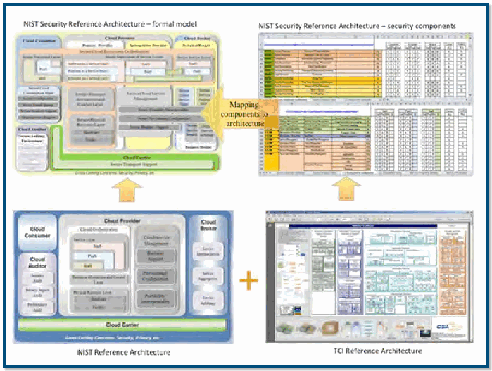
NISTセキュリティ参照アーキテクチャの図。正式モデルとセキュリティ構成要素、NISTおよびTIEの参照アーキテクチャを並べている。
CSD Role in the NIST Cloud Computing Program
NISTクラウドコンピューティング・プログラムにおけるCSDの役割
未レビュー訳During FY 2013, the NIST Cloud Computing Team continued to promote the development of publications, national and international standards, and specifications in support of the USG’s effective and secure use of cloud computing as well as providing technical guidance to USG agencies for secure and effective cloud computing adoption.. CSD supports many of the technical standards activities supported by the NIST Cloud Computing Program, with a particular focus on cloud computing security. Participated in the development of a revised SP 500-291, NIST Cloud Computing Standards Roadmap. The document, initially published in
2013会計年度、NISTクラウドコンピューティング・チームは、米国政府によるクラウドの効果的かつ安全な利用を支援する刊行物、国内外の標準、仕様の開発を促進し、各省庁に安全で効果的な導入のための技術指針を提供し続けた。CSDはNISTプログラムの多くの技術標準化活動を支援し、特にクラウドのセキュリティに重点を置いている。 — SP 500-291「NISTクラウドコンピューティング標準ロードマップ」の改訂に参加した。2011年に初版を公開したこの文書は2013年7月に更新され、SP 500-293草案に組み込まれた。
未レビュー訳Figure 10: NIST Security Reference Architecture Diagram
図10：NISTセキュリティ参照アーキテクチャ図
未レビュー訳2011, was updated in July 2013, and was incorporated into draft SP 500-293,
2011年に初版を公開し、2013年7月に更新した後、SP 500-293草案に組み込んだ。
未レビュー訳CSD staff members contributed significantly to several NIST-
CSD職員は、NISTが主催した複数のイベントに大きく貢献した。
未レビュー訳US Government (USG) Cloud Computing Technology
米国政府（USG）クラウドコンピューティング技術
未レビュー訳hosted events:
主なイベントは次のとおり。
未レビュー訳Roadmap.
ロードマップ。
未レビュー訳 Sixth Cloud Computing Forum and Workshop: Cloud Computing and Big Data Forum, held in January 2013
— 第6回クラウドコンピューティング・フォーラムおよびワークショップ：クラウドコンピューティングとビッグデータ・フォーラム（2013年1月開催）
未レビュー訳 Participated in the update to the multi-part draft document SP 500-293, US Government (USG) Cloud
— 複数巻構成のSP 500-293草案「米国政府（USG）クラウドコンピューティング技術ロードマップ（第I、II、III巻）」の更新に参加した。
未レビュー訳 Seventh Cloud Computing Forum and Workshop: The
— 第7回クラウドコンピューティング・フォーラムおよびワークショップ：
未レビュー訳Computing Technology Roadmap (Vol. I, II, and III)
クラウドコンピューティング技術ロードマップ。
未レビュー訳Intersection of Cloud and Mobility Forum, initially
「クラウドとモビリティの交差点」フォーラム。
未レビュー訳that defines and prioritizes USG requirements for
米国政府の要件を定義し、優先順位を付ける。
未レビュー訳scheduled for October 1-3, 2013, currently rescheduled
当初2013年10月1～3日に予定され、その後延期された。
未レビュー訳due to USG shutdown
原文更新後、再確認待ち
CSD staff members are also actively participating in cloud computing security standards, primarily through SC 27, which
CSDの職員は、主としてSC 27を通じて、クラウドコンピューティングのセキュリティ標準にも積極的に参加している。同委員会は
未レビュー訳 First Cloud Forensic Science Workshop, initially
第1回クラウド・フォレンジック科学ワークショップは、当初
未レビュー訳is responsible for cloud computing security standards. CSD
クラウドコンピューティングのセキュリティ標準を担当している。CSDは
未レビュー訳scheduled for October 3, 2013, also rescheduled due to
2013年10月3日に予定されていたが、これも延期された。
未レビュー訳has provided technical contributions based on SP 500-299 and
SP 500-299に基づく技術的な貢献を行い、
未レビュー訳USG shutdown.
米国政府機関の閉鎖により。
未レビュー訳continues to advocate for secure, non-proprietary solutions.
安全で独占的でないソリューションを引き続き提唱している。
未レビュー訳In support of and advancement of USG cloud computing In FY 2013, the CSD members of the NIST cloud computing mandates, CSD staff members provided leadership for several team also presented the results of cloud computing research public work groups operating under the NIST Cloud Computing and development, introduced the standards and specifications Program. Through these working groups, CSD staff led the under development, and provided status of the NIST Cloud development of technical guidelines and recommendations that Computing Program in a variety of conferences and workshops. considered a close collaboration with public, private, academia
米国政府のクラウドコンピューティング施策を支援・推進するため、CSD職員はNISTクラウドコンピューティング・プログラムの複数の公開作業部会を主導した。これらの作業部会を通じ、CSD職員は官民および学術界との緊密な連携を前提に、技術ガイドラインと勧告の策定を主導した。2013会計年度には、CSDのクラウドコンピューティングチームのメンバーも、さまざまな会議やワークショップで研究開発の成果を発表し、策定中の標準および仕様を紹介し、NISTクラウドコンピューティング・プログラムの進捗状況を報告した。
未レビュー訳Policy Machine – Leveraging Access Control for
ポリシーマシン — クラウドコンピューティングのためのアクセス制御の活用
未レビュー訳and other stakeholders.
その他の関係者。
未レビュー訳Cloud Computing
クラウドコンピューティング
未レビュー訳CSD staff chaired or co-chaired several significant cloud computing efforts in 2013:
CSD職員は2013年、クラウドコンピューティングに関する複数の主要な取り組みで議長または共同議長を務めた。
未レビュー訳Figure 11: Policy Machine operating environment
図11：ポリシーマシンの動作環境
未レビュー訳 Chair of the NIST Cloud Computing Security Working
NISTクラウドコンピューティング・セキュリティ作業部会の議長。
未レビュー訳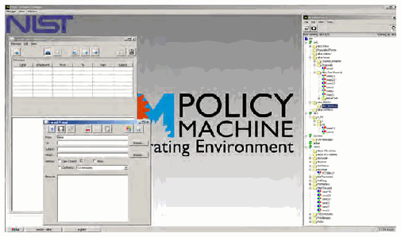
NIST Policy Machineの動作環境を示すソフトウェア画面。「POLICY MACHINE Operating Environment」と表示されている。
Group focused the group on development of SP 500-299 (described above), and on key management research.
同グループは、SP 500-299（前述）の策定および鍵管理の研究に注力した。
未レビュー訳 Co-Chair, NIST Cloud Computing Forensic Science Working Group, led development of Digital Forensics Challenges in a cloud environment.
NISTクラウドコンピューティング・フォレンジック科学作業部会の共同議長。クラウド環境におけるデジタル・フォレンジックの課題の策定を主導した。
未レビュー訳 Co-Chair, NIST Cloud Computing Standards Roadmap Working Group, led development of SP 500291, USG Cloud Computing Standards Roadmap (described above).
NISTクラウドコンピューティング標準ロードマップ作業部会の共同議長。前述のSP 500-291「米国政府クラウドコンピューティング標準ロードマップ」の策定を主導した。
未レビュー訳 Chair and Vice-Chair, INCITS CS1 (Cybersecurity) − U.S. Technical Advisory Group (TAG) to the ISO/
INCITS CS1（サイバーセキュリティ）— ISO/IEC国際委員会JTC1/SC27（ITセキュリティ
未レビュー訳In FY 2013, CSD continued the research and development
CSDは2013会計年度に、仮想化ベースの企業全体を対象とする、制御されたデータ配信の研究開発を継続した。
未レビュー訳IEC international committee JTC1/SC27 (IT Security
ISO/IEC国際委員会JTC1/SC27（ITセキュリティ
未レビュー訳of a virtualization-based, enterprise-wide controlled delivery
高度なクラウドコンピューティングにおける
未レビュー訳Techniques) − that covers cloud computing taxonomy-
技術）（SC 27）を担当する。クラウドコンピューティングの分類に関する標準および
未レビュー訳of data services for advanced cloud computing through Access
アクセス制御を通じたデータサービスの
未レビュー訳related standards and cloud computing security
関連規格およびクラウドコンピューティング・セキュリティ
未レビュー訳Control. NIST and other members of an Ad Hoc INCITS working
管理。NISTおよびINCITSアドホック作業グループの他のメンバーは、
未レビュー訳standards.
標準。
未レビュー訳group are developing a three-part PM standard, under the title
グループは「次世代アクセス制御（NGAC）」という標題の3部構成のPM標準を策定しており、
未レビュー訳CSD staff members participate in various standards of “Next Generation Access Control” (NGAC), under three sub-development organizations, two of which are ISO/IEC JTC 1 Sub projects: Committee 38 – Distributed Application Platforms and Services Project 2193–D: Next Generation Access Control – (SC 38) and ISO/IEC JTC 1 Sub Committee 27 – IT Security
CSD職員はさまざまな標準化団体に参加している。そのうち2つはISO/IEC JTC 1小委員会38（分散アプリケーション・プラットフォームおよびサービス）と小委員会27（ITセキュリティ技術）であり、3つのサブプロジェクトがある。
未レビュー訳Implementation Requirements, Protocols and API
実装要件、プロトコルおよびAPI
未レビュー訳Techniques (SC 27). In SC 38, CSD acts as the co-convener
技術（SC 27）。SC 38では、CSDは共同招集者を務める。
未レビュー訳Definitions
定義
未レビュー訳for a collaborative ISO/ITU-T initiative on cloud computing taxonomy that includes work on ISO/IEC 17788 – Information Project 2194–D: Next Generation Access Control –
クラウドコンピューティングの分類に関するISO/ITU-T共同イニシアチブを推進している。この作業にはISO/IEC 17788「情報技術—クラウドコンピューティング—概要と用語」の作業が含まれる。次世代アクセス制御（NGAC）—
未レビュー訳Functional Architecture
機能アーキテクチャ
未レビュー訳Technology – Cloud computing – Overview and Vocabulary. Notably, the genesis for this international body of work is the
情報技術—クラウドコンピューティング—概要と用語。特筆すべきことに、この国際的な作業の起点となったのは、
未レビュー訳 Project 2195–D: Next Generation Access Control –
次世代アクセス制御（NGAC）—
未レビュー訳widely accepted and used cloud computing definition found in
広く受け入れられ、使用されているクラウドコンピューティングの定義である
未レビュー訳Generic Operations & Abstract Data Structures
汎用操作および抽象データ構造
未レビュー訳SP 800-145, NIST Definition of Cloud Computing. ISO/IEC 17788 is closely coordinated with another standards The Policy Machine’s architecture has been adopted by activity, ISO/IEC 17789 – Information technology – Cloud the ANSI/INCITS and is now available as ANSI INCITS 499 – Computing – Reference Architecture, which is based on the Information technology – Next Generation Access Control – widely used and accepted NIST publication, SP 500-292. Both Functional Architecture (NGAC–FA). ISO/IEC 17788 and 17789 are in the final stages of international balloting before final publication, which is anticipated in the first quarter of calendar year 2014.
NGACの機能アーキテクチャはANSI/INCITSに採択され、ANSI INCITS 499として利用可能になった。ISO/IEC 17788は、NISTの広く利用され受け入れられている刊行物SP 500-292に基づくISO/IEC 17789「情報技術—クラウドコンピューティング—参照アーキテクチャ」と密接に調整されている。両規格は国際投票の最終段階にあり、2014暦年第1四半期に最終刊行される見込みである。
未レビュー訳Program and Project Achievements for FY 2013
2013会計年度のプログラムおよびプロジェクトの成果
未レビュー訳Ms. Annie Sokol
Annie Sokol氏
未レビュー訳Cryptographic Key Management Issues
クラウドインフラストラクチャにおける暗号鍵管理の課題
未レビュー訳Co-Chair, Cloud Computing Standards Roadmap
クラウドコンピューティング標準ロードマップ共同議長
未レビュー訳in Cloud Infrastructures
クラウドインフラストラクチャにおける
未レビュー訳(301) 975-2006
(301) 975-2006
未レビュー訳Many of the security capabilities associated with exercise annie.sokol@nist.gov of cloud service rely on cryptographic operations. The key management system (KMS) required to support cryptographic Mr. Daniel Benigni operations for the above tasks can be complex,due to differences Chair, INCITS CS1 (Cybersecurity) - US Technical Advisory Group
クラウドサービスに関連するセキュリティ機能の多くは暗号操作に依存する。これらの処理に必要な鍵管理システム（KMS）は、KMSおよび保護対象リソースが置かれる基盤インフラストラクチャの所有権と管理主体が異なるため、複雑になり得る。Annie Sokol氏のメールアドレス：annie.sokol@nist.gov。Daniel Benigni氏、INCITS CS1議長。
未レビュー訳(TAG) to the ISO/IEC international committee JTC1/SC27 (IT Security
(TAG) ISO/IEC国際委員会JTC1/SC27（ITセキュリティ
未レビュー訳in ownership and control of underlying infrastructures on
基盤インフラストラクチャの所有権および管理の違いにより、
未レビュー訳Techniques)
技術）
未レビュー訳which the KMS and the protected resources are located. CSD
その上にKMSと保護対象リソースが配置される。CSDは
未レビュー訳(301) 975-3279
(301) 975-3279
未レビュー訳developed NISTIR 7956, Cryptographic Key Management Issues
NISTIR 7956「クラウドサービスにおける暗号鍵管理の課題
未レビュー訳dbenigni@nist.gov
dbenigni@nist.gov
未レビュー訳& Challenges in Cloud Services to discuss these critical issues.
および課題」を作成し、これらの重要な問題を論じた。
未レビュー訳Mr. Salvatore Francomacaro
Salvatore Francomacaro氏
未レビュー訳Virtualization Security & Leveraging
仮想化セキュリティと、セキュリティのための仮想化の活用
未レビュー訳Vice-Chair, INCITS CS1 (Cybersecurity) - US Technical Advisory Group
INCITS CS1（サイバーセキュリティ）— ISO/IEC国際委員会JTC1/SC27担当米国技術諮問グループ（TAG）副議長
未レビュー訳Virtualization for Security
仮想化をセキュリティに活用する
未レビュー訳(TAG) to the ISO/IEC international committee JTC1/SC27 (IT Security Techniques)
(TAG) ISO/IEC国際委員会JTC1/SC27（ITセキュリティ技術）担当
未レビュー訳CSD has been researching key areas in cloud and virtualization (301) 975-6414
CSDはクラウドおよび仮想化の主要分野を調査しており、次の論文を作成した。(301) 975-6414
未レビュー訳salvatore.francomacaro@nist.gov
salvatore.francomacaro@nist.gov
未レビュー訳security producing the following papers: “Security Assurance Requirements for Hypervisor Deployment Feature” published as part of the proceedings of Policy Machine - Leveraging Access Control for Cloud Computing
「ポリシーマシン—クラウドコンピューティングのためのアクセス制御の活用」
未レビュー訳Mr. David Ferraiolo
David Ferraiolo氏
未レビュー訳Mr. Serban Gavrila
Serban Gavrila氏
未レビュー訳the 7th International Conference on Digital Society. In FY 2014,
第7回デジタル社会国際会議の議事録の一部として発表された。2014会計年度に、
未レビュー訳(301) 975-3046
(301) 975-3046
未レビュー訳(301) 975-4242
(301) 975-4242
未レビュー訳CSD will consider feedback from public comments received and
CSDは寄せられた一般コメントを検討し、
未レビュー訳david.ferraiolo@nist.gov
david.ferraiolo@nist.gov
未レビュー訳serban.gavrila@nist.gov
serban.gavrila@nist.gov
未レビュー訳publish a (yet unnumbered) Special Publication titled Secure Management Practices for Protection of Hypervisors. In addition,
番号未定の特別刊行物「ハイパーバイザー保護のための安全な管理慣行」を刊行する。さらに、
未レビュー訳Cryptographic Key Management Issues in Cloud Infrastructures
クラウドインフラストラクチャにおける暗号鍵管理の課題
未レビュー訳security assurance requirements and security recommendations
セキュリティ保証要件およびセキュリティ勧告を
未レビュー訳Dr. Ramaswamy Chandramouli Dr. Michaela Iorga
Ramaswamy Chandramouli博士、Michaela Iorga博士
未レビュー訳will be developed for components of virtualized infrastructure
ハイパーバイザー以外の仮想化インフラストラクチャ構成要素について策定する。
未レビュー訳(301) 975-5013
(301) 975-5013
未レビュー訳(301) 975-8431
(301) 975-8431
未レビュー訳other than the hypervisor, such as the guest O/S, VM-based mouli@nist.gov
ゲストOSなど、VMベースの mouli@nist.gov
未レビュー訳michaela.iorga@nist.gov
michaela.iorga@nist.gov
未レビュー訳applications, and the virtual network.. Additional information about the NIST Cloud Computing Virtualization Security & Leveraging Virtualization for Security
アプリケーションおよび仮想ネットワーク。NISTクラウドコンピューティング・プログラムの詳細情報。仮想化セキュリティとセキュリティのための仮想化の活用
未レビュー訳Dr. Ramaswamy Chandramouli
Ramaswamy Chandramouli博士
未レビュー訳Program is available at:
プログラムの情報は次のURLから入手できる。
未レビュー訳(301) 975-5013 mouli@nist.gov
(301) 975-5013 mouli@nist.gov
未レビュー訳http://www.nist.gov/itl/cloud
http://www.nist.gov/itl/cloud
未レビュー訳http://collaborate.nist.gov/twiki-cloud-computing/bin/view/
http://collaborate.nist.gov/twiki-cloud-computing/bin/view/
未レビュー訳ª Mobile Device Security
モバイルデバイスのセキュリティ
未レビュー訳CloudComputing/StandardsRoadmap
CloudComputing/StandardsRoadmap
未レビュー訳Smart phones have become both ubiquitous and indispensable
スマートフォンは、消費者にもビジネス利用者にも、遍在し欠かせないものとなっている。これらの
未レビュー訳http://collaborate.nist.gov/twiki-cloud-computing/bin/view/
http://collaborate.nist.gov/twiki-cloud-computing/bin/view/
未レビュー訳for consumers and business people alike. Although these
デバイスは小型で安価だが、音声通話、簡単なテキストメッセージの送受信、
未レビュー訳CloudComputing/CloudSecurity
CloudComputing/CloudSecurity
未レビュー訳devices are relatively small and inexpensive, they can be used for voice calls, simple text messages, sending and receiving
メールの送受信、ウェブ閲覧、オンラインバンキングや電子商取引、
未レビュー訳http://collaborate.nist.gov/twiki-cloud-computing/bin/view/
http://collaborate.nist.gov/twiki-cloud-computing/bin/view/
未レビュー訳emails, browsing the web, online banking and ecommerce,
ソーシャルネットワーキングなど、かつてはノートPCやデスクトップPCに限られていた多くの機能に使用できる。スマートフォンとタブレット端末には、
未レビュー訳CloudComputing/CloudForensics
CloudComputing/CloudForensics
未レビュー訳social networking, and many functions once limited to laptop and desktop computers. Smart phones and tablet devices have
カメラ、ビデオカメラ、加速度計、全地球測位システム（GPS）受信機、リムーバブルメディアリーダーなどの専用内蔵ハードウェアが搭載されている。また、
未レビュー訳Contacts for each project:
各プロジェクトの連絡先：
未レビュー訳specialized built-in hardware, such as photographic cameras,
写真カメラなどの専用内蔵ハードウェア、
未レビュー訳Computer Security Division Role in the NIST Cloud Computing
NISTクラウドコンピューティング・プログラムにおけるコンピュータセキュリティ部門の役割
未レビュー訳video cameras, accelerometers, Global Positioning System
ビデオカメラ、加速度計、全地球測位システム
未レビュー訳Program
プログラム
未レビュー訳(GPS) receivers, and removable media readers. They also
（GPS）受信機、リムーバブルメディアリーダーなども備える。さらに、
未レビュー訳Dr. Michaela Iorga
Michaela Iorga博士
未レビュー訳employ a wide range of wireless interfaces, including infrared,
赤外線、
未レビュー訳Chair, Cloud Computing Security Workgroup
クラウドコンピューティング・セキュリティ作業部会 議長
未レビュー訳Wireless Fidelity (Wi-Fi), Bluetooth, Near Field Communications
無線LAN（Wi-Fi）、Bluetooth、近距離無線通信
未レビュー訳(301) 975-8431
(301) 975-8431
未レビュー訳(NFC), and one or more types of cellular interfaces that provide
(NFC）、および世界中でネットワーク接続を提供する1種類以上の携帯通信インターフェースなど、
未レビュー訳michaela.iorga@nist.gov
michaela.iorga@nist.gov
未レビュー訳network connectivity across the globe. Naturally, just as consumers and business people can realize productivity gains from these technologies, so can government agencies.
幅広い無線インターフェースを使用する。当然ながら、消費者やビジネス利用者がこれらの技術で生産性を高められるのと同様に、政府機関もその恩恵を受けられる。
未レビュー訳Computer Security Division Annual Report - 2013
コンピュータセキュリティ部門 年次報告書 — 2013年
未レビュー訳Like any new technology, smart phones present new Engineering Task Force (IETF). capabilities, but also a number of new security and privacy
新技術と同様、スマートフォンは新たな機能をもたらす一方、セキュリティおよびプライバシー上の新たな課題も生じさせる。インターネット技術タスクフォース（IETF）。
未レビュー訳FY 2012 was a significant year for the deployment of IPv6
2012会計年度は、米国政府におけるIPv6の導入にとって重要な年であった。
未レビュー訳challenges. As the pace of the technology life cycles continues
課題である。技術ライフサイクルの進行が加速するにつれて、
未レビュー訳in the United States Government. OMB’s Memo of September
米国政府では、行政管理予算局（OMB）が2010年9月10日に発出したメモ「IPv6への移行」により、
未レビュー訳to increase, current Information Assurance (IA) standards and
進行が加速する中、現在の情報保証（IA）標準および
未レビュー訳10, 2010, Transition to IPv6, required all government agencies
すべての政府機関に対し、次の対応を求めた。
未レビュー訳processes must be updated and new technologies to allow
プロセスを更新し、政府利用者が最新技術を利用できるようにする新技術を導入する必要がある。
未レビュー訳to “upgrade public/external facing servers and services (e.g.,
「インターネットに公開されるサーバーおよびサービス（例：
未レビュー訳government users to employ the latest technologies that
政府利用者が最新技術を活用できるようにするための
未レビュー訳web, email, Domain Name System (DNS), Internet Service
ウェブ、電子メール、ドメインネームシステム（DNS）、インターネットサービス
未レビュー訳consumers can use without sacrificing privacy and security.
消費者がプライバシーとセキュリティを犠牲にせず利用できる。
未レビュー訳Provider (ISP) services) to operationally use native IPv6 by
プロバイダー（ISP）サービスを含む）を、2012会計年度末までにネイティブIPv6で運用すること。
未レビュー訳NIST is conducting research in new software assurance the end of FY 2012.” NIST worked with the USGv6 Task Force methodologies for smart phone software (i.e., apps) and is and with individual government agencies to achieve this goal. working with industry to bridge the security gaps present NIST developed an online monitor to demonstrate which high-with today’s smart phones. NIST has developed an online beta level government domains have met this goal with respect to Application Testing Portal (ATP) for Android that examines DNS services, email, web servers, and Domain Name System app functionality with respect to agency security and privacy Security Extensions (DNSSEC). In FY 2013, NIST and OMB guidelines. NIST is working closely with the Defense Advanced continued to use this monitor to measure USGv6 compliance Research Projects Agency (DARPA) to transition this software with OMB’s requirement. assurance technology to other agencies and making the ATP
NISTはスマートフォン用ソフトウェア（アプリ）の新しい保証手法を研究し、現行スマートフォンに存在するセキュリティ上の不足を解消するため産業界と協力している。Android向けオンライン・ベータ版アプリケーション試験ポータル（ATP）を開発し、アプリの機能を各機関のセキュリティおよびプライバシー指針に照らして評価する。NISTは国防高等研究計画局（DARPA）と緊密に連携し、このソフトウェア保証技術を他機関へ移転するとともに、ATPを
未レビュー訳FY 2014 will bring additional OMB IPv6 requirements.
2014会計年度にはOMBがIPv6に関する追加要件を定める。
未レビュー訳software available to industry as open source.
ソフトウェアを業界向けにオープンソースとして公開している。
未レビュー訳Agencies will “upgrade internal client applications that
内部クライアントアプリケーションを更新し、
未レビュー訳Building on this expertise in mobile app software assurance, communicate with public Internet servers and supporting NIST researchers are developing platform-independent enterprise networks to operationally use native IPv6 by the end techniques for identifying mobile malware by analyzing mobile of FY 2014.” NIST is developing online diagnostic tools to help app network behavior. NIST researchers are also developing agencies verify compliance to this requirement. metrics for evaluating the effectiveness of mobile app security
NISTの研究者は、モバイルアプリのネットワーク動作を分析することで、プラットフォームに依存しないモバイルマルウェア検出技法を開発中である。また、モバイルアプリのセキュリティ試験ツールの有効性を評価する指標も開発している。 各機関は、公開インターネット上のサーバーと通信する内部クライアントアプリケーションおよび支援ネットワークを更新し、2014会計年度末までにネイティブIPv6で運用する。NISTはこの要件への適合を支援するオンライン診断ツールを開発中である。
未レビュー訳The NIST IPv6 Test Program, whose goal is to provide
NIST IPv6試験プログラムは、IPv6製品の仕様適合性と相互運用性を保証することを目的とし、運用を継続している。
未レビュー訳test tools.
試験ツール。
未レビュー訳assurance on IPv6 product conformance and interoperability, continues to operate. In FY 2014, NIST will continue to manage
2014会計年度、NISTはUSGv6試験プログラムの管理を続け、
未レビュー訳Contacts:
連絡先：
未レビュー訳and evolve the USGv6 Test Program. The NIST program is a
このNISTプログラムは
未レビュー訳Dr. Steve Quirolgico
Steve Quirolgico 博士
未レビュー訳Dr. Jeffrey Voas
Jeffrey Voas 博士
未レビュー訳collaboration between CSD and the Advanced Networking
CSDと先進ネットワーク
未レビュー訳(301) 975-8426
(301) 975-8426
未レビュー訳(301) 975-6622
(301) 975-6622
未レビュー訳Technology Division.
技術部門との共同事業である。
未レビュー訳stephen.quirolgico@nist.gov jeff.voas@nist.gov
stephen.quirolgico@nist.gov jeff.voas@nist.gov
未レビュー訳http://www.antd.nist.gov/usgv6
http://www.antd.nist.gov/usgv6
未レビュー訳Dr. Tom Karygiannis (301) 975-4728
Tom Karygiannis 博士 (301) 975-4728
未レビュー訳Contacts:
連絡先：
未レビュー訳karygiannis@nist.gov
karygiannis@nist.gov
未レビュー訳Ms. Sheila Frankel
Sheila Frankel 氏
未レビュー訳Mr. Douglas Montgomery
Douglas Montgomery 氏
未レビュー訳(301) 975-3297
(301) 975-3297
未レビュー訳(301) 975-3630
(301) 975-3630
未レビュー訳Strengthening Internet Security
インターネットセキュリティの強化
未レビュー訳sheila.frankel@nist.gov
sheila.frankel@nist.gov
未レビュー訳dougm@nist.gov
dougm@nist.gov
未レビュー訳ª USGv6: A Technical Infrastructure to Assist IPv6 Adoption
ª USGv6：IPv6導入を支援する技術基盤
未レビュー訳Internet Protocol (IP) Version
インターネットプロトコル（IP）バージョン
未レビュー訳Access Control and Privilege Management
アクセス制御と権限管理
未レビュー訳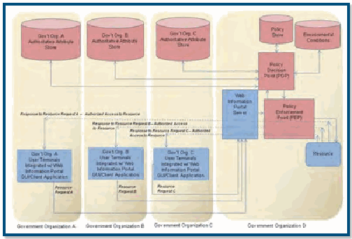
政府機関AからDの組織、データ、業務の関係と、組織間で共有するアクセス制御を示す図。
ª Access Control and Privilege Management Research
ª アクセス制御と権限管理の研究
未レビュー訳With the advance of current computing technologies and the diverse environments in which these technologies are used, security issues, such as situational awareness, trust management, preservation of privacy in access control, and privilege management systems, are becoming increasingly complex. Practical and conceptual guidance for these topics is needed. In FY 2013, the following research was accomplished for this
現在のコンピューティング技術が進歩し、利用環境も多様化するなか、状況認識、信頼管理、アクセス制御におけるプライバシー保護、権限管理システムなどのセキュリティ課題はますます複雑になっている。実践的・概念的な指針が必要である。2013会計年度、このプロジェクトでは次の研究を実施した。
未レビュー訳Figure 12: Access Control and Privilege Management
図12：アクセス制御と権限管理
未レビュー訳project: 1) unified enforcement mechanism of data services for use by a Policy Machine (PM) for enterprise computing environment, 2) enhanced the capabilities of the Access Control Contacts: Policy Tool (ACPT), 3) researched a new fault-detection method Dr. Vincent Hu
このプロジェクトでは、1）エンタープライズ環境でPolicy Machine（PM）に利用するデータサービス向け統一強制機構、2）Access Control Policy Tool（ACPT）の機能強化、3）アクセス制御規則向けの新しい障害検出手法を研究した。
未レビュー訳Mr. David Ferraiolo
David Ferraiolo 氏
未レビュー訳for access control rule using Simulated Logic Circuit algorithms, (301) 975-4975
Simulated Logic Circuitアルゴリズムを用いたアクセス制御規則の障害検出手法。(301) 975-4975
未レビュー訳(301) 975-3046
(301) 975-3046
未レビュー訳vhu@nist.gov
vhu@nist.gov
未レビュー訳david.ferraiolo@nist.gov
david.ferraiolo@nist.gov
未レビュー訳4) researched formal ABAC models, and completed the development of Special Publication 800-162, Guide to Attribute Based Access Control (ABAC) Definition and Considerations, Mr. Rick Kuhn which provides information of function components as well as (301) 975-3337
4）形式的なABACモデルを研究した。また、SP 800-162「属性ベースアクセス制御（ABAC）の定義および考慮事項に関するガイド」を完成させた。同文書はABACの機能構成要素に関する情報を提供する。
未レビュー訳kuhn@nist.gov
Rick Kuhn 氏 (301) 975-3337 kuhn@nist.gov
未レビュー訳enterprise consideration of ABAC. CSD expects that this project will:
また、エンタープライズでのABAC導入に関する考慮事項を示す。CSDは、このプロジェクトにより次の効果を見込んでいる。
未レビュー訳ª
未レビュー訳 Promote (or accelerate) the adoption of community
— 共有資源の能力を活用したコミュニティコンピューティングの導入を促進・加速する。
未レビュー訳Conformance Verification for Access
アクセス制御ポリシーの適合性検証
未レビュー訳computing that utilizes the power of shared resources
共通の信頼管理方式も利用する。
未レビュー訳Control Policies
制御ポリシー
未レビュー訳and common trust management schemes
信頼管理方式を利用する。
未レビュー訳Access control systems are among the most critical network
アクセス制御システムは、ネットワークセキュリティの中でも特に重要な構成要素である。
未レビュー訳 Provide guidance in implementing access control models
— スタンドアロンまたはエンタープライズシステム向けのアクセス制御モデルと機構の実装指針を提供する。
未レビュー訳security components.Faulty policies,misconfigurations,or flaws
ポリシーの欠陥、設定ミス、ソフトウェア実装の不備は重大な脆弱性を招く。アクセス制御ポリシーの仕様策定は難しい問題である。
未レビュー訳and mechanisms for standalone or enterprise systems
その実装を支援する。
未レビュー訳in software implementation can result in serious vulnerabilities. The specification of access control policies is often a challenging
多くの場合、システムのプライバシーとセキュリティは
未レビュー訳 Increase the security and safety of static (connected)
— 静的（接続型）
未レビュー訳problem. Often a system’s privacy and security are compromised
アクセス制御ポリシーの誤設定によって損なわれる。
未レビュー訳distributed systems by applying the testing and
分散システムのセキュリティと安全性を、
未レビュー訳due to the misconfiguration of access control policies instead
暗号プリミティブやプロトコルの障害が原因ではない。この問題はソフトウェアシステムの複雑化に伴って深刻化する。
未レビュー訳verification tool for the access control policies
アクセス制御ポリシー試験・検証ツールで向上させる。
未レビュー訳of the failure of cryptographic primitives or protocols. This problem becomes increasingly severe as software systems
ソフトウェアシステムはますます複雑になり、
未レビュー訳 Assist system architects, security administrators, and security managers whose expertise is related to access become more and more complex and are deployed to manage a
— アクセス制御または権限ポリシーを担当するシステム設計者、セキュリティ管理者、セキュリティマネージャーが、システムを管理し、
未レビュー訳large amount of sensitive information and resources organized
大量の機微情報や資源を複雑な構造で管理する。
未レビュー訳control or privilege policy in managing their systems, and
その適用上の制約や実践的な方法を学べるよう支援する。
未レビュー訳into sophisticated structures. Identifying discrepancies between
ポリシー仕様とその性質（意図した機能）との相違を特定することが重要である。
未レビュー訳in learning the limitations and practical approaches for
アクセス制御または権限ポリシーを適用する際の制約と実践的な方法を学ぶ
未レビュー訳policy specifications and their properties (intended function) is
なぜなら、アプリケーションによるポリシーの正しい実装と適用は、
未レビュー訳their applications
ことである。
未レビュー訳crucial because correct implementation and enforcement of policies by applications is based on the premise that the policy
ポリシー仕様が正しいことを前提にするためである。そのため、仕様は
未レビュー訳 Provide accurate and efficient fault detection and correction technology for implementing access control specifications are correct.As a result, policy specifications must
— アクセス制御仕様を実装するため、正確かつ効率的な障害検出・修正技術を提供する。
未レビュー訳undergo rigorous verification and validation through systematic
体系的な試験を通じて厳格に検証・妥当性確認する必要がある。
未レビュー訳rules and policies
規則およびポリシー。
未レビュー訳testing to ensure that the policy specifications truly encapsulate the desires of the policy authors. To formally and precisely capture the security properties that access control should adhere to, access control models are usually written to bridge the rather wide gap in abstraction between policy and mechanism. Thus, an access control model provides unambiguous and precise expression as
アクセス制御ポリシーが従うべきセキュリティ特性を形式的かつ厳密に表すため、アクセス制御モデルが用いられる。これは、ポリシーと機構の間にある抽象度の大きな隔たりを埋める。アクセス制御モデルは、設計および実装のための明確で厳密な表現と参照を提供する。
未レビュー訳well as reference for design and implementation of security Provide tools or services for checking the security requirements. Techniques are required for verifying whether
原文更新後、再確認待ち
and safety of access control implementation, policy
組み合わせ、拡張可能アクセス制御マークアップ言語（XACML）ポリシー生成のためのツールやサービスを提供する。
未レビュー訳an access control model is correctly expressed in the access
アクセス制御モデルがアクセス制御
未レビュー訳combination, and eXtensible Access Control Markup
組み合わせのセキュリティと安全性を高め、
未レビュー訳controls policies and whether the properties are satisfied in
ポリシー仕様で正しく表現され、モデル上で要件が満たされるかを確認する技法が必要である。
未レビュー訳Language (XACML) policy generation
XACMLポリシー生成を支援する。
未レビュー訳the model. In practice, the same access control policies may express multiple access control models or express a single Promote (or accelerate) the adoption of combinatorial
— 大規模システム（アクセス制御システムなど）の組合せ試験の導入を促進する。
未レビュー訳testing for large-system (such as access control system)
大規模なアクセス制御システムを試験するための
未レビュー訳model in addition to extra access control constraints outside of
モデル外の追加制約を含む場合もある。
未レビュー訳testing
組合せ試験を促進する。
未レビュー訳the model. Ensuring the conformance of access control models and policies is a nontrivial and critical task. Started in 2009, CSD developed a prototype system, Access http://csrc.nist.gov/groups/SNS/acpt/ Control Policy Tool (ACPT), which allows a user to compose, verify, test, and generate access control policies.
http://csrc.nist.gov/groups/SNS/acpt/ CSDは2009年にAccess Control Policy Tool（ACPT）の試作システムを開発した。このツールを使うと、利用者はアクセス制御ポリシーを作成、検証、試験、生成できる。
未レビュー訳Contacts:
連絡先：
未レビュー訳In FY 2013, ACPT was downloaded by 190 users and Dr. Vincent Hu
2013会計年度、ACPTは190人および組織にダウンロードされた。
未レビュー訳Mr. Rick Kuhn
Rick Kuhn 氏
未レビュー訳organizations. CSD performed prototype testing, enhanced the (301) 975-4975
CSDは試作版を試験し、権限継承アルゴリズムを追加してACPTを強化した。
未レビュー訳(301) 975-3337
(301) 975-3337
未レビュー訳vhu@nist.gov
vhu@nist.gov
未レビュー訳kuhn@nist.gov
kuhn@nist.gov
未レビュー訳capability of ACPT by adding privilege inheritance algorithms, applied user cases of Attribute Based, Multi-Level, and Workflow access control models to test ACPT’s performance,
属性ベース、マルチレベル、ワークフロー型アクセス制御モデルの利用例で性能を評価し、他の形式手法と性能・使いやすさを比較した。
未レビュー訳ª Metrics for Evaluation of Access Control
アクセス制御システムを評価する指標
未レビュー訳and compared to other formal method for performance and usability. CSD also produced a new user manual that explains
CSDはACPTの新機能を説明する利用者マニュアルも作成した。さらに、
未レビュー訳Systems (Real-Time Access Rule Fault
（リアルタイムのアクセス規則障害検出）
未レビュー訳new capabilities of ACPT. In addition, CSD published a research
ACPTに関する研究論文を発表した。
未レビュー訳Detection)
障害検出）
未レビュー訳paper related to ACPT.
研究論文を公表した。
未レビュー訳Specifying correct behaviors of Access Control (AC) policies
アクセス制御（AC）ポリシーが正しい動作をするよう仕様化することは、
未レビュー訳In FY 2014, CSD will continue testing, enhance the capability
2014会計年度、CSDは引き続き試験を行い、
未レビュー訳is a challenging task, especially when an AC policy includes
多数の規則を含む場合は特に難しい。
未レビュー訳of ACPT by applying the tool for more complex access control
より複雑なアクセス制御ポリシーの組み合わせにACPTを適用して、
未レビュー訳a large number of rules. Identifying discrepancies between AC
アクセス制御ポリシーと意図した機能との不一致を特定することは、
未レビュー訳policy combinations, provide model profiles, and improve user
モデルプロファイルを提供し、利用者
未レビュー訳policies and their intended functionalities is crucial because
ポリシーの正しい動作が、
未レビュー訳interfaces. CSD will also update ACPT based on user feedback
インターフェースを改善する。CSDは利用者からの意見や
未レビュー訳correct policy behaviors are based on the premise that the
ポリシーが正しく仕様化されていることを前提とするため、
未レビュー訳and suggestions.
提案に基づいてACPTも更新する。
未レビュー訳policies are correctly specified. Incorrect AC policies result in faults that not only leak but also disable access to information, and faults are especially difficult to detect without support of formal embedded models such as Multi-Level Security (MLS) and Chinese Wall. Most research on AC model or policy verification techniques are focused on one particular model, and almost all of the research is in applied methods, which require the completed AC policies as the input for verification or test processes to generate fault reports. Even though correct verification is achieved and counterexamples may be generated along with found faults, those methods provide no information about the source of rule faults that might allow conflicts in privilege assignment, leakage of privileges, or conflict of interest permissions. The difficulty in finding the source of faults is increased especially when the AC rules are intricately covering duplicated variables to a degree of complexity. The complexity is due to the fact that a fault might not be caused by one particular rule; for example, rule x
アクセス制御ポリシーに誤りがあると、情報漏えいだけでなく、情報へのアクセス不能も引き起こす。マルチレベルセキュリティ（MLS）やChinese Wallなどの形式モデルの支援がなければ、障害の検出は特に難しい。アクセス制御モデルやポリシーの検証研究の多くは単一のモデルを対象とし、完成したポリシーを入力として欠陥を報告する応用手法に集中している。検証に成功し、反例から欠陥を特定できても、権限割当ての衝突、権限の漏えい、利益相反を許す規則上の原因までは示さない。重複する変数を複雑に参照するアクセス制御規則では、欠陥の原因特定はさらに困難になる。障害は単一の規則だけで生じるとは限らない。たとえば、規則xは
未レビュー訳Figure 13: Conformance Verification
図13：適合性検証
未レビュー訳grants subject/attribute s access to object/attribute o, and rule
主体／属性sに対象／属性oへのアクセスを許可し、規則
未レビュー訳This project is expected to:
このプロジェクトでは、次の成果を見込んでいる。
未レビュー訳y denies the group subject/attribute g, which s is a member of, access to object o. Such conflict can only be resolved by
yは、sが所属するグループ主体／属性gによる対象oへのアクセスを拒否する。この矛盾を解消するには、
未レビュー訳 Provide generic paradigm and framework of access
— アクセス制御の汎用的なパラダイムと枠組みを提供する。
未レビュー訳removing either rule x or y, or the g membership of s from the
規則xまたは規則yを削除するか、sをgから除外する必要がある。
未レビュー訳control model/property conformance testing
制御モデル／プロパティ適合性試験
未レビュー訳policy. But removing x or y affects other rules that depend on
ポリシー。ただし、xまたはyを削除すると、それらに依存する他の規則にも影響する。
未レビュー訳 Provide templates for specifying access control rules in them (e.g., a member of subject group g k is granted access popular access control models such as Attribute Based, to object o), and removing s’s membership in g will disable
アクセス制御規則を指定するテンプレートを提供する。属性ベース、マルチレベル、ワークフローなど一般的なアクセス制御モデルでは、主体グループg_kのメンバーに対象oへのアクセスを許可する。
未レビュー訳g’s legitimate access to other objects/attributes through the
gのメンバーシップが他の対象／属性への正当なアクセスを可能にしている。
未レビュー訳Multilevel, and Workflow models
マルチレベルおよびワークフローモデル
未レビュー訳membership. Thus, it requires manually analyzing each rule in Contact: the policy in order to find the correct solution for the fault.
原文更新後、再確認待ち
Dr. Vincent Hu (301) 975-4975
Vincent Hu博士 (301) 975-4975
未レビュー訳To address the issue,CSD researched theAC Rule Logic Circuit
この問題に対処するため、CSDはアクセス制御規則論理回路
未レビュー訳vhu@nist.gov
vhu@nist.gov
未レビュー訳Simulation (ACRLCS) technique, which enables the AC authors to detect a fault when the fault-causing AC rule is added to the policy, so the fixing can be implemented in real time before
シミュレーション（ACRLCS）手法を研究した。これにより、障害の原因となるアクセス制御規則が追加された時点で障害を検出し、他の規則が追加され検出が困難になる前にリアルタイムで修正できる。
未レビュー訳ª
未レビュー訳adding other rules that further complicate the detecting effort.
検出作業をさらに複雑にする他の規則を追加する前に。
未レビュー訳Attribute Based Access Control
属性ベースアクセス制御
未レビュー訳Rather than checking by retracing the interrelations between rules after the policy is completed, the policy author needs Attribute Based Access Control (ABAC) is a logical access only check the newly added rule against previous “correct” control methodology where authorization to perform a set of ones. In ACRLCS, AC rules are represented in a Simulated operations is determined by evaluating attributes associated Logic Circuit (SLC). The use of simulation may restrict ACRLCS with the subject, object, requested operations, and, in some implementation on a physical electronic circuit; however, the cases, environment conditions against policy, rules, or concept can be implemented and computed through simulated relationships that describe the allowable operations for a given software.
ポリシー完成後に規則間の関係をたどるのではなく、新たな規則だけをそれ以前の「正しい」規則と照合する。ACRLCSは規則をシミュレーション論理回路（SLC）で表す。物理的な電子回路への実装は制約され得るが、シミュレーションソフトウェアで実装・計算できる。
未レビュー訳set of attributes. ABAC represents a point on the spectrum
属性の集合に対して許可される操作を定めるポリシー、規則、関係を評価し、操作の認可を決定する。
未レビュー訳In FY 2013, by using the Logic Circuit Simulation (LCS) of logical access control from simple access control lists to software, CSD researched the SLC for the simulations of rule more capable role-based access (RBAC), and finally to a highly and inheritance assignments of AC privileges, formal AC model flexible method for providing access based on the evaluation of implementations, and multiple policy combinations. The result attributes. is published in the conference paper, Real-Time Access Control
2013会計年度、CSDは論理回路シミュレーション（LCS）ソフトウェアを用いて、アクセス制御特権の規則割当てと継承割当てのシミュレーションを研究し、形式的モデルの実装と複数ポリシーの組合せを検討した。成果は会議論文として発表された。
未レビュー訳There has not been a comprehensive effort to formally
連邦政府におけるABACの正式な定義や実装指針を定める包括的な取り組みはなかった。
未レビュー訳Rule Fault Detection Using a Simulated Logic Circuit.
「シミュレーション論理回路を用いたリアルタイムアクセス制御規則障害検出」。
未レビュー訳define or guide the implementation of ABAC within the Federal
連邦政府内でABACを定義し、その実装を指針化する。
未レビュー訳In FY 2014, CSD is planning to further research the Government. This research provides considerations for using performance of the ACRLCS, and develop a basic reference ABAC to improve information sharing within and among implementation of the algorithm. Goals for the project include: organizations while maintaining control of that information. The Promote the concept of detecting AC policy faults in real research serves a two-fold purpose; first, it aims to provide
2014会計年度にCSDはACRLCSの性能をさらに研究し、アルゴリズムの基本的な参照実装を開発する計画である。プロジェクトの目標は次のとおり。
未レビュー訳federal agencies with a definition of ABAC and a description of
連邦機関にABACの定義と機能構成要素の説明を提供することを目指す。
未レビュー訳time AC rule composing
アクセス制御規則を作成する際にポリシー障害をリアルタイムで検出する。
未レビュー訳the functional components ofABAC.Second,it provides planning,
ABACの機能構成要素を説明し、計画、
未レビュー訳 Provide an innovative method in specifying AC rules
アクセス制御規則の指定に革新的な方法を提供する。
未レビュー訳design, implementation, and operational considerations for
設計、実装、運用上の検討事項を提示する。
未レビュー訳formed by Boolean logic expressions operated on
ブール論理式で表され、アクセス制御規則の
未レビュー訳employing ABAC within a large enterprise with the goal of
大規模な企業でABACを導入し、情報共有を改善しながらその情報の管理を維持する。
未レビュー訳variables of AC rules
変数に作用する方法。
未レビュー訳improving information sharing while maintaining control of that information.
情報共有を改善しつつ、その情報の管理を維持する。
未レビュー訳 Provide techniques for preventing faults in enforcing fundamental security properties including Cyclic
循環継承、権限昇格、職務分離など、基本的なセキュリティ特性の実施における障害を防ぐ技術を提供する。
未レビュー訳In FY 2013, CSD completed the writing of SP 800-162,
2013会計年度にCSDはSP 800-162「属性ベースアクセス制御（ABAC）の定義と考慮事項ガイド」の執筆を完了した。
未レビュー訳Inheritance, Privilege Escalation, and Separation of Duty Guide to Attribute Based Access Control (ABAC) Definition
継承、権限昇格、職務分離。属性ベースアクセス制御（ABAC）の定義と考慮事項ガイド
未レビュー訳and Considerations. SP 800-162 includes terminology and
SP 800-162には、ABACの用語と基本的な理解、企業でのABAC導入に関する考慮事項が含まれる。
未レビュー訳 Provide new methods for composing standard mandatory
標準的な強制アクセス制御モデルを構成する新しい方法を提供する。
未レビュー訳basic understanding of ABAC; ABAC enterprise employment
ABACの基本的な理解、および企業におけるABAC導入に関する考慮事項。
未レビュー訳AC models such as Role-Based Access Control (RBAC)
ロールベースアクセス制御（RBAC）などの
未レビュー訳considerations during the initiation, acquisition/development,
開始、調達／開発段階における考慮事項、
未レビュー訳and MLS as well as some fundamental security
マルチレベルセキュリティ（MLS）と基本的なセキュリティ
未レビュー訳implementation/assessment, and operations and maintenance
実装／評価、運用・保守の各段階における
未レビュー訳properties
特性
未レビュー訳phases; and example to demonstrate how ABAC is implemented in a Web Information Portal. CSD also researched ABAC formal models, the result will be presented in a NISTIR, which describes a variety of characteristics and applications of ABAC formal models. NIST conducted an Attribute Based Access Control Workshop, based on the SP 800-162, on July 17, 2013, in partnership with NSA and the National Cybersecurity Center of Excellence (NCCoE). About 100 individuals from government, industries, and academia/research attended the event. The workshop provided attendees an opportunity to identify, refine, and guide the many interrelated considerations, challenges, and efforts needed to develop ABAC guidance; CSD updated SP 800-162
段階、およびWeb情報ポータルにおけるABAC実装例を含む。CSDはABAC形式モデルも調査しており、さまざまな特性と用途を説明するNISTIRで成果を発表予定である。NISTは2013年7月17日、NSAおよび国立サイバーセキュリティ・エクセレンス・センター（NCCoE）と協力し、SP 800-162に基づくABACワークショップを開催した。政府、産業界、学術界／研究機関から約100名が参加。ワークショップは、ABAC指針に必要な相互に関連する検討事項、課題、取り組みを特定、精緻化、方向付ける機会を提供した。CSDは収集した提案に基づきSP 800-162を更新した。
未レビュー訳Figure 14: Real-time Access Control - Circuit
図14：リアルタイムアクセス制御 — 回路
未レビュー訳from the suggestions collected at the workshop.
ワークショップで収集した提案に基づく。
未レビュー訳Computer Security Division Annual Report - 2013
コンピュータセキュリティ部門 年次報告書 — 2013年
未レビュー訳In FY 2014, CSD will continue research of ABAC formal models http://csrc.nist.gov/projects/abac/ as well as details and extended topics of ABAC capabilities, such as Attribute Engineering/Management, Integration with
2014会計年度にCSDはABAC形式モデルの研究を続け、属性エンジニアリング／管理、ID管理との統合、フェデレーション、状況認識（リアルタイムまたはコンテキスト）メカニズム、ポリシー管理、自然言語ポリシーからデジタルポリシーへの変換など、ABAC機能の詳細と拡張トピックを扱う。http://csrc.nist.gov/projects/abac/
未レビュー訳Contacts:
連絡先：
未レビュー訳Identity Management, Federation, Situation Awareness (Real
ID管理との統合、フェデレーション、状況認識（リアル
未レビュー訳Dr. Vincent Hu
Vincent Hu博士
未レビュー訳Mr. David Ferraiolo
David Ferraiolo氏
未レビュー訳Time or Contextual) Mechanism, Policy Management, and
タイムまたはコンテキスト）メカニズム、ポリシー管理、および
未レビュー訳(301) 975-4975
(301) 975-4975
未レビュー訳(301) 975-3046
(301) 975-3046
未レビュー訳Natural Language Policy translation to Digital Policy. The ABAC vhu@nist.gov
自然言語ポリシーからデジタルポリシーへの変換。ABACプロジェクトは次の目標を追求する。vhu@nist.gov
未レビュー訳david.ferraiolo@nist.gov
david.ferraiolo@nist.gov
未レビュー訳project will pursue the following objectives: Provide readers the terminology and basic understanding Mr. Rick Kuhn
読者にABACの用語と基本的な理解を提供する。Rick Kuhn氏
未レビュー訳(301) 975-3337
(301) 975-3337
未レビュー訳of ABAC
ABACの
未レビュー訳kuhn@nist.gov
kuhn@nist.gov
未レビュー訳 Provide readers with an overview of the current state of logical access control, a working definition of ABAC, and
論理アクセス制御の現状、ABACの作業定義、および
未レビュー訳Advanced Security Testing and Measurements
高度なセキュリティ試験と測定
未レビュー訳an explanation of core and enterprise ABAC concepts
中核的および企業向けABACの概念を説明する。
未レビュー訳 Assist security policy makers in establishing a business
セキュリティポリシー策定者が事業上の
未レビュー訳ª Security Automation and Continuous
ª セキュリティ自動化と継続的
未レビュー訳case for ABAC implementation, and acquiring an
ABAC導入の事業上の根拠を確立し、相互運用可能な
未レビュー訳Monitoring
監視
未レビュー訳interoperable set of capabilities
機能一式を調達できるよう支援する。
未レビュー訳IT organizations operate a diverse set of computing assets
IT組織は多様なコンピューティング資産を運用している。
未レビュー訳 Assist ABAC developers in developing the operational
ABAC開発者が運用上の要件および
未レビュー訳which access, route, store, and process information that is
これらの資産は、事業運営や政府機関の任務に不可欠な情報にアクセスし、転送、保存、処理する。
未レビュー訳requirements, and overall enterprise architecture
企業全体のアーキテクチャを策定できるよう支援する。
未レビュー訳critical to the operations of businesses and the missions of
政府機関の任務に不可欠である。これらのIT環境はしばしば
未レビュー訳 Assist ABAC administrators in establishing or refining
ABAC管理者が確立または改善するのを支援する。
未レビュー訳government agencies. These IT environments are frequently
再構成され、常に攻撃の脅威にさらされている。製品の多様性、構成変更の速度、
未レビュー訳business processes to support ABAC
ABACを支援する業務プロセスを確立する。
未レビュー訳reconfigured, and are under constant threat of attack. The wide variety of computing products, the speed of configuration
脅威の多様性により、組織には次の対応が求められる。
未レビュー訳 Promote adoption of ABAC for more secure and flexible
より安全で柔軟な情報共有方式としてABACの採用を促進する。
未レビュー訳change, and the diversity of threats require organizations to
スタンドアロンまたは
未レビュー訳method for information sharing in standalone or
IT資産の状況認識を維持し、
未レビュー訳maintain situational awareness over their IT assets and to
企業環境における
未レビュー訳enterprise environment
情報共有を実現する。
未レビュー訳utilize this information to make risk-based decisions. Security automation utilizes standardized data formats
この情報をリスクに基づく意思決定に活用する。セキュリティ自動化は標準化データ形式を利用する。
未レビュー訳and transport protocols to enable data to be exchanged between business, operational, and security systems that support security processes by: Identifying IT assets
トランスポートプロトコルを用いて、業務、運用、セキュリティシステム間でデータを交換し、セキュリティプロセスを支援する。具体的には、IT資産を特定する。
未レビュー訳 Providing awareness over the operational state of computing devices
コンピューティングデバイスの運用状態を把握できるようにする。
未レビュー訳 Enabling security reference data to be collected from internal and external sources
内部および外部の情報源からセキュリティ参照データを収集できるようにする。
未レビュー訳 Supporting analysis processes that measure the effectiveness of security controls and provide visibility into security risks, enabling risk-based decision making
セキュリティ管理策の有効性を測定し、セキュリティリスクを可視化してリスクベースの判断を支援する分析を可能にする。
未レビュー訳Commercial solutions built using security automation specifications enable the collection and harmonization of vast
セキュリティ自動化仕様に基づく商用ソリューションは、膨大な量の運用・セキュリティデータを収集し、統合する。
未レビュー訳Figure 15: ABAC Access Control Mechanism Chart
図15：ABACアクセス制御メカニズム図
未レビュー訳amounts of operational and security data into coherent, comparable information
一貫性があり比較可能な情報にする。
未レビュー訳streams to achieve situational awareness that informs timely to provide standardized security solutions to their customers. and active management of diverse IT systems. Through the These solutions support continuous monitoring and automated, creation of reference data and guidance, and the international dynamic network defense capabilities based on analysis of data recognition of flexible, open standards, the NIST security from operational and security data sources and the collective automation program works to improve the interoperability, action of security components. broad acceptance, and adoption of security automation
原文更新後、再確認待ち
Security automation work has been focused in two areas:
セキュリティ自動化の作業は主に2分野に重点を置いてきた。
未レビュー訳solutions to address current and future security challenges,
現在および将来のセキュリティ課題に対処するソリューションを開発し、
未レビュー訳evolution and international adoption of the Security Content
Security Content Automation Protocol（SCAP）の発展と国際的採用、継続的監視の構成要素の開発。
未レビュー訳creating opportunities for innovation.
イノベーションの機会を創出する。
未レビュー訳Automation Protocol (SCAP) and development of a Continuous Monitoring building block focused on secure software asset
仕様、標準、および指針の策定
未レビュー訳Specification, Standards, and Guidance Development
安全なソフトウェア資産管理機能に焦点を置く。以下で詳細を説明する。
未レビュー訳management capabilities. The following sections detail this work.
セキュリティ自動化構想の実現には、必要な相互作用を記述する仕様が必要である。
未レビュー訳To support the overarching security automation vision, it is necessary to have specifications that describe the required
セキュリティコンテンツ自動化プロトコル
未レビュー訳ª Security Content Automation Protocol
システム間の相互作用を記述する仕様、国際合意の方式を記録する標準、製品開発・実装の指針が必要である。NISTは政府、産業界、学術界と協力し、その定義・開発を促進している。
未レビュー訳interactions between systems, standards that document
(SCAP)
未レビュー訳(SCAP)
SCAPは多目的プロトコルである。
未レビュー訳international consensus approaches, and guidance that informs product development and implementation. Through close work with partners in government, industry, and academia, NIST continues to facilitate the definition and development of
組織が理解し、管理するためのセキュリティ自動化アプローチ。
未レビュー訳SCAP is a multipurpose protocol
デバイスの状態を自動で
未レビュー訳青い盾に白いチェックマークを描いた小さなエンブレム。
security automation approaches that enable organizations to
ITセキュリティリスクを
未レビュー訳that provides an automated means to
収集・評価する手段を提供する。SCAPは脆弱性の自動
未レビュー訳understand and manage IT security risks.
検査、パッチのインストール確認、
未レビュー訳collect and assess the state of devices. SCAP supports automated vulnerability
脆弱性の自動検査を支援する。
未レビュー訳During FY 2013, NIST worked to build on previous security
パッチのインストールを確認し、
未レビュー訳checking, verifying the installation of
セキュリティ構成設定を確認し、
未レビュー訳automation work by:
技術的管理策への適合性を確認する。
未レビュー訳patches, checking security configuration
2013会計年度にNISTは過去のセキュリティ自動化作業を基盤として、
未レビュー訳 Establishing working groups in standards development
次の取り組みを行った。
未レビュー訳settings, verifying technical control
パッチを確認し、セキュリティ構成
未レビュー訳organizations to promote international consensus around
標準化団体に作業部会を設置し、国際合意に基づく標準化方式を推進した。
未レビュー訳compliance, measuring security, and examining systems for
設定、技術的管理策への適合性を確認し、
未レビュー訳standardized approaches
標準化されたアプローチ。
未レビュー訳indicators of compromise. SCAP uses the Extensible Markup Language (XML) to standardize the format and nomenclature
セキュリティを測定し、侵害の兆候を調べる。SCAPは拡張マークアップ言語（XML）で形式と名称を標準化する。
未レビュー訳 Identifying and addressing gaps in the current
現行仕様のギャップを特定し、対処した。
未レビュー訳by which security software products communicate information
セキュリティソフトウェア製品が情報を伝達する際の形式と名称を定める。
未レビュー訳specifications
仕様。
未レビュー訳about software flaws, security configurations, and other aspects of device state. SCAP enables security automation content, also
ソフトウェアの欠陥、セキュリティ構成、その他のデバイス状態に関する情報。SCAPはセキュリティ自動化コンテンツも可能にする。
未レビュー訳 Evolving existing approaches to achieve greater
— 既存の方式を発展させ、拡張性と効果を高める。
未レビュー訳known as “SCAP content,” to be expressed using standardized
SCAPコンテンツ」と呼ばれる標準化された
未レビュー訳scalability and impact
拡張性と効果を高める。
未レビュー訳formats, identifiers, and scoring models. This content can be
形式、識別子、スコアリングモデルで表現する。
未レビュー訳 Providing additional guidance on architectural, design,
— アーキテクチャ、設計、分析に関する
未レビュー訳used by any tool that is conformant to the specifications, to
仕様に適合する任意のツールで収集・評価できる。
未レビュー訳and analysis concerns
考慮事項について追加の指針を示す。
未レビュー訳collect and evaluate the state of software installed on a device. SCAP has been widely adopted by major software and
SCAPコンテンツを使うと、機器にインストールされたソフトウェアの状態を収集・評価できる。
未レビュー訳 Development and maintenance of tools and reference
— ツールおよびリファレンス実装を開発・維持する。
未レビュー訳hardware manufacturers and has become a significant
主要なソフトウェアおよびハードウェア製造者に広く採用され、
未レビュー訳implementations
実装を開発・維持する。
未レビュー訳component of information security management and governance
情報セキュリティ管理とガバナンスの重要な構成要素となった。
未レビュー訳NIST is currently working with its partners in various standards programs. SCAP-enabled tools are currently being used by the development organizations, including the International U.S. Government, critical infrastructure companies, academia, Organization for Standardization (ISO), the Internet Engineering and other businesses, both domestically and internationally. Task Force (IETF), the Forum of Incident Response and Security Currently, CSD is leveraging SCAP in multiple areas, both to Teams (FIRST), and the Trusted Computing Group (TCG), to support its own mission and to enable other agencies and further mature and broaden adoption of security automation private sector entities to meet their goals. For CSD, SCAP is a specifications, reference data, and techniques. This area of critical component of the SCAP Validation Program, the National work is focused on evolving security automation specifications Vulnerability Database (NVD), and the National Checklist to integrate with existing transport protocols to provide for Program (NCP). secure, interoperable exchange of security automation data.
NISTは、国際標準化機構（ISO）、IETF、インシデント対応・セキュリティチーム・フォーラム（FIRST）、Trusted Computing Group（TCG）など、さまざまな標準化団体の関係者と協力し、セキュリティ自動化の仕様、参照データ、手法を成熟・拡大させている。重点分野は、既存の伝送プロトコルと統合できるようセキュリティ自動化仕様を進化させ、安全で相互運用可能なデータ交換を実現することである。 SCAP対応ツールは、米国政府、重要インフラ企業、学界、国内外の事業者で利用されている。CSDは自らの任務支援と他機関・民間組織の目標達成の両方に、SCAPを複数の分野で活用している。CSDにとってSCAPは、SCAP検証プログラム、National Vulnerability Database（NVD）、National Checklist Program（NCP）の中核である。
未レビュー訳In September 2012, NIST published SP 800-126 Revision 2,
2012年9月、NISTはSP 800-126改訂2を公開した。
未レビュー訳Additional work is focused on evolving security metrics
追加の取り組みでは、セキュリティ指標を進化させ、
未レビュー訳The Technical Specification for the Security Content Automation
セキュリティ・コンテンツ自動化プロトコル（SCAP）の技術仕様
未レビュー訳and providing consensus guidance on security automation
セキュリティ自動化方式に関する合意形成済みの指針を提供する。
未レビュー訳Protocol (SCAP): SCAP Version 1.2, . That document describes
SCAPバージョン1.2」と題する技術仕様であり、
未レビュー訳approaches. Through the definition and adoption of security
セキュリティ自動化の
未レビュー訳the 11 component specifications composing SCAP.
SCAPを構成する11の仕様を説明している。
未レビュー訳automation standards and guidelines, IT vendors will be able
ITベンダーが利用できるようになる。
未レビュー訳Computer Security Division Annual Report - 2013
コンピュータセキュリティ部門年次報告書 — 2013年
未レビュー訳Since the release of SCAP 1.2, NIST has worked to improve
SCAP 1.2の公開後、NISTは
未レビュー訳| SCAP 1.2 Specifications | |
| Specification | Description |
| Languages | |
| Extensible Configuration Checklist Description Format (XCCDF) | Used for authoring security checklists/benchmarks and for reporting results of evaluating them |
| Open Vulnerability and Assessment Language (OVAL) | Used for representing system configuration information, assessing machine state, and reporting assessment results |
| Open Checklist Interactive Language (OCIL) | Used for representing checks that collect information from people or from existing data stores populated by other data collection methods |
| Reporting Formats | |
| Asset Reporting Format (ARF) | Used to express information about assets and to define the relationships between assets and reports |
| Asset Identification | Used to uniquely identify assets based on known identifiers and other asset information |
| Enumerations | |
| Common Platform Enumeration (CPE) | A nomenclature and dictionary of hardware, operating systems, and applications; a method to identify applicability to platforms |
| Common Configuration Enumeration (CCE) | A nomenclature and dictionary of software security configurations |
| Common Vulnerabilities and Exposures (CVE) | A nomenclature and dictionary of security-related software flaws |
| Measurement and Scoring Systems | |
| Common Vulnerability Scoring System (CVSS) | Used for measuring the relative severity of software flaws |
| Common Configuration Scoring System (CCSS) | Used for measuring the relative severity of device security (mis-)configuration issues |
| Content and Result Integrity | |
| Trust Model for Security Automation Data (TMSAD) | Guidance for using digital signatures in a common trust model applied to security automation specifications |
原本の表画像
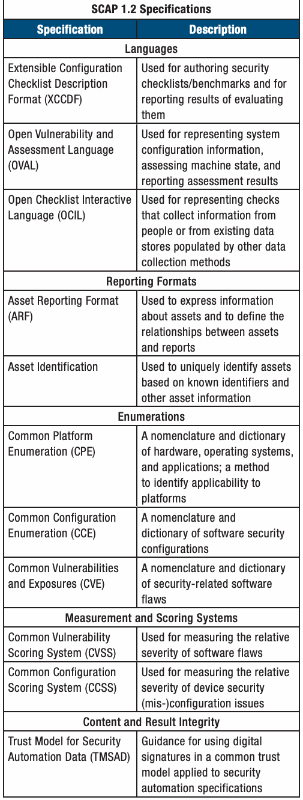
| SCAP 1.2の仕様 | |
| 仕様 | 説明 |
| 言語 | |
| 拡張可能構成チェックリスト記述形式（XCCDF） | セキュリティチェックリスト／ベンチマークの作成と評価結果の報告に使用 |
| オープン脆弱性評価言語（OVAL） | システム構成情報の表現、マシン状態の評価、評価結果の報告に使用 |
| オープンチェックリスト対話言語（OCIL） | 人または他の収集手段で作られた既存データストアから情報を収集するチェックの表現に使用 |
| 報告形式 | |
| 資産報告形式（ARF） | 資産情報を表し、資産とレポートの関係を定義するために使用 |
| 資産識別 | 既知の識別子やその他の資産情報に基づき、資産を一意に識別するために使用 |
| 列挙 | |
| 共通プラットフォーム列挙（CPE） | ハードウェア、OS、アプリケーションの名称体系と辞書。プラットフォームへの適用性を識別する方法 |
| 共通構成列挙（CCE） | ソフトウェアのセキュリティ構成に関する名称体系と辞書 |
| 共通脆弱性識別子（CVE） | セキュリティに関係するソフトウェア欠陥の名称体系と辞書 |
| 測定およびスコアリング方式 | |
| 共通脆弱性評価システム（CVSS） | ソフトウェア欠陥の相対的な深刻度の測定に使用 |
| 共通構成スコアリングシステム（CCSS） | 機器のセキュリティ設定不備の相対的な深刻度の測定に使用 |
| コンテンツと結果の完全性 | |
| セキュリティ自動化データの信頼モデル（TMSAD） | セキュリティ自動化仕様に共通の信頼モデルを適用し、デジタル署名を使用するための指針 |
guidance around the SCAP specifications by promoting broader international adoption of SCAP, encouraging the integration of SCAP into other standards, and by adapting SCAP to address specific gaps and challenges. The following work activities
SCAP仕様の国際的な採用を広げ、他の標準への統合を促し、SCAPを特定の不足や課題に対応させることで、SCAP仕様に関する指針を改善している。主な活動は次のとおり。
未レビュー訳NIST released draft NISTIR 7946, CVSS Implementation Guidance, which guides analysts scoring IT vulnerabilities using the CVSS Version 2.0.That document is the result of applying the CVSS specification to score over 50,000 vulnerabilities analyzed by the NVD. The report reviews the CVSS base metrics and provides guidance for difficult and/or unique scoring situations and assists vulnerability analysts with scoring particular types of vulnerabilities by identifying common keywords and phrases that often appear in vulnerability alerts. The report includes a collection of scored IT vulnerabilities from the NVD, a justification for each score provided, and a description of the NVD vulnerability scoring process. NIST, in collaboration with industry partners in the IETF, established the Security Automation and Continuous Monitoring (SACM) working group, chartered in July 2013. The current scope of work for SACM includes identifying and/or defining the transport protocols and data formats needed to support the collection and evaluation of device state against expected values and standards for interacting with repositories of security automation content.The initial focus of the SACM working group is on identifying use cases, requirements, and architectural
NISTはCVSS実装ガイダンスであるNISTIR 7946草案を公開した。これはCVSSバージョン2.0を使い、IT脆弱性にスコアを付ける分析者を支援する。NVDが分析した5万件を超える脆弱性にCVSS仕様を適用した結果に基づく。レポートはCVSS基本評価指標を解説し、難しい事例や特異な事例の採点指針を示す。また、脆弱性警告によく現れる語句を特定し、特定の種類の脆弱性を採点する分析者を支援する。NVDから採点済み脆弱性を収録し、各スコアの根拠とNVDの採点プロセスを説明する。 NISTはIETFの産業界関係者と協力して、2013年7月にSecurity Automation and Continuous Monitoring（SACM）作業部会を設立した。現在の作業範囲には、機器の状態を期待値と標準に照らして収集・評価するための伝送プロトコルとデータ形式、およびセキュリティ自動化コンテンツのリポジトリとの連携方法の特定・定義が含まれる。作業部会はまず、既存仕様・標準の活用方法、必要な改訂や拡張、対処すべき不足分を判断するユースケース、要件、アーキテクチャを特定する。
未レビュー訳A nomenclature and dictionary models to inform decisions about existing specifications and
名称体系と辞書は、既存の仕様について
未レビュー訳Enumeration (CPE) of hardware, operating systems, standards that can be referenced, required modifications or
CPEはハードウェア、OS、
未レビュー訳extensions to existing specifications and standards, and any gaps that need to be addressed. This working group provides a venue for advancing appropriate SCAP specifications into international standards and addressing identified gap areas.
参照できる標準、既存仕様・標準に必要な修正や拡張、対処すべき不足分を特定する。作業部会は、適切なSCAP仕様を国際標準へ発展させ、不足領域に対処する場を提供する。
未レビュー訳http://datatracker.ietf.org/wg/sacm/charter/ Additionally, NIST collaborated with industry partners to revise the ISO/IEC 19770-2:2009 standard, Information technology --Software asset management -- Part 2: Software identification tag, which establishes a specification for tagging software
http://datatracker.ietf.org/wg/sacm/charter/ さらにNISTは産業界の関係者と協力し、ISO/IEC 19770-2:2009「情報技術—ソフトウェア資産管理—第2部：ソフトウェア識別タグ」を改訂した。同規格はソフトウェアにタグを付ける仕様を定め、
未レビュー訳Common Vulnerability Used for measuring the relative to support identification and management. This software
共通脆弱性識別子は、相対的な深刻度を測定するために使用する。 ソフトウェアを識別する。
未レビュー訳identification (SWID) data model provides a mechanism for software publishers to provide authoritative identification, categorization, software relationship (e.g., dependency, bundling, and patch), file footprint details, and other software metadata for software they publish. This information enhances SCAP use cases by providing authoritative information for creation of CPE names, targeting of checklists, and associating software flaws to products based on a defect in a software library or executable.
ソフトウェア識別（SWID）データモデルにより、ソフトウェア発行者は、公開したソフトウェアの正式な識別、分類、ソフトウェア間の関係（依存、バンドル、パッチなど）、ファイル構成、その他のメタデータを提供できる。この情報は、正式なCPE名の作成、チェックリストの対象指定、ソフトウェアライブラリや実行ファイルの欠陥に基づく製品とソフトウェア欠陥の関連付けなど、SCAPの用途を拡張する。
未レビュー訳原文更新後、再確認待ち
NIST also worked with government and industry partners
NISTはさらに、政府および産業界のTCG関係者と協力し、Trusted Network Connect（TNC）プロトコルに関する複数の仕様を定義した。
未レビュー訳Continuous Monitoring
継続的モニタリング
未レビュー訳in the TCG to define a number of specifications related to the Trusted Network Connect (TNC) protocols. The first such In September 2010, the Department of Homeland Security publication is the TNC SCAP Messages for IF-M specification (DHS) released the Continuous Asset Evaluation, Situational that supports carrying SCAP content and results over the TNC Awareness and Risk Scoring (CAESARS) Reference Architecture protocols. The second is the TNC Enterprise Compliance Profile Report. This report identifies commonality and strengths in (ECP) and related specifications that support the exchange of the custom approaches used by civilian agencies to provide SWID data over the TNC protocols. The ECP enables collection solutions that enable the continuous monitoring of IT systems. of SWID data from a device for use by external tools to provide This report identifies “essential functional components software inventory information. SCAP and SWID data collected of a security risk scoring system, independent of specific using these mechanisms may be optionally used for network technologies, products, or vendors.” It describes the use of access control decision making, allowing device state to be security automation specifications, such as the SCAP, to enable evaluated when devices connect and on an ongoing basis continuous monitoring solutions. thereafter.
最初の文書であるTNC SCAP Messages for IF-M仕様は、TNCプロトコル上でSCAPコンテンツと結果を運ぶ。第2の文書であるTNC Enterprise Compliance Profile（ECP）などの関連仕様は、TNC上でSWIDデータの交換を支援する。ECPにより、外部ツールがソフトウェア資産情報を提供するためのSWIDデータを機器から収集できる。収集したSCAPおよびSWIDデータは、ネットワークアクセス制御の判断にも使える。機器の接続時およびその後も継続して状態を評価できる。 2010年9月、国土安全保障省（DHS）は「継続的な資産評価、状況認識、リスクスコアリング（CAESARS）参照アーキテクチャ」報告書を公開した。この報告書は、民間機関がITシステムを継続的に監視するために独自開発した手法の共通点と長所を特定する。また、特定の技術、製品、ベンダーに依存しないセキュリティリスク評価システムの「不可欠な機能要素」を示し、SCAPなどのセキュリティ自動化仕様を用いて継続的監視を実現する方法を説明する。
未レビュー訳In October 2010, the Federal Chief Information Officer
2010年10月、連邦政府最高情報責任者評議会の
未レビュー訳For more information on these specifications, please visit: Council’s Information Security and Identity Management
情報セキュリティ・アイデンティティ管理委員会
未レビュー訳Committee’s (ISIMC) subcommittee on Continuous Monitoring
（ISIMC）の継続的モニタリング小委員会は、
未レビュー訳http://www.trustedcomputinggroup.org/resources/tnc_
http://www.trustedcomputinggroup.org/resources/tnc_scap_messages_for_ifm
未レビュー訳and Risk Scoring saw the need to create a technical initiative
CAESARSアーキテクチャを拡張し、
未レビュー訳scap_messages_for_ifm, and
SCAP Messages for IF-M仕様。
未レビュー訳to expand upon the CAESARS architecture to better scale it to
大規模組織（例：米国政府全体）へ適用するため、
未レビュー訳http://www.trustedcomputinggroup.org/resources/tnc_ large enterprises (e.g., the entire U.S. Government). A team of endpoint_compliance_profile_specification.
http://www.trustedcomputinggroup.org/resources/tnc_endpoint_compliance_profile_specification
未レビュー訳researchers from the NSA Information Assurance Directorate (IAD), the DHS Federal Network Security CAESARS team, and
国家安全保障局（NSA）情報保証局（IAD）、DHS連邦ネットワーク・セキュリティCAESARSチーム、
未レビュー訳Finally, NIST participated in two Forum of Incident Response
最後に、NISTはインシデント対応・
未レビュー訳NIST’s Information Technology Laboratory (ITL) worked together
NIST情報技術研究所（ITL）の研究者が
未レビュー訳and Security Teams (FIRST) Special Interest Groups (SIG). The
セキュリティチーム・フォーラム（FIRST）の2つの特別利益グループ（SIG）に参加した。そのうち
未レビュー訳to respond to this need. The draft CAESARS Framework
この必要性に対応するため共同作業を行い、CAESARSフレームワーク
未レビュー訳CVSS SIG (CVSS-SIG) focused on defining CVSS Revision 3,
CVSS SIGはCVSS改訂3の定義に取り組んだ。
未レビュー訳Extension (CAESARS-FE) described by Draft NISTIR 7756,
拡張（CAESARS-FE）の草案をNISTIR 7756に記載した。
未レビュー訳which is intended to implement improvements to the scoring
地域社会からの意見に基づき、スコアリングモデルを改善することを目的とする。
未レビュー訳CAESARS Framework Extension: An Enterprise Continuous
「エンタープライズ継続的
未レビュー訳model based on community feedback. The CVSS-SIG plans to
CVSS SIGは2014会計年度初めに改訂草案を公開し、
未レビュー訳Monitoring Technical Reference Architecture, is the output of
モニタリング技術参照アーキテクチャ」は、
未レビュー訳release a draft of the revision in early FY 2014, with a completed
最終承認仕様を2014年夏に公開する予定である。
未レビュー訳this collaboration.
この共同作業の成果である。
未レビュー訳approved specification expected in the summer of 2014. The second SIG, the Vulnerability Reporting and Data eXchange Draft NISTIR 7756 presents an enterprise continuous SIG (VRDX-SIG), researches and recommends methods for monitoring (ConMon) technical reference architecture that identifying and exchanging vulnerability information across extends the framework provided by the DHS’s CAESARS disparate vulnerability databases.
草案NISTIR 7756は、DHSのCAESARSアーキテクチャを拡張するエンタープライズ継続的モニタリング（ConMon）技術参照アーキテクチャを示す。 第2のSIGである脆弱性報告・データ交換SIG（VRDX-SIG）は、複数の脆弱性データベース間で脆弱性情報を特定・交換する方法を調査し、推奨する。
未レビュー訳architecture.The primary goal of this effort is to enable enterprise ConMon by supporting the development and deployment
草案NISTIR 7756は、DHSのCAESARSアーキテクチャを拡張するエンタープライズ継続的モニタリング（ConMon）技術参照アーキテクチャを示す。その主な目標は、
未レビュー訳For more information, please visit:
詳細：
未レビュー訳of capabilities that support automated, enterprise-wide
エンタープライズ全体でConMon機能を自動化する能力の開発・導入を支援することである。
未レビュー訳http://www.first.org/global/sigs.
http://www.first.org/global/sigs
未レビュー訳ConMon functions. The concepts, workflows, and subsystems
本書で示す概念、ワークフロー、サブシステムは、
未レビュー訳Through work with international SDOs, SCAP and related
国際標準化団体との連携を通じて、SCAPおよび関連する
未レビュー訳presented in this document can be used by organizations
連合型クエリ、データ収集タスクのオーケストレーション、
未レビュー訳security automation capabilities are expected to evolve and
セキュリティ自動化機能は今後も進化し、
未レビュー訳seeking to establish federated queries, orchestration of data
データ分析、さまざまなセキュリティ製品やIT製品の
未レビュー訳expand in support of the growing need to define and measure
有効なセキュリティ管理策の定義と測定という高まる需要に
未レビュー訳collection tasks, data analytics, and presentation and reporting
データ収集、表示、報告の機能を構築する際に利用できる。
未レビュー訳effective security controls, assess and monitor ongoing
継続的な情報セキュリティ要素の評価と監視、
未レビュー訳capabilities across a diverse portfolio of security and IT
多様なセキュリティ製品とIT製品全体にわたる機能を支える。CAESARS-FEはIT運用とネットワーク
未レビュー訳aspects of information security, remediate noncompliance,
不適合の是正、
未レビュー訳products. CAESARS-FE supports IT operations and network
防御機能を支援し、
未レビュー訳and successfully manage systems in accordance with the Risk
また、SP 800-37 改訂1で説明するリスク
未レビュー訳defense capabilities, with compliance reporting as a byproduct
実際のセキュリティ監視と改善の副次的成果としてコンプライアンス報告を行う。
未レビュー訳Management Framework described in SP 800-37 Revision 1,
マネジメント・フレームワークに従ってシステムを適切に管理する。
未レビュー訳of actual security monitoring and improvement. CAESARS-FE
CAESARS-FEは、
未レビュー訳Guide for Applying the Risk Management Framework to Federal
SP 800-37 改訂1「連邦情報システムへのリスクマネジメント・フレームワーク適用ガイド：
未レビュー訳enables organizations to design, develop, and deploy ConMon
組織が既存のセキュリティツールやITツールを活用してConMon機能を設計、開発、導入できるようにする。
未レビュー訳Information Systems: A Security Life Cycle Approach.
セキュリティ・ライフサイクル方式」。
未レビュー訳capabilities by leveraging their existing security and IT tools while minimizing custom tool integration efforts. CAESARS-
独自ツールの統合作業は最小限で済む。
未レビュー訳http://scap.nist.gov/
http://scap.nist.gov/
未レビュー訳FE defines the requisite functionality needed to ensure the interoperability of vendor products while continuing to
CAESARS-FEは、ベンダー製品の相互運用性を確保するために必要な機能を定義しつつ、
未レビュー訳Contact:
連絡先：
未レビュー訳encourage security tool vendor participation and innovation.
セキュリティツール・ベンダーの参加と革新も促進する。
未レビュー訳Mr. David Waltermire
David Waltermire 氏
未レビュー訳To advance the state of the art in continuous monitoring
継続的モニタリング機能の最先端化を進め、
未レビュー訳(301) 975-3390
(301) 975-3390
未レビュー訳capabilities and to further interoperability within commercially
市販ツール間の相互運用性をさらに高めるため、
未レビュー訳david.waltermire@nist.gov
david.waltermire@nist.gov
未レビュー訳available tools, CSD is working within the international
CSDは国際的な
未レビュー訳standards development community to establish working groups
原文更新後、再確認待ち
Security Automation Reference Data
セキュリティ自動化の参照データ
未レビュー訳and to author and comment on emerging technical standards in
新たな技術標準の作成とレビューを行っている。
未レビュー訳Through the NVD and the National Checklist Program (NCP),
NVDとNational Checklist Program（NCP）を通じて、
未レビュー訳this area. The CAESARS-FE reference architecture will evolve
CAESARS-FE参照アーキテクチャは発展を続ける。
未レビュー訳NIST is providing relevant and important reference data in the
NISTは脆弱性および構成管理に関する関連性の高い重要な参照データを提供している。
未レビュー訳as greater consensus is developed around interoperable,
相互運用可能で
未レビュー訳areas of vulnerability and configuration management. SCAP,
SCAPと、それを活用するプログラムは、情報保証業界が
未レビュー訳standards-based approaches that enable continuous monitoring
標準ベースの方式について合意が進むにつれ、
未レビュー訳and the programs that leverage it, are moving the information
情報保証業界を、通信の標準化が可能な状態へと導いている。
未レビュー訳of IT systems. In early FY 2014, CSD plans to release an
2014会計年度初めに、CSDは
未レビュー訳assurance industry towards being able to standardize
通信の標準化、関連データの
未レビュー訳update to NISTIR 7756 that provides additional guidance for
NISTIR 7756を更新し、ConMonアーキテクチャとソリューションの開発に関する追加指針を
未レビュー訳communications, and the collection and storage of relevant data
収集と標準形式での保存、
未レビュー訳development of ConMon architectures and solutions based on
継続中の標準化活動とフィードバックに基づく
未レビュー訳in standardized formats, and provide automated means for the
脆弱性と構成への適合性を評価・是正するための
未レビュー訳ongoing standards activities and feedback.
提供する予定である。
未レビュー訳assessment and remediation of systems for both vulnerabilities
システムの評価と是正を自動化する手段を提供している。
未レビュー訳The NIST National Cybersecurity Center of Excellence (NCCoE)
NIST National Cybersecurity Center of Excellence（NCCoE）も、
未レビュー訳and configuration compliance.
構成の適合性を評価する。
未レビュー訳is also working to develop a series of ConMon building blocks that demonstrate cybersecurity solutions that apply across
複数の産業分野に適用できるサイバーセキュリティ・ソリューションを実証するConMon構成要素を開発している。
未レビュー訳ª National Vulnerability Database (NVD)
ª National Vulnerability Database（NVD）
未レビュー訳multiple industry sectors. The first building block, currently under development, proposes a standardized approach to
開発中の最初の構成要素は、
未レビュー訳Security automation reference data is currently housed
セキュリティ自動化の参照データは現在、
未レビュー訳software asset management, providing an organization with
組織がソフトウェア資産を
未レビュー訳within the NVD. The NVD is the U.S. Government repository
NVDに格納されている。NVDは米国政府の
未レビュー訳an integrated view of software throughout its lifecycle. The
ライフサイクル全体にわたって一元的に把握できる、
未レビュー訳of security automation data based on security automation
セキュリティ自動化データのリポジトリである。
未レビュー訳building block will support:
統一的な手法を提案し、次を支援する。
未レビュー訳specifications. This data provides a standards-based foundation
標準ベースの基盤となる。
未レビュー訳 Authorization and verification of software installation
— ソフトウェアのインストール媒体の認可および検証
未レビュー訳for the automation of software asset, vulnerability, and security
ソフトウェア資産、脆弱性、セキュリティ構成管理、セキュリティ測定、
未レビュー訳media – Verifies that the media is from a trusted
インストール媒体が信頼できる
未レビュー訳configuration management; security measurement; and compliance activities. This data supports security automation
コンプライアンス活動を自動化する。このデータはセキュリティ自動化の
未レビュー訳software publisher and that the installation media has
ソフトウェア発行者によるものであり、
未レビュー訳efforts based on the SCAP. The NVD includes databases of
SCAPに基づく取り組みを支援する。NVDには
未レビュー訳not been tampered with
改変されていないことを検証する。
未レビュー訳security configuration checklists for the NCP, listings of publicly
NCPのセキュリティ構成チェックリスト、公開済みの
未レビュー訳 Software execution whitelisting – Verifies that the
— ソフトウェア実行ホワイトリスト：
未レビュー訳known software flaws, product names, and impact metrics. A
ソフトウェア欠陥、製品名、影響指標が含まれる。正式な検証プログラムでは、ベンダー製品が
未レビュー訳software is authorized to run and has not been tampered formal validation program tests the ability of vendor products to with
ソフトウェアの実行が認可され、改ざんされていないことを検証する。 特定のエンタープライズ機能を支援するため、
未レビュー訳use some forms of security automation data based on a product’s conformance in support of specific enterprise capabilities.
製品の適合性に基づき、一部のセキュリティ自動化データを利用できるか試験する。
未レビュー訳 Publication of installed software inventory – A device that securely communicates what software is installed to SCAP defines the structure of standardized software flaws
— インストール済みソフトウェア一覧の公開：機器は、インストール済みソフトウェアを安全に
未レビュー訳and security configuration reference data, also known as
SCAPは、標準化されたソフトウェア欠陥およびセキュリティ構成の参照データの構造を定める。
未レビュー訳an organization-wide database
組織全体のデータベースへ送信する。
未レビュー訳SCAP content. This reference data is provided by the NVD
この参照データをSCAPコンテンツと呼ぶ。NVDが提供する。
未レビュー訳 Software inventory-based network access control – A
— ソフトウェア一覧に基づくネットワークアクセス制御：
未レビュー訳(http://nvd.nist.gov/).
NVD（http://nvd.nist.gov/）が提供する。
未レビュー訳device’s level of access to a network is determined by
機器がネットワークへアクセスできる範囲を、
未レビュー訳The NVD is the U.S. Government repository of standards-
NVDは米国政府の標準ベースの脆弱性管理用参照データリポジトリである。
未レビュー訳what software is or is not present on the device and
その機器に存在する、または存在しないソフトウェアと、
未レビュー訳based vulnerability management reference data. The NVD
NVDは米国政府の標準ベース脆弱性管理参照データを提供する。
未レビュー訳whether its patches are up to date
パッチが最新かどうかで決める。
未レビュー訳provides information regarding security vulnerabilities and configuration settings, vulnerability impact metrics, technical
セキュリティ脆弱性と構成設定に関する情報、脆弱性の影響指標、技術的評価方法、修復支援への参照を提供する。
未レビュー訳The building block document, Continuous Monitoring Building
「継続的モニタリング構成要素：ソフトウェア資産管理」文書は、
未レビュー訳assessment methods, and references to remediation assistance
技術評価方法、修復支援への参照、
未レビュー訳Block: Software Asset Management, can be viewed at http://
http://csrc.nist.gov/nccoe/Building-Blocks/conmon.html を参照。2014会計年度には、
未レビュー訳and IT product identification data. As of October 2013, the NVD
IT製品識別データを提供する。2013年10月時点で、NVDには次の資源が含まれる。
未レビュー訳csrc.nist.gov/nccoe/Building-Blocks/conmon.html. In FY 2014,
チームはこの構成要素の開発を続け、ベンダーと協力してソリューションの実証を行う。これを通じて、
未レビュー訳contained the following resources:
NVDには2013年10月時点で次の資源が含まれていた。
未レビュー訳the team will continue to develop this building block and to work with vendors to develop a solutions demonstration. Through this Over 58,000 vulnerability advisories with an average of 8
CSDは、構成要素が定義する技術的手法を実装する実践手順を一般に公開している。 — 58,000件を超える脆弱性勧告があり、平均して毎日8件
未レビュー訳new vulnerabilities added daily
の新しい脆弱性が追加される。
未レビュー訳process, CSD provides publically available descriptions of the practical steps needed to implement the technical approaches
CSDは、この構成要素が定義する技術的手法を実施する実践手順を一般に公開し、
未レビュー訳 52 SCAP-expressed checklists containing thousands
— SCAP形式のチェックリスト52件。
未レビュー訳defined by the building block.
その手順を説明している。
未レビュー訳of low-level security configuration checks that can be used by SCAP-validated security products to perform
数千件の低レベルのセキュリティ構成チェックを含み、SCAP検証済み製品が
未レビュー訳Contact:
連絡先：
未レビュー訳automated evaluations of system state
システム状態を自動評価できる。
未レビュー訳Mr. David Waltermire (301) 975-3390
David Waltermire 氏 (301) 975-3390
未レビュー訳 173 non-SCAP security checklists (e.g., English prose
— SCAP以外のセキュリティチェックリスト173件（英語の説明文
未レビュー訳david.waltermire@nist.gov
david.waltermire@nist.gov
未レビュー訳guidance and configuration scripts)
による指針や構成スクリプトなど）
未レビュー訳 248 U.S. Computer Emergency Readiness Team (US-CERT) alerts, 2,771 US-CERT vulnerability summaries, and 8,140 SCAP machine-readable software flaw checks
— 米国コンピュータ緊急事態対応チーム（US-CERT）の警告248件、脆弱性概要2,771件、機械処理可能なSCAPソフトウェア欠陥チェック8,140件
未レビュー訳Program and Project Achievements for FY 2013
2013会計年度のプログラムおよびプロジェクトの成果
未レビュー訳 Product dictionary with over 79,000 operating system, numerous organizations. When an attack has the potential to application, and hardware name entries
— 79,000件を超えるOS、アプリケーション、ハードウェア名を収録した製品辞書。 複数の組織のコンピュータシステムに影響する可能性のある攻撃では、
未レビュー訳affect computing systems in multiple organizations,coordination among separate CSIRTs can make it possible to limit the
組織間のCSIRT連携によって被害を抑え、復旧作業を迅速化し、運用セキュリティを高い水準に保てる。
未レビュー訳 42,954 vulnerability advisories translated into Spanish
— 脆弱性勧告42,954件をスペイン語に翻訳した。
未レビュー訳damage caused by an attack, speed recovery operations, and maintain a higher level of operational security.
攻撃による損害を抑え、復旧作業を迅速化し、運用セキュリティをより高い水準に保てる。
未レビュー訳NVD is hosted and maintained by NIST and is sponsored by
NVDはNISTが運営・維持し、
未レビュー訳CSD is working with the Department of Homeland Security
CSDは国土安全保障省（DHS）と協力し、コンピュータセキュリティ・インシデント調整（CSIC）に関する指針を策定している。
未レビュー訳the Department of Homeland Security’s US-CERT.
国土安全保障省のUS-CERTが資金を提供する。
未レビュー訳(DHS) to develop guidance on Computer Security Incident
CSICの目標は、さまざまな
未レビュー訳The use of SCAP data by commercial security products,
世界中の数千組織で使われる商用セキュリティ製品がSCAPデータを利用し、
未レビュー訳Coordination (CSIC). The goal of CSIC is to help diverse
組織群がコンピュータセキュリティ・インシデント対応で効果的に連携できるようにすることである。
未レビュー訳deployed in thousands of organizations worldwide, has
NVDの実効的な到達範囲を拡大した。
未レビュー訳collections of organizations to effectively collaborate in the
コンピュータセキュリティ・インシデント対応で効果的に連携できるようにすることである。
未レビュー訳extended NVD’s effective reach. Increasing demand for NVD
NVDのXMLデータフィードとSCAPコンテンツへの需要増加は、
未レビュー訳handling of computer security incidents. Effective collaboration
効果的な連携には、
未レビュー訳XML data feeds and SCAP-expressed content from the NVD
ウェブサイトから提供され、
未レビュー訳raises numerous issues on how and when to share information
組織間で情報を共有する方法と時期、共有する情報の形式など、多くの課題がある。
未レビュー訳website demonstrates increased adoption of SCAP.
SCAPの採用拡大を示している。
未レビュー訳between organizations, and in what form information should be
共有する情報の形式も定める必要がある。
未レビュー訳NVD continues to play a pivotal role in the Payment Card
NVDは、Payment Card Industry（PCI）の
未レビュー訳shared. Because different organizations may have substantially
共有する必要がある。組織によって、
未レビュー訳Industry (PCI) efforts to mitigate vulnerabilities in credit card
クレジットカードシステムの脆弱性緩和の取り組みで重要な役割を果たす。
未レビュー訳different capabilities for responding to attacks, diagnosing
攻撃対応、原因診断、
未レビュー訳systems. PCI mandates the use of NVD vulnerability severity
PCIは、世界中の決済カードサーバーのリスク測定にNVDの脆弱性深刻度スコアを使うよう求める。
未レビュー訳causes, and handling sensitive attack-related information,
機微な攻撃関連情報を扱う能力は大きく異なるため、
未レビュー訳scores in measuring the risk to payment card servers worldwide
脆弱性パッチの優先順位付けにも利用する。
未レビュー訳guidance must provide a framework to help organizations
組織の違いを超えて相互運用できる枠組みを含む
未レビュー訳and for prioritizing vulnerability patching. PCI’s use of NVD
PCIがNVDの深刻度スコアを使うことは、
未レビュー訳interoperate despite their organizational differences.
指針を策定する必要がある。
未レビュー訳severity scores helps enhance credit card transaction security
クレジットカード取引の安全性を高め、
未レビュー訳This initiative will develop a NIST SP that provides guidance
この取り組みでは、インシデント発生前に組織が共同対応能力を構築する方法を示すNIST特別刊行物（SP）を作成する。
未レビュー訳and protects consumers’ personal information.
クレジットカード取引の安全性を高め、消費者の個人情報を保護する。
未レビュー訳on how organizations can develop collaborative capabilities in
組織が連携能力を発展させる方法について指針を提供する。
未レビュー訳Throughout FY 2013, NVD continued to provide access to
2013会計年度を通じ、NVDは脆弱性参照データとセキュリティチェックリストを提供し続けた。
未レビュー訳advance of incidents in order to be prepared to operate swiftly
インシデント時にも迅速に活動し、連携できるよう備える。
未レビュー訳vulnerability reference data and security checklists. CSD updated
CSDはNVDを更新し、
未レビュー訳and with coordination during incidents. The guidance will
この指針はインシデント時の調整も扱い、
未レビュー訳the NVD to support the latest CPE Naming specification, CPE
最新のCPE命名仕様であるCPE
未レビュー訳cover data handling considerations, such as sensitivity, data
データの機微性や、データ
未レビュー訳2.3, and produces the official CPE dictionary in multiple formats.
2.3をサポートし、正式なCPE辞書を複数形式で生成する。
未レビュー訳collection and retention practices, data standards, redaction,
収集・保持の慣行、データ標準、編集、
未レビュー訳NVD now hosts the list of configuration items, complementing
NVDは、既存の構成チェックリストデータを補完する構成項目一覧も掲載している。
未レビュー訳and use of tools such as anonymization. The guidance will help
匿名化などのツール利用を含む。指針は
未レビュー訳the configuration checklist data already maintained. NVD data
構成チェックリストデータを補完する。NVDのデータは
未レビュー訳incident responders to understand when data can be shared,
インシデント対応者が、情報を共有できる場合、
未レビュー訳is substantially increasing the security of networks worldwide
世界中のネットワークのセキュリティを大きく高めている。
未レビュー訳when it should not be shared, and when sharing is essential.
共有してはならない場合、共有が不可欠な場合を理解できるよう支援する。
未レビュー訳and it is a fundamental component of CSD’s security automation
CSDのセキュリティ自動化基盤の中核である。
未レビュー訳A key element in the approach is the concept of an integrated,
この方式の重要な要素は、統合された
未レビュー訳infrastructure. CSD plans to update and improve the NVD in
CSDは2014会計年度にNVDを更新・改善し、
未レビュー訳functionally-composed incident response team. The objective
機能別に構成されたインシデント対応チームの考え方である。
未レビュー訳FY 2014 to include improvements in user navigation, addition
利用者向けナビゲーションを改善し、
未レビュー訳of a functionally-composed team is to enable each organization
このチーム構成の目的は、
未レビュー訳of references to the SP 800-53 Revision 4 security controls
SP 800-53改訂4のセキュリティ管理策コンテンツへの参照を追加し、
未レビュー訳to contribute most in technical areas where that organization
各組織が専門性と準備度の高い技術分野で最大限貢献し、
未レビュー訳content, and the ability to search, browse, and download
共通構成列挙（CCE）一覧の検索、閲覧、ダウンロードを可能にする。
未レビュー訳has higher relative levels of expertise and readiness, thus
インシデントの検知、分析、封じ込め、根絶、復旧を迅速化する。
未レビュー訳common configuration enumeration (CCE) list data.
共通構成列挙（CCE）一覧データの検索、閲覧、ダウンロード機能。
未レビュー訳speeding incident detection, analysis, containment, eradication, and recovery.
インシデントの検知、分析、封じ込め、根絶、復旧を加速する。
未レビュー訳http://nvd.nist.gov
http://nvd.nist.gov
未レビュー訳In FY 2014, CSD plans to complete a Draft Special Publication providing guidance for Computer Security Incident Coordination
2014会計年度、CSDはコンピュータセキュリティ・インシデント調整に関する指針を示す特別刊行物の草案を完成させる予定である。
未レビュー訳Contact:
連絡先：
未レビュー訳and organize a workshop focused on the issues of incident
また、インシデント調整に焦点を当てた
未レビュー訳Mr. Harold Booth
Harold Booth 氏
未レビュー訳coordination.
ワークショップを開催する。
未レビュー訳(301) 975-8441 harold.booth@nist.gov
(301) 975-8441 harold.booth@nist.gov
未レビュー訳Contacts: Mr. Lee Badger
連絡先：Lee Badger 氏
未レビュー訳Mr. David Waltermire
David Waltermire 氏
未レビュー訳(301) 975-3176
(301) 975-3176
未レビュー訳(301) 975-3390
(301) 975-3390
未レビュー訳ª Computer Security Incident Coordination lee.badger@nist.gov
ª コンピュータセキュリティ・インシデント調整 lee.badger@nist.gov
未レビュー訳david.waltermire@nist.gov
david.waltermire@nist.gov
未レビュー訳Recognizing that even well-engineered and administered computing systems are sometimes successfully attacked, it is
十分に設計・管理されたコンピュータシステムであっても攻撃に成功される場合があると認識し、
未レビュー訳ª Incident Handling Automation
ª インシデント対応の自動化
未レビュー訳important to establish and maintain processes and procedures to recover from attacks when defensive mechanisms are
防御機構を突破された後に復旧するためのプロセスと手順を確立・維持することが重要である。
未レビュー訳In recent years, security threats to digital systems have
近年、デジタルシステムに対するセキュリティ脅威は
未レビュー訳breached. NIST Special Publication (SP) 800-61 Revision 2,
侵害された。NIST特別刊行物（SP）800-61改訂第2版、
未レビュー訳become more prevalent and more sophisticated. While some
増加し、巧妙化している。一部の
未レビュー訳Computer Security Incident Handling Guide, provides guidance
「コンピュータセキュリティインシデント対応ガイド」は、
未レビュー訳security threats are generic in nature, others are targeted at
セキュリティ脅威は一般的なものだが、他の脅威は
未レビュー訳on establishing and operating a Computer Security Incident
コンピュータセキュリティインシデント対応チーム（CSIRT）の設立と運用に関する指針を示す。広範囲の攻撃は
未レビュー訳specific organizations, assets, and missions.Although computer
特定の組織、資産、任務を標的とする。コンピュータ
未レビュー訳Response Team (CSIRT). A wide-ranging attack may affect
影響を及ぼす可能性がある。
未レビュー訳原文更新後、再確認待ち
security defenses may forestall many threats, not all can be
セキュリティ防御で多くの脅威を阻止できても、すべてを
未レビュー訳National Checklist Program (NCP)
国家チェックリストプログラム（NCP）
未レビュー訳prevented, and organizations must therefore develop incident handling capabilities. Incident handling encompasses a variety There are many threats to information technology (IT), ranging of tasks ranging from preparation prior to an incident, to timely from remotely launched network service exploits to malicious detection and analysis of an incident, to recovery and repair code spread through infected emails, websites, and downloaded from the effects of an incident, to post-incident learning and files. Vulnerabilities in IT products are discovered daily, and improvement. These tasks need to be performed both internally many ready-to-use exploitation techniques are widely available within specific organizations and externally via coordination on the Internet. Because IT products are often intended for a
ITには、ネットワークサービスへの遠隔攻撃から、感染した電子メール、ウェブサイト、ダウンロードファイルを介して拡散する悪意あるコードまで、多くの脅威がある。IT製品の脆弱性は日々発見され、すぐに使える攻撃手法もインターネット上で広く入手可能である。製品は多様な利用者を対象としているため、通常、厳格なセキュリティ設定は既定で無効であり、多くの製品は出荷時の状態ですぐに脆弱となる。NISTはチェックリスト開発を促進し、整理・利用しやすくするためNCPを設立した。これは、
未レビュー訳wide variety of audiences, restrictive security configuration
多様な利用者を想定しているため、制限的なセキュリティ設定は
未レビュー訳across teams of collaborating organizations.
協働する組織のチーム間で実施する。
未レビュー訳controls are usually not enabled by default. As a result, many
通常、既定で有効になっていない。その結果、多くの
未レビュー訳In the past year,NIST worked with the Department of Homeland
過去1年間、NISTは国土安全保障省の
未レビュー訳out-of-the box IT products are immediately vulnerable. In
市販状態のIT製品は直ちに脆弱である。さらに、
未レビュー訳Security’s United States Computer Emergency Readiness Team
米国コンピュータ緊急事態対応チーム（US-CERT）と協力し、
未レビュー訳addition, identifying a reasonable set of security settings that
バランスの取れたリスク管理を実現する設定一式を特定することは、
未レビュー訳(US-CERT) to develop Revision 2 of NIST Special Publication
NIST SP 800-61「コンピュータセキュリティインシデント対応ガイド」改訂第2版を策定した。この
未レビュー訳achieve balanced risk management is a complicated, arduous,
経験豊富なシステム管理者であっても、
未レビュー訳800-61, Computer Security Incident Handling Guide. This
文書はインシデント対応能力の開発に関する指針を示す。
未レビュー訳and time-consuming task, even for experienced system
複雑で骨の折れる、
未レビュー訳document provides guidance on developing incident handling
時間のかかる作業である。
未レビュー訳administrators.
インシデントの性質、対応プロセス、CSIRTの構成と運用を説明し、インシデントへの対応や他組織との調整に関する指針を示す。
未レビュー訳capabilities. The document explains the nature of incidents and incident handling processes, the structure and operation To facilitate development of security configuration checklists of Computer Security Incident Response Teams (CSIRT), and for IT products and to make checklists more organized and provides guidance on handling an incident and coordinating usable, NIST established the National Checklist Program
チェックリストを作成し、整理して使いやすくするため、NISTは国家チェックリストプログラム（NCP）を設立した。
未レビュー訳(NCP) in furtherance of its statutory responsibilities under
他の組織との調整を含む。
未レビュー訳with other organizations.
2002年の連邦情報セキュリティマネジメント法（FISMA）、
未レビュー訳the Federal Information Security Management Act (FISMA) of
SP 800-61改訂第2版は、主にインシデント対応の手動（人による）プロセスと、
未レビュー訳SP 800-61 Revision 2 focuses primarily on manual (human)
公法107-347、およびサイバーセキュリティ研究開発法に基づく法定責務を推進する。
未レビュー訳2002, Public Law 107-347, and also under the Cyber Security
インシデントに関する情報の重要性や共有可否について、適用される規制・法律に基づく人間の判断を効果的に用いることに重点を置く。
未レビュー訳processes for incident handling and the effective use of human
NISTに対し、「設定およびオプション選択を定めるチェックリストを策定し、必要に応じて改訂する」よう求めている。
未レビュー訳Research and Development Act, which tasks NIST to “develop,
どのインシデント関連情報が重要で、何を共有できるかを
未レビュー訳judgment, guided by applicable regulation and law, regarding
連邦政府内で広く使用される、または使用される可能性がある各コンピュータハードウェア／ソフトウェアシステムに伴うセキュリティリスクを最小化する。
未レビュー訳and revise as necessary, a checklist setting forth settings and
判断する。
未レビュー訳which incident-related information is significant and which
セキュリティ脅威の増加により、
未レビュー訳option selections that minimize the security risks associated
より機動的なインシデント対応の枠組みが必要となっている。
未レビュー訳incident-related information may be shared. The growing
連邦政府内で広く使用される、または使用される可能性がある各コンピュータシステムについて。
未レビュー訳with each computer hardware or software system that is, or is
各コンピュータハードウェアまたはソフトウェアシステムについて。
未レビュー訳volume of security threats, however, is driving the need for a
広く使用されている、または使用される可能性がある。
未レビュー訳likely to become, widely used within the Federal Government.”
連邦政府内で。
未レビュー訳more agile incident-handling framework that can operate at
必要に応じて異なる規模と速度で運用できる。
未レビュー訳In February 2008, revised Part 39 of the Federal Acquisition
2008年2月、連邦調達規則（FAR）第39部の改訂版が公表された。
未レビュー訳differing scales and speeds as required.
要求されるさまざまな規模と速度に対応できる。
未レビュー訳Regulation (FAR) was published. Paragraph (d) of section 39.101
第39.101条(d)項は、次のように定めている。
未レビュー訳Working in concert with the DHS, NIST is expanding existing states, “In acquiring information technology, agencies shall incident handling guidance to enable coordinated information include the appropriate IT security policies and requirements, sharing across disparate CSIRTs operating at differing scales including use of common security configurations available and speeds. This work will include the analysis of standardized from the NIST website at http://checklists.nist.gov. Agency incident handling data models and the incorporation of these contracting officers should consult with the requiring official to data models, as appropriate, into both CSIRT information sharing ensure the appropriate standards are incorporated.” processes as well as incident/threat knowledge repositories.
国土安全保障省と連携し、NISTは既存のインシデント対応指針を拡張し、異なる規模・速度で活動する複数のCSIRT間で情報共有を調整できるようにしている。この作業では、標準化されたインシデント対応データモデルを分析し、必要に応じてCSIRT間の情報共有プロセスとインシデント／脅威知識リポジトリの双方に取り入れる。
未レビュー訳In Memorandum M-08-22, the Office of Management and
行政管理予算局（OMB）は、
未レビュー訳This work will describe how mature CSIRTs may operate in a
成熟したCSIRTが、
未レビュー訳Budget (OMB) mandated the use of SCAP-validated products for
メモランダムM-08-22において、
未レビュー訳diverse information-sharing network with both operational and
運用面と戦略面のCSIRT、および業界の知識リポジトリの双方を含む
未レビュー訳continuous monitoring of Federal Desktop Core Configuration
連邦デスクトップ・コア構成（FDCC）への
未レビュー訳strategic CSIRTs, as well as industry knowledge repositories.
多様な情報共有ネットワークで活動する方法を説明する。
未レビュー訳(FDCC) compliance. The NCP strives to encourage and make
準拠の継続的監視にSCAP検証済み製品を使うよう義務付けた。
未レビュー訳This may include selective use of security automation where
該当する場合には、セキュリティ自動化を選択的に利用することがある。
未レビュー訳simple agencies’ compliance with these mandates.
NCPは各機関がこれらの義務を容易に遵守できるよう支援する。
未レビュー訳applicable.
適用可能な場合。
未レビュー訳The goals of the NCP are to:
NCPの目標は次のとおり。
未レビュー訳In FY 2014, this work will develop Draft SP 800-150,
2014会計年度に、この作業ではSP 800-150草案を作成する。
未レビュー訳 Facilitate development and sharing of checklists by
チェックリスト開発者がNISTにチェックリストを提出するための正式な枠組みを提供し、
未レビュー訳Coordinated Computer Security Incident Handling Guidance.
「コンピュータセキュリティインシデント対応調整ガイダンス」。
未レビュー訳providing a formal framework for checklist developers to submit checklists to NIST
チェックリストの提出を促進し、共有する。
未レビュー訳Contacts: Mr. Lee Badger
連絡先：Lee Badger氏
未レビュー訳Mr. David Waltermire
David Waltermire氏
未レビュー訳 Provide guidance to developers to help them create
開発者が作成できるよう指針を提供する。
未レビュー訳(301) 975-3176
(301) 975-3176
未レビュー訳(301) 975-3390
(301) 975-3390
未レビュー訳standardized, high-quality checklists that conform to
共通運用環境に適合する
未レビュー訳lee.badger@nist.gov
lee.badger@nist.gov
未レビュー訳david.waltermire@nist.gov
david.waltermire@nist.gov
未レビュー訳common operations environments
標準化され、品質の高いチェックリスト。
未レビュー訳 Help developers and users by providing guidelines for making checklists better documented and more usable
チェックリストをより適切に文書化し、使いやすくする指針を提供して、開発者と利用者を支援する。
未レビュー訳Program and Project Achievements for FY 2013
2013会計年度のプログラムおよびプロジェクトの成果
未レビュー訳 Encourage software vendors and other parties to develop is submitted. The submission is validated upon review, and a checklists
ソフトウェアベンダーなどによるチェックリスト開発を促進する。提出されたチェックリストはレビュー時に検証され、基準に基づく承認または却下を示す報告書が提出組織に返却される。
未レビュー訳report is returned to the submitting organization, verifying either acceptance or rejection based on the criteria requirements.
要件。
未レビュー訳 Provide a managed process for the review, update, and
チェックリストのレビュー、更新、
未レビュー訳For instance, Tier III and Tier IV checklists require validation
例えば、Tier IIIおよびTier IVのチェックリストは検証を要する。
未レビュー訳maintenance of checklists
保守のための管理プロセスを提供する。
未レビュー訳using the SCAP Content Validation Tool (this tool is available for download via http://scap.nist.gov/revision/1.2/#tools).
SCAPコンテンツ検証ツールを用いる（http://scap.nist.gov/revision/1.2/#tools からダウンロード可能）。
未レビュー訳 Provide an easy-to-use repository of checklists
使いやすいチェックリストのリポジトリを提供する。
未レビュー訳The NCP is defined in SP 800-70 Revision 2, National
NCPはSP 800-70改訂第2版「IT製品向け国家チェックリストプログラム：
未レビュー訳 Encourage the use of automation technologies (e.g.,
チェックリスト適用に自動化技術（例：
未レビュー訳Checklist Program for IT Products—Guidelines for
IT製品向けチェックリストプログラム —
未レビュー訳SCAP) for checklist application
チェックリストの適用にSCAPを利用することを促進する。
未レビュー訳Checklist Users and Developers, which can be found at http://csrc.nist.gov/publications/PubsSPs.html.
「チェックリスト利用者および開発者向けガイドライン」は、http://csrc.nist.gov/publications/PubsSPs.html に掲載されている。
未レビュー訳There are 225 checklists posted on the website; 52 of the checklists are SCAP-expressed and can be used with SCAP-
ウェブサイトには225件のチェックリストが掲載され、そのうち52件はSCAP形式で、SCAP検証済み製品に利用できる。
未レビュー訳http://checklists.nist.gov
http://checklists.nist.gov
未レビュー訳validated products. In FY 2013, a total of 16 SCAP-expressed checklists were contributed to the NCP from other federal
2013会計年度には、他の連邦機関および製品ベンダーからSCAP形式チェックリストが計16件NCPに提供された。
未レビュー訳Contact:
連絡先：
未レビュー訳agencies and product vendors.
機関および製品ベンダー。
未レビュー訳Mr. Stephen Quinn
Stephen Quinn氏
未レビュー訳Organizations can use checklists obtained from the NCP
NCPのチェックリストを利用できる。
未レビュー訳(301) 975-6967
(301) 975-6967
未レビュー訳website for automated security configuration patch assessment.
自動化されたセキュリティ構成のパッチ評価に使用する。
未レビュー訳stephen.quinn@nist.gov
stephen.quinn@nist.gov
未レビュー訳NCP currently hosts SCAP checklists for Internet Explorer 9.0, Internet Explorer 10.0, Office 2010, Red Hat Enterprise Linux, Windows 7, Windows 8, Windows Server 2012, and other
NCPは現在、Internet Explorer 9.0／10.0、Office 2010、Red Hat Enterprise Linux、Windows 7／8、Windows Server 2012などのSCAPチェックリストをホストする。
未レビュー訳ª United States Government Configuration
米国政府構成
未レビュー訳products.
製品。
未レビュー訳Baseline (USGCB) / FDCC Baselines
ベースライン（USGCB）／FDCCベースライン
未レビュー訳To assist users in identifying automated checklist content, NCP groups checklists into tiers, from Tier I to Tier IV. NCP The United States Government Configuration Baseline uses the tiers to rank checklists according to their automation (USGCB) initiative creates security configuration baselines for capability. Tier III and IV checklists include SCAP content and information technology (IT) products widely deployed across the have been validated by the SCAP content validation tool as federal agencies. The project evolved from the Federal Desktop conforming to the requirements outlined in SP 800-126, The Core Configuration (FDCC) mandate originally described in a Technical Specification for the Security Content Automation March 2007 memorandum from the U.S. White House Office Protocol (SCAP). Tier IV checklists are considered production- of Management and Budget (Memorandum M-07-11). USGCB ready and have been validated by NIST or a NIST recognized helps to improve information security and reduce overall IT authoritative entity to ensure, to the maximum extent possible, operating costs by providing commonly accepted security interoperability with SCAP-validated products.
USGCBイニシアチブは、連邦機関に広く導入されているIT製品のセキュリティ構成ベースラインを作成する。2007年3月のOMBメモ（M-07-11）で示されたFDCC義務から発展した。USGCBは、広く受け入れられた共通セキュリティ構成を提供し、情報セキュリティの改善とIT運用コスト全体の削減を目指す。
未レビュー訳configurations for major operating systems.
主要なオペレーティングシステム向けの共通セキュリティ構成。
未レビュー訳Tier III checklists use SCAP content to document security Through the National Checklist Program described in SP settings and should be compatible with SCAP-validated 800-70 Revision 2, National Checklist Program for IT Products: products. Tier II checklists document recommended security Guidelines for Checklist Users and Developers, a baseline settings in a machine-readable, nonstandard format, such as submitter may express interest in submitting a candidate for a proprietary format or a product-specific configuration script. use in the USGCB program. Tier I checklists are prose-based and contain no machine-
NCPはチェックリストをTier IからIVに分類し、自動化機能に応じて順位付けする。Tier III／IVはSCAPコンテンツを含み、SP 800-126「SCAPコア技術仕様」の要件への適合が検証済みである。Tier IVは本番利用可能とみなされ、NISTまたは認定機関が検証し、SCAP検証済み製品との相互運用性を可能な限り確保する。
未レビュー訳CSD provides ongoing support for the USGCB automation
CSDはUSGCB自動化コンテンツを継続的に支援している。
未レビュー訳readable content. Users can browse the checklists based on
Tier IIIはSCAPコンテンツでセキュリティ設定を記録し、SCAP検証済み製品との互換性を持つ。Tier IIは独自形式や製品固有スクリプトなど、機械可読な非標準形式で推奨設定を記録する。Tier Iは文章形式で機械可読コンテンツを含まない。
未レビュー訳content, including the creation of patch updates, assisting
パッチ更新の作成などを含む。
未レビュー訳the checklist tier, IT product, IT product category, or authority,
USGCB利用者が情報システムのセキュリティ準拠を継続的に監視・評価するのを支援する。
未レビュー訳USGCB users in continuously monitoring and assessing security
利用者はTier、IT製品、製品カテゴリ、権限機関で閲覧できるほか、チェックリスト名や概要を対象とするキーワード検索もできる。
未レビュー訳and also through a keyword search that searches the checklist
この継続的な監視
未レビュー訳compliance of information systems. This ongoing monitoring
検索結果には詳細なチェックリスト情報およびSCAPコンテンツへのリンクが表示される。
未レビュー訳name and summary for user specified terms. The search results
は、
未レビュー訳element supports the Risk Management Framework described in
SP 800-37改訂第1版「連邦情報システムへのリスク管理フレームワーク適用ガイド：セキュリティライフサイクル・アプローチ」で説明するリスク管理フレームワークを支援する。
未レビュー訳show the detailed checklist metadata and a link to any SCAP
関連する補助資料へのリンクも表示する。
未レビュー訳SP 800-37 Revision 1, Guide for Applying the Risk Management
ライフサイクル・アプローチ。
未レビュー訳content for the checklist, as well as links to any supporting
チェックリスト開発者を支援するため、NCPは
未レビュー訳Framework to Federal Information Systems: A Security Life
2013会計年度に、Microsoft Windows XP、Vista、7向けの補足的なUSGCB SCAP 1.0コンテンツが公開され、
未レビュー訳resources associated with the checklist.
提出および保守を容易にする手動・自動インターフェースを提供する。
未レビュー訳Cycle Approach.
問題の修正を行った。
未レビュー訳To assist checklist developers, the NCP provides both
手動インターフェースは、
未レビュー訳During FY 2013, a supplemental USGCB SCAP 1.0 content for
チェックリストのTier、製品、カテゴリ、権限機関別に閲覧できる。
未レビュー訳manual and automated interfaces to facilitate submission and
検索結果からチェックリストの関連資料にアクセスできる。
未レビュー訳Microsoft Windows XP, Vista and 7 was released to correct an
NISTは提出・保守プロセスを支援する手動および自動インターフェースを提供する。
未レビュー訳maintenance processes. The manual interface consists of a
手動インターフェースは、
未レビュー訳issue with directory server performance caused by the existing
ディレクトリサーバーの性能に関する問題は、既存の
未レビュー訳web application that guides the submitter through the data
提出者が入力作業を進められるウェブアプリケーションを用意し、
未レビュー訳USGCB content.
USGCBコンテンツ。
未レビュー訳entry process to ensure that all of the required information
必要な情報をすべて確実に提出できるようにする。
未レビュー訳Computer Security Division Annual Report - 2013
コンピュータセキュリティ部門年次報告書 — 2013年
未レビュー訳The USGCB Program will continue in FY 2014 to provide Common Configuration Enumeration (CCE) number, which will ongoing maintenance of the baseline artifacts and to consider aid in long-term tracking of the setting. Once these settings additional applicable platforms.
USGCBプログラムは2014会計年度もベースライン成果物を維持し、対象プラットフォームの拡大を検討する。 各設定には共通構成列挙（CCE）番号を付与し、長期的な追跡を可能にする。Appleによる審査・整理を経た設定を試験し、構成ベースラインに含める。
未レビュー訳are vetted and curated by Apple, these settings will be tested and included in the configuration baselines. In addition, CSD
設定がAppleによって検証・整理された後、試験して構成ベースラインに含める。さらにCSDは
未レビュー訳Contact:
連絡先：
未レビュー訳is producing a draft guideline, Guide to Securing Apple OS X 10.8 Systems for IT Professionals. This guidance, similar in
IT専門家向けガイド「Apple OS X 10.8システムのセキュリティ保護」の草案を作成中である。このガイドは
未レビュー訳Mr. Stephen Quinn (301) 975-6967
Stephen Quinn 氏 (301) 975-6967
未レビュー訳structure to the NIST SP 800-68, Windows XP Security Guide,
NIST SP 800-68「Windows XPセキュリティガイド」と同様の構成で、
未レビュー訳stephen.quinn@nist.gov
stephen.quinn@nist.gov
未レビュー訳will provide detailed information about the security of Apple OS X 10.8, and will provide security configuration guidelines for the Apple OS X 10.8 operating system.
Apple OS X 10.8のセキュリティに関する詳細と、OSのセキュリティ構成指針を示す。
未レビュー訳ª Apple OS X Security Configuration
ª Apple OS Xのセキュリティ構成
未レビュー訳In FY 2014, CSD plans to complete the scripts for the remaining initial settings and post them to the Apple community
2014会計年度、CSDは残りの初期設定用スクリプトを完成させ、Appleコミュニティに公開して
未レビュー訳CSD is working with Apple to develop secure system
CSDはAppleと協力し、安全なシステム構成ベースラインを
未レビュー訳for feedback. CSD will also continue the development of
フィードバックを得る。CSDはさらに、
未レビュー訳configuration baselines supporting different operational
さまざまな運用環境に対応する
未レビュー訳the draft Guide to Securing Apple OS X 10.8 Systems for IT
IT専門家向けApple OS X 10.8セキュリティガイド草案の作成を継続し、
未レビュー訳environments for Apple OS X, Version 10.8, Mountain Lion.
Apple OS Xバージョン10.8（Mountain Lion）向けに策定している。
未レビュー訳Professionals; this documentation will then be made available
文書を公開意見募集に付す。
未レビュー訳These configuration guidelines will assist organizations with
組織がOS X技術を堅牢化する際に役立つ。
未レビュー訳for public comment.
一般公開する。
未レビュー訳hardening OS X technologies and provide a basis for unified controls and settings for OS X workstations and for mobile
OS Xワークステーションと連邦機関のモバイル端末に共通の管理策および設定の基盤を提供する。
未レビュー訳Contacts:
連絡先：
未レビュー訳system security configurations for federal agencies.
連邦機関向けに統一されたシステムセキュリティ構成の基盤を提供する。
未レビュー訳Mr. Lee Badger
Lee Badger 氏
未レビュー訳Ms. Kathy Ton-Nu
Kathy Ton-Nu 氏
未レビュー訳The configurations will be based on a collection of resources, (301) 975-3176
構成は、複数の既存資源を集約して作成する。
未レビュー訳(301) 975-3361
(301) 975-3361
未レビュー訳including the existing NIST OS X configuration guidance, the OS lee.badger@nist.gov
NISTの既存OS X構成指針、OS
未レビュー訳kathy.ton-nu@nist.gov
kathy.ton-nu@nist.gov
未レビュー訳X security configuration guide, the Department of Defense (DoD)
Xセキュリティ構成ガイド、国防総省（DoD）の
未レビュー訳Mr. Lawrence Keys
Lawrence Keys 氏
未レビュー訳OS X Recommended Settings, and the Defense Information
OS X推奨設定、国防情報システム局（DISA）の
未レビュー訳(301) 975-5482
(301) 975-5482
未レビュー訳Systems Agency (DISA) OS X Security Technical Implementation
OS Xセキュリティ技術実装ガイド
未レビュー訳lawrence.keys@nist.gov
lawrence.keys@nist.gov
未レビュー訳Guide (STIG). Our team is aggregating appropriately 400 initial settings, determining which settings will be included in the configuration baseline, and determining appropriate values for Validation Programs each included setting. As the desired configuration items are established, our team is developing shell scripts that apply the
（STIG）などである。チームは初期設定約400件を集約し、ベースラインに含める設定と各設定の適切な値を決めている。構成項目が確定するにつれ、設定をOS X 10.8システムへ適用するシェルスクリプトを開発している。 検証プログラム
未レビュー訳ª Security Content Automation Protocol
ª セキュリティ・コンテンツ自動化プロトコル
未レビュー訳settings to an OS X 10.8 system. The settings are organized
これらの設定をOS X 10.8システムに適用する。設定は
未レビュー訳(SCAP) Validation Program
（SCAP）検証プログラム
未レビュー訳into three key baselines, which are appropriate for different environments:
異なる環境に適した3種類の主要なベースラインに分類する。
未レビュー訳The SCAP Validation Program performs conformance testing
SCAP検証プログラムは、製品がSCAPを正しく実装しているか
未レビュー訳 Enterprise baseline is appropriate for centrally managed, to ensure that products correctly implement SCAP as defined networked systems.
— エンタープライズ・ベースラインは、集中管理されるネットワークシステムに適している。
未レビュー訳in SP 800-126 Revision 2, The Technical Specification for the Security Content Automation Protocol (SCAP): SCAP Version 1.2.
SP 800-126改訂2「セキュリティ・コンテンツ自動化プロトコル（SCAP）の技術仕様：SCAPバージョン1.2」に定める仕様への適合試験を行う。
未レビュー訳 Small Office Home Office baseline is appropriate for
— 小規模オフィス／ホームオフィス（SOHO）ベースラインは、
未レビュー訳Conformance testing is necessary because SCAP is a complex
適合試験が必要なのは、SCAPが11の個別仕様から成る複雑な
未レビュー訳systems that are deployed remotely but need to connect
遠隔地に配備されていても、
未レビュー訳specification consisting of eleven individual specifications
仕様であり、各仕様が連携してさまざまな用途を支えるためである。
未レビュー訳to enterprise networks.
企業ネットワークへの接続が必要なシステムに適している。
未レビュー訳that work together to support various use cases. A single error in product implementation could result in undetected
製品実装に誤りが一つあるだけで、機関や業界のネットワークに脆弱性が見逃されたり、ポリシー違反が生じたりする。
未レビュー訳 Special Security Limited Functionality baseline is
— 高度なセキュリティ・機能制限ベースラインは、
未レビュー訳vulnerabilities or policy noncompliance within agency and
ネットワーク内で未検知の脆弱性やポリシー違反を招くおそれがある。
未レビュー訳appropriate for systems where security requirements are
セキュリティ要件がより厳格であり、
未レビュー訳industry networks.
業界ネットワーク内で生じる可能性がある。
未レビュー訳more stringent and where the implementation of security safeguards is likely to reduce functionality.
セキュリティ対策により機能が制限される可能性が高いシステムに適している。
未レビュー訳In FY 2013, CSD updated the SCAP Validation Program to support the testing of products against SCAP version 1.2. The
2013会計年度、CSDはSCAPバージョン1.2の製品試験を支援するため、SCAP検証プログラムを更新した。
未レビュー訳SCAP, defined and discussed in other sections of this report,
本報告書の別項で説明したSCAPは、
未レビュー訳division published NISTIR 7511 Revision 3, Security Content
部門はNISTIR 7511改訂3「SCAPバージョン1.2検証プログラム試験要件」を公開した。
未レビュー訳is used to express configuration settings and check system
構成設定を表し、システム構成
未レビュー訳Automation Protocol (SCAP) Version 1.2 Validation Program
SCAPバージョン1.2検証プログラム試験要件
未レビュー訳configuration compliance.
の適合性を確認するために使用される。
未レビュー訳Test Requirements, which introduces a modular approach
プラットフォームに関するモジュール方式を導入した。
未レビュー訳During FY 2013, CSD provided a block of initial settings with respect to the platforms that vendors may support. Public to Apple and these settings are being posted for the Apple validation test content was published , thus providing reference community on a periodic basis for public review, discussion, materials that support conformance testing by industry and correction and agreement. Each setting will have a designated end users. The SCAP 1.2 public test content provides vendors
2013会計年度、CSDはAppleに初期設定一式を提供した。これらの設定はAppleコミュニティで定期的に公開し、レビュー、議論、修正、合意を得ている。各設定に共通構成列挙（CCE）番号を付け、設定を長期的に追跡できるようにする。 公開されたSCAP 1.2試験コンテンツは、業界とエンドユーザーの適合試験を支援する参照資料となる。
未レビュー訳with the materials required for quality assurance testing prior the public can choose cryptographic modules and/or products to entering formal SCAP testing by an NVLAP accredited SCAP containing cryptographic modules from the CMVP Validated lab. The SCAP Validation Program resources web page was Modules List and have confidence in the claimed level of introduced to provide the public with a centralized location for security and assurance of correct implementation. all resources and information necessary to prepare products
原文更新後、再確認待ち
Cryptographic algorithm and cryptographic module testing
暗号アルゴリズムおよび暗号モジュールの試験
未レビュー訳for SCAP 1.2 validation. The resources provided include
SCAP 1.2検証のために提供した資源には、
未レビュー訳and validation are based on underlying published standards .
検証は、公表済みの基礎標準に基づいている。
未レビュー訳documentation, a list of Frequently Asked Questions (FAQ),
文書、よくある質問（FAQ）、
未レビュー訳As federal agencies are required to use validated cryptographic
連邦機関は、機微な非機密情報の保護に
未レビュー訳the SCAP test content, and tools for validating and processing
SCAP試験コンテンツ、
未レビュー訳modules for the protection of sensitive non-classified
検証済み暗号モジュールを使用することが義務付けられているため、
未レビュー訳SCAP data streams. CSD updated the SCAP Content Validation
SCAPデータストリームを検証・処理するツールも含む。CSDはSCAPコンテンツ検証
未レビュー訳information, the validated modules and the validated algorithms
検証済みモジュールと、それに含まれる検証済みアルゴリズムは、
未レビュー訳Tool (SCAPVal), used for validating that data streams adhere to
ツール（SCAPVal）を更新し、
未レビュー訳that the modules contain represent the culmination and delivery
部門の暗号関連業務を利用者に届ける最終成果である。
未レビュー訳the SCAP specification, to include support for SCAP 1.2. The
SCAP仕様への適合性を確認する同ツールに、SCAP 1.2対応を追加した。
未レビュー訳of the division’s cryptography-based work to the end user.
暗号関連業務の成果を利用者に届けるものである。
未レビュー訳update for SCAP 1.2 included open source SCAP reference
SCAP 1.2の更新には、SCAPデータストリームを処理するオープンソースの参照実装ツールが含まれる。
未レビュー訳The CAVP and the CMVP are separate, collaborative
CAVPとCMVPは、
未レビュー訳implementation tools that are used to process SCAP data
オープンソースのSCAP参照実装ツールも含まれ、SCAPデータストリームの処理に使われる。
未レビュー訳programs based on a partnership between NIST’s CSD and the
NISTのCSDと
未レビュー訳streams.
データストリームを処理する。
未レビュー訳Communication Security Establishment Canada (CSEC).. The
カナダ通信保安局（CSEC）の協力に基づく別々のプログラムである。
未レビュー訳End users may use the SCAP Validation Program resources
エンドユーザーは検証プログラムの詳細や
未レビュー訳CAVP and the CMVP validate algorithms and modules used in
CAVPとCMVPは、
未レビュー訳page to learn more about the validation program and download
資料のダウンロードに検証プログラムの資源ページを利用できる。
未レビュー訳a wide variety of products, including secure Internet browsers,
セキュアなインターネットブラウザー、
未レビュー訳reference materials. The program currently has seven
現在、SCAP 1.2製品試験の
未レビュー訳secure radios, smart cards, space based communications,
セキュア無線機、スマートカード、宇宙通信、
未レビュー訳independent laboratories accredited for SCAP 1.2 product
認定を受けた独立試験所は7か所ある。
未レビュー訳munitions, security tokens, mobile phones, network and storage
弾薬、セキュリティトークン、携帯電話、ネットワーク・ストレージ機器、
未レビュー訳testing and several products are undergoing testing.
複数の製品が現在試験中である。
未レビュー訳devices, and products supporting Public Key Infrastructure
公開鍵基盤（PKI）や電子商取引を支援する製品など、さまざまな製品で使われる。
未レビュー訳The SCAP Validation Program will expand in FY 2014 to (PKI) and electronic commerce. A module may be a standalone provide enhanced testing support and will focus on increased product, such as a virtual private network (VPN) or smart card or test coverage by SCAP reference implementation tools. it could be a module used in several products, such as a toolkit. Expansion plans also include improvements in automated As a result, a small number of modules may be incorporated testing capabilities.
モジュールは、VPNやスマートカードなど単独製品の場合も、ツールキットのように複数製品で使われる場合もある。
未レビュー訳within hundreds of products. The CAVP validates cryptographic algorithms that may be integrated in one or more cryptographic
そのため少数のモジュールが何百もの製品に組み込まれることがある。CAVPは、1つ以上の暗号モジュールに統合可能な暗号アルゴリズムを検証する。
未レビュー訳http://scap.nist.gov/validation/
http://scap.nist.gov/validation/
未レビュー訳modules. The CAVP and CMVP validation programs provide documented
CAVPとCMVPの検証プログラムは、定義済みのセキュリティ要件に基づく適合性試験手法を文書化している。
未レビュー訳Contact:
連絡先：
未レビュー訳methodologies for conformance testing through defined sets of security requirements. For CAVP, the validation system
CAVPでは、検証システムの文書を
未レビュー訳Ms. Melanie Cook (301) 975-5259
Melanie Cook 氏 (301) 975-5259
未レビュー訳documents are designed for each FIPS-approved and NIST-
FIPS承認済みおよびNIST推奨の各暗号アルゴリズムに対して作成する。
未レビュー訳melanie.cook@nist.gov
melanie.cook@nist.gov
未レビュー訳recommended cryptographic algorithm. See website for a listing. Security requirements for the CMVP are found in FIPS 140-2, Security Requirements for Cryptographic Modules
一覧はウェブサイトを参照。CMVPのセキュリティ要件はFIPS 140-2「暗号モジュールのセキュリティ要件」に定められている。
未レビュー訳ª Cryptographic Programs and Laboratory and the associated test metrics and methods in Derived Test Accreditation
ª 暗号プログラムおよび試験所認定 FIPS 140-2の関連試験指標と手法は、導出試験
未レビュー訳Requirements for FIPS 140-2. The four Annexes to FIPS 140-2 reference the underlying cryptographic algorithm standards or
要件に定められる。FIPS 140-2の4つの附属書は、基礎となる暗号アルゴリズム標準または
未レビュー訳The Cryptographic Algorithm Validation Program (CAVP) and
暗号アルゴリズム検証プログラム（CAVP）および
未レビュー訳methods. The CMVP developed Derived Test Requirements for
手法を参照する。CMVPはFIPS 140-2の導出試験要件を策定した。
未レビュー訳the Cryptographic Module Validation Program (CMVP) were
暗号モジュール検証プログラム（CMVP）は、
未レビュー訳FIPS 140-2 defines the test metrics and methods and ensures
FIPS 140-2は試験指標と手法を定め、
未レビュー訳developed by NIST to support the needs of the user community
強固で、独立試験済みの市販暗号アルゴリズムとモジュールに対する
未レビュー訳repeatability of tests and equivalency in results across the
試験の再現性と結果の同等性を
未レビュー訳for strong, independently tested, and commercially available
市販の暗号アルゴリズムおよびモジュールに関する利用者のニーズに応えるため、NISTが開発した。
未レビュー訳testing laboratories.
各試験所で確保する。
未レビュー訳cryptographic algorithms and modules.Through these programs,
これらのプログラムを通じて、
未レビュー訳The CMVP reviews the cryptographic modules validation
CMVPは暗号モジュールの検証申請を審査し、
未レビュー訳NIST works with private and governmental sectors and the
NISTは民間および政府部門、暗号コミュニティと協力している。
未レビュー訳requests and, as a byproduct of the review, is attentive to
審査の過程で、
未レビュー訳cryptographic community to achieve security, interoperability,
セキュリティ、相互運用性を実現し、
未レビュー訳emerging and/or changing technologies and the evolution
新興技術および／または変化する技術、ならびにその進展
未レビュー訳and assurance of correct implementation. The goal of these
ならびに正しい実装の保証。このプログラムの目的は、
未レビュー訳of operating environments and complex systems during the
運用環境および複雑なシステムの進化に対応することである。
未レビュー訳programs is to support the use of validated algorithms, and modules and to provide federal agencies with a security metric module validation review activities. Likewise, the CAVP reviews to use in procuring cryptographic modules. The testing carried the cryptographic algorithm validation requests submitted by out by independent third-party laboratories accredited by the the accredited laboratories. With these insights, the CAVP and NIST National Voluntary Laboratory Accreditation Program CMVP can perform research and development on evolving test (NVLAP) and the validations performed by the CMVP and CAVP metrics and methods. Based on this research, the CAVP and programs provide this metric. Federal agencies, industry, and CMVP publish Implementation Guidance to assist vendors,
プログラムは、検証済みアルゴリズムおよび暗号モジュールの利用を支援し、連邦機関が調達に用いるセキュリティ指標を提供することを目的とする。試験は、National Voluntary Laboratory Accreditation Program（NVLAP）の認定を受けた独立第三者試験所が実施し、CMVPおよびCAVPが検証を行う。連邦機関、産業界および認定試験所から提出された暗号アルゴリズム検証要求の審査を通じて、CAVPおよびCMVPは、進化する試験指標と方法に関する研究開発を行うことができる。この研究に基づき、CAVPおよびCMVPは、ベンダーを支援する実装ガイダンスを公表する。
未レビュー訳Computer Security Division Annual Report - 2013
コンピュータセキュリティ部門 年次報告書 — 2013年
未レビュー訳General Flow of FIPS 140-2 Testing and Validation
FIPS 140-2 試験および検証の全体的な流れ
未レビュー訳Cryptographic Module
暗号モジュール
未レビュー訳Vendorselectsalab;
ベンダーが試験所を選定；
未レビュー訳NVLAP Accredited Submitsmodulefortesting;
NVLAP認定試験所がモジュールを試験用に提出；
未レビュー訳Vendor
ベンダー
未レビュー訳ModuleIUT
試験対象モジュール（IUT）
未レビュー訳FIPS 140-2
FIPS 140-2
未レビュー訳1
未レビュー訳CST Lab
CST試験所
未レビュー訳Labsubmits questionsfor
試験所が質問を提出
未レビュー訳原本の表画像
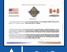
Issuevalidation
検証に関する課題
未レビュー訳guidanceand
ガイダンスおよび
未レビュー訳certificate
証明書
未レビュー訳clarification
明確化
未レビュー訳NIST/CSECissue
NIST/CSECの課題
未レビュー訳Testforconformance
適合性試験
未レビュー訳(vialabtothe
（試験所を通じてベンダーへ
未レビュー訳testingand
試験および
未レビュー訳ToFIPS140-2; 1a
FIPS 140-2への； 1a
未レビュー訳vendor)
ベンダー）
未レビュー訳Implementation
実装
未レビュー訳Completestestreport
完全な試験報告書
未レビュー訳4 Module
4 モジュール
未レビュー訳Guidance
ガイダンス
未レビュー訳5a
未レビュー訳Coordination
調整
未レビュー訳原本の表画像
CostRecoveryFee ReceivedPriorto Validation
検証前に受領する費用回収手数料
未レビュー訳2 CSTTestReporttoNIST/CSECforvalidation;
2 CST試験報告書を検証のためNIST/CSECへ送付；
未レビュー訳NIST/CSEC
NIST/CSEC
未レビュー訳ModuleReview Pending
モジュール審査保留中
未レビュー訳原本の表画像
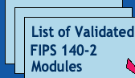
3 ReviewerAssigned ModuleUnderReview
3 審査担当者を割り当て、モジュールを審査中
未レビュー訳5 FNiInSaTliazadtdiosnm;oduleto
5 最終化されたモジュールをNISTへ提出；
未レビュー訳validatedmoduleslistat www.nist.gov/cmvp
検証済みモジュール一覧：www.nist.gov/cmvp
未レビュー訳Figure 16: General Flow of FIPS 140-2 Testing and Validation
図16：FIPS 140-2の試験および検証の一般的な流れ
未レビュー訳testing laboratories, and the user community. This guidance The CAVP and the CMVP have stimulated improved quality and provides clarity, consistency of interpretation, and insight for security assurance of cryptographic modules. The latest set of successful conformance testing, validation, and revalidation. statistics, which are collected quarterly from each of the testing
試験機関およびユーザーコミュニティ。このガイダンスは、明確さ、解釈の一貫性、および暗号モジュールのセキュリティ保証に関する洞察を提供する。CAVPとCMVPは、品質向上と、暗号モジュールの成功した適合性試験、検証、および再検証を促進してきた。最新の統計は各試験機関から四半期ごとに収集される。
未レビュー訳laboratories, shows that 7% of the cryptographic algorithms and 35% of the cryptographic modules brought in for voluntary testing had security flaws that were corrected during testing. To date, over 2,004 cryptographic module validation certificates have been issued, representing over 4,811 modules that were validated by the CMVP. These modules have been developed by more than 425 domestic and international vendors.
試験機関によると、自発的試験に持ち込まれた暗号アルゴリズムの7%、暗号モジュールの35%にセキュリティ上の欠陥があり、試験中に修正された。これまでに2,004件を超える暗号モジュール検証証明書が発行され、CMVPによって検証されたモジュールは4,811を超える。これらのモジュールは、国内外の425を超えるベンダーによって開発された。
未レビュー訳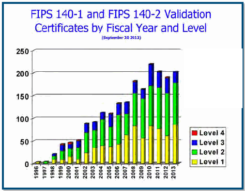
FIPS 140-1およびFIPS 140-2の検証証明書数を会計年度別・レベル別に示す棒グラフ。凡例はレベル1から4で、横軸は1995年から2013年まで。
Figure 17: FIPS 140-1 and FIPS 140-2 Validated Modules by Year and Level
図17：年およびレベル別のFIPS 140-1およびFIPS 140-2検証済みモジュール
未レビュー訳The unique position of the validation programs gives the CMVP the opportunity to acquire insight during the validation review activities and results in practical, timely, and up-to-date guidance that is needed by the testing laboratories and vendors to move their modules out to the user community in a timely
検証プログラムが占める独自の立場により、CMVPは検証レビュー活動を通じて知見を得る機会を持つ。その結果、試験機関およびベンダーがモジュールを適時にユーザーコミュニティへ提供するために必要な、実用的でタイムリーかつ最新のガイダンスが得られる。
未レビュー訳Figure 18: FIPS 140-1 and FIPS 140-2 Validation
図18：FIPS 140-1およびFIPS 140-2の検証
未レビュー訳and cost-effective manner and with the assurance of third-
費用対効果の高い方法で、第三者による
未レビュー訳Certificates by Fiscal Year and Level
会計年度およびレベル別の証明書
未レビュー訳party conformance testing. This knowledge and insight provide a foundation for future standards development.
適合性試験を受けること。この知識と洞察は、将来の規格策定の基盤となる。
未レビュー訳Program and Project Achievements for FY 2013
2013会計年度のプログラムおよびプロジェクトの成果
未レビュー訳The CAVP issued 2,288 algorithm validations and the CMVP
CAVPは2,288件のアルゴリズム検証を発行し、CMVPは
未レビュー訳原本の表画像
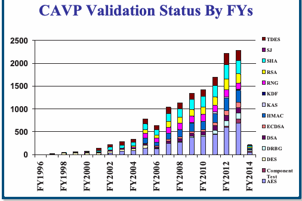
issued 191 module validation certificates in FY 2013. The number of algorithms and modules submitted for validation continues to grow, representing significant growth in the number of validations expected to be available in the future.
2013会計年度に191件のモジュール検証証明書を発行した。検証に提出されるアルゴリズムおよびモジュールの数は増加を続けており、今後利用可能となる検証件数の大幅な増加を示している。
未レビュー訳原本の表画像
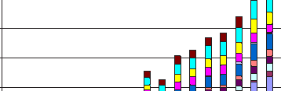
http://csrc.nist.gov/groups/STM
http://csrc.nist.gov/groups/STM
未レビュー訳Contacts: CMVP Contact:
連絡先：CMVP連絡先：
未レビュー訳CAVP Contact:
CAVP連絡先：
未レビュー訳Mr. Randall J. Easter
Randall J. Easter氏
未レビュー訳Ms. Sharon Keller
Sharon Keller氏
未レビュー訳(301) 975-4641
(301) 975-4641
未レビュー訳(301) 975-2910
(301) 975-2910
未レビュー訳randall.easter@nist.gov
randall.easter@nist.gov
未レビュー訳sharon.keller@nist.gov
sharon.keller@nist.gov
未レビュー訳Figure 19: CAVP Validation Status by FYs
図19：会計年度別のCAVP検証状況
未レビュー訳ª Automated Security Testing and Test
ª 自動セキュリティ試験およびテスト
未レビュー訳CAVP Validation Status For FY13
2013会計年度のCAVP検証状況
未レビュー訳Suite Development
スイート開発
未レビュー訳NIST’s CAVP utilizes the requirements and specifications of
NISTのCAVPは、要件と仕様を活用している。
未レビュー訳TDES
TDES
未レビュー訳400
400
未レビュー訳the algorithm FIPS and Special Publications (SPs) written by the
アルゴリズムに関するFIPSおよび特別刊行物（SP）は、
未レビュー訳SHA
SHA
未レビュー訳350
350
未レビュー訳RSA
RSA
未レビュー訳Cryptography Technology Group (CTG) to develop algorithm test
暗号技術グループ（CTG）がアルゴリズム試験を開発するために作成した
未レビュー訳300
300
未レビュー訳RNG
RNG
未レビュー訳250
250
未レビュー訳KDF
KDF
未レビュー訳suites and automated security testing. The CAVP is responsible
試験スイートおよび自動セキュリティ試験。CAVPは
未レビュー訳KAS
KAS
未レビュー訳200
200
未レビュー訳HMAC
HMAC
未レビュー訳for providing assurance that the algorithms contained in modules
モジュールに含まれるアルゴリズムが
未レビュー訳150
150
未レビュー訳ECDSA
ECDSA
未レビュー訳原本の表画像
100
100
未レビュー訳DSA
DSA
未レビュー訳are implemented correctly. The CAVP does this by designing
正しく実装されていることを保証する役割を担う。CAVPは、そのために
未レビュー訳50
未レビュー訳DRBG
DRBG
未レビュー訳0
未レビュー訳and developing conformance testing for implementations of
次のアルゴリズムの実装に対する適合性試験を設計・開発する。
未レビュー訳ComponentTest AES
コンポーネント試験 AES
未レビュー訳these algorithms.
これらのアルゴリズムを対象とする。
未レビュー訳Figure 20: CAVP Validation Status for FY 2013
図20: 2013会計年度のCAVP検証状況
未レビュー訳CAVP Validated Implementation Actual Numbers
CAVP検証済み実装の実数
未レビュー訳Updated As Wednesday, November 06, 2013
更新日: 2013年11月6日（水）
未レビュー訳| FiscalYear | AES | Comp. D | ES DSA | DRBG | ECDSA | HMAC | KAS | KDF | RNG | RSA | SHA | SJ | TDES | Total |
| FY1996 | 0 | 0 | 2 0 | 0 | 0 | 0 | 0 | 0 | 0 | 0 | 0 | 0 | 0 | 2 |
| FY1997 | 0 | 0 | 11 6 | 0 | 0 | 0 | 0 | 0 | 0 | 0 | 7 | 2 | 0 | 26 |
| FY1998 | 0 | 0 | 27 9 | 0 | 0 | 0 | 0 | 0 | 0 | 0 | 6 | 0 | 0 | 42 |
| FY1999 | 0 | 0 | 30 14 | 0 | 0 | 0 | 0 | 0 | 0 | 0 | 12 | 1 | 0 | 57 |
| FY2000 | 0 | 0 | 29 7 | 0 | 0 | 0 | 0 | 0 | 0 | 0 | 12 | 1 | 28 | 77 |
| FY2001 | 0 | 0 | 41 15 | 0 | 0 | 0 | 0 | 0 | 0 | 0 | 28 | 0 | 51 | 135 |
| FY2002 | 30 | 0 | 44 21 | 0 | 0 | 0 | 0 | 0 | 0 | 0 | 59 | 6 | 58 | 218 |
| FY2003 | 66 | 0 | 49 24 | 0 | 0 | 0 | 0 | 0 | 0 | 0 | 63 | 3 | 73 | 278 |
| FY2004 | 82 | 0 | 41 17 | 0 | 0 | 0 | 0 | 0 | 28 | 22 | 77 | 0 | 70 | 337 |
| FY2005 | 145 | 0 | 54 31 | 0 | 14 | 115 | 0 | 0 | 108 | 80 | 122 | 2 | 102 | 773 |
| FY2006 | 131 | 0 | 3 33 | 0 | 19 | 87 | 0 | 0 | 91 | 63 | 120 | 1 | 83 | 631 |
| FY2007 | 238 | 0 | 0 63 | 0 | 35 | 127 | 0 | 0 | 137 | 130 | 171 | 1 | 136 | 1038 |
| FY2008 | 271 | 0 | 0 77 | 4 | 41 | 158 | 0 | 0 | 137 | 129 | 191 | 0 | 122 | 1130 |
| FY2009 | 373 | 0 | 0 71 | 23 | 33 | 193 | 6 | 0 | 142 | 143 | 224 | 1 | 138 | 1347 |
| FY2010 | 399 | 0 | 0 70 | 31 | 39 | 179 | 12 | 0 | 150 | 155 | 239 | 0 | 142 | 1416 |
| FY2011 | 440 | 7 | 0 102 | 79 | 68 | 201 | 34 | 0 | 148 | 183 | 255 | 0 | 177 | 1694 |
| FY2012 | 599 | 24 | 0 121 | 122 | 92 | 283 | 20 | 3 | 157 | 231 | 323 | 1 | 248 | 2224 |
| FY2013 | 689 | 85 | 0 106 | 145 | 113 | 276 | 12 | 9 | 132 | 208 | 293 | 0 | 217 | 2285 |
| FY2014 | 48 | 28 | 0 9 | 22 | 6 | 26 | 0 | 1 | 2 | 22 | 30 | 0 | 17 | 211 |
原本の表画像
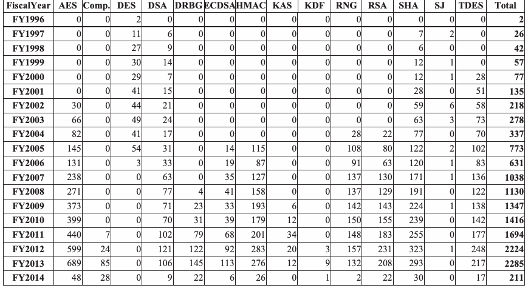
| 会計年度 | AES | Comp. D | ES DSA | DRBG | ECDSA | HMAC | KAS | KDF | RNG | RSA | SHA | SJ | TDES | 合計 |
| FY1996 | 0 | 0 | 2 0 | 0 | 0 | 0 | 0 | 0 | 0 | 0 | 0 | 0 | 0 | 2 |
| FY1997 | 0 | 0 | 11 6 | 0 | 0 | 0 | 0 | 0 | 0 | 0 | 7 | 2 | 0 | 26 |
| FY1998 | 0 | 0 | 27 9 | 0 | 0 | 0 | 0 | 0 | 0 | 0 | 6 | 0 | 0 | 42 |
| FY1999 | 0 | 0 | 30 14 | 0 | 0 | 0 | 0 | 0 | 0 | 0 | 12 | 1 | 0 | 57 |
| FY2000 | 0 | 0 | 29 7 | 0 | 0 | 0 | 0 | 0 | 0 | 0 | 12 | 1 | 28 | 77 |
| FY2001 | 0 | 0 | 41 15 | 0 | 0 | 0 | 0 | 0 | 0 | 0 | 28 | 0 | 51 | 135 |
| FY2002 | 30 | 0 | 44 21 | 0 | 0 | 0 | 0 | 0 | 0 | 0 | 59 | 6 | 58 | 218 |
| FY2003 | 66 | 0 | 49 24 | 0 | 0 | 0 | 0 | 0 | 0 | 0 | 63 | 3 | 73 | 278 |
| FY2004 | 82 | 0 | 41 17 | 0 | 0 | 0 | 0 | 0 | 28 | 22 | 77 | 0 | 70 | 337 |
| FY2005 | 145 | 0 | 54 31 | 0 | 14 | 115 | 0 | 0 | 108 | 80 | 122 | 2 | 102 | 773 |
| FY2006 | 131 | 0 | 3 33 | 0 | 19 | 87 | 0 | 0 | 91 | 63 | 120 | 1 | 83 | 631 |
| FY2007 | 238 | 0 | 0 63 | 0 | 35 | 127 | 0 | 0 | 137 | 130 | 171 | 1 | 136 | 1038 |
| FY2008 | 271 | 0 | 0 77 | 4 | 41 | 158 | 0 | 0 | 137 | 129 | 191 | 0 | 122 | 1130 |
| FY2009 | 373 | 0 | 0 71 | 23 | 33 | 193 | 6 | 0 | 142 | 143 | 224 | 1 | 138 | 1347 |
| FY2010 | 399 | 0 | 0 70 | 31 | 39 | 179 | 12 | 0 | 150 | 155 | 239 | 0 | 142 | 1416 |
| FY2011 | 440 | 7 | 0 102 | 79 | 68 | 201 | 34 | 0 | 148 | 183 | 255 | 0 | 177 | 1694 |
| FY2012 | 599 | 24 | 0 121 | 122 | 92 | 283 | 20 | 3 | 157 | 231 | 323 | 1 | 248 | 2224 |
| FY2013 | 689 | 85 | 0 106 | 145 | 113 | 276 | 12 | 9 | 132 | 208 | 293 | 0 | 217 | 2285 |
| FY2014 | 48 | 28 | 0 9 | 22 | 6 | 26 | 0 | 1 | 2 | 22 | 30 | 0 | 17 | 211 |
Figure 21: CAVP Validated Implementation Actual Numbers
図21: CAVP検証済み実装の実数
未レビュー訳Page1of2
全2ページ中1ページ
未レビュー訳Computer Security Division Annual Report - 2013
コンピュータセキュリティ部門 年次報告書—2013年
未レビュー訳The conformance tests consist of a suite of validation The CAVP currently has algorithm validation testing for the tests for each approved cryptographic algorithm. These tests following cryptographic algorithms: exercise the mathematical formulas and the algorithmic requirements detailed in the algorithm to assure that the
適合性試験は、承認された各暗号アルゴリズムの検証試験一式で構成される。これらの試験は、アルゴリズムに詳述された数式および要件を実行し、詳細仕様が正しく完全に実装されていることを確認する。CAVPは現在、次の暗号アルゴリズムについてアルゴリズム検証試験を実施している。
未レビュー訳| Cryptographic Algorithm/Component | Special Publication or FIPS |
| Triple Data Encryption Standard (TDES) | SP 800-67, Recommendation for the Triple Data Encryption Algorithm (TDEA) Block Cipher, and SP 800-38A, Recommendation for Block Cipher Modes of Operation– Methods and Techniques |
| Advanced Encryption Standard (AES) | FIPS 197, Advanced Encryption Standard, and SP 800-38A |
| Digital Signature Standard (DSS) | FIPS 186-2, Digital Signature Standard (DSS), with change notice 1, dated October 5, 2001 |
| FIPS 186-4, Digital Signature Standard (DSS), dated July 2013 | |
| Elliptic Curve Digital Signature Algorithm (ECDSA) | FIPS 186-2, Digital Signature Standard (DSS), with change notice 1, dated October 5, 2001 and ANSI X9.62 |
| FIPS 186-4, Digital Signature Standard (DSS), dated July 2013 and ANSI X9.62 | |
| RSA algorithm | ANSI X9.31 and Public Key Cryptography Standards (PKCS) #1 v2.1: RSA Cryptography Standard-2002 |
| FIPS 186-4, Digital Signature Standard (DSS), dated July 2013 and ANSI X9.31 and Public Key Cryptography Standards (PKCS) #1 v2.1: RSA Cryptography Standard-2002 | |
| Hashing algorithms SHA- 1, SHA-224, SHA-256, SHA-384, SHA-512, SHA- 512/224, SHA-512/256 | FIPS 180-4, Secure Hash Standard (SHS), dated March 2012 |
| Random number generator (RNG) algorithms | FIPS 186-2 Appendix 3.1 and 3.2; ANSI X9.62 Appendix A.4 |
| Deterministic Random Bit Generators (DRBG) | SP 800-90A, Recommendation for Random Number Generation Using Deterministic Random Bit Generators |
| Keyed-Hash Message Authentication Code (HMAC) | FIPS 198-1, The Keyed-Hash Message Authentication Code (HMAC) |
| Counter with Cipher Block Chaining-Message Authentication Code (CCM) mode | SP 800-38C, Recommendation for Block Cipher Modes of Operation: the CCM Mode for Authentication and Confidentiality |
| Cipher-based Message Authentication Code (CMAC) Mode for Authentication | SP 800-38B, Recommendation for Block Cipher Modes of Operation: The CMAC Mode for Authentication |
原本の表画像
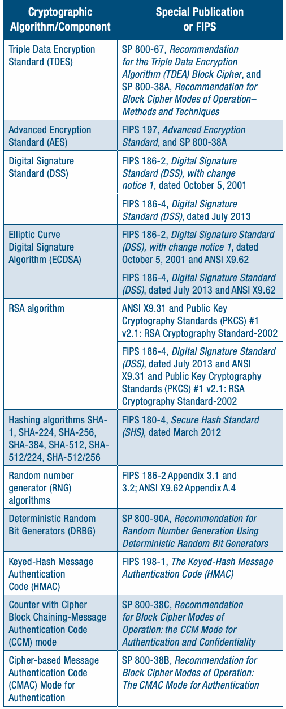
| 暗号アルゴリズム／コンポーネント | Special PublicationまたはFIPS |
| トリプルデータ暗号化標準（TDES） | SP 800-67「Triple Data Encryption Algorithm（TDEA）ブロック暗号に関する勧告」およびSP 800-38A「ブロック暗号動作モードに関する勧告—方法と技法」 |
| Advanced Encryption Standard（AES） | FIPS 197「Advanced Encryption Standard」およびSP 800-38A |
| Digital Signature Standard（DSS） | FIPS 186-2「Digital Signature Standard（DSS）」変更通知1（2001年10月5日付） |
| FIPS 186-4「Digital Signature Standard（DSS）」（2013年7月付） | |
| 楕円曲線デジタル署名アルゴリズム（ECDSA） | FIPS 186-2「Digital Signature Standard（DSS）」変更通知1（2001年10月5日付）およびANSI X9.62 |
| FIPS 186-4「Digital Signature Standard（DSS）」（2013年7月付）およびANSI X9.62 | |
| RSAアルゴリズム | ANSI X9.31およびPublic Key Cryptography Standards（PKCS）#1 v2.1: RSA Cryptography Standard-2002 |
| FIPS 186-4「Digital Signature Standard（DSS）」（2013年7月付）、ANSI X9.31、およびPublic Key Cryptography Standards（PKCS）#1 v2.1: RSA Cryptography Standard-2002 | |
| ハッシュアルゴリズム SHA-1、SHA-224、SHA-256、SHA-384、SHA-512、SHA-512/224、SHA-512/256 | FIPS 180-4「Secure Hash Standard（SHS）」（2012年3月付） |
| 乱数生成器（RNG）アルゴリズム | FIPS 186-2 付録3.1および3.2; ANSI X9.62 付録A.4 |
| 決定論的乱数ビット生成器（DRBG） | SP 800-90A「決定論的乱数ビット生成器を用いた乱数生成に関する勧告」 |
| 鍵付きハッシュメッセージ認証コード（HMAC） | FIPS 198-1「鍵付きハッシュメッセージ認証コード（HMAC）」 |
| カウンタ付きCBC-MAC（CCM）モード | SP 800-38C「ブロック暗号動作モードに関する勧告: 認証と機密性のためのCCMモード」 |
| 認証用暗号ベースメッセージ認証コード（CMAC）モード | SP 800-38B「ブロック暗号動作モードに関する勧告: 認証用CMACモード」 |
detailed specifications are implemented correctly and completely. If the implementer deviates from or excludes any Algorithm/Component part of these instructions or requirements, the validation test will fail, indicating that the algorithm implementation does not Standard (TDES) function properly or is incomplete. CAVP-developed validation tests are performed by accredited testing laboratories on a vendor’s algorithm implementation using automated known-answer tests, which compare the result from a cryptographic operation with a specific input against the expected result. They provide a uniform way to assure that the cryptographic algorithm implementation adheres to the detailed specifications. There are several types of validation tests, all designed to satisfy the testing requirements of the cryptographic algorithms and their specifications. These include, but are not Elliptic Curve limited to, Known-Answer Tests, Monte Carlo Tests, and Multi- Digital Signature Block Message Tests. The Known-Answer Tests are designed Algorithm (ECDSA) October 5, 2001 andANSI X9.62 to examine the individual components of the algorithm by supplying known values to the variables and verifying the expected result. The Monte Carlo Test is designed to exercise RSA algorithm the entire IUT. This test is designed to detect the presence of implementation flaws that are not detected with the controlled input of the Known-Answer Tests. The types of implementation flaws detected by this validation test include pointer problems, insufficient allocation of space, improper error handling, and incorrect behavior of the IUT. The Multi-Block Message Test (MMT) is designed to test the ability of the implementation to process multi-block messages, which require the chaining of information from one block to the next. During the last few years, CSD has expanded its publications 512/224, SHA-512/256 beyond only an algorithm’s specification into how an algorithm Random number should be used. Many of these requirements are outside the generator (RNG) scope of the algorithm boundary and therefore cannot be tested algorithms at the algorithm level by the CAVP. Some of the requirements Deterministic Random SP 800-90A, Recommendation for are within the scope of the CMVP while others are outside the Bit Generators (DRBG) Random Number Generation Using scope of both the CAVP and the CMVP. In the case where the requirement is outside the scope of the CAVP and the CMVP, the Keyed-Hash Message FIPS 198-1, The Keyed-Hash Message fulfillment of the requirements is the responsibility of entities Authentication using, installing, or configuring applications or protocols that use the cryptographic algorithms. For example, depending on Counter with Cipher SP 800-38C, Recommendation the design of a cryptographic module, it may not be possible Block Chaining-Message for Block Cipher Modes of for the module to determine whether a specific key is used for multiple purposes, a situation that is strongly discouraged.
これらの指示または要件に含まれるアルゴリズム／コンポーネントのいずれかから逸脱したり、それを除外したりすると、検証試験は失敗し、アルゴリズム実装が正常に機能していないか不完全であることを示す。CAVPが開発した検証試験は、認定試験機関がベンダーのアルゴリズム実装に対して実施する。自動Known-Answer Testでは、暗号演算に特定の入力を与えた結果を期待値と比較する。これらの試験は、暗号アルゴリズム実装が詳細仕様に準拠していることを確認するための統一的な方法を提供する。検証試験には複数の種類があり、いずれも暗号アルゴリズムおよびその仕様の試験要件を満たすよう設計されている。これにはKnown-Answer Test、Monte Carlo Test、Multi-Block Message Testなどが含まれるが、これらに限定されない。Known-Answer Testは、変数に既知の値を与えて期待値を検証することにより、アルゴリズムの個々の構成要素を調べる。Monte Carlo TestはIUT全体を実行し、制御された入力を用いるKnown-Answer Testでは検出できない実装上の欠陥を検出するよう設計されている。この検証試験で検出する欠陥には、ポインターの問題、メモリ領域の割り当て不足、不適切なエラー処理、IUTの誤った動作が含まれる。Multi-Block Message Test（MMT）は、複数ブロックのメッセージを処理する実装能力を試験する。複数ブロックの処理には、あるブロックから次のブロックへ情報を連鎖させる必要がある。ここ数年、CSDはアルゴリズム仕様だけでなく、アルゴリズムの使用方法も扱う出版物を拡充してきた。こうした要件の多くはアルゴリズムの境界範囲外であり、CAVPはアルゴリズムレベルで試験できない。要件の一部はCMVPの範囲内だが、CAVPとCMVPのどちらの範囲にも含まれないものもある。要件が両者の範囲外にある場合、それを使用する、インストールする、または設定するアプリケーションやプロトコルの主体が要件を満たす責任を負う。例えば、暗号モジュールの設計によっては、特定の鍵が複数の目的に使われているかをモジュールが判定できない場合がある。これは強く推奨されない状況である。
未レビュー訳Program and Project Achievements for FY 2013
2013会計年度のプログラムおよびプロジェクトの成果
未レビュー訳In FY 2014, the CAVP expects to add algorithm validation
2014会計年度に、CAVPはアルゴリズム検証の追加を予定している
未レビュー訳| Galois/Counter Mode (GCM) GMAC Mode of Operation | SP 800-38D, Recommendation for Block Cipher Modes of Operation: Galois/Counter Mode (GCM) and GMAC, dated November 2007 |
| XTS Mode of Operation | SP800-38E, Recommendation for Block Cipher Modes of Operation: The XTS-AES Mode for Confidentiality on Block-Oriented Storage Devices, dated January 2010 |
| Key Agreement Schemes and Key Confirmation | SP 800-56A, Recommendation for Pair-Wise Key Establishment Schemes Using Discrete Logarithm Cryptography, dated March 2007 |
| All of SP 800-56A except KDF | SP 800-56A All sections except Section 5.8 Key Derivation Functions for Key Agreement Schemes |
| SP 800-56A Section 5.7.1.2 ECC CDH function | SP 800-56A Section 5.7.1.2 Elliptic Curve Cryptography Cofactor Diffie- Hellman (ECC CDH) Primitive Testing |
| Key-Based Key Derivation functions (KBKDF) | SP 800-108, Recommendation for Key Derivation using Pseudorandom Functions, dated October 2009 |
| Application-Specific Key Derivation functions (ASKDF) (includes KDFs used by IKEv1, IKEv2, TLS, ANS X9.63-2001, SSH, SRTP, SNMP, and TPM) | SP 800-135 (Revision 1) Recommendation for Existing Application Specific key Derivation Functions, dated December 2011 |
| Component test – ECDSA Signature Generation of hash value (This component test verifies the signing of a hash- sized input. It does not verify the hashing of the original message to be signed.) | FIPS 186-4, Digital Signature Standard (DSS), dated July 2013 and ANSI X9.62 |
| Component test – RSA PKCS#1 1.5 Signature Generation of encoded message EM (This component test verifies the signing of an EM. It does not verify the formatting of the EM.) | FIPS 186-4, Digital Signature Standard (DSS), dated July 2013 and Public Key Cryptography Standards (PKCS) #1 v2.1: RSA Cryptography Standard-2002 |
| Component test – RSA PKCS#1 PSS Signature Generation of encoded message EM (This component test verifies the RSASP1 function.) | SP 800-56B, Recommendation for Pair-Wise Key Establishment Schemes Using Integer Factorization Cryptography, August 2009, Section 7.1.2 |
原本の表画像
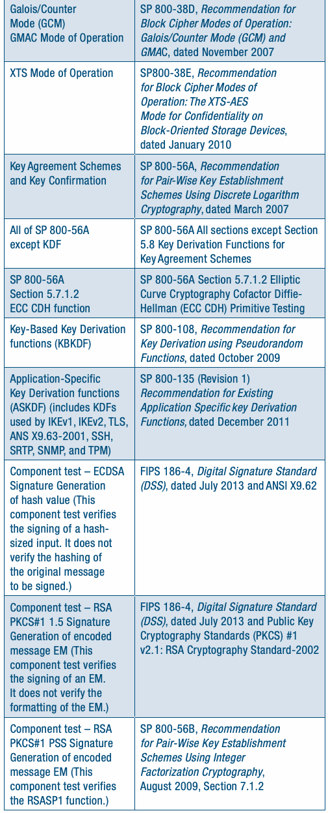
| Galois/Counter Mode（GCM）およびGMAC動作モード | SP 800-38D「ブロック暗号動作モードに関する勧告: Galois/Counter Mode（GCM）およびGMAC」（2007年11月付） |
| XTS動作モード | SP 800-38E「ブロック暗号動作モードに関する勧告: ブロック指向ストレージデバイスの機密性を確保するXTS-AESモード」（2010年1月付） |
| 鍵共有方式および鍵確認 | SP 800-56A「離散対数暗号を用いたペアワイズ鍵確立方式に関する勧告」（2007年3月付） |
| KDFを除くSP 800-56Aの全項目 | SP 800-56A 第5.8節「鍵共有方式の鍵導出関数」を除く全節 |
| SP 800-56A 第5.7.1.2節 ECC CDH関数 | SP 800-56A 第5.7.1.2節「楕円曲線暗号コファクタDiffie-Hellman（ECC CDH）プリミティブの試験」 |
| 鍵ベース鍵導出関数（KBKDF） | SP 800-108「疑似乱数関数を用いた鍵導出に関する勧告」（2009年10月付） |
| アプリケーション固有鍵導出関数（ASKDF）（IKEv1、IKEv2、TLS、ANS X9.63-2001、SSH、SRTP、SNMP、およびTPMで用いるKDFを含む） | SP 800-135 改訂1「既存のアプリケーション固有鍵導出関数に関する勧告」（2011年12月付） |
| コンポーネント試験—ハッシュ値のECDSA署名生成（この試験はハッシュ長の入力への署名を検証する。署名対象の元メッセージのハッシュ計算は検証しない。） | FIPS 186-4「Digital Signature Standard（DSS）」（2013年7月付）およびANSI X9.62 |
| コンポーネント試験—符号化メッセージEMのRSA PKCS#1 1.5署名生成（この試験はEMへの署名を検証する。EMの書式設定は検証しない。） | FIPS 186-4「Digital Signature Standard（DSS）」（2013年7月付）およびPublic Key Cryptography Standards（PKCS）#1 v2.1: RSA Cryptography Standard-2002 |
| コンポーネント試験—符号化メッセージEMのRSA PKCS#1 PSS署名生成（この試験はRSASP1関数を検証する。） | SP 800-56B「整数因数分解暗号を用いたペアワイズ鍵確立方式に関する勧告」（2009年8月）、第7.1.2節 |
testing for: SP 800-56C, Recommendation for Key Derivation through Extraction-then-Expansion, November 2011
検証試験の対象:
未レビュー訳 SP 800-132, Recommendation for Password-Based Key Derivation Part 1: Storage Applications, December 2010
— SP 800-132「パスワードベース鍵導出に関する勧告 第1部: ストレージアプリケーション」、2010年12月
未レビュー訳 SP 800-38F, Recommendation for Block Cipher Modes of Operation: Methods for Key Wrapping, December 2012
— SP 800-38F「ブロック暗号動作モードに関する勧告: 鍵ラッピングの方法」、2012年12月
未レビュー訳 SP 800-56A Revision 2, Recommendation for Pair-Wise Key Establishment Schemes Using Discrete Logarithm Cryptography, May 2013
— SP 800-56A改訂2「離散対数暗号を用いたペアワイズ鍵確立方式に関する勧告」、2013年5月
未レビュー訳http://csrc.nist.gov/groups/STM/cavp
http://csrc.nist.gov/groups/STM/cavp
未レビュー訳Contacts: Ms. Sharon Keller
連絡先: Sharon Keller氏
未レビュー訳Ms. Elaine Barker
Elaine Barker氏
未レビュー訳(301) 975-2910
(301) 975-2910
未レビュー訳(301) 975-2911
(301) 975-2911
未レビュー訳sharon.keller@nist.gov
sharon.keller@nist.gov
未レビュー訳elaine.barker@nist.gov
elaine.barker@nist.gov
未レビュー訳ª ISO Standardization of Security Requirements for Cryptographic Modules
ª 暗号モジュールのセキュリティ要件に関するISO標準化
未レビュー訳CSD has contributed to the activities of the International Organization for Standardization/International Electrotechnical Commission (ISO/IEC), which issued ISO/IEC 19790, Security Requirements for Cryptographic Modules, on March 1, 2006, and ISO/IEC 24759, Test Requirements for Cryptographic Modules, on July 1, 2008. These efforts bring consistent testing of cryptographic modules to the global community. ISO/IEC JTC 1/SC 27 WG 3 completed and published the revisions of both ISO/IEC 19790 and ISO/IEC 24759, for which Randall J. Easter of CSD is the editor. The revision of ISO/IEC
CSDは、International Organization for Standardization/International Electrotechnical Commission（国際標準化機構／国際電気標準会議、ISO/IEC）の活動に貢献してきた。同機関は、2006年3月1日にISO/IEC 19790, Security Requirements for Cryptographic Modules（暗号モジュールのセキュリティ要件）を、2008年7月1日にISO/IEC 24759, Test Requirements for Cryptographic Modules（暗号モジュールの試験要件）を発行した。これらの取り組みにより、暗号モジュールの一貫した試験が世界規模で実現する。ISO/IEC JTC 1/SC 27 WG 3は、ISO/IEC 19790およびISO/IEC 24759の改訂を完了し、発行した。CSDのRandall J. Easterが両改訂の編集者を務めた。ISO/IEC 19790の改訂
未レビュー訳PKCS#1 1.5 Signature (DSS), dated July 2013 and Public Key 19790 was published August 15, 2012. ISO/IEC 19790:2012
PKCS#1 1.5 Signature (DSS)（署名）、2013年7月付、およびPublic Key 19790（公開鍵19790）は、2012年8月15日に発行された。ISO/IEC 19790:2012
未レビュー訳was also adopted by the American National Standards Institute
はAmerican National Standards Institute（米国国家規格協会）にも採用された
未レビュー訳message EM (This v2.1: RSA Cryptography Standard-2002 (ANSI). The revision of ISO/IEC 24759 was published January 31, 2014.
メッセージEM（このv2.1：RSA Cryptography Standard-2002（ANSI）。ISO/IEC 24759の改訂は2014年1月31日に発行された。
未レビュー訳CSD’s Randall J. Easter is the editor for three ISO/IEC documents. Work is nearing completion on the Technical Report document, ISO/IEC 30104 “Physical Security Attacks, Mitigation Techniques and Security Requirements.” A final draft of ISO/ IEC 30104 was completed in December 2013 and circulated for national body comment. Work is progressing on ISO/IEC 17825 “Testing methods for the mitigation of non-invasive attack classes against cryptographic modules.” The first committee draft of ISO/IEC 17825 was completed in December 2013 and circulated for
CSDのRandall J. Easterは、3件のISO/IEC文書の編集者を務めている。技術報告書ISO/IEC 30104 “Physical Security Attacks, Mitigation Techniques and Security Requirements”（物理的セキュリティ攻撃、緩和技術およびセキュリティ要件）の作業は完了に近づいている。ISO/IEC 30104の最終草案は2013年12月に完成し、各国標準化団体のコメント用に回覧された。ISO/IEC 17825 “Testing methods for the mitigation of non-invasive attack classes against cryptographic modules”（暗号モジュールに対する非侵襲攻撃クラスの緩和試験方法）の作業も進行中である。ISO/IEC 17825の初回委員会草案は2013年12月に完成し、コメント用に回覧された
未レビュー訳national body comment.
原文更新後、再確認待ち
would measure the correct implementation of cryptographic components as part of a larger system.
より大きなシステムの一部として、暗号コンポーネントが正しく実装されているかを測定する。
未レビュー訳Work is progressing on a new standard document, ISO/IEC 18367 “Cryptographic algorithms and security mechanisms This program will perform research and experimentation in conformance testing.” The third working draft of ISO/IEC 18367 applicable technologies and techniques that will enable the was completed in December 2013 and circulated for national efficient testing of the cryptographic capabilities of each layer, body comment.
新しい規格文書ISO/IEC 18367 “Cryptographic algorithms and security mechanisms（暗号アルゴリズムおよびセキュリティメカニズム）適合性試験に関する研究および実験を実施するプログラムである。”の作業が進行中である。ISO/IEC 18367の第3作業草案は2013年12月に完成し、各国標準化団体のコメント用に回覧された
未レビュー訳and continuous monitoring capabilities of each cryptographic component, providing the necessary interfaces to establish
また、各暗号コンポーネントの継続的監視機能を備え、必要なインターフェースを提供し、
未レビュー訳National body comments for the above four documents will
上記4文書に対する各国標準化団体のコメントは
未レビュー訳trust relationships with other cryptographic components.
他の暗号コンポーネントとの信頼関係を確立する。
未レビュー訳be addressed at the 47th SC 27 WG 3 meeting to be held in
第47回SC 27 WG 3会合で対処される予定である。会合の開催地は
未レビュー訳Techniques could include such items as:
技術には、次のような項目が含まれる可能性がある。
未レビュー訳Incheon, Korea, in October 2013.
2013年10月に韓国の仁川で開催される。
未レビュー訳 Embedding SCAP like data elements and standard
SCAPに類似したデータ要素および標準
未レビュー訳CSD’s contributions to the development of these international
CSDがこれら国際規格の策定に貢献したことは、採用と
未レビュー訳interfaces to query those data elements during design
設計時にこれらのデータ要素を照会するためのインターフェース
未レビュー訳standards create a strong foundation for the adoption of and
これらの規格は、採用および
未レビュー訳and implementation of cryptographic components that
ならびに暗号コンポーネントの実装を
未レビュー訳migration from currently used national standards. In particular,
現在使用されている各国規格からの移行。特に、
未レビュー訳would enable automated testing capabilities;
自動試験機能を可能にする。
未レビュー訳this adoption will promote the international harmonization for the implementation and testing of cryptographic algorithms and
この採用は、暗号アルゴリズムおよびモジュールの実装・試験に関する国際的な調和を促進する。
未レビュー訳 Using cryptographic techniques to embed values into
暗号技術を用いて値を
未レビュー訳modules while accommodating individual country preferences
各国固有の選好に対応しながらモジュールに埋め込むことで
未レビュー訳the module that would increase the verifiability and
そのモジュールの検証可能性および
未レビュー訳in the choice of approved security functions.
承認済みセキュリティ機能を選択する際の
未レビュー訳assurance that the module provides; and
モジュールが提供する保証を高めること。さらに
未レビュー訳http://csrc.nist.gov/groups/STM/cmvp/
http://csrc.nist.gov/groups/STM/cmvp/
未レビュー訳 Using industry-based secure development techniques to increase the level of trust inherent in software modules starting with design and implementation.
設計および実装から始め、ソフトウェアモジュールに内在する信頼性を高めるため、業界ベースのセキュア開発技術を使用する。
未レビュー訳Contact: Mr. Randall J. Easter
連絡先：Randall J. Easter氏
未レビュー訳Research into this area of cryptographic system validation
暗号システム検証のこの分野における研究は
未レビュー訳(301) 975-4641
(301) 975-4641
未レビュー訳holds the promise of automating the validation of all
すべての暗号コンポーネントの検証を自動化する可能性を
未レビュー訳randall.easter@nist.gov
randall.easter@nist.gov
未レビュー訳cryptographic components, providing a higher assurance with less manual effort by using SCAP-based ideas to embed data elements that instrument the test harnesses used to
より少ない手作業でより高い保証を実現するため、SCAPベースの考え方を用いて試験ハーネスに計測用データ要素を埋め込むことによって、
未レビュー訳ª Cryptographic System Validation
ª 暗号システムの検証
未レビュー訳validate cryptographic systems. This would also provide the instrumentation that could be leveraged to enable a greater
暗号システムを検証する。この計測機能により、さらに高い
未レビュー訳Current validation programs focus on providing a known
現在の検証プログラムは、既知の
未レビュー訳level of situational awareness and security measurement, and
状況認識およびセキュリティ測定のレベル、ならびに
未レビュー訳level of assurance for cryptographic algorithms and modules.
暗号アルゴリズムおよびモジュールの保証レベル。
未レビュー訳potentially to enable continuous monitoring of cryptographic
暗号システムの継続的監視を可能にすることも
未レビュー訳These are used within the context of a larger system to provide
これらは、より大規模なシステムの文脈において、
未レビュー訳systems.
システム。
未レビュー訳cryptographic services as a method of protecting the data within the system. As information systems continue to become
システム内のデータを保護する方法として暗号サービスを提供する。情報システムがますます複雑になるにつれて、
未レビュー訳Contact:
連絡先：
未レビュー訳more complex, the methods used to implement cryptographic
暗号サービスの実装に使用する方法も
未レビュー訳Mr. Michael Cooper
Michael Cooper氏
未レビュー訳services have also increased in complexity. Problems with
複雑さを増している。
未レビュー訳(301) 975-8077
(301) 975-8077
未レビュー訳the use of cryptography are often introduced through the
暗号の使用に関する問題は、多くの場合、
未レビュー訳michael.cooper@nist.gov
michael.cooper@nist.gov
未レビュー訳interaction of cryptographic components with the operating environment. This program seeks to specify how cryptographic components are used as part of a defined cryptographic system Technical Security Metrics to solve problems with a measureable level of assurance, and to introduce automated methods of quantifying the level of
暗号コンポーネントと運用環境との相互作用を通じて生じる。このプログラムは、定義された暗号システムの一部として暗号コンポーネントをどのように使用するかを規定し、測定可能な保証レベルで問題を解決するとともに、保証レベルを定量化する自動化手法を導入することを目指す。技術セキュリティ指標
未レビュー訳ª Security Risk Analysis of Enterprise
ª 攻撃グラフを用いたエンタープライズ
未レビュー訳assurance.
保証。
未レビュー訳Networks Using Attack Graphs
ネットワークのセキュリティリスク分析
未レビュー訳This program will begin the research required to define a reference cryptographic systems architecture and example
このプログラムは、参照用暗号システムアーキテクチャと、例示的なユースケースを定義するために必要な研究を開始する。
未レビュー訳Protection of computer networks from malicious intrusions is
悪意ある侵入からコンピュータネットワークを保護することは、
未レビュー訳use cases where cryptographic systems are built from known
既知の暗号コンポーネントから暗号システムを構築するユースケースを
未レビュー訳critical to the economy and security of the nation. Vulnerabilities
国家の経済および安全保障にとって不可欠である。脆弱性は
未レビュー訳cryptographic components that cooperate through trust
信頼を通じて協調する暗号コンポーネント
未レビュー訳are regularly discovered in software applications, which are
ソフトウェアアプリケーションで定期的に発見されており、それらは
未レビュー訳relationships to provide a measureable level of assurance. The
関係を通じて連携し、測定可能な保証レベルを提供する。
未レビュー訳exploited to stage cyber attacks. System administrators need
サイバー攻撃の準備に悪用される。システム管理者には、
未レビュー訳architecture should begin at the lowest level with a hardware
アーキテクチャは最下層で
未レビュー訳objective metrics to guide and justify decision making as they
意思決定を導き、正当化するための客観的指標を
未レビュー訳based root of trust, and each cryptographic component should
ハードウェアベースの信頼の起点から始めるべきであり、各暗号コンポーネントは
未レビュー訳manage the security risk of enterprise networks. The objective
エンタープライズネットワークのセキュリティリスクを管理する。研究の目的は
未レビュー訳be added in successive layers to provide assurance in a
保証を提供するため、順次レイヤーに追加すべきである。
未レビュー訳of this research is to develop a standard model for security
この研究の目的は、セキュリティリスク分析の標準モデルを開発することである。
未レビュー訳systematic way. This should allow the development of tests that
体系的な方法で行う。これにより、そのような試験の開発ができるはずである。
未レビュー訳原文更新後、再確認待ち
risk analysis of computer networks. A standard model will
コンピュータネットワークのリスク分析。標準モデルがあれば、
未レビュー訳Algorithms for Intrusion Measurement
侵入測定アルゴリズム
未レビュー訳enable us to answer questions such as “Are we more secure
「現在はより安全か」などの問いに答えられるようにする
未レビュー訳的の中心にダーツが刺さっているイラスト。
now than yesterday?” or “How does the security of one network configuration compare with another one?” Also, having a standard model to measure network security will allow users, vendors, and researchers to evaluate methodologies and products for network security in a coherent and consistent manner. CSD has approached the challenge of network security analysis by capturing vulnerability interdependencies and measuring security based on how real attackers have penetrated networks. CSD’s methodology for security risk analysis is based on attack graphs. CSD analyzes attack paths through a network, providing a probabilistic metric of the overall system risk.
現在は昨日より安全か？」または「あるネットワーク構成のセキュリティは、別の構成と比べてどうか」といった問いにも答えられる。ネットワークセキュリティを測定する標準モデルがあれば、利用者、ベンダー、および研究者は、ネットワークセキュリティの方法論や製品を一貫性のある統一的な方法で評価できる。CSDは、脆弱性の相互依存関係を捉え、実際の攻撃者がネットワークへ侵入した方法に基づいてセキュリティを測定することで、ネットワークセキュリティ分析の課題に取り組んできた。CSDのセキュリティリスク分析方法論は攻撃グラフに基づく。CSDはネットワーク内の攻撃経路を分析し、システム全体のリスクに関する確率的指標を提供する。
未レビュー訳Figure 22: Algorithms for Intrusion Measurement
図22：侵入測定アルゴリズム
未レビュー訳Through this metric, CSD analyzes trade-offs between security
この指標を通じて、CSDはセキュリティ間のトレードオフを分析する
未レビュー訳The Algorithms for Intrusion Measurement (AIM) project, newly
新たに開始された侵入測定アルゴリズム（AIM）プロジェクトは、
未レビュー訳costs and security benefits.
コストとセキュリティ上の便益。
未レビュー訳formed in FY 2013, furthers measurement science in the area
2013会計年度に設立され、この分野の測定科学を推進する
未レビュー訳Computer systems are vulnerable to both known and zero
コンピュータシステムは、既知の攻撃とゼロ
未レビュー訳of algorithms used in the field of intrusion detection. The team
侵入検知分野で使用されるアルゴリズムを対象とする。チームは
未レビュー訳day attacks. Handling zero day vulnerabilities is inherently
デイ攻撃に対して脆弱である。ゼロデイ脆弱性への対処は本質的に
未レビュー訳focuses on both new detection metrics and measurements of
新たな検知指標と、
未レビュー訳difficult due to their unpredictable nature. In FY 2013, CSD
予測不能な性質のため困難である。2013会計年度にCSDは
未レビュー訳scalability (more formally algorithmic complexity). This analysis
スケーラビリティ（より正式にはアルゴリズム計算量）の測定の両方に焦点を当てる。この分析は
未レビュー訳attempted to assess the risk of unknown attack patterns. CSD
未知の攻撃パターンのリスク評価を試みた。CSDは
未レビュー訳is applied to different phases of the detection lifecycle to include
検知ライフサイクルの異なる段階に適用され、その対象には
未レビュー訳developed a new model “k-zero day safety” for zero day attacks.
ゼロデイ攻撃向けに「k-zero day safety（kゼロデイ安全性）」という新しいモデルを開発した。
未レビュー訳pre-emptive vulnerability analysis, initial attack detection, alert
先制的脆弱性分析、初期攻撃検知、警告
未レビュー訳Existing algorithms for computing this metric are not scalable as they assume that a complete zero day attack graph has impact, alert aggregation/correlation, and compact log storage. been generated. CSD has proposed a set of polynomial time In performing this work, the AIM project seeks to enhance our algorithms for estimating k-zero day safety. CSD has authored nation’s ability to defend itself from network-borne attacks. a paper, “An Efficient Approach to Assessing the Risk of Zero- Much of this scientific research is conducted in partnership Day Vulnerabilities,” that received the Best Paper Award at the with the Army Research Laboratory (ARL). ARL’s participation tenth International Conference on Security and Cryptography helps focus the work on solving immediate critical problems (SECRYPT 2013), in Reykjavik, Iceland.
この指標を計算する既存アルゴリズムは、完全なゼロデイ攻撃グラフが生成済みであると仮定するため、スケーラブルではない。CSDは、k-zero day safetyを推定する多項式時間アルゴリズム群を提案した。CSDの論文 “An Efficient Approach to Assessing the Risk of Zero-Day Vulnerabilities”（ゼロデイ脆弱性リスクの効率的評価手法）は、アイスランドのレイキャビクで開催された第10回International Conference on Security and Cryptography (SECRYPT 2013)で最優秀論文賞を受賞した。攻撃の影響、警告の集約／相関分析、コンパクトなログ保存も対象となる。この作業を通じ、AIMプロジェクトはネットワーク経由の攻撃から国家を防御する能力の強化を目指す。この科学研究の多くはArmy Research Laboratory (ARL)との連携で実施される。ARLの参加により、米国政府ネットワークが直面する差し迫った重大な問題の解決に研究を集中できる。
未レビュー訳facing U.S. Government networks. However, research solutions are made publicly available and are designed to be generally
米国政府ネットワークが直面する問題。一方、研究成果は公開され、一般に適用できるよう設計されている
未レビュー訳In FY 2014, CSD plans to apply attack graphs to study the
2014会計年度にCSDは、攻撃グラフを適用して
未レビュー訳applicable to as many environments as possible.
可能な限り多くの環境に適用できる。
未レビュー訳effect of diversity for network defense. CSD also plans to publish the results as a NIST report and as white papers in In its first year, the AIM project initiated research in each conferences and journals.
ネットワーク防御における多様性の効果を調査する計画である。また、結果をNIST報告書として、会議および学術誌の白書として公表する計画である。
未レビュー訳stage of the detection lifecycle with a focus on graph theoretic approaches; it has already obtained several major results.
初年度にAIMプロジェクトは、グラフ理論的アプローチに重点を置いて検知ライフサイクルの各段階の研究を開始し、すでに複数の主要な成果を得ている。
未レビュー訳http://csrc.nist.gov/groups/SNS/security-riskanalysis-enterprise-
http://csrc.nist.gov/groups/SNS/security-riskanalysis-enterprise-
未レビュー訳For example, the project has advanced the state of the art
tたとえば、プロジェクトは技術水準を進展させた。
未レビュー訳networks/
networks/
未レビュー訳in network scan detection, discovering and then thwarting circumvention attacks against a highly cited scan detection
ネットワークスキャン検知において、広く引用されているスキャン検知に対する回避攻撃を発見し、その後これを阻止した。
未レビュー訳Contact:
連絡先：
未レビュー訳algorithm. A paper describing this approach, “Limitations
アルゴリズム。このアプローチを説明する論文 “Limitations
未レビュー訳Dr. Anoop Singhal
Anoop Singhal博士
未レビュー訳to Threshold Random Walk Scan Detection and Mitigating
to Threshold Random Walk Scan Detection and Mitigating（閾値付きランダムウォーク・スキャン検知の限界と緩和
未レビュー訳(301) 975-4432
(301) 975-4432
未レビュー訳Enhancements,” was published at the First IEEE Conference on
Enhancements”（機能強化）は、First IEEE Conference on
未レビュー訳anoop.singhal@nist.gov
anoop.singhal@nist.gov
未レビュー訳Communications and Network Security. Additionally, the project developed a hypergraph-based algorithm to use Hamming distance to aggregate security alert logs more than an order of magnitude faster than the previous state of the art, while providing enhanced aggregation. In FY 2014, the AIM project will continue its scan detection work and publish its work on log aggregation. It will continue emerging research on log file compression and alert impact analysis. Newly initiated work will include investigation of
Communications and Network Securityで発表された。さらに、このプロジェクトは、ハミング距離を用いてセキュリティ警告ログを集約するハイパーグラフベースのアルゴリズムを開発した。このアルゴリズムは従来の最先端手法より1桁以上高速であり、より優れた集約も実現する。2014会計年度にAIMプロジェクトは、スキャン検知の作業を継続し、ログ集約に関する成果を公表する。ログファイル圧縮および警告影響分析の新たな研究も続ける。新たに開始した作業には、既知の脆弱性に基づく指標を調査し、異なるネットワークまたは時間経過に伴う単一ネットワークの攻撃耐性を比較することが含まれる。
未レビュー訳known-vulnerability based metrics for comparing the attack and leading (jointly with IBM personnel) the IEEE Second resistance of different networks or a single network over time. International Conference on Combinatorial Testing, held with
原文更新後、再確認待ち
the International Conference on Software Testing.
International Conference on Software Testingと併催された。
未レビュー訳Contacts:
連絡先：
未レビュー訳Technology transfer activities included publication of several
技術移転活動には、複数の技術論文の発表が含まれた。
未レビュー訳Mr. Peter Mell
Peter Mell氏
未レビュー訳Mr. Mark (Lee) Badger
Mark (Lee) Badger氏
未レビュー訳technical papers; participation in the Maryland Technology
複数の技術論文の発表、およびMaryland Technologyへの参加
未レビュー訳(301) 975-5572
(301) 975-5572
未レビュー訳(301) 975-3176
(301) 975-3176
未レビュー訳Development Corporation (TEDCO) Technology Transfer
Development Corporation (TEDCO) Technology Transfer（技術移転）への参加
未レビュー訳peter.mell@nist.gov
peter.mell@nist.gov
未レビュー訳mark.badger@nist.gov
mark.badger@nist.gov
未レビュー訳Workshop; presentation of results of the work with Lockheed Martin; release of enhanced covering array, test prioritization, and fault location tools; plus seminars and lectures at several
Workshop（ワークショップ）、Lockheed Martinとの作業成果の発表、拡張されたcovering array（網羅配列）、テスト優先順位付けおよび故障箇所特定ツールの公開、さらに複数の
未レビュー訳ª Automated Combinatorial Testing
ª 自動組合せテスト
未レビュー訳conferences, universities, and federal agencies.
会議、大学、および連邦機関での発表。
未レビュー訳Software developers often encounter failures that result Plans for FY 2014 include a second phase of a project from an unexpected interaction between components. NIST with the NASA IV&V Facility to investigate integration of research has shown that most failures are triggered by one or combinatorial coverage measurement methods in NASA IV&V two parameters and progressively fewer by three, four, or more practices; development of new methods and tools for very large parameters (see graph below), a relationship that is called the covering arrays (hundreds of variables); lectures at conferences Interaction Rule. These results have important implications for and research labs; and guiding development of a combinatorial testing. If all faults in a system can be triggered by a combination software test development environment by graduate students of n or fewer parameters, then testing all n-way combinations at Carnegie Mellon University which will incorporate NIST of parameters can provide very strong fault detection efficiency. software. These methods are being applied to software and hardware
ソフトウェア開発者は、コンポーネント間の予期しない相互作用から生じる障害にしばしば直面する。NISTの研究は、ほとんどの障害が2つのパラメータの相互作用によって引き起こされ、3つ、4つ、またはそれ以上のパラメータによるものは段階的に少なくなることを示している（下図参照）。この関係はInteraction Rule（相互作用則）と呼ばれる。これらの結果は組合せテストに重要な示唆を与える。システム内のすべての故障がn個以下のパラメータの組合せによって引き起こされるなら、パラメータのn-way組合せをすべて試験することで、非常に高い故障検出効率を得られる。2014会計年度の計画には、NASA IV&V Facilityとのプロジェクト第2段階（NASA IV&Vの実務に組合せ網羅率測定方法を統合する調査）、非常に大規模なcovering array（数百の変数）向けの新しい方法およびツールの開発、会議および研究所での講演、ならびにNISTソフトウェアを組み込む組合せソフトウェア試験開発環境の大学院生による開発指導が含まれる。これらの方法は、ソフトウェアおよびハードウェアの
未レビュー訳http://csrc.nist.gov/groups/SNS/acts/
http://csrc.nist.gov/groups/SNS/acts/
未レビュー訳testing for reliability, safety, and security. CSD’s focus is on empirical results and real-world problems.
信頼性、安全性、およびセキュリティのための試験に適用されている。CSDは実証的な結果と現実世界の問題に重点を置く。
未レビュー訳Contacts:
連絡先：
未レビュー訳Project highlights for FY 2013 included completion of a two-year Cooperative Research and Development Agreement Mr. Rick Kuhn
2013会計年度のプロジェクトの主な成果には、2年間の協力研究開発協定の完了が含まれる。Mr. Rick Kuhn
未レビュー訳Dr. Raghu Kacker
Raghu Kacker博士
未レビュー訳(301) 975-3337
(301) 975-3337
未レビュー訳(301) 975-2109
(301) 975-2109
未レビュー訳(CRADA) with Lockheed Martin Corporation, showing
（CRADA）をLockheed Martin Corporationと締結し、
未レビュー訳kuhn@nist.gov
kuhn@nist.gov
未レビュー訳raghu.kacker@nist.gov
raghu.kacker@nist.gov
未レビュー訳approximately 20% reduction in software test development cost across a variety of projects; publication of the first textbook on combinatorial testing; release of an advanced
さまざまなプロジェクトでソフトウェア試験開発コストを約20%削減したこと、組合せテストに関する初の教科書を出版したこと、高度な
未レビュー訳ª Hardware Roots of Trust
ª ハードウェアを起点とする信頼の基点
未レビュー訳tool for measuring combinatorial coverage of test sets (jointly with Centro Nacional de Metrología, Mexico); cooperative
（メキシコのCentro Nacional de Metrologíaと共同で）テストセットの組合せ網羅率を測定するツールを公開したこと、ならびに協力
未レビュー訳Modern computing devices consist of various hardware,
現代のコンピューティングデバイスは、さまざまなハードウェア、
未レビュー訳work with the National Aeronautics and Space Administration
National Aeronautics and Space Administration（NASA）との
未レビュー訳firmware, and software components at multiple layers of
複数の抽象化レイヤーにあるファームウェアおよびソフトウェアコンポーネントで構成される。
未レビュー訳(NASA) Independent Verification and Validation (IV&V) Facility
Independent Verification and Validation (IV&V) Facility（独立検証・妥当性確認施設）
未レビュー訳abstraction. Many security and protection mechanisms are
多くのセキュリティおよび保護メカニズムは、
未レビュー訳analyzing combinatorial coverage measurement for IV&V of
IV&Vの組合せ網羅率測定を分析する
未レビュー訳currently rooted in software that, along with all underlying
その基盤となるすべてのコンポーネントと同様に、現在はソフトウェアを信頼の起点としている。
未レビュー訳space systems; lectures at conferences and research labs;
宇宙システムのIV&V、会議および研究所での講演、
未レビュー訳components, must be trustworthy. A vulnerability in any of those components could compromise the trustworthiness of the security mechanisms that rely upon those components. Stronger security assurances may be possible by grounding security mechanisms in roots of trust. Roots of trust are highly reliable hardware, firmware, and software components that perform specific, critical security functions. Because roots of trust are inherently trusted, they must be secure by design. As such, many roots of trust are implemented in hardware so that malware cannot tamper with the functions they provide. Roots of trust provide a firm foundation from which to build security and trust. A focus area for CSD’s roots of trust research in FY 2013 was security for mobile devices. CSD worked with government and industry partners on guidelines on hardware-rooted security features in mobile devices. These guidelines focus on device
これらのコンポーネントのいずれかに脆弱性があれば、そのコンポーネントに依存するセキュリティメカニズムの信頼性が損なわれる可能性がある。セキュリティメカニズムを信頼の基点に根ざすことで、より強固なセキュリティ保証が得られる可能性がある。信頼の基点とは、特定の重要なセキュリティ機能を実行する、信頼性の高いハードウェア、ファームウェア、およびソフトウェアコンポーネントである。信頼の基点は本質的に信頼されるため、設計段階からセキュアでなければならない。そのため、多くの信頼の基点は、それらが提供する機能をマルウェアが改ざんできないよう、ハードウェアに実装される。信頼の基点は、セキュリティと信頼を構築するための確固たる基盤となる。2013会計年度のCSDの信頼の基点研究の重点分野は、モバイルデバイスのセキュリティであった。CSDは政府および産業界のパートナーと協力し、モバイルデバイスにおけるハードウェアを起点とするセキュリティ機能のガイドラインに取り組んだ。これらのガイドラインは、デバイスの
未レビュー訳Figure 23: Interaction Rule
図23：相互作用則
未レビュー訳integrity, isolation, and protected storage features that are supported by roots of trust. Draft SP 800-164, Guidelines on
原文更新後、再確認待ち
Policy Machine
Policy Machine（ポリシーマシン）
未レビュー訳Hardware-Rooted Security in Mobile Devices, was released for
Hardware-Rooted Security in Mobile Devices（モバイルデバイスにおけるハードウェアを起点とするセキュリティ）の草案が公開され、
未レビュー訳Roadmap
ロードマップ
未レビュー訳public comment in October 2012.
2012年10月にパブリックコメントに付された。
未レビュー訳Assets
資産
未レビュー訳In FY 2014, CSD will release a revised draft of SP 800-
2014会計年度にCSDは、SP 800-
未レビュー訳Validated Products List
検証済み製品リスト
未レビュー訳164, based on the feedback received during the public
パブリックコメント期間に受け取った意見に基づき、164の改訂草案を公開する。
未レビュー訳Cloud Computing
クラウドコンピューティング
未レビュー訳comment period. In addition, CSD is working with the National Cybersecurity Center of Excellence (NCCoE) to encourage the adoption of stronger security technologies in mobile devices. Using draft SP 800-164 as a basis for an NCCoE building block
コメント期間。さらに、CSDはNational Cybersecurity Center of Excellence (NCCoE)と協力し、モバイルデバイスでより強固なセキュリティ技術の採用を促進している。NCCoEのビルディングブロックの基礎としてSP 800-164草案を用いる
未レビュー訳Security Practices
セキュリティ実務
未レビュー訳Security Controls
セキュリティ管理策
未レビュー訳activity, CSD and the NCCoE will invite mobile device, operating system, management software vendors, and application
活動として、CSDとNCCoEは、モバイルデバイス、オペレーティングシステム、管理ソフトウェアのベンダー、およびアプリケーション
未レビュー訳Mobile Devices
モバイルデバイス
未レビュー訳developers to study, demonstrate, and document how to use hardware-backed security solutions.
開発者を招き、ハードウェアに裏打ちされたセキュリティソリューションの使用方法を調査、実証、文書化する。
未レビュー訳Verification
検証
未レビュー訳Continuous Monitoring
継続的監視
未レビュー訳In FY 2013, CSD continued its work to protect fundamental system firmware, commonly known as Basic Input/Output System (BIOS). CSD has been working with key members of the
2013会計年度にCSDは、一般にBasic Input/Output System (BIOS)と呼ばれる、システムの基盤となるファームウェアを保護する作業を継続した。CSDは主要な
未レビュー訳FIPS 140-2
FIPS 140-2
未レビュー訳computer industry on the use of roots of trust to improve the security of BIOS. CSD will continue its efforts to secure BIOS and other critical firmware in FY 2014 and will finalize a Special Publication covering BIOS protections for server-class systems. CSD will also release an updated draft of SP 800-155, BIOS Integrity Measurement Guidelines, which will include additional guidelines for server-class systems and other boot firmware. In order to encourage the continued adoption of BIOS protections, CSD also plans to submit SP 800-147, BIOS Protection Guidelines, to ISO for standardization.
コンピュータ業界の関係者と協力し、信頼の基点を使用してBIOSのセキュリティを向上させる取り組みを進めている。CSDは2014会計年度もBIOSおよびその他の重要なファームウェアを保護する取り組みを継続し、サーバクラスシステムのBIOS保護を扱う特別刊行物を最終化する。また、サーバクラスシステムおよびその他のブートファームウェアに関する追加の指針を含む、SP 800-155, BIOS Integrity Measurement Guidelines（BIOS完全性測定ガイドライン）の改訂草案を公開する。BIOS保護の継続的な採用を促すため、SP 800-147, BIOS Protection Guidelines（BIOS保護ガイドライン）を標準化のためISOに提出する計画もある。
未レビュー訳Contact: Mr. Andrew Regenscheid (301) 975-5155 andrew.regenscheid@nist.gov
連絡先：Andrew Regenscheid氏、(301) 975-5155、andrew.regenscheid@nist.gov
未レビュー訳Computer Security Division Annual Report - 2013
Computer Security Division Annual Report - 2013（コンピュータセキュリティ部門年次報告書 - 2013）
未レビュー訳Policy Machine
Policy Machine（ポリシーマシン）
未レビュー訳Roadmap
ロードマップ
未レビュー訳Assets
資産
未レビュー訳Validated Products List
検証済み製品リスト
未レビュー訳Cloud Computing
クラウドコンピューティング
未レビュー訳Security Practices
セキュリティ実務
未レビュー訳Security Controls
セキュリティ管理策
未レビュー訳Mobile Devices
モバイルデバイス
未レビュー訳Verification
検証
未レビュー訳Continuous Monitoring
継続的監視
未レビュー訳FIPS 140-2
FIPS 140-2
未レビュー訳Honors and Awards
栄誉および受賞
未レビュー訳Mr. Richard Kissel
Richard Kissel氏
未レビュー訳Mr. Jeremy Grant Federal 100 Award
Jeremy Grant氏 Federal 100 Award（連邦100賞）
未レビュー訳U.S. Department of Commerce Bronze Medal
米国商務省銅メダル
未レビュー訳スーツ姿で眼鏡をかけた男性の白黒ポートレート。
Mr. Kissel received a U.S. Department
Kissel氏は
未レビュー訳Jeremy Grant is a senior executive
Jeremy Grant氏は上級幹部
未レビュー訳of Commerce Bronze Medal for raising
米国商務省銅メダルを受賞した。
未レビュー訳advisor for identity management at
NISTにおけるID管理担当
未レビュー訳small and medium-sized business
中小企業
未レビュー訳NIST. He leads the National Strategy for
NISTでNational Strategy for
未レビュー訳(SMB) awareness of information security
（SMB）における情報セキュリティに関する
未レビュー訳Trusted Identities in Cyberspace (NSTIC)
サイバースペースにおける信頼されたアイデンティティのための国家戦略（NSTIC）
未レビュー訳threats, vulnerabilities, and safeguards
脅威、脆弱性、および保護策への認識を高め、
未レビュー訳National Program Office, which is
National Program Officeは
未レビュー訳through implementation of NIST’s SMB
NISTのSMB
未レビュー訳working to foster a vibrant marketplace
活気ある市場の形成に取り組んでいる。
未レビュー訳information security outreach program.
情報セキュリティ啓発プログラムの実施を通じてである。
未レビュー訳of identity solutions—provided by
提供されたIDソリューションの
未レビュー訳As the program lead, Mr. Kissel worked
プログラム責任者として、Kissel氏は
未レビュー訳entities both private and public—that
官民双方の組織が提供するものであり、
未レビュー訳collaboratively with the Small Business Administration and would enhance the security, convenience, and privacy of online the FBI’s InfraGard program to conduct information security transactions. Federal Computer Week included the following training workshops for small businesses with a focus on the description in Mr. Grant’s award:“Through his ability to facilitate tools and techniques these businesses can apply directly. dialogue and inspire action among NSTIC’s complex and diverse By empowering SMBs, which represent over 95% of all U.S. community of stakeholders, he has helped foster NSTIC’s vision businesses, to better protect their information, the nation’s and principles to produce marketable solutions and advanced overall information infrastructure is strengthened to enhance innovation.” Further details about the award are available at innovation, competitiveness, and economic security.
Small Business AdministrationおよびFBIのInfraGardプログラムと協力して、中小企業向けに情報セキュリティ研修会を実施し、各企業が直接適用できるツールおよび技術に重点を置いた。SMBは米国企業の95%超を占める。SMBが自らの情報をより適切に保護できるよう支援することで、国全体の情報インフラストラクチャが強化され、イノベーション、競争力、および経済安全保障が向上する。NSTICの複雑で多様な利害関係者コミュニティの対話を促し、行動を促進する能力を通じて、Grant氏はNSTICのビジョンと原則を市場で実用可能なソリューションおよび高度なイノベーションへと結び付けることに貢献した。Grant氏の受賞に関する詳細は次を参照。
未レビュー訳http://fcw.com/articles/2013/03/20/grant-jeremy.aspx.
http://fcw.com/articles/2013/03/20/grant-jeremy.aspx.
未レビュー訳FCW Federal 100 Awards Three members of the Information Technology Laboratory and the Computer Security Division were
FCW Federal 100 Awards（FCW Federal 100賞）。Information Technology LaboratoryおよびComputer Security Divisionの職員3名が
未レビュー訳named to the 2013 list of the top 100 government, industry and academic leaders in the Federal Government IT community. The award recognizes individuals who are making a difference in the way technology has transformed their agency or accelerated their agency’s mission.
連邦政府ITコミュニティにおける政府、産業界、学術界のリーダー上位100名の2013年リストに選ばれた。この賞は、技術によって各自の機関が変革された方法、または機関の使命が加速された方法に変化をもたらしている個人を表彰する。
未レビュー訳The Federal 100 Awards are sponsored by Federal Computer Week. Recipients are chosen by a panel of government and industry leaders. They were formally honored at a gala on March 20, 2013.
Federal Computer WeekがFederal 100 Awardsを主催する。政府および産業界のリーダーによる委員会が受賞者を選定する。受賞者は2013年3月20日の祝賀会で正式に表彰された。
未レビュー訳Mr. Jon Boyens
Jon Boyens氏
未レビュー訳Mr. Adam Sedgewick
Adam Sedgewick氏
未レビュー訳Federal 100 Award
Federal 100 Award（Federal 100賞）
未レビュー訳Federal 100 Award
Federal 100 Award（Federal 100賞）
未レビュー訳スーツとネクタイ姿の、笑顔の男性の白黒ポートレート。
Jon Boyens is a senior information
Jon Boyens氏は上級情報
未レビュー訳Senior Information Technology Policy
上級情報技術政策
未レビュー訳technology security specialist in the
技術セキュリティ専門家であり、
未レビュー訳Advisor Adam Sedgewick coordinates
アドバイザーのAdam Sedgewick氏は、
未レビュー訳Computer Security Division. As lead for
Computer Security Divisionで勤務する。
未レビュー訳information technology projects with
連邦政府におけるNISTの重要なパートナーとの
未レビュー訳NIST’s Information and Communications
NISTのInformation and Communications
未レビュー訳NIST’s critical partners in the federal
情報技術プロジェクトを調整する。
未レビュー訳Technology (ICT) Supply Chain Risk
Technology (ICT) Supply Chain Risk
未レビュー訳arena, including the Chief Information
Chief Information
未レビュー訳Management (SCRM) project, he
Management (SCRM)プロジェクトの責任者として、
未レビュー訳Officers’ (CIO) Council, the Office of
Officer（CIO）Council、Office of
未レビュー訳identifies and evaluates technologies,
ICTサプライチェーンリスクの管理に役立つ技術、
未レビュー訳Management and Budget (OMB) and
Management and Budget (OMB)、および
未レビュー訳tools, techniques, practices, and
tool（ツール）、技術、実務、
未レビュー訳the National Security Staff. Federal
National Security Staffを含む。Federal
未レビュー訳standards useful in managing risk to the ICT supply chain and Computer Week included the following description in Mr. co-leads the U.S. Government’s efforts to develop ICT SCRM Sedgewick’s award: “[He] focused on government-wide impact lifecycle processes and standards. Federal Computer Week while offering process improvements for the council’s internal included the following description in Mr. Boyens’ award: “He operations. He added tremendous substantive expertise gleaned led an integrated team that developed a set of standardized, from his experience as a cybersecurity and IT policy analyst on repeatable practices to help federal agencies manage risks Capitol Hill. As senior IT policy adviser at NIST, he continues to to their information and communications technology supply shape the government-wide dialogue on cybersecurity reform.” chain in the face of rapid technological evolution.” Further Further details about the award are available at http://fcw.com/ details about the award are available at: http://fcw.com/ articles/2013/03/20/sedgewick-adam.aspx. articles/2013/03/20/boyens-jon.aspx.
基準を特定・評価し、ICTサプライチェーンのリスク管理に役立てる。また、米国政府の取り組みを共同で主導し、ICT SCRMのライフサイクルプロセスおよび規格を策定する。 Computer Week誌は、Sedgewick氏の受賞について次のように紹介した：「政府全体への影響に焦点を当てながら、評議会内部の業務改善も実現した。Capitol HillでサイバーセキュリティおよびIT政策アナリストとして得た経験に基づく、非常に優れた専門知識を提供した。NISTの上級IT政策アドバイザーとして、政府全体のサイバーセキュリティ改革に関する議論を引き続き形作っている。」受賞に関する詳細：http://fcw.com/articles/2013/03/20/sedgewick-adam.aspx。Federal Computer Week誌は、Boyens氏の受賞について次のように紹介した：「同氏は統合チームを率いて、急速な技術進化に直面する中で連邦機関が情報通信技術サプライチェーンのリスクを管理できるよう、標準化され反復可能な一連の実務を開発した。」受賞に関する詳細：http://fcw.com/articles/2013/03/20/boyens-jon.aspx。
未レビュー訳Computer Security Division Annual Report - 2013
Computer Security Division Annual Report - 2013（コンピュータセキュリティ部門年次報告書 - 2013）
未レビュー訳Mr. Joshua Franklin & Ms. Kelley Dempsey Government Information Security Leadership Award (GISLA)
Joshua Franklin氏 & Kelley Dempsey氏 Government Information Security Leadership Award (GISLA)（政府情報セキュリティ・リーダーシップ賞）
未レビュー訳原本の表画像
Josh Franklin and Kelley Dempsey won the (ISC)² Government Information Security Leadership Award (GISLA) in the Process/ Policy Improvement category for their work on the Federal Mobile Security Baseline and the Mobile Computing Decision Framework. According to (ISC)², the award in this category is given to “An individual or team of senior-level U.S. federal government personnel…whose contribution to the development or implementation of any information security policy or process has significantly improved the security posture of a federal agency, department or government-wide within the last 12 months.” Source: https://www.isc2.org/gisla/Default.aspx.
Josh Franklin氏とKelley Dempsey氏は、Federal Mobile Security BaselineおよびMobile Computing Decision Frameworkに関する取り組みにより、Process/Policy Improvement（プロセス／ポリシー改善）部門で(ISC)² Government Information Security Leadership Award (GISLA)を受賞した。(ISC)²によると、この部門の賞は「過去12か月以内に、情報セキュリティポリシーまたはプロセスの策定もしくは実施への貢献によって、連邦機関、部門、または政府全体のセキュリティ態勢を大幅に改善した米国連邦政府の上級職員である個人またはチーム」に授与される。出典：https://www.isc2.org/gisla/Default.aspx.
未レビュー訳原本の表画像
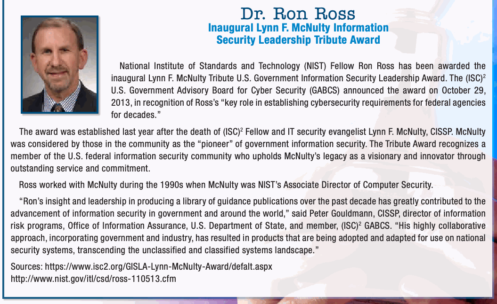
Honors & Awards
栄誉 & 受賞
未レビュー訳This page is intentionally left blank.
このページは意図的に空白にしてある。
未レビュー訳Computer Security Division Annual Report - 2013
Computer Security Division Annual Report - 2013（コンピュータセキュリティ部門年次報告書 - 2013）
未レビュー訳Policy Machine
Policy Machine（ポリシーマシン）
未レビュー訳Roadmap
ロードマップ
未レビュー訳Assets
資産
未レビュー訳Validated Products List
検証済み製品リスト
未レビュー訳Cloud Computing
クラウドコンピューティング
未レビュー訳Security Practices
セキュリティ実務
未レビュー訳Security Controls
セキュリティ管理策
未レビュー訳Mobile Devices
モバイルデバイス
未レビュー訳Verification
検証
未レビュー訳Continuous Monitoring
継続的監視
未レビュー訳FIPS 140-2
FIPS 140-2
未レビュー訳FY 2013 Computer Security Division Publications
2013会計年度 コンピュータセキュリティ部門刊行物
未レビュー訳The Computer Security Division uses multiple NIST Technical Series to promulgate security standards, guidelines, recommendations, research, and additional background material. Those series include Federal Information Processing Standards (FIPS), NIST Special Publications (SPs), NIST Interagency or Internal Reports (NISTIRs) and Information Technology Laboratory (ITL) Bulletins. Links to these publications are available at http://csrc.nist.gov/publications. Additionally, each year CSD staff authors numerous additional publications, including journal articles, conference papers, and other papers that are widely disseminated. They range from basic research to high-level summaries of CSD activities.
Computer Security Division（CSD）は、セキュリティ標準、ガイドライン、推奨事項、研究、およびその他の背景資料を発行するため、複数のNIST Technical Seriesを利用する。これらのシリーズには、Federal Information Processing Standards (FIPS)、NIST Special Publications (SP)、NIST InteragencyまたはInternal Reports (NISTIR)、およびInformation Technology Laboratory (ITL) Bulletinsが含まれる。これらの刊行物へのリンクはhttp://csrc.nist.gov/publications. これらは入手できる。さらに、毎年CSD職員は、広く普及する学術誌論文、会議論文、その他の論文を多数執筆する。それらは基礎研究からCSD活動の概要まで多岐にわたる。
未レビュー訳NIST Technical Series Publications − FIPS, Special Publications, NISTIRs, and ITL Bulletins
NIST Technical Series刊行物 − FIPS、Special Publications、NISTIR、およびITL Bulletins
未レビュー訳Below are lists of NIST Technical Series publications that CSD released as draft documents or as final publications during FY 2013 (from October 1, 2012 to September 30, 2013). Following the lists are abstracts and contact information for each publication.
以下に、CSDが2013会計年度（2012年10月1日から2013年9月30日まで）に草案文書または最終刊行物として公開したNIST Technical Series刊行物の一覧を示す。各一覧に続いて、各刊行物の抄録および連絡先情報を示す。
未レビュー訳| DRAFT PUBLICATIONS | ||
| Type & Number | Publication Title | Draft Released Date |
| Federal Information Processing Standards (FIPS) | ||
| No draft FIPS were released in FY 2013. | ||
| Special Publications (SPs) | ||
| SP 800-164 | Guidelines on Hardware-Rooted Security in Mobile Devices | October 2012 |
| SP 800-162 | Guide to Attribute Based Access Control (ABAC) Definition and Considerations | April 2013 |
| SP 800-161 | Supply Chain Risk Management Practices for Federal Information Systems and Organizations | August 2013 |
| SP 800-101 Revision 1 | Guidelines on Mobile Device Forensics | September 2013 |
| SP 800-90 Series (A Revision 1, B, and C) | Random Bit Generators A Revision 1: Recommendation for Random Number Generation Using Deterministic Random Bit Generators B: Recommendation for the Entropy Sources Used for Random Bit Generation C: Recommendation for Random Bit Generator (RBG) Constructions | September 2013 |
| SP 800-78-4 | Cryptographic Algorithms and Key Sizes for Personal Identity Verification | May 2013 |
| SP 800-73-4 | Interfaces for Personal Identity Verification (3 Parts) Part 1- PIV Card Application Namespace, Data Model and Representation Part 2- PIV Card Application Card Command Interface Part 3- PIV Client Application Programming Interface | May 2013 |
| SP 800-63-2 | Electronic Authentication Guideline | February 2012 |
| SP 800-53 Revision 4 | Security and Privacy Controls for Federal Information Systems and Organizations | February 2013 |
| SP 800-52 Revision 1 | Guidelines for the Selection, Configuration, and Use of Transport Layer Security (TLS) Implementations | September 2013 |
| SP 800-38 G | Recommendation for Block Cipher Modes of Operation: Methods for Format-Preserving Encryption | July 2013 |
| NIST Interagency Reports (NISTIRs) | ||
| NISTIR 7946 | CVSS Implementation Guidance | September 2013 |
| NISTIR 7924 | Reference Certificate Policy | April 2013 |
| NISTIR 7904 | Trusted Geolocation in the Cloud: Proof of Concept Implementation | December 2012 |
| NISTIR 7298 Revision 2 | Glossary of Key Information Security Terms | December 2012 |
原本の表画像
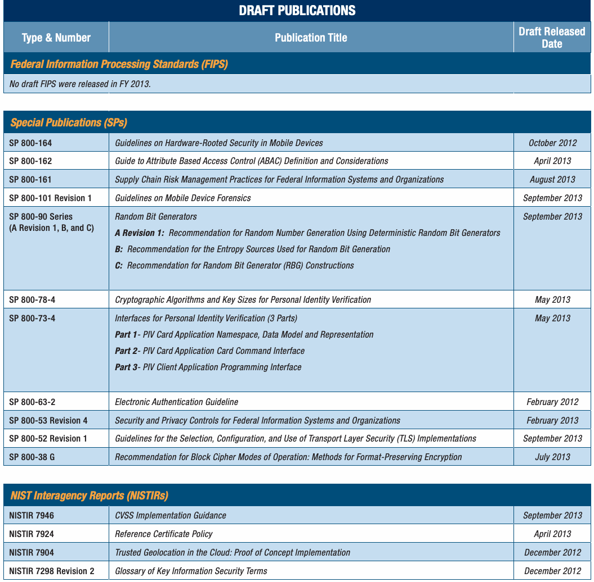
| DRAFT PUBLICATIONS（草案刊行物） | ||
| 種類・番号 | 刊行物名 | 草案公開日 |
| Federal Information Processing Standards (FIPS) | ||
| 2013会計年度に草案FIPSの公開はなかった。 | ||
| Special Publications (SP) | ||
| SP 800-164 | モバイルデバイスにおけるハードウェアを起点とするセキュリティのガイドライン | 2012年10月 |
| SP 800-162 | 属性ベースアクセス制御（ABAC）の定義および考慮事項に関するガイド | 2013年4月 |
| SP 800-161 | 連邦情報システムおよび組織のためのサプライチェーンリスク管理実務 | 2013年8月 |
| SP 800-101 Revision 1 | モバイルデバイス・フォレンジックのガイドライン | 2013年9月 |
| SP 800-90 Series (A Revision 1, B, and C) | 乱数ビット生成器 A Revision 1：決定論的乱数ビット生成器を用いる乱数生成の推奨事項 B：乱数ビット生成に使用するエントロピー源の推奨事項 C：乱数ビット生成器（RBG）構成の推奨事項 | 2013年9月 |
| SP 800-78-4 | 個人識別検証のための暗号アルゴリズムおよび鍵長 | 2013年5月 |
| SP 800-73-4 | 個人識別検証のためのインターフェース（3部構成） Part 1- PIVカードアプリケーションの名前空間、データモデルおよび表現 Part 2- PIVカードアプリケーションのカードコマンドインターフェース Part 3- PIVクライアントアプリケーションのプログラミングインターフェース | 2013年5月 |
| SP 800-63-2 | 電子認証ガイドライン | 2012年2月 |
| SP 800-53 Revision 4 | 連邦情報システムおよび組織のためのセキュリティおよびプライバシー管理策 | 2013年2月 |
| SP 800-52 Revision 1 | Transport Layer Security (TLS)実装の選択、設定、および使用に関するガイドライン | 2013年9月 |
| SP 800-38 G | ブロック暗号動作モードの推奨事項：フォーマット保持暗号化の方法 | 2013年7月 |
| NIST Interagency Reports (NISTIRs) | ||
| NISTIR 7946 | CVSS実装ガイダンス | 2013年9月 |
| NISTIR 7924 | 参照証明書ポリシー | 2013年4月 |
| NISTIR 7904 | クラウドにおける信頼できる位置情報：概念実証の実装 | 2012年12月 |
| NISTIR 7298 Revision 2 | 主要な情報セキュリティ用語の用語集 | 2012年12月 |
Computer Security Division Annual Report - 2013
Computer Security Division Annual Report - 2013（コンピュータセキュリティ部門年次報告書 - 2013）
未レビュー訳| Final (Approved) Publications | ||
| Federal Information Processing Standards (FIPS) | ||
| Document Number | Publication Title | Publication Date |
| FIPS 201-2 | Personal Identity Verification (PIV) of Federal Employees and Contractors | August 2013 |
| FIPS 186-4 | Digital Signature Standard (DSS) | July 2013 |
| Special Publications (SPs) | ||
| Document Number | Publication Title | Publication Date |
| SP 800-165 | Computer Security Division 2012 Annual Report | June 2013 |
| SP 800-133 | Recommendation for Cryptographic Key Generation | December 2012 |
| SP 800-130 | A Framework for Designing Cryptographic Key Management Systems | August 2013 |
| SP 800-124 Revision 1 | Guidelines for Managing the Security of Mobile Devices in the Enterprise | June 2013 |
| SP 800-83 Revision 1 | Guide to Malware Incident Prevention and Handling for Desktops and Laptops | July 2013 |
| SP 800-82 Revision 1 | Guide to Industrial Control Systems (ICS) Security | May 2013 |
| SP 800-81-2 | Secure Domain Name System (DNS) Deployment Guide | September 2013 |
| SP 800-76-2 | Biometric Specifications for Personal Identity Verification | July 2013 |
| SP 800-63-2 | Electronic Authentication Guideline | August 2013 |
| SP 800-56A Revision 2 | Recommendation for Pair-Wise Key Establishment Schemes Using Discrete Logarithm Cryptography | May 2013 |
| SP 800-53 Revision 4 | Security and Privacy Controls for Federal Information Systems and Organizations | April 2013 |
| SP 800-40 Revision 3 | Guide to Enterprise Patch Management Technologies | July 2013 |
| SP 800-38F | Recommendation for Block Cipher Modes of Operation: Methods for Key Wrapping | December 2012 |
| NIST Interagency Reports (NISTIRs) | ||
| Document Number | Publication Title | Publication Date |
| NISTIR 7957 | Conformance Test Architecture and Test Suite for ANSI/NIST-ITL 1-2011 NIEM XML Encoded Transactions | September 2013 |
| NISTIR 7956 | Cryptographic Key Management Issues & Challenges in Cloud Services | September 2013 |
| NISTIR 7933 | Requirements and Conformance Test Assertions for ANSI/NIST-ITL 1-2011 Record Type 18 - DNA Record | May 2013 |
| NISTIR 7916 | Proceedings of the Cybersecurity in Cyber-Physical Systems Workshop, April 23-24, 2012 | February 2013 |
| NISTIR 7896 | Third-Round Report of the SHA-3 Cryptographic Hash Algorithm Competition | November 2012 |
| NISTIR 7878 | Combinatorial Coverage Measurement | October 2012 |
| NISTIR 7817 | A Credential Reliability and Revocation Model for Federated Identities | November 2012 |
| NISTIR 7622 | Notional Supply Chain Risk Management Practices for Federal Information Systems | October 2012 |
| NISTIR 7511 Revision 3 | Security Content Automation Protocol (SCAP) Version 1.2 Validation Program Test Requirements | January 2013 |
| NISTIR 7298 Revision 2 | Glossary of Key Information Security Terms | May 2013 |
原本の表画像
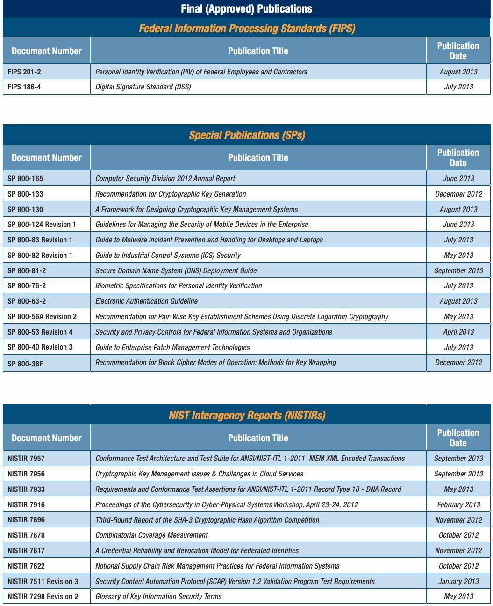
| Final (Approved) Publications（最終版［承認済み］刊行物） | ||
| Federal Information Processing Standards (FIPS) | ||
| 文書番号 | 刊行物名 | 刊行日 |
| FIPS 201-2 | 連邦政府職員および契約業者の個人識別検証（PIV） | 2013年8月 |
| FIPS 186-4 | Digital Signature Standard (DSS) | 2013年7月 |
| Special Publications (SP) | ||
| 文書番号 | 刊行物名 | 刊行日 |
| SP 800-165 | Computer Security Division 2012年次報告書 | 2013年6月 |
| SP 800-133 | 暗号鍵生成の推奨事項 | 2012年12月 |
| SP 800-130 | 暗号鍵管理システム設計の枠組み | 2013年8月 |
| SP 800-124 Revision 1 | 企業におけるモバイルデバイスのセキュリティ管理ガイドライン | 2013年6月 |
| SP 800-83 Revision 1 | デスクトップおよびノートPC向けマルウェアインシデントの防止および処理ガイド | 2013年7月 |
| SP 800-82 Revision 1 | 産業用制御システム（ICS）セキュリティガイド | 2013年5月 |
| SP 800-81-2 | セキュアなDomain Name System (DNS)導入ガイド | 2013年9月 |
| SP 800-76-2 | 個人識別検証のための生体認証仕様 | 2013年7月 |
| SP 800-63-2 | 電子認証ガイドライン | 2013年8月 |
| SP 800-56A Revision 2 | 離散対数暗号を用いたペア単位鍵確立方式の推奨事項 | 2013年5月 |
| SP 800-53 Revision 4 | 連邦情報システムおよび組織のためのセキュリティおよびプライバシー管理策 | 2013年4月 |
| SP 800-40 Revision 3 | エンタープライズパッチ管理技術のガイド | 2013年7月 |
| SP 800-38F | ブロック暗号動作モードの推奨事項：鍵ラッピングの方法 | 2012年12月 |
| NIST Interagency Reports (NISTIRs) | ||
| 文書番号 | 刊行物名 | 刊行日 |
| NISTIR 7957 | ANSI/NIST-ITL 1-2011 NIEM XMLエンコードトランザクションの適合性試験アーキテクチャおよび試験スイート | 2013年9月 |
| NISTIR 7956 | クラウドサービスにおける暗号鍵管理の問題 & 課題 | 2013年9月 |
| NISTIR 7933 | ANSI/NIST-ITL 1-2011 レコードタイプ18（DNAレコード）の要件および適合性試験アサーション | 2013年5月 |
| NISTIR 7916 | サイバー物理システムのサイバーセキュリティ・ワークショップ議事録、2012年4月23～24日 | 2013年2月 |
| NISTIR 7896 | SHA-3暗号ハッシュアルゴリズム競争の第3ラウンド報告書 | 2012年11月 |
| NISTIR 7878 | 組合せ網羅率測定 | 2012年10月 |
| NISTIR 7817 | 連合IDの資格情報信頼性および失効モデル | 2012年11月 |
| NISTIR 7622 | 連邦情報システムのための概念的サプライチェーンリスク管理実務 | 2012年10月 |
| NISTIR 7511 Revision 3 | Security Content Automation Protocol (SCAP) Version 1.2検証プログラム試験要件 | 2013年1月 |
| NISTIR 7298 Revision 2 | 主要な情報セキュリティ用語の用語集 | 2013年5月 |
FY 2013 Computer Security Division Publications
2013会計年度 コンピュータセキュリティ部門刊行物
未レビュー訳| Final (Approved) Publications (cont.) | |
| ITL Bulletins | |
| Release Date | Title of Bulletin |
| September 2013 | NIST Opens Draft Special Publication 800-90A, Recommendation for Random Number Generation Using Deterministic Random Bit Generators, For Review and Comment (Supplemental ITL Bulletin for September 2013) |
| September 2013 | ITL Publishes Guidance on Preventing and Handling Malware Incidents |
| August 2013 | ITL Publishes Guidance on Enterprise Patch Management Technologies |
| July 2013 | ITL Issues Guidelines for Managing the Security of Mobile Devices |
| June 2013 | ITL Updates Glossary of Key Information Security Terms |
| May 2013 | ITL Publishes Security and Privacy Controls for Federal Agencies |
| April 2013 | Security Content Automation Protocol (SCAP) Version 1.2 Validation Program Test Requirements |
| March 2013 | NIST to Develop a Cybersecurity Framework to Protect Critical Infrastructure |
| January 2013 | Managing Identity Requirements for Remote Users of Information Systems to Protect System Security and Information Privacy |
| December 2012 | Generating Secure Cryptographic Keys: A Critical Component of Cryptographic Key Management and the Protection of Sensitive Information |
| November 2012 | Practices for Managing Supply Chain Risks to Protect Federal Information Systems |
| October 2012 | Conducting Information Security-Related Risk Assessments: Updated Guidelines for Comprehensive Risk Management Programs |
原本の表画像
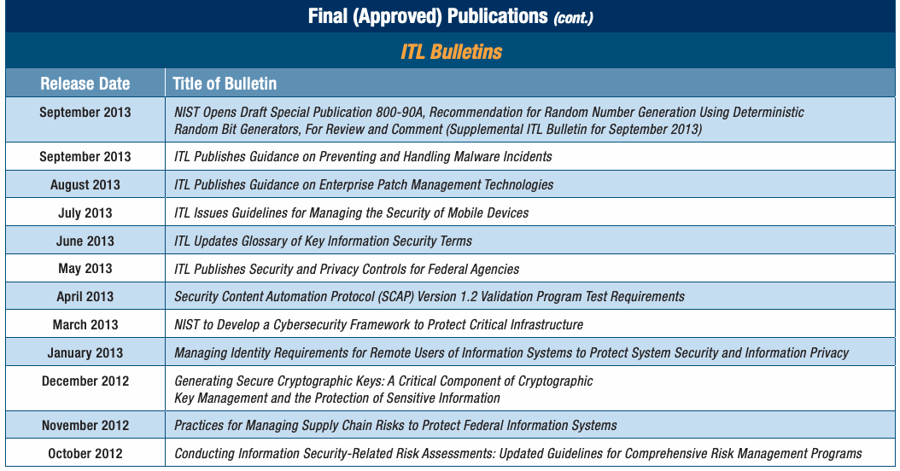
| Final (Approved) Publications (cont.)（最終版［承認済み］刊行物 続き） | |
| ITL Bulletins | |
| 公開日 | 速報タイトル |
| 2013年9月 | NISTが草案Special Publication 800-90A「決定論的乱数ビット生成器を用いる乱数生成の推奨事項」をレビューおよびコメントのため公開（2013年9月補足ITL Bulletin） |
| 2013年9月 | ITLがマルウェアインシデントの防止および処理に関するガイダンスを公開 |
| 2013年8月 | ITLがエンタープライズパッチ管理技術に関するガイダンスを公開 |
| 2013年7月 | ITLがモバイルデバイスのセキュリティ管理ガイドラインを発行 |
| 2013年6月 | ITLが主要な情報セキュリティ用語の用語集を更新 |
| 2013年5月 | ITLが連邦機関向けのセキュリティおよびプライバシー管理策を公開 |
| 2013年4月 | Security Content Automation Protocol (SCAP) Version 1.2検証プログラム試験要件 |
| 2013年3月 | NISTが重要インフラを保護するサイバーセキュリティ枠組みを策定 |
| 2013年1月 | システムセキュリティおよび情報プライバシーを保護するための、情報システムの遠隔利用者に関するID要件の管理 |
| 2012年12月 | セキュアな暗号鍵の生成：暗号鍵管理と機密情報保護の重要な要素 |
| 2012年11月 | 連邦情報システムを保護するサプライチェーンリスク管理実務 |
| 2012年10月 | 情報セキュリティ関連リスク評価の実施：包括的リスク管理プログラムのための改訂ガイドライン |
elements, system interfaces, and security controls required to
要素、システムインターフェース、および必要なセキュリティ管理策を
未レビュー訳Abstracts of NIST Technical Series
NIST Technical Series刊行物の抄録
未レビュー訳securely store, process, and retrieve identity credentials from
カードからID資格情報を安全に保管、処理、取得する
未レビュー訳Publications Released in FY 2013
2013会計年度に発行された刊行物
未レビュー訳the card.
カード。
未レビュー訳The following sections provide abstracts and contact information for the draft and final FIPS, NIST SPs, and security- Contacts: related NISTIRs listed in the previous section. These publications Ms. Hildegard Ferraiolo
次の各節では、前節に掲載した草案および最終版のFIPS、NIST SP、および関連するNISTIRの抄録と連絡先情報を示す。これらの刊行物は 連絡先：
未レビュー訳Dr. David Cooper
David Cooper博士
未レビュー訳hildegard.ferraiolo@nist.gov david.cooper@nist.gov
hildegard.ferraiolo@nist.gov david.cooper@nist.gov
未レビュー訳are available at http://csrc.nist.gov/publications.
http://csrc.nist.gov/publications. これらは入手できる。
未レビュー訳Mr. Salvatore Francomacaro Mr. Ketan Mehta
Mr. Salvatore Francomacaro Mr. Ketan Mehta
未レビュー訳ª Federal Information Processing
ª 連邦情報処理
未レビュー訳salvatore.francomacaro@nist.gov ketan.mehta@nist.gov
salvatore.francomacaro@nist.gov ketan.mehta@nist.gov
未レビュー訳Standards (FIPS)
規格（FIPS）
未レビュー訳Ms. Annie Sokol annie.sokol@nist.gov
Ms. Annie Sokol annie.sokol@nist.gov
未レビュー訳FIPS 201-2, Personal Identity Verification (PIV) of Federal Employees and Contractors
FIPS 201-2, Federal Employees and Contractorsの個人識別検証（PIV）
未レビュー訳FIPS 186-4, Digital Signature Standard (DSS)
FIPS 186-4, Digital Signature Standard (DSS)
未レビュー訳This standard specifies the architecture and technical
この規格は、連邦政府職員および契約業者の共通識別標準に関するアーキテクチャおよび技術
未レビュー訳This standard specifies a suite of algorithms that can be used
この規格は、デジタル署名の生成に使用できる一連のアルゴリズムを規定する。
未レビュー訳requirements for a common identification standard for federal
要件を規定する。
未レビュー訳to generate a digital signature. Digital signatures are used to
デジタル署名を生成するために使用される。デジタル署名は、データへの
未レビュー訳employees and contractors. The overall goal is to achieve
職員および契約業者。全体的な目標は、適切なセキュリティ保証を複数のアプリケーションで実現することである。
未レビュー訳detect unauthorized modifications to data and to authenticate
不正な変更を検知し、認証するために使用される。
未レビュー訳appropriate security assurance for multiple applications by
複数のアプリケーションで適切なセキュリティ保証を実現することである。
未レビュー訳the identity of the signatory. In addition, the recipient of signed
署名者の本人性。さらに、署名済み
未レビュー訳efficiently verifying the claimed identity of individuals seeking
本人確認を求める個人の申告された本人性を効率的に検証する
未レビュー訳data can use a digital signature as evidence in demonstrating
データの受信者は、デジタル署名を証拠として使用し、
未レビュー訳physical access to federally controlled government facilities
連邦政府が管理する政府施設への物理的アクセス
未レビュー訳to a third party that the signature was, in fact, generated by the
第三者に対して、署名が実際に次の者によって生成されたことを立証する
未レビュー訳and logical access to government information systems. The
および政府情報システムへの論理的アクセスを実現する。この
未レビュー訳claimed signatory. This is known as non-repudiation, since the
申告された署名者。これを否認防止と呼ぶ。なぜなら、
未レビュー訳standard contains the minimum requirements for a federal
この標準は、連邦政府の
未レビュー訳signatory cannot easily repudiate the signature at a later time.
署名者は後に署名を容易に否認できないためである。
未レビュー訳personal identity verification system that meets the control and security objectives of Homeland Security Presidential
Homeland Security Presidential Directive-12 (HSPD-12)の管理およびセキュリティ目標を満たす個人識別検証システム
未レビュー訳Contact:
連絡先：
未レビュー訳Directive-12 (HSPD-12), including identity proofing, registration,
（HSPD-12）に従い、本人確認、登録、
未レビュー訳Ms. Elaine Barker
Elaine Barker氏
未レビュー訳and issuance. The standard also provides detailed specifications
および発行を含む。この標準は詳細な仕様も定める。
未レビュー訳elaine.barker@nist.gov
elaine.barker@nist.gov
未レビュー訳that will support technical interoperability among PIV systems of federal departments and agencies. It describes the card
連邦省庁および機関のPIVシステム間の技術的相互運用性を支援する仕様である。カードについて説明する
未レビュー訳ª NIST Special Publications (SPs)
原文更新後、再確認待ち
Draft SP 800-162, Guide to Attribute Based Access Control (ABAC) Definition and Considerations This document provides federal agencies with a definition
草案SP 800-162, Guide to Attribute Based Access Control (ABAC) Definition and Considerations（属性ベースアクセス制御（ABAC）の定義および考慮事項に関するガイド）。この文書は連邦機関に定義を提供する。
未レビュー訳SP 800-165, Computer Security Division
SP 800-165, Computer Security Division
未レビュー訳of Attribute Based Access Control (ABAC). ABAC is a logical
属性ベースアクセス制御（ABAC）。ABACは論理的な
未レビュー訳2012 Annual Report
2012年次報告書
未レビュー訳access control methodology where authorization to perform
アクセス制御方式であり、操作の実行を認可するかどうかは属性を評価して
未レビュー訳Title III of the E-Government Act of 2002, entitled the
2002年E-Government Act第III編（題名：
未レビュー訳a set of operations is determined by evaluating attributes
一連の操作に対する認可が、属性を評価することによって決定される
未レビュー訳Federal Information Security Management Act (FISMA) of 2002,
2002年Federal Information Security Management Act (FISMA)は、
未レビュー訳associated with the subject, object, requested operations, and,
主体、対象、要求された操作、および
未レビュー訳requires NIST to prepare an annual public report on activities
NISTに対し、活動に関する前年の実績および翌年の計画をまとめた年次公開報告書を作成するよう求めている。
未レビュー訳in some cases, environment conditions against policy, rules, or
場合によっては、環境条件も、ポリシー、規則、または
未レビュー訳undertaken in the previous year, and planned for the coming
実施した活動、および来年度に計画する活動を
未レビュー訳relationships that describe the allowable operations for a given
特定の属性セットについて許可される操作を記述する関係に照らして評価される。
未レビュー訳year, to carry out responsibilities under this law. The primary goal of the Computer Security Division (CSD), a component of set of attributes.This document also provides considerations for NIST s Information Technology Laboratory (ITL), is to provide using ABAC to improve information sharing within organizations standards and technology that protects information systems and between organizations while maintaining control of that against threats to the confidentiality, integrity, and availability information. of information and services. During FY 2013, CSD successfully responded to numerous challenges and opportunities in fulfilling Contacts: that mission. Through CSD’s diverse research agenda and Dr. Vincent Hu
属性セットを決定する。本文書は、組織内および組織間の情報共有を改善しつつ、その情報の管理を維持するためにABACを使用する際の考慮事項も示す。 NISTのInformation Technology Laboratory (ITL)の一部門であるComputer Security Division (CSD)の主な目標は、情報およびサービスの機密性、完全性、可用性に対する脅威から情報システムを保護する標準および技術を提供することである。2013会計年度にCSDは、その使命を果たすうえで多数の課題と機会に適切に対応した。多様な研究計画と 連絡先：Vincent Hu博士
未レビュー訳Mr. David Ferraiolo
David Ferraiolo氏
未レビュー訳engagement in many national priority initiatives, high-quality, vhu@nist.gov
数多くの国家的優先施策への関与を通じて、高品質で、vhu@nist.gov
未レビュー訳david.ferraiolo@nist.gov
david.ferraiolo@nist.gov
未レビュー訳cost-effective security and privacy mechanisms were developed
費用対効果の高いセキュリティおよびプライバシーメカニズムを開発し、
未レビュー訳Mr. Rick Kuhn
Rick Kuhn氏
未レビュー訳and applied that improved information security across the
適用した結果、情報セキュリティが向上した。
未レビュー訳rkuhn@nist.gov
rkuhn@nist.gov
未レビュー訳Federal Government and the greater information security community. This annual report highlights the research agenda
連邦政府およびより広範な情報セキュリティコミュニティ全体において。本年次報告書では研究計画を紹介する。
未レビュー訳Draft SP 800-161, Supply Chain Risk
草案SP 800-161, Supply Chain Risk（サプライチェーンリスク）
未レビュー訳and activities in which CSD was engaged during FY 2013.
および、2013会計年度にCSDが従事した活動。
未レビュー訳Management Practices for Federal Information Systems and Organizations
連邦情報システムおよび組織の管理実務
未レビュー訳Contacts:
連絡先：
未レビュー訳The Information and Communications Technology (ICT) supply
情報通信技術（ICT）サプライ
未レビュー訳Mr. Patrick O’Reilly
Patrick O’Reilly氏
未レビュー訳Mr. Kevin Stine
Kevin Stine氏
未レビュー訳chain is a complex, globally distributed system of interconnected
チェーンは、相互接続されたネットワークからなる、複雑で世界規模に分散したシステムであり、
未レビュー訳patrick.oreilly@nist.gov
patrick.oreilly@nist.gov
未レビュー訳kevin.stine@nist.gov
kevin.stine@nist.gov
未レビュー訳networks that are logically long, with geographically diverse routes and multiple tiers of outsourcing. This system of
論理的に長く、地理的に多様な経路と複数段階の外部委託を伴う。このシステムの
未レビュー訳Draft SP 800-164, Guidelines on Hardware-Rooted
ドラフト SP 800-164「ハードウェアを信頼の基点とする
未レビュー訳networks includes organizations, people, processes, products,
ネットワークには、組織、人々、プロセス、製品、
未レビュー訳Security in Mobile Devices
モバイルデバイスにおけるセキュリティ
未レビュー訳and services and the infrastructure supporting the system
および、システムを支えるサービスとインフラストラクチャが含まれる。
未レビュー訳Many mobile devices are not capable of providing strong
多くのモバイルデバイスは、エンドユーザーおよび組織に強固な
未レビュー訳development life cycle, including research and development
研究開発を含む開発ライフサイクル
未レビュー訳security assurances to end users and organizations. Current
セキュリティ保証を提供できない。現在の
未レビュー訳(R&D), design, manufacturing, acquisition, delivery, integration,
(R&D)、設計、製造、調達、納入、統合、
未レビュー訳mobile devices lack the hardware-based roots of trust that are
モバイルデバイスには、ハードウェアベースの信頼の基点がない。
未レビュー訳operations, and disposal/retirement of an organization’s ICT
それらは、ラップトップやその他の種類のホストにますます組み込まれている。この
未レビュー訳increasingly built into laptops and other types of hosts. This
組織のICT製品（すなわち、ハードウェアおよびソフトウェア）とサービスの運用および廃棄／退役。
未レビュー訳products (i.e., hardware and software) and services.
製品（すなわち、ハードウェアおよびソフトウェア）とサービス。
未レビュー訳document focuses on defining the fundamental security primitives and capabilities needed to enable more secure mobile device Today’s ICT supply chains have increased complexity, diversity, use. This document is intended to accelerate industry efforts and scale, while Federal Government information systems have to implement these primitives and capabilities. The guidelines been rapidly expanding in terms of capability and number, with in this document are intended to provide a baseline of security an increased reliance on outsourcing and commercially available technologies that can be implemented across a wide range products. These trends have caused federal departments and of mobile devices to help secure organization-issued mobile agencies to have a lack of visibility and understanding throughout devices as well as devices brought into an organization, such the supply chain of how the technology being acquired is as personally-owned devices used in enterprise environments developed, integrated, and deployed, as well as the processes, (e.g., Bring Your Own Device (BYOD)).
この文書は、モバイルデバイスをより安全に使用するために必要な基本的なセキュリティプリミティブと能力を定義することに重点を置く。この文書は、これらのプリミティブと能力を実装する業界の取り組みを加速することを目的とする。この文書の指針は、組織が支給するモバイルデバイス、および組織に持ち込まれるデバイス（企業環境で使用される個人所有デバイス、例えば Bring Your Own Device (BYOD)）の保護に役立つよう、幅広いモバイルデバイスに実装できるセキュリティ技術のベースラインを提供することを意図している。今日のICTサプライチェーンは、複雑性、多様性、規模が増大している一方、連邦政府の情報システムは、機能および数の両面で急速に拡大し、外部委託および市販製品への依存も高まっている。こうした傾向により、連邦省庁は、取得する技術がサプライチェーン全体でどのように開発、統合、展開されるか、また製品およびサービスの完全性、セキュリティ、レジリエンス、品質を確保するためにどのようなプロセス、手順、慣行が用いられるかについて、可視性と理解を欠くようになった。
未レビュー訳procedures, and practices used to assure the integrity, security, resilience, and quality of the products and services. This lack of
手順および慣行、ならびに製品およびサービスの完全性、セキュリティ、レジリエンス、品質を確保するために用いられる方法。この可視性と理解の欠如は、
未レビュー訳Contacts:
連絡先：
未レビュー訳visibility and understanding, in turn, has decreased the control federal departments and agencies have with regard to the
可視性と理解の低下は、ひいては、連邦省庁がサプライチェーンを通じて引き継がれるリスクに影響する
未レビュー訳Dr. Lily Chen
Lily Chen博士
未レビュー訳Mr. Joshua Franklin
Joshua Franklin氏
未レビュー訳lily.chen@nist.gov
lily.chen@nist.gov
未レビュー訳joshua.franklin@nist.gov
joshua.franklin@nist.gov
未レビュー訳decisions impacting the inherited risks traversing the supply chain and the ability to effectively manage those risks.
意思決定に対する連邦省庁の統制力、およびそれらのリスクを効果的に管理する能力を低下させた。
未レビュー訳Mr. Andrew Regenscheid andrew.regenscheid@nist.gov
Andrew Regenscheid氏 andrew.regenscheid@nist.gov
未レビュー訳SP 800-161 provides guidance to federal departments and agencies on identifying, assessing, and mitigating ICT supply chain risks at all levels in their organizations. SP 800-161
SP 800-161は、連邦省庁に対し、組織内のあらゆるレベルでICTサプライチェーンリスクを特定、評価、軽減するための指針を示す。SP 800-161
未レビュー訳integrates ICT Supply Chain Risk Management (SCRM) into recommendations for securing mobile devices throughout their federal agency enterprise risk management activities by applying life cycles. The scope of this publication includes securing both a multi-tiered SCRM-specific approach, including supply chain organization-provided and personally-owned (bring your own risk assessments and supply chain risk mitigation activities and device (BYOD)) mobile devices. [Supersedes SP 800-124.] guidance. Contact: Contacts:
原文更新後、再確認待ち
Mr. Murugiah Souppaya murugiah.souppaya@nist.gov
Murugiah Souppaya氏 murugiah.souppaya@nist.gov
未レビュー訳Mr. Jon Boyens
Jon Boyens氏
未レビュー訳Ms. Celia Paulsen
Celia Paulsen氏
未レビュー訳jon.boyens@nist.gov
jon.boyens@nist.gov
未レビュー訳celia.paulsen@nist.gov
celia.paulsen@nist.gov
未レビュー訳Draft SP 800-101 Revision 1, Guidelines
ドラフト SP 800-101 改訂1「指針」
未レビュー訳SP 800-133, Recommendation for
SP 800-133「暗号鍵生成に関する
未レビュー訳on Mobile Device Forensics
モバイルデバイス・フォレンジックについて
未レビュー訳Cryptographic Key Generation
暗号鍵生成に関する推奨事項」
未レビュー訳Mobile device forensics is the science of recovering digital
モバイルデバイス・フォレンジックとは、法科学的に健全な条件下で、認められた方法を用いてモバイルデバイスからデジタル証拠を回収する科学である。
未レビュー訳Cryptography is often used in an information technology evidencefromamobiledeviceunderforensicallysoundconditions security environment to protect data that is sensitive, has using accepted methods. Mobile device forensics is an evolving a high value, or is vulnerable to unauthorized disclosure or specialty in the field of digital forensics. This guide attempts to undetected modification during transmission or while in storage. bridge the gap by providing an in-depth look into mobile devices Cryptography relies upon two basic components: an algorithm and explaining technologies involved and their relationship to (or cryptographic methodology) and a cryptographic key. This forensic procedures. This document covers mobile devices Recommendation discusses the generation of the keys to be with features beyond simple voice communication and text managed and used by the approved cryptographic algorithms. messaging capabilities.This guide also discusses procedures for
暗号技術は、情報技術環境において、機微なデータ、高い価値を持つデータ、または伝送中もしくは保存中に不正開示や検知されない改ざんを受けるおそれのあるデータを保護するためによく用いられる。暗号技術は、アルゴリズム（または暗号方式）と暗号鍵という二つの基本要素に依存する。この推奨事項は、承認された暗号アルゴリズムで管理・使用する鍵の生成を扱う。モバイルデバイス・フォレンジックの証拠は、法科学的に健全な条件下で認められた方法を用いて回収する。モバイルデバイス・フォレンジックはデジタル・フォレンジック分野で発展途上の専門領域である。本ガイドは、モバイルデバイスと関連技術、およびフォレンジック手順との関係を詳述する。この文書は単純な音声通信とテキストメッセージ機能を超えるモバイルデバイスを対象とする。このガイドは手順についても説明する。
未レビュー訳the validation, preservation, acquisition, examination, analysis, and reporting of digital information.
デジタル情報の検証、保全、取得、検査、分析、および報告。
未レビュー訳Contacts: Ms. Elaine Barker
連絡先：Elaine Barker氏
未レビュー訳Dr. Allen Roginsky
Allen Roginsky博士
未レビュー訳Contact:
連絡先：
未レビュー訳elaine.barker@nist.gov
elaine.barker@nist.gov
未レビュー訳allen.roginsky@nist.gov
allen.roginsky@nist.gov
未レビュー訳Mr. Richard Ayers
Richard Ayers氏
未レビュー訳SP 800-130, A Framework for Designing
SP 800-130「暗号鍵管理システム設計のためのフレームワーク」
未レビュー訳richard.ayers@nist.gov
richard.ayers@nist.gov
未レビュー訳Cryptographic Key Management Systems
暗号鍵管理システム
未レビュー訳Draft SP 800-90 Series, Random Bit Generators:
ドラフト SP 800-90シリーズ「乱数ビット生成器：
未レビュー訳This Framework for Designing Cryptographic Key Management
暗号鍵管理システム設計のためのこのフレームワーク（CKMS）は、CKMS設計者がCKMS設計仕様を策定する際に検討すべきトピックを含む。
未レビュー訳Draft SP 800-90A Revision 1, Recommendation
ドラフト SP 800-90A 改訂1「推奨事項
未レビュー訳Systems (CKMS) contains topics that should be considered by a CKMS designer when developing a CKMS design specification.For for Random Number Generation Using Deterministic each topic, there are one or more documentation requirements
暗号鍵管理システム（CKMS）には、CKMS設計者がCKMS設計仕様を策定するときに検討すべきトピックが含まれる。決定論的乱数生成に関して、各トピックには対処すべき文書化要件が一つ以上ある。
未レビュー訳Random Bit Generators
乱数ビット生成器」
未レビュー訳that need to be addressed by the design specification. Thus, any
設計仕様で扱う必要がある。したがって、いずれの
未レビュー訳This Recommendation specifies mechanisms for the
この推奨事項は、
未レビュー訳CKMS that addresses each of these requirements would have a
これらの要件のそれぞれに対応するCKMSは、
未レビュー訳generation of random bits using deterministic methods. The
決定論的方法を用いた乱数ビットの生成に関するメカニズムを規定する。
未レビュー訳design specification that is compliant with this Framework.
本フレームワークに準拠した設計仕様を備える。
未レビュー訳methods provided are based on hash functions, block cipher algorithms, or number theoretic problems.
提示される方法は、ハッシュ関数、ブロック暗号アルゴリズム、または数論的問題に基づく。
未レビュー訳Contact:
連絡先：
未レビュー訳Draft SP 800-90B, Recommendation for the Entropy
ドラフト SP 800-90B「乱数ビット生成に使用するエントロピー
未レビュー訳Ms. Elaine Barker elaine.barker@nist.gov
Elaine Barker氏 elaine.barker@nist.gov
未レビュー訳Sources Used for Random Bit Generation This Recommendation specifies the design principles and
ソースに関する推奨事項。この推奨事項は、乱数ビット生成器に用いるエントロピーソースの設計原則・要件、およびエントロピーソースの検証試験を規定する。
未レビュー訳SP 800-124 Revision 1, Guidelines for Managing the
SP 800-124 改訂1「企業におけるモバイルデバイスのセキュリティ管理に関する指針」
未レビュー訳requirements for the entropy sources used by Random Bit
乱数ビット生成器に用いるエントロピーソースの要件、およびその検証試験。
未レビュー訳Security of Mobile Devices in the Enterprise
スマートフォンやタブレットなどのモバイルデバイスは、通常、機密性、完全性、可用性という複数のセキュリティ目標を支援する必要がある。
未レビュー訳Generators, and the tests for the validation of entropy sources.
この推奨事項は、乱数ビット生成器に用いるエントロピーソースの設計原則・要件と、エントロピーソースの検証試験を規定する。
未レビュー訳Mobile devices, such as smart phones and tablets, typically These entropy sources are intended to be combined with need to support multiple security objectives: confidentiality, Deterministic Random Bit Generator mechanisms that are integrity, and availability. To achieve these objectives, mobile specified in SP 800-90A to construct Random Bit Generators, as devices should be secured against a variety of threats. The specified in SP 800-90C. purpose of this publication is to help organizations centrally
スマートフォンやタブレットなどのモバイルデバイスは、通常、機密性、完全性、可用性という複数のセキュリティ目標を支援する必要がある。これらの目標を達成するには、モバイルデバイスを多様な脅威から保護する必要がある。この刊行物の目的は、組織がモバイルデバイスを一元的に保護することを支援することである。エントロピーソースは、SP 800-90Aに規定される決定論的乱数ビット生成器のメカニズムと組み合わせ、SP 800-90Cに規定される乱数ビット生成器を構成することを意図している。
未レビュー訳Draft SP 800-90C, Recommendation for Random
ドラフト SP 800-90C「乱数
未レビュー訳manage the security of mobile devices. Laptops are out of the
モバイルデバイスのセキュリティを管理する。ラップトップは本刊行物の適用範囲外であり、基本的な携帯電話など計算能力が最小限のモバイルデバイスも対象外である。本刊行物は、一元管理技術の選択、実装、使用に関する推奨事項を示し、モバイルデバイス利用に内在するセキュリティ上の懸念を説明し、
未レビュー訳Bit Generator (RBG) Constructions
ビット生成器（RBG）の構成」
未レビュー訳scope of this publication, as are mobile devices with minimal computing capability, such as basic cell phones. This publication This Recommendation specifies constructions for the provides recommendations for selecting, implementing, and implementation of random bit generators (RBGs). An RBG may using centralized management technologies, and it explains the be a deterministic random bit generator (DRBG) or a non-security concerns inherent in mobile device use and provides deterministic random bit generator (NRBG). The constructed
本推奨事項は、乱数ビット生成器（RBG）の実装構成を規定する。RBGは、決定論的乱数ビット生成器（DRBG）または非決定論的乱数ビット生成器（NRBG）であり得る。構成された
未レビュー訳Computer Security Division Annual Report - 2013
コンピュータセキュリティ部門 年次報告書－2013
未レビュー訳RBGs consist of DRBG mechanisms as specified SP 800-90A and each of which contains information about a small portion of the entropy sources as specified in SP 800-90B.
RBGは、SP 800-90Aに規定されるDRBGメカニズムから構成され、それぞれがSP 800-90Bに規定されるエントロピーソースの一部に関する情報を含む。
未レビュー訳domain name space. The domain name data provided by DNS is intended to be available to any computer located anywhere in the Internet. This document provides deployment guidelines
ドメイン名空間。DNSが提供するドメイン名データは、インターネット上のどこにあるコンピュータからも利用できることを意図している。この文書は、
未レビュー訳Contacts:
連絡先：
未レビュー訳for securing DNS within an enterprise. Because DNS data is
企業内DNSを保護するための展開指針を示す。DNSデータは
未レビュー訳Ms. Elaine Barker
Elaine Barker氏
未レビュー訳Dr. John Kelsey
John Kelsey博士
未レビュー訳meant to be public, preserving the confidentiality of DNS data
公開を前提としているため、DNSデータの機密性を維持することは懸念事項ではない。
未レビュー訳elaine.barker@nist.gov
elaine.barker@nist.gov
未レビュー訳john.kelsey@nist.gov
john.kelsey@nist.gov
未レビュー訳is not a concern. The primary security goals for DNS are data integrity and source authentication, which are needed to ensure
主要なDNSセキュリティ目標はデータ完全性と送信元認証であり、これらは、ドメイン名情報の真正性を確保し、
未レビュー訳SP 800-83 Revision 1, Guide to Malware Incident
SP 800-83 改訂1「デスクトップおよびラップトップのマルウェアインシデント防止・対応ガイド」
未レビュー訳the authenticity of domain name information and maintain the
ドメイン名情報の真正性を確保し、
未レビュー訳Prevention and Handling for Desktops and Laptops
マルウェア（悪意のあるコードとも呼ばれる）とは、
未レビュー訳integrity of domain name information in transit. This document
伝送中のドメイン名情報の完全性を維持するために必要である。この文書は、
未レビュー訳Malware, also known as malicious code, refers to a program
別のプログラムにひそかに挿入され、次の意図を持つプログラムを指す。
未レビュー訳provides extensive guidance on maintaining data integrity and
データ完全性の維持および
未レビュー訳that is covertly inserted into another program with the intent to
データを破壊し、破壊的または侵入的なプログラムを実行し、あるいはその他の方法で
未レビュー訳performing source authentication. DNS components are often
送信元認証を実施するための詳細な指針を示す。DNSコンポーネントはしばしば
未レビュー訳destroy data, run destructive or intrusive programs, or otherwise
データを破壊し、破壊的または侵入的なプログラムを実行し、あるいはその他の方法で
未レビュー訳subjected to denial-of-service attacks intended to disrupt
DNSサービスを妨害する意図のサービス拒否攻撃を受ける。
未レビュー訳compromise the confidentiality, integrity, or availability of
機密性、完全性、または可用性を侵害する。
未レビュー訳access to the resources whose domain names are handled
ドメイン名がDNSコンポーネントによって処理されるリソースへのアクセスを
未レビュー訳the victim’s data, applications, or operating system. Malware
被害者のデータ、アプリケーション、またはオペレーティングシステム。マルウェアは
未レビュー訳by the attacked DNS components. This document presents
攻撃を受けたDNSコンポーネントによって処理される。本書は
未レビュー訳is the most common external threat to most hosts, causing
ほとんどのホストに対する最も一般的な外部脅威であり、広範な
未レビュー訳guidelines for configuring DNS deployments to prevent many
多くのサービス拒否攻撃を防ぐためのDNS展開の構成に関する指針を示す。
未レビュー訳widespread damage and disruption and necessitating extensive
損害と混乱を引き起こし、大規模な
未レビュー訳denial-of-service attacks that exploit vulnerabilities in various
さまざまなDNSコンポーネントの脆弱性を悪用するサービス拒否攻撃。
未レビュー訳recovery efforts within most organizations. This publication
復旧作業をほとんどの組織に必要とさせる。この刊行物は
未レビュー訳DNS components. [Supersedes SP 800-81 Revision 1.]
DNSコンポーネント。[SP 800-81 改訂1に取って代わる。]
未レビュー訳provides recommendations for improving an organization’s malware incident prevention measures. It also gives extensive
組織のマルウェアインシデント防止対策を改善する推奨事項を示す。また、詳細な
未レビュー訳Contact:
連絡先：
未レビュー訳recommendations for enhancing an organization’s existing
既存のインシデント対応能力を強化するための推奨事項を示し、
未レビュー訳Dr. Chandramouli (Mouli) Ramaswamy
Chandramouli（Mouli）Ramaswamy博士
未レビュー訳incident response capability so that it is better prepared to handle
マルウェアインシデント、特に広範囲に及ぶものへの対応準備を強化する。
未レビュー訳mouli@nist.gov
mouli@nist.gov
未レビュー訳malware incidents, particularly widespread ones. [Supersedes SP 800-83.]
マルウェアインシデント、特に広範囲に及ぶもの。[SP 800-83に取って代わる。]
未レビュー訳Draft SP 800-78-4, Cryptographic Algorithms and Key Sizes for Personal Identity Verification
ドラフト SP 800-78-4「個人識別検証（PIV）のための暗号アルゴリズムおよび鍵長」
未レビュー訳Contact:
連絡先：
未レビュー訳FIPS 201 defines requirements for the PIV lifecycle activities,
FIPS 201は、PIVライフサイクル活動に関する要件を定義する。
未レビュー訳Mr. Murugiah Souppaya
Murugiah Souppaya氏
未レビュー訳including identity proofing, registration, PIV Card issuance, and
本人確認、登録、PIVカード発行、および
未レビュー訳murugiah.souppaya@nist.gov
murugiah.souppaya@nist.gov
未レビュー訳PIV Card usage. FIPS 201 also defines the structure of an identity credential that includes cryptographic keys. This document
PIVカードの使用を含む。FIPS 201は、暗号鍵を含む本人確認資格情報の構造も定義する。この文書は
未レビュー訳SP 800-82 Revision 1, Guide to Industrial
SP 800-82 改訂1「産業用
未レビュー訳contains the technical specifications needed for the mandatory
FIPS 201で規定される必須および
未レビュー訳Control Systems (ICS) Security
制御システム（ICS）のセキュリティに関するガイド」
未レビュー訳and optional cryptographic keys specified in FIPS 201, as well
FIPS 201で規定される任意の暗号鍵、ならびに
未レビュー訳This document provides guidance on how to secure
この文書は、産業用制御システム（ICS）を保護する方法について指針を示す。
未レビュー訳as the supporting infrastructure specified in FIPS 201 and the
FIPS 201で規定される支援インフラストラクチャ、および
未レビュー訳Industrial Control Systems (ICS), including Supervisory Control
監視制御・データ収集（SCADA）システムを含む産業用制御システム（ICS）、分散制御
未レビュー訳related SP 800-73, Interfaces for Personal Identity Verification,
個人識別検証のためのインターフェースに関する関連文書 SP 800-73、および
未レビュー訳and Data Acquisition (SCADA) systems, Distributed Control
データ収集（SCADA）システム、分散制御
未レビュー訳and SP 800-76, Biometric Data Specification for Personal Identity
個人識別検証のための生体データ仕様に関する SP 800-76、および
未レビュー訳Systems (DCS), and other control system configurations such
システム（DCS）ならびに、
未レビュー訳Verification, that rely on cryptographic functions.
暗号機能に依存する個人識別検証。
未レビュー訳as Programmable Logic Controllers (PLC), while addressing their unique performance, reliability, and safety requirements.
プログラマブル・ロジック・コントローラ（PLC）などの制御システム構成を含み、固有の性能、信頼性、安全性要件にも対処する。
未レビュー訳Contacts:
連絡先：
未レビュー訳The document provides an overview of ICS and typical system
この文書は、ICSおよび典型的なシステム
未レビュー訳Ms. Hildegard (Hildy) Ferraiolo Dr. David Cooper
Hildegard（Hildy）Ferraiolo氏 David Cooper博士
未レビュー訳topologies, identifies typical threats and vulnerabilities to these
トポロジーの概要を示し、これらのシステムに対する典型的な脅威と脆弱性を特定し、
未レビュー訳hildegard.ferraiolo@nist.gov david.cooper@nist.gov
hildegard.ferraiolo@nist.gov david.cooper@nist.gov
未レビュー訳systems, and provides recommended security countermeasures to mitigate the associated risks. [Supersedes SP 800-82.]
関連リスクを軽減するための推奨セキュリティ対策を示す。[SP 800-82に取って代わる。]
未レビュー訳Mr. William Burr
William Burr氏
未レビュー訳Mr. Tim Polk
Tim Polk氏
未レビュー訳william.burr@nist.gov
william.burr@nist.gov
未レビュー訳william.polk@nist.gov
william.polk@nist.gov
未レビュー訳Contact:
連絡先：
未レビュー訳SP 800-76-2, Biometric Specifications for
SP 800-76-2「生体認証仕様：
未レビュー訳Mr. Keith Stouffer
Keith Stouffer氏
未レビュー訳Personal Identity Verification
個人識別検証」
未レビュー訳keith.stouffer@nist.gov
keith.stouffer@nist.gov
未レビュー訳Homeland Security Presidential Directive HSPD-12, Policy for
国土安全保障大統領指令 HSPD-12「
未レビュー訳SP 800-81-2, Secure Domain Name
SP 800-81-2「セキュアなドメイン名
未レビュー訳a Common Identification Standard for Federal Employees and
連邦職員および
未レビュー訳System (DNS) Deployment Guide
システム（DNS）展開ガイド」
未レビュー訳Contractors, called for new standards to be adopted governing
請負業者のための共通識別規格に関する方針」は、物理的および論理的アクセスを可能にする相互運用可能な本人確認資格情報の使用を規定する新たな標準の採用を求めた。
未レビュー訳The Domain Name System (DNS) is a distributed computing interoperable use of identity credentials to allow physical and system that enables access to Internet resources by user-friendly logical access to Federal Government locations and systems. domain names rather than IP addresses, by translating domain FIPS 201, Personal Identity Verification (PIV) of Federal names to IP addresses and back.The DNS infrastructure is made Employees and Contractors, was developed to define procedures up of computing and communication entities called Name Servers and specifications for issuance and use of an interoperable
ドメイン名システム（DNS）は、IPアドレスではなく使いやすいドメイン名でインターネット資源にアクセスできるようにする分散コンピューティングシステムであり、ドメイン名をIPアドレスに、またその逆に変換する。DNSインフラストラクチャは、Name Serverと呼ばれるコンピューティングおよび通信エンティティで構成される。国土安全保障大統領指令 HSPD-12「連邦職員および請負業者のための共通識別規格に関する方針」は、連邦政府の場所およびシステムへの物理的・論理的アクセスを可能にする相互運用可能な本人確認資格情報の利用を定める新たな標準の採用を求めた。FIPS 201「連邦職員および請負業者の個人識別検証（PIV）」は、資格情報の発行と使用に関する手順および仕様を定めるために策定された。
未レビュー訳identity credential. This document, SP 800-76, is a companion
原文更新後、再確認待ち
SP 800-63-2, Electronic Authentication Guideline
SP 800-63-2「電子認証ガイドライン」
未レビュー訳document to FIPS 201. It describes technical acquisition and
FIPS 201に付属する文書。この文書は、技術的な調達および
未レビュー訳This recommendation provides technical guidelines for
この推奨事項は、
未レビュー訳formatting specifications for the PIV system, including the PIV
PIVシステムの形式仕様（PIV
未レビュー訳federal agencies implementing electronic authentication and is
電子認証を実装する連邦機関向けの技術指針を示すものであり、
未レビュー訳Card itself. It also establishes minimum accuracy specifications
カード自体を含む。また、展開済みの生体認証プロセスについて、最低限の精度仕様を定める。
未レビュー訳not intended to constrain the development or use of standards
この目的以外での標準の開発または使用を制限することを意図しない。
未レビュー訳for deployed biometric authentication processes. The approach
展開済みの生体認証プロセスに対するアプローチは、
未レビュー訳outside of this purpose. The recommendation covers remote
本推奨事項の対象外である。本推奨事項は、従業員、請負業者、または
未レビュー訳is to enumerate procedures and formats for collection and
指紋、虹彩、顔データの収集および準備の手順と形式を列挙し、
未レビュー訳authentication of users (such as employees, contractors, or
従業員、請負業者、または
未レビュー訳preparation of fingerprint, iris, and facial data, and to restrict
指紋、虹彩、顔データの収集・準備の手順と形式を列挙し、公開された生体認証標準に一般的に含まれる値や慣行を制限する。
未レビュー訳private individuals) interacting with government IT systems over
民間人）がオープンネットワークを介して政府ITシステムとやり取りする際のユーザー認証を扱う。
未レビュー訳values and practices included generically in published biometric
民間人）がオープンネットワークを介して政府ITシステムとやり取りする際のユーザーを認証する。
未レビュー訳open networks. It defines technical requirements for each of four
オープンネットワーク上で行う。本人確認、登録、
未レビュー訳standards. The primary design objective behind these particular
各保証レベルにおける標準。これらの特定仕様の主な設計目的は、
未レビュー訳levels of assurance in the areas of identity proofing, registration,
本人確認、登録、トークン、管理プロセス、認証プロトコルおよび関連アサーションに関する4つの保証レベルを定める。
未レビュー訳specifications is to enable high performance and universal
これらの仕様の主な設計目的は、高い性能と普遍的な
未レビュー訳tokens, management processes, authentication protocols and
トークン、管理プロセス、認証プロトコルおよび関連アサーション。[SP 800-63-1に取って代わる。]
未レビュー訳interoperability. The introduction of iris and face specifications
相互運用性を実現することである。現行版に虹彩および顔の仕様を導入することで、生体認証に代替モダリティが加わり、
未レビュー訳related assertions. [Supersedes SP 800-63-1.]
関連するアサーション。[SP 800-63-1に取って代わる。]
未レビュー訳into the current edition adds alternative modalities for biometric authentication and extends coverage to persons for whom
現行版への虹彩および顔の仕様の導入により、生体認証の代替モダリティが追加され、
未レビュー訳Contacts:
連絡先：
未レビュー訳fingerprinting is problematic.The addition of on-card comparison offers an alternative to PIN-mediated card activation as well as Dr. Lily Chen
指紋採取が困難な人々にも対象が広がった。カード上での照合の追加は、PINを介したカード有効化に代わる手段となるほか、
未レビュー訳Mr. William Burr
William Burr氏
未レビュー訳lily.chen@nist.gov
lily.chen@nist.gov
未レビュー訳william.burr@nist.gov
william.burr@nist.gov
未レビュー訳an additional authentication method.
追加の認証方法が提供される。
未レビュー訳SP 800-56A Revision 2, Recommendation for
SP 800-56A 改訂2「
未レビュー訳Contacts:
連絡先：
未レビュー訳Pair-Wise Key-Establishment Schemes Using
離散対数暗号」
未レビュー訳Dr. Chandramouli (Mouli)
Chandramouli（Mouli）博士
未レビュー訳Mr. Patrick Grother
Patrick Grother氏
未レビュー訳Discrete Logarithm Cryptography
離散対数暗号」
未レビュー訳Ramaswamy
Ramaswamy
未レビュー訳patrick.grother@nist.gov
patrick.grother@nist.gov
未レビュー訳mouli@nist.gov
mouli@nist.gov
未レビュー訳This recommendation specifies key-establishment schemes based on the discrete logarithm problem over finite fields and
この推奨事項は、有限体および楕円曲線上の離散対数問題に基づく鍵確立方式を規定し、
未レビュー訳Draft SP 800-73-4, Interfaces for
ドラフト SP 800-73-4「
未レビュー訳elliptic curves, including several variations of Diffie-Hellman
Diffie-Hellmanの複数の変種を含む。
未レビュー訳Personal Identity Verification (3 Parts)
個人識別検証（3部構成）のためのインターフェース」
未レビュー訳and Menezes-Qu-Vanstone (MQV) key establishment schemes. [Supersedes SP 800-56A.]
および Menezes-Qu-Vanstone（MQV）鍵確立方式。[SP 800-56Aに取って代わる。]
未レビュー訳Part 1- PIV Card Application Namespace, Data Model and Representation
第1部－PIVカードアプリケーションの名前空間、データモデルおよび表現
未レビュー訳Contacts:
連絡先：
未レビュー訳Part 2- PIV Card Application Card Command Interface
第2部－PIVカードアプリケーションのカードコマンドインターフェース
未レビュー訳Ms. Elaine Barker
Elaine Barker氏
未レビュー訳Dr. Lily Chen
Lily Chen博士
未レビュー訳Part 3- PIV Client Application Programming Interface elaine.barker@nist.gov
第3部－PIVクライアントアプリケーションプログラミングインターフェース elaine.barker@nist.gov
未レビュー訳lily.chen@nist.gov
lily.chen@nist.gov
未レビュー訳FIPS 201 defines the requirements and characteristics of a
FIPS 201は、政府全体で相互運用可能な本人確認資格情報の要件と特性を定義する。
未レビュー訳Dr. Allen Roginsky
Allen Roginsky博士
未レビュー訳government-wide interoperable identity credential. FIPS 201
政府全体で相互運用可能な本人確認資格情報。FIPS 201は
未レビュー訳allen.roginsky@nist.gov
allen.roginsky@nist.gov
未レビュー訳also specifies that this identity credential must be stored on a smart card. This document, SP 800-73, contains the technical
この本人確認資格情報をスマートカードに保存することも規定する。この文書 SP 800-73は、スマートカードとやり取りして
未レビュー訳SP 800-53 Revision 4, Security and Privacy Controls for
SP 800-53 改訂4「連邦情報システムおよび組織のセキュリティおよびプライバシー管理策
未レビュー訳specifications to interface with the smart card to retrieve and
本人確認資格情報を取得し、
未レビュー訳Federal Information Systems and Organizations
連邦情報システムおよび組織」
未レビュー訳use the PIV identity credentials. The specifications reflect the design goals of interoperability and PIV Card functions. The This publication provides a catalog of security and privacy goals are addressed by specifying a PIV data model, card edge controls for federal information systems and organizations interface, and application-programming interface. Moreover, and a process for selecting controls to protect organizational this document enumerates requirements where the international operations (including mission, functions, image, and reputation), integrated circuit card standards [ISO7816] include options organizational assets, individuals, other organizations, and the and branches. The specifications go further by constraining Nation from a diverse set of threats including hostile cyber-implementers’ interpretations of the normative standards. Such attacks, natural disasters, structural failures, and human errors restrictions are designed to ease implementation, facilitate (both intentional and unintentional). The security and privacy interoperability, and ensure performance, in a manner tailored controls are customizable and implemented as part of an for PIV applications.
PIV本人確認資格情報を使用するための技術仕様を含む。これらの仕様は、相互運用性とPIVカードの機能という設計目標を反映する。目標はPIVデータモデル、カードエッジ・インターフェース、およびアプリケーション・プログラミング・インターフェースを規定することで実現される。さらに、国際集積回路カード規格［ISO7816］に含まれる選択肢および分岐に関する要件を列挙する。規範的標準の実装者による解釈を制約することで、PIVアプリケーションに合わせて実装を容易にし、相互運用性を促進し、性能を確保する。この刊行物は、連邦情報システムおよび組織向けのセキュリティ・プライバシー管理策カタログと、任務、機能、イメージ、評判を含む組織運用、組織資産、個人、他組織および国家を、敵対的サイバー攻撃、自然災害、構造的故障、人的過誤（意図的・非意図的）など多様な脅威から保護する管理策選定プロセスを提供する。管理策はカスタマイズ可能であり、
未レビュー訳organization-wide process that manages information security and privacy risk. The controls address a diverse set of security and privacy requirements across the Federal Government and
組織全体で情報セキュリティおよびプライバシーリスクを管理するプロセスの一環として実施される。管理策は連邦政府および
未レビュー訳Contacts:
連絡先：
未レビュー訳critical infrastructure, derived from legislation, Executive Orders,
重要インフラにまたがる多様なセキュリティおよびプライバシー要件を扱う。これらは、法律、大統領令、
未レビュー訳Dr. Chandramouli (Mouli) Dr. David Cooper
Chandramouli（Mouli）博士 David Cooper博士
未レビュー訳policies, directives, regulations, standards, and/or mission/
政策、指令、規制、標準、および／または任務上・
未レビュー訳Ramaswamy
Ramaswamy
未レビュー訳david.cooper@nist.go
david.cooper@nist.go
未レビュー訳mouli@nist.gov
mouli@nist.gov
未レビュー訳business needs. The publication also describes how to develop specialized sets of controls,or overlays,tailored for specific types
事業上のニーズに由来する。本刊行物は、特定の任務／業務機能、技術、または環境に合わせた管理策の特別なセット（オーバーレイ）を開発する方法も説明する。
未レビュー訳Ms. Hildegard (Hildy) Ferraiolo Mr. Salvatore Francomacaro hildegard.ferraiolo@nist.gov salvatore.francomacaro@nist.gov of missions/business functions, technologies, or environments
Hildegard（Hildy）Ferraiolo氏、Salvatore Francomacaro氏、hildegard.ferraiolo@nist.gov、salvatore.francomacaro@nist.gov。任務／業務機能、技術、または環境の種類に合わせた
未レビュー訳of operation. Finally, the catalog of security controls addresses
運用環境。最後に、セキュリティ管理策カタログは
未レビュー訳Mr. Ketan Mehta
Ketan Mehta氏
未レビュー訳security from both a functionality perspective (the strength of
セキュリティを機能面（提供されるセキュリティ機能およびメカニズムの強度）と保証面（実装されたセキュリティ能力への信頼度を示す尺度）の両方から扱う。両面に対処することで、情報技術コンポーネント製品と、健全なシステムおよびセキュリティエンジニアリング原則を用いてそれらの製品から構築された情報システムが、十分に信頼できることを確保する。
未レビュー訳ketan.mehta@nist.gov
ketan.mehta@nist.gov
未レビュー訳security functions and mechanisms provided) and an assurance Contact: perspective (the measures of confidence in the implemented Mr. Murugiah Souppaya security capability). Addressing both security functionality murugiah.souppaya@nist.gov and assurance helps to ensure that information technology component products and the information systems built from SP 800-38F, Recommendation for Block Cipher Modes those products using sound system and security engineering
原文更新後、再確認待ち
of Operation: Methods for Key Wrapping
運用方法：鍵ラッピング」
未レビュー訳principles are sufficiently trustworthy. [Supersedes SP 800-53
十分に信頼できる。[SP 800-53
未レビュー訳This publication describes cryptographic methods that
この刊行物は、鍵ラッピングに
未レビュー訳Revision 3.]
改訂3に取って代わる。]
未レビュー訳are approved for key wrapping, i.e., the protection of the confidentiality and integrity of cryptographic keys. In addition
承認された暗号方式、すなわち暗号鍵の機密性および完全性の保護を説明する。さらに
未レビュー訳Contacts:
連絡先：
未レビュー訳to describing existing methods, this publication specifies two
既存方式を説明するとともに、本刊行物は二つの
未レビュー訳NIST FISMA Team
NIST FISMAチーム
未レビュー訳Dr. Ron Ross
Ron Ross博士
未レビュー訳new, deterministic authenticated-encryption modes of operation
新しい決定論的認証付き暗号化の運用モード
未レビュー訳sec-cert@nist.gov
sec-cert@nist.gov
未レビュー訳rross@nist.gov
rross@nist.gov
未レビュー訳of the Advanced Encryption Standard (AES) algorithm: the AES Key Wrap (KW) mode and the AES Key Wrap With Padding (KWP)
Advanced Encryption Standard（AES）アルゴリズムの運用モード：AES Key Wrap（KW）モードおよびAES Key Wrap With Padding（KWP）
未レビュー訳Mr. Arnold Johnson
Arnold Johnson氏
未レビュー訳Ms. Kelley Dempsey
Kelley Dempsey氏
未レビュー訳mode. An analogous mode with the Triple Data Encryption
モード。基礎となるブロック暗号としてTriple Data Encryption
未レビュー訳kelley.dempsey@nist.gov
kelley.dempsey@nist.gov
未レビュー訳Algorithm (TDEA) as the underlying block cipher, called TKW, is also specified, to support legacy applications.
Algorithm（TDEA）を用いる類似のモードTKWも、レガシーアプリケーションを支援するため規定されている。
未レビュー訳Draft SP 800-52 Revision 1, Guidelines for the Selection, Configuration, and Use of Transport Layer
ドラフト SP 800-52 改訂1「Transport Layer Securityの実装の選択、構成および使用に関する指針
未レビュー訳Contact:
連絡先：
未レビュー訳Security (TLS) Implementations
Security（TLS）」
未レビュー訳Dr. Morris Dworkin
Morris Dworkin博士
未レビュー訳Transport Layer Security (TLS) provides mechanisms to
Transport Layer Security（TLS）は、
未レビュー訳morris.dworkin@nist.gov
morris.dworkin@nist.gov
未レビュー訳protect sensitive data during electronic dissemination across the Internet. This Special Publication provides guidance to the
インターネットを介した電子的な配布中に機微なデータを保護するメカニズムを提供する。この特別刊行物は、
未レビュー訳Draft SP 800-38 G, Recommendation for
ドラフト SP 800-38G「推奨事項：
未レビュー訳selection and configuration of TLS protocol implementations
TLSプロトコル実装の選択および構成に関する指針を示す。
未レビュー訳Block Cipher Modes of Operation: Methods
ブロック暗号の運用モード：
未レビュー訳while making effective use of FIPS and NIST-recommended
FIPSおよびNIST推奨の
未レビュー訳for Format-Preserving Encryption
フォーマット保持暗号化の方法」
未レビュー訳cryptographic algorithms, and requires that TLS 1.1 configured with FIPS-based cipher suites as the minimum appropriate This recommendation specifies three methods for format-secure transport protocol and recommends that agencies preserving encryption, called FF1, FF2, and FF3. Each of these develop migration plans to TLS 1.2 by January 1, 2015. This methods is a mode of operation of the AES algorithm, which is publication also identifies TLS extensions for which mandatory used to construct a round function within the Feistel structure support must be provided and other recommended extensions. for encryption.
この推奨事項は、フォーマット保持暗号化のためのFF1、FF2、FF3という三つの方式を規定する。これらの各方式はAESアルゴリズムの運用モードであり、暗号化のためFeistel構造内のラウンド関数を構成するために用いられる。暗号アルゴリズムを効果的に使用しつつ、FIPSに基づく暗号スイートで構成されたTLS 1.1を最低限適切なセキュアなトランスポートプロトコルとして要求し、各機関に対して2015年1月1日までにTLS 1.2への移行計画を策定するよう推奨する。本刊行物は、必須のサポートを提供しなければならないTLS拡張と、その他の推奨拡張も特定する。
未レビュー訳Contacts:
連絡先：
未レビュー訳Contact:
連絡先：
未レビュー訳Ms. Kerry McKay
Kerry McKay氏
未レビュー訳Mr. William (Tim) Polk
William（Tim）Polk氏
未レビュー訳Dr. Morris Dworkin
Morris Dworkin博士
未レビュー訳kerry.mckay@nist.gov
kerry.mckay@nist.gov
未レビュー訳william.polk@nist.gov
william.polk@nist.gov
未レビュー訳morris.dworkin@nist.gov
morris.dworkin@nist.gov
未レビュー訳SP 800-40 Revision 3, Guide to Enterprise Patch
SP 800-40 改訂3「エンタープライズ・パッチ
未レビュー訳ª NIST Interagency Reports (NISTIRs)
ª NIST省庁間報告書（NISTIR）
未レビュー訳Management Technologies Patch management is the process for identifying, acquiring,
管理技術。パッチ管理とは、製品およびシステムのパッチを特定、取得、
未レビュー訳NISTIR 7957, Conformance Test Architecture
NISTIR 7957「適合性試験アーキテクチャ
未レビュー訳installing, and verifying patches for products and systems.
インストールし、検証するプロセスである。
未レビュー訳and Test Suite for ANSI/NIST-ITL 1-2011
および ANSI/NIST-ITL 1-2011 用テストスイート
未レビュー訳Patches correct security and functionality problems in software
パッチは、ソフトウェアおよび
未レビュー訳NIEM XML Encoded Transactions
NIEM XMLエンコード済みトランザクション
未レビュー訳and firmware. There are several challenges that complicate patch management. If organizations do not overcome these The latest version of the ANSI/NIST-ITL standard was challenges, they will be unable to patch systems effectively published in November 2011 (AN-2011). In addition to specifying and efficiently, leading to easily preventable compromises. This Record Types in traditional encoding, the standard includes publication is designed to assist organizations in understanding the specification of National Information Exchange Model the basics of enterprise patch management technologies. It (NIEM) Extensible Markup Language (XML) encoding and an explains the importance of patch management and examines associated schema. The Computer Security Division of NIST/ITL the challenges inherent in performing patch management. developed a Conformance Test Architecture (CTA) and Test Suite It provides an overview of enterprise patch management (CTS) called “BioCTS for AN-2011 NIEM XML” designed to test technologies and it also briefly discusses metrics for measuring implementations of AN-2011 NIEM XML encoded transactions. the technologies effectiveness and for comparing the relative Validating the XML files to a schema may indicate that the importance of patches. [Supersedes SP 800-40 Version 2.0.] contained data is formatted correctly and individual values are
パッチは、ソフトウェアおよびファームウェアのセキュリティ上・機能上の問題を修正する。パッチ管理を複雑にする課題があり、組織が克服できない場合、システムに効果的かつ効率的にパッチを適用できず、容易に防げる侵害につながる。本刊行物は、エンタープライズ・パッチ管理技術の基本を理解できるよう支援し、パッチ管理の重要性と実施に伴う課題を説明する。技術の概要を示し、その有効性を測る指標とパッチの相対的重要性を比較する指標も簡潔に論じる。[SP 800-40 Version 2.0に取って代わる。] ANSI/NIST-ITL標準の最新版は2011年11月に公開された（AN-2011）。従来型エンコーディングでのRecord Typesの規定に加え、National Information Exchange Model（NIEM）Extensible Markup Language（XML）エンコーディングと関連スキーマを含む。NIST/ITLのComputer Security Divisionは、AN-2011 NIEM XMLエンコード済みトランザクションの実装を試験する「BioCTS for AN-2011 NIEM XML」と呼ばれる適合性試験アーキテクチャ（CTA）およびテストスイート（CTS）を開発した。XMLファイルをスキーマで検証すると、含まれるデータの形式が正しく、個々の値が適切であることを示す場合がある。
未レビュー訳within allowable ranges, assuming that the requirements for
データがスキーマファイルに記録されているという前提で、許容範囲内にある。
未レビュー訳that data have been documented in the schema file. However, Draft NISTIR 7946, CVSS Implementation Guidance schemas are not designed to test the internal consistency of
原文更新後、再確認待ち
This Interagency Report provides guidance to individuals
この省庁間報告書は、
未レビュー訳implementations (i.e., testing for a relationship between two
実装（すなわち、トランザクション内の2つの
未レビュー訳scoring IT vulnerabilities using the Common Vulnerability Scoring
Common Vulnerability Scoring
未レビュー訳elements or structures within a transaction).These shortcomings
要素または構造間の関係を検査すること）の一貫性を検証するよう設計されていない。こうした欠点により、
未レビュー訳System (CVSS) Version 2.0 scoring metrics. The guidance in this
System（CVSS）バージョン2.0のスコアリング指標を使用して、IT脆弱性にスコアを付与する個人向けの指針を示す。この指針は、
未レビュー訳of XML schema files for use in conformance testing necessitate
適合性試験に用いるXMLスキーマファイルの
未レビュー訳document is the result of applying the CVSS specification to score
本書は、CVSS仕様を適用してIT脆弱性にスコアを付与した結果である。
未レビュー訳that schemas be used only as a component of a complete
スキーマは完全な
未レビュー訳over 50,000 vulnerabilities analyzed by the National Vulnerability
National Vulnerability Database（NVD）が分析した50,000件を超える脆弱性。CVSS基本指標の概要をまず
未レビュー訳testing solution. This complete solution (the test tool) ensures
試験ソリューション（試験ツール）を指す。この完全なソリューションは
未レビュー訳Database (NVD). An overview of the CVSS base metrics is first
Database（NVD）。CVSS基本指標の概要を最初に
未レビュー訳test coverage of requirements through a combination of schema
スキーマ検証とXMLファイル内データの適合性試験を組み合わせて要件のテスト網羅性を確保する。
未レビュー訳presented, followed by guidance for difficult and/or unique
提示し、続いて難しい、または固有の
未レビュー訳validation and conformance tests of the data in the XML files.This
XMLファイル内データの検証および適合性試験。この文書では、XML
未レビュー訳scoring situations. To assist vulnerability analysts, common
スコアリング状況を扱う。脆弱性分析者を支援するため、一般的な
未レビュー訳document discusses the test software design including the XML
この文書は、試験ソフトウェアの設計（XML
未レビュー訳keywords and phrases are identified and accompanied by
キーワードおよびフレーズを特定し、特定の種類のソフトウェア脆弱性に対する推奨スコアを付している。
未レビュー訳Data Structures used and Classes implemented. It addresses
使用されるデータ構造と実装されるクラスを含む。
未レビュー訳suggested scores for particular types of software vulnerabilities.
特定種類のソフトウェア脆弱性に推奨されるスコア。
未レビュー訳the testing phases and the format of the test results; as well
試験段階および試験結果の形式に加えて、
未レビュー訳The report includes a collection of scored IT vulnerabilities from
本報告書は、NVDから採点済みのIT脆弱性を集め、各スコアの根拠と併せて掲載する。最後に、
未レビュー訳as the user interface and key usability features implemented in
このバージョンの試験ツールに実装されたユーザーインターフェースと主要なユーザビリティ機能についても説明する。
未レビュー訳the NVD, alongside a justification for the provided score. Finally,
NVDから採点済みの脆弱性を根拠と併せて示す。最後に、
未レビュー訳this version of the test tool. Details are provided on a modified
このバージョンの試験ツールで使用するよう求められた改変スキーマの詳細を示す。
未レビュー訳this report contains a description of the NVD’s vulnerability
本報告書には、NVDの脆弱性スコアリングプロセスの説明が含まれる。
未レビュー訳schema that was required to be used in the tool in order to fully
ツールで使用する必要があるスキーマ。これによってAN-2011標準に規定されたすべての要件を
未レビュー訳scoring process.
スコアリングプロセス。
未レビュー訳perform tests for all the requirements specified in the AN-2011 standard. Future development steps, including support for the
AN-2011標準に規定されたすべての要件に対する試験を実施する。今後の開発段階（新バージョンへの対応を含む）も
未レビュー訳Contacts:
連絡先：
未レビュー訳new version of the ANSI/NIST-ITL standard under development,
開発中のANSI/NIST-ITL標準の新バージョンへの対応を含む今後の開発段階も論じる。
未レビュー訳Mr. Joshua Franklin
Joshua Franklin氏
未レビュー訳Mr. Harold Booth
Harold Booth氏
未レビュー訳are also discussed.
今後の開発段階も論じる。
未レビュー訳joshua.franklin@nist.gov harold.booth@nist.gov
joshua.franklin@nist.gov harold.booth@nist.gov
未レビュー訳Contacts:
連絡先：
未レビュー訳NISTIR 7933, Requirements and Conformance
NISTIR 7933「要件および適合性
未レビュー訳Mr. Fernando Podio
Fernando Podio氏
未レビュー訳Mr. Dylan Yaga
Dylan Yaga氏
未レビュー訳Test Assertions for ANSI/NIST-ITL 1-2011
ANSI/NIST-ITL 1-2011の試験アサーション
未レビュー訳fernando.podio@nist.gov dylan.yaga@nist.gov
fernando.podio@nist.gov dylan.yaga@nist.gov
未レビュー訳Record Type 18 - DNA Record
レコードタイプ18－DNAレコード
未レビュー訳Mr. Christofer McGinnis
Christofer McGinnis氏
未レビュー訳CSD, in NIST’s Information Technology Laboratory (NIST/ITL),
NIST情報技術研究所（NIST/ITL）のCSDは、
未レビュー訳christofer.mcginnis@nist.gov
christofer.mcginnis@nist.gov
未レビュー訳develops conformance test architectures (CTA) and test suites (CTS) to support users that require conformance to selected
選定した規格への適合を必要とするユーザーを支援するため、適合性試験アーキテクチャ（CTA）およびテストスイート（CTS）を開発する。
未レビュー訳NISTIR 7956, Cryptographic Key Management
NISTIR 7956「暗号鍵管理
未レビュー訳biometric standards. Product developers as well as testing
生体認証規格。製品開発者に加え、試験
未レビュー訳Issues & Challenges in Cloud Services
クラウドサービスにおける課題と論点
未レビュー訳laboratories can also benefit from the use of these tools. This
試験機関もこれらのツールを利用できる。この
未レビュー訳To interact with various services in the cloud and to store project supports the possible establishment of conformity the data generated/processed by those services, several assessment programs for biometrics and also supports NIST/ security capabilities are required. The publication considers ITL’s Forensic Science Program by making conformance testing a core set of features in the three common cloud services: tools available that provide developers, users, and purchasers Infrastructure as a Service (IaaS), Platform as a Service (PaaS), with increased levels of confidence in product quality and and Software as a Service (SaaS). The report identifies a set of increases the probability of successful interoperability of security capabilities needed to exercise those features and the biometrics and forensic data. One of the test tools is a CTA/ cryptographic operations they entail. An analysis of the common CTS designed to test implementations of ANSI/NIST-ITL 1-2011 state of practice of the cryptographic operations that provide (AN-2011) Data Format for the Interchange of Fingerprint, Facial those security capabilities reveals that the management of & Other Biometric Information, for selected Record Types based cryptographic keys takes on an additional complexity in cloud on 1,200 test assertions previously developed. As part of the environments compared to enterprise IT environments due to: process associated with the extension of the first version of (a) difference in ownership (between cloud Consumers and BioCTS for AN-2011, NIST/ITL CSD’s staff identified over 200 test cloud Providers) and (b) control of infrastructures on which both assertions necessary to meet the conformance requirements for the Key Management System (KMS) and protected resources the AN-2011 Record Type 18- DNA Record. These test assertions are located. This document identifies the cryptographic key are documented using the format specified in SP 500-295, management challenges in the context of architectural solutions Conformance Testing Methodology for ANSI/NIST-ITL 1- 2011, that are commonly deployed to perform those cryptographic Data Format for the Interchange of Fingerprint, Facial & Other
クラウド内の各種サービスを利用し、それらのサービスが生成・処理したデータを保存するには、複数のセキュリティ機能が必要である。本刊行物は、一般的な三種類のクラウドサービス、すなわち Infrastructure as a Service（IaaS）、Platform as a Service（PaaS）、Software as a Service（SaaS）に共通する機能群を検討する。本報告書は、それらの機能を実現するために必要なセキュリティ能力と、それに伴う暗号操作を特定する。これらの能力を提供する暗号操作の一般的な実施状況の分析から、企業IT環境と比べてクラウド環境では暗号鍵管理が複雑になることが分かる。その理由は、（a）所有権（クラウド利用者とクラウドプロバイダー間）の違い、および（b）鍵管理システム（KMS）と保護対象リソースの双方が配置されるインフラストラクチャの制御にある。この文書は、これらの暗号操作を実行するために一般に展開されるアーキテクチャソリューションの文脈で暗号鍵管理上の課題を特定する。このプロジェクトは、生体認証の適合性評価プログラムの設立を支援するとともに、製品品質への信頼度および生体認証・フォレンジックデータの相互運用性成功確率を高める適合性試験ツールを開発者、利用者、購入者に提供することで、NIST/ITLのフォレンジック科学プログラムを支援する。試験ツールの一つは、事前に開発された1,200件の試験アサーションに基づき、選定されたレコードタイプについて ANSI/NIST-ITL 1-2011（AN-2011）「指紋、顔画像およびその他の生体情報交換用データ形式」の実装を試験するCTA/CTSである。BioCTS for AN-2011の初版を拡張するプロセスの一環として、NIST/ITL CSDの職員は、AN-2011のレコードタイプ18－DNAレコードの適合性要件を満たすために必要な試験アサーションを200件超特定した。これらの試験アサーションは、SP 500-295「ANSI/NIST-ITL 1-2011、指紋、顔画像およびその他の生体情報交換用データ形式の適合性試験方法論（Release 1.0）」に定められた形式で記録される。
未レビュー訳Biometric Information (Release 1.0).
Biometric Information（Release 1.0）。
未レビュー訳operations.
暗号操作。
未レビュー訳Contacts:
連絡先：
未レビュー訳Contacts:
連絡先：
未レビュー訳Mr. Fernando Podio
Fernando Podio氏
未レビュー訳Mr. Dylan Yaga
Dylan Yaga氏
未レビュー訳Dr. Chandramouli (Mouli) Dr. Michaela Iorga
Chandramouli（Mouli）博士 Michaela Iorga博士
未レビュー訳fernando.podio@nist.gov dylan.yaga@nist.gov
fernando.podio@nist.gov dylan.yaga@nist.gov
未レビュー訳Ramaswamy
Ramaswamy
未レビュー訳michaela.iorga@nist.gov
michaela.iorga@nist.gov
未レビュー訳mouli@nist.gov
mouli@nist.gov
未レビュー訳Mr. Christofer McGinnis christofer.mcginnis@nist.gov
Christofer McGinnis氏 christofer.mcginnis@nist.gov
未レビュー訳Computer Security Division Annual Report - 2013
コンピュータセキュリティ部門 年次報告書－2013
未レビュー訳Draft NISTIR 7924, Reference Certificate Policy
ドラフト NISTIR 7924「参照証明書ポリシー
未レビュー訳NISTIR 7896, Third-Round Report of the SHA-3 Cryptographic Hash Algorithm Competition
NISTIR 7896「SHA-3暗号ハッシュアルゴリズム競争の第3ラウンド報告書」
未レビュー訳The purpose of this document is to identify a baseline set of
この文書の目的は、証明書の安全な発行を支援するための
未レビュー訳NIST opened a public competition on November 2, 2007 to
NISTは2007年11月2日に公開コンペティションを開始し、
未レビュー訳security controls and practices to support the secure issuance of
セキュリティ管理策と慣行のベースラインを特定することである。
未レビュー訳develop a new cryptographic hash algorithm - SHA-3, which
新しい暗号ハッシュアルゴリズム SHA-3を開発するためのものであり、
未レビュー訳certificates. This baseline was developed with publicly-trusted
このベースラインは、公に信頼された認証局（CA）を想定して策定された。これらのCAは、
未レビュー訳will augment the hash algorithms specified in FIPS 180-4,
SHA-3はFIPS 180-4「Secure Hash Standard」に規定されるハッシュアルゴリズムを補完する。
未レビュー訳Certificate Authorities (CA) in mind. These CAs, who issue the
認証局（CA）を想定して策定された。これらのCAは、
未レビュー訳Secure Hash Standard. The competition was NIST’s response
Secure Hash Standard。この競争は、ハッシュアルゴリズムの暗号解析の進展に対するNISTの対応であった。
未レビュー訳certificates used to secure websites and sign software, play a
ウェブサイトの保護およびソフトウェア署名に使用される証明書を発行し、オンラインで
未レビュー訳to advances in the cryptanalysis of hash algorithms. NIST
暗号解析の進展を受けて、NISTは
未レビュー訳particularly important role online. This document is formatted
特に重要な役割を果たす。この文書は参照証明書ポリシー（CP）として書式化されている。
未レビュー訳received 64 submissions in October 2008, and selected 51
NISTは2008年10月に64件の提案を受け付け、そのうち51件を選定した。
未レビュー訳as a Reference Certificate Policy (CP). We expect different
参照証明書ポリシー（CP）として。この文書では異なる
未レビュー訳first-round candidates on December 10, 2008; 14 second-
第1ラウンド候補は2008年12月10日に発表され、続いて第2ラウンドの14候補が
未レビュー訳applications and relying party communities will tailor this
申請者および依拠当事者のコミュニティは、固有のニーズに応じてこの
未レビュー訳round candidates on July 24, 2009; and 5 third-round
第2ラウンド候補は2009年7月24日に発表され、さらに第3ラウンドの5候補が
未レビュー訳document based on their specific needs. It was structured and
文書を調整する。本書は、構成され、
未レビュー訳candidates - BLAKE, Grøstl, JH, KeccaK and Skein, on December
候補－BLAKE、Grøstl、JH、KeccaK、Skein－は、12月
未レビュー訳developed so that the CP developer can fill in sections specific
組織固有のニーズに合わせたセクションをCP策定者が記入し、
未レビュー訳9, 2010, to advance to the final round of the competition.
2010年12月9日に選ばれ、コンペティション最終ラウンドに進んだ。
未レビュー訳to organizational needs and quickly produce a suitable CP.
適切なCPを迅速に作成できるよう開発された。
未レビュー訳Eighteen months were provided for the public review of the
最終候補の公開レビュー期間として18か月が設けられ、
未レビュー訳This Reference CP is consistent with the Internet Engineering
この参照CPは、Internet Engineering
未レビュー訳finalists, and on October 2, 2012, NIST announced the winner
最終候補が発表され、2012年10月2日にNISTはSHA-3コンペティションの勝者となる
未レビュー訳Task Force (IETF) Public Key Infrastructure X.509 (IETF PKIX)
Task Force（IETF）Public Key Infrastructure X.509（IETF PKIX）の
未レビュー訳algorithm of the SHA-3 competition − KeccaK. This report
アルゴリズムとして KeccaKを発表した。この報告書は、
未レビュー訳Certificate Policy and Certification Practices Framework.
証明書ポリシーおよび認証実施フレームワーク。
未レビュー訳summarizes the evaluation of the 5 finalists, and the selection of the SHA-3 winner.
5つの最終候補の評価と、SHA-3の勝者の選定を要約する。
未レビュー訳Contacts: Mr. Harold Booth
連絡先：Harold Booth氏
未レビュー訳Mr. Andrew Regenscheid
Andrew Regenscheid氏
未レビュー訳Contacts:
連絡先：
未レビュー訳harold.booth@nist.gov
harold.booth@nist.gov
未レビュー訳andrew.regenscheid@nist.gov
andrew.regenscheid@nist.gov
未レビュー訳Ms. Shu-jen Chang
Shu-jen Chang氏
未レビュー訳Mr. Ray Perlner
Ray Perlner氏
未レビュー訳shu-jen.chang@nist.gov
shu-jen.chang@nist.gov
未レビュー訳ray.perlner@nist.gov
ray.perlner@nist.gov
未レビュー訳NISTIR 7916, Proceedings of the Cybersecurity in Cyber-Physical Systems Workshop, April 23-24, 2012 Mr. William Burr
NISTIR 7916「サイバー物理システムのサイバーセキュリティ・ワークショップ議事録、2012年4月23日～24日」 William Burr氏
未レビュー訳Dr. Meltem Sönmez Turan
Meltem Sönmez Turan博士
未レビュー訳william.burr@nist.gov
william.burr@nist.gov
未レビュー訳meltem.turan@nist.gov
meltem.turan@nist.gov
未レビュー訳This publication contains the proceeding, abstracts, and present slides from the Cybersecurity in Cyber-Physical Systems Dr. John Kelsey
本刊行物には、2012年4月23日～24日に開催されたサイバー物理システムのサイバーセキュリティ・ワークショップの議事録、要旨、および発表スライドが収録されている。 John Kelsey博士
未レビュー訳Mr. Lawrence (Larry) Bassham
Lawrence（Larry）Bassham氏
未レビュー訳Workshop of April 23-24, 2012. Some of the cyber-physical john.kelsey@nist.gov
2012年4月23日～24日のワークショップ。サイバー物理システムを扱った。john.kelsey@nist.gov
未レビュー訳lawrence.bassham@nist.gov
lawrence.bassham@nist.gov
未レビュー訳systems covered during the first day of the workshop included networked automotive vehicles, networked medical devices, NISTIR 7878, Combinatorial Coverage Measurement semi-conductor manufacturing, and cyber-physical testbeds. Combinatorial testing applies factor covering arrays to test Dr. Farnham Jahanian, National Science Foundation, was the all t-way combinations of input or configuration state space. keynote speaker on the first day of the workshop. Day two of the In some testing situations, it is not practical to use covering workshop covered the electric smart grid.
ワークショップ初日に扱われたシステムには、ネットワーク接続型自動車、ネットワーク接続型医療機器、半導体製造、およびサイバー物理テストベッドが含まれた。全米科学財団のFarnham Jahanian博士が初日の基調講演者であり、2日目には電力スマートグリッドを扱った。NISTIR 7878「組合せ網羅性の測定」。組合せテストでは因子被覆配列を適用し、入力または構成状態空間のすべてのt-way組合せをテストする。場合によって被覆配列を用いることは実際的でないが、あらゆるテスト集合はt-way組合せの少なくとも一部をt（t [less than or equal to] n）まで網羅する。
未レビュー訳arrays, but any set of tests covers at least some portion of t-way combinations up to t [less than or equal to] n. This report
場合によっては被覆配列を使うことが実際的ではないが、いかなるテスト集合もt-way組合せの少なくとも一部を網羅し、その範囲はt（t [less than or equal to] n）までである。本報告書は、
未レビュー訳Contact:
連絡先：
未レビュー訳describes measures of combinatorial coverage that can be used in evaluating the degree of t-way coverage of any test
任意のテストのt-way網羅度を評価するために使える組合せ網羅性の尺度を説明する。
未レビュー訳Ms. Tanya Brewer tanya.brewer@nist.gov
Tanya Brewer氏 tanya.brewer@nist.gov
未レビュー訳suite, regardless of whether it was initially constructed for combinatorial coverage.
組合せ網羅性を目的として当初構成されたかどうかにかかわらず、テストスイートに適用できる。
未レビュー訳Draft NISTIR 7904, Trusted Geolocation in the Cloud: Proof of Concept Implementation
ドラフト NISTIR 7904「クラウドにおける信頼できる位置情報：概念実証の実装」
未レビュー訳Contact:
連絡先：
未レビュー訳This publication explains selected security challenges Mr. Rick Kuhn involving Infrastructure as a Service (IaaS) cloud computing rkuhn@nist.gov technologies and geolocation.It then describes a proof of concept
この刊行物は、Infrastructure as a Service（IaaS）クラウドコンピューティング技術および位置情報に関する特定のセキュリティ課題を説明する。次に、それらの課題に対処するために設計された概念実証。Rick Kuhn氏 rkuhn@nist.gov
未レビュー訳NISTIR 7817, A Credential Reliability and
NISTIR 7817「フェデレーションIDの資格情報信頼性および
未レビュー訳implementation that was designed to address those challenges.
実装について説明する。
未レビュー訳Revocation Model for Federated Identities
失効モデル」
未レビュー訳The publication provides sufficient details about the proof of concept implementation so that organizations can reproduce it if A large number of Identity Management Systems (IDMS) are desired. The publication is intended to be a blueprint or template being deployed worldwide that use different technologies for the that can be used by the general security community to validate population of their users. With the diverse set of technologies, and implement the described proof of concept implementation. and the unique business requirements for organizations to
概念実証実装について十分な詳細を示し、組織が希望すれば再現できるようにする。この刊行物は、一般のセキュリティコミュニティが説明された概念実証実装を検証・実装するために利用できる青写真またはテンプレートを意図している。世界中で多数のID管理システム（IDMS）が異なる技術を用いて導入されており、利用者のフェデレーションにも多様な技術が使われている。組織ごとに技術の組合せと固有の業務要件が異なるため、
未レビュー訳federate, there is no uniform approach to the federation process.
フェデレーションプロセスに一律の方式はない。
未レビュー訳Contacts:
連絡先：
未レビュー訳Similarly, there is no uniform method to revoke credentials or their associated attribute(s) in a federated community. In the
同様に、フェデレーション・コミュニティ内で資格情報または関連属性を失効させる一律の方法もない。
未レビュー訳Mr. Michael Bartock
Michael Bartock氏
未レビュー訳Mr. Murugiah Souppaya
Murugiah Souppaya氏
未レビュー訳michael.bartock@nist.gov murugiah.souppaya@nist.gov
michael.bartock@nist.gov murugiah.souppaya@nist.gov
未レビュー訳absence of a uniform revocation method, this document seeks to investigate credential and attribute revocation with a particular
一律の失効方法がないことから、本書は、特に不足要件の特定に重点を置いて、資格情報および属性の失効を調査する。
未レビュー訳focus on identifying missing requirements. This document first glossary includes most of the terms in the NIST publications. introduces and analyzes the different types of digital credentials It also contains nearly all of the terms and definitions from and recommends missing revocation-related requirements for CNSSI-4009. This glossary provides a central resource of terms each model in a federated environment. As a second goal, and and definitions most commonly used in NIST information security as a by-product of the analysis and recommendations, this publications and in CNSS information assurance publications. paper suggests a credential reliability and revocation service For a given term, all definitions from NIST documents are not that serves to eliminate the missing requirements.
原文更新後、再確認待ち
included − especially not from the older NIST publications. Since draft documents are not stable, those terms/definitions
特に古いNIST刊行物の定義は含まれていない。ドラフト文書は安定していないため、それらの用語／定義は参照しない。
未レビュー訳Contact:
連絡先：
未レビュー訳are not referenced. Each entry in the glossary points to one or more source NIST publications, and/or CNSSI-4009, and/or
参照対象に含めていない。用語集の各項目は、1つ以上のNIST刊行物、CNSSI-4009、および／または
未レビュー訳Ms. Hildegard (Hildy) Ferraiolo hildegard.ferraiolo@nist.gov
Hildegard（Hildy）Ferraiolo氏 hildegard.ferraiolo@nist.gov
未レビュー訳supplemental sources where appropriate. The NIST publications referenced are the most recent versions of those publications
適切な場合には補足資料を参照する。参照されるNIST刊行物は、本書の日付時点での各刊行物の最新版である。
未レビュー訳NISTIR 7622, Notional Supply Chain Risk Management (as of the date of this document). [Supersedes NISTIR 7298
NISTIR 7622「連邦情報システムのための概念的サプライチェーンリスク管理
未レビュー訳Practices for Federal Information Systems
実務」
未レビュー訳Revision 1 (February 2011)]
改訂1（2011年2月）］
未レビュー訳This publication provides a wide array of practices that, when implemented, will help mitigate supply chain risk to federal Contact: information systems. It seeks to equip federal departments and Mr. Richard Kissel agencies with a notional set of repeatable and commercially richard.kissel@nist.gov reasonable supply chain assurance methods and practices that offer a means to obtain an understanding of, and visibility Additional Publications by CSD Authors throughout, the supply chain.
この刊行物は、実施することで連邦情報システムに対するサプライチェーンリスクの軽減に役立つ幅広い実務を提示する。連邦省庁がサプライチェーン全体を理解し可視化するための手段として、反復可能で商業的にも実用性のあるサプライチェーン保証の方法および実務を、概念的な一式として提供することを目指す。連絡先：Richard Kissel氏 richard.kissel@nist.gov。CSD著者による追加刊行物。
未レビュー訳CSD authors actively contribute to the security community by authoring articles in the scholarly literature, participating in
CSDの著者は、学術文献への論文執筆、
未レビュー訳Contacts:
連絡先：
未レビュー訳technical conferences, contributing to encyclopedias and other
技術会議への参加、百科事典その他への寄稿、
未レビュー訳Mr. Jon Boyens
Jon Boyens氏
未レビュー訳Ms. Celia Paulsen
Celia Paulsen氏
未レビュー訳books, and publishing other “white papers” that fall outside the
書籍の執筆、および前節で説明したNIST技術シリーズ刊行物の範囲外となるその他の「ホワイトペーパー」の発行を通じて、セキュリティコミュニティに積極的に貢献している。
未レビュー訳jon.boyens@nist.gov
jon.boyens@nist.gov
未レビュー訳celia.paulsen@nist.gov
celia.paulsen@nist.gov
未レビュー訳scope of NIST Technical Series publications described in the preceding section.
NISTIR 7511 改訂3「Security Content Automation Protocol（SCAP）バージョン1.2
未レビュー訳NISTIR 7511 Revision 3, Security Content Automation Protocol (SCAP) Version 1.2
以下の文書は2013会計年度中に公開された。
未レビュー訳The following documents were published during FY 2013. For
検証プログラムの試験要件」
未レビュー訳Validation Program Test Requirements
会議論文については、以下の貢献が2013会計年度中に開催された会議で採択された。一部では最終議事録が2014会計年度まで公開されなかった。NIST著者はすべてイタリック体で示す。この報告書は、1つ以上のSecurity Content Automation Protocol（SCAP）検証を製品が達成するために必要な要件および関連試験手順を定義する。検証は、定義されたSCAP機能のセットに基づき、
未レビュー訳conference papers, the contributions listed below were accepted
文書のプレプリントおよび／または最終出版物へのリンク
未レビュー訳This report defines the requirements and associated test for conferences held during FY 2013; in some cases the final procedures necessary for products to achieve one or more proceedings were not published until FY 2014. All NIST authors Security Content Automation Protocol (SCAP) validations. are identified using italics. Validation is awarded based on a defined set of SCAP capabilities
SCAP試験について認定を受けた独立試験機関によって実施される。
未レビュー訳Linkstothepreprintsand/orfinalpublicationsofthedocuments
文書のプレプリントおよび／または最終出版物へのリンク
未レビュー訳by independent laboratories that have been accredited for SCAP
SCAP試験について認定を受けた独立試験機関によって
未レビュー訳below are available at http://csrc.nist.gov/publications.
以下で利用できる：http://csrc.nist.gov/publications.
未レビュー訳testing by the NIST National Voluntary Laboratory Accreditation Program (NVLAP).
試験は、NIST National Voluntary Laboratory Accreditation Program（NVLAP）による認定を受けた独立試験機関が実施する。
未レビュー訳ª Journal Articles
ª 学術論文
未レビュー訳Contacts: Mr. David Waltermire
連絡先：David Waltermire氏
未レビュー訳Ms. Melanie Cook
Melanie Cook氏
未レビュー訳J. Boyar, P. Matthews and R.C. Peralta, “Logic Minimization
J. Boyar、P. Matthews、R.C. Peralta「論理最小化
未レビュー訳david.waltermire@nist.gov melanie.cook@nist.gov
david.waltermire@nist.gov melanie.cook@nist.gov
未レビュー訳Techniques with Applications to Cryptology,” Journal of Cryptology 26(2), 280-312 (April 2013). doi:10.1007/s00145-
暗号理論への応用を含む手法」Journal of Cryptology 26(2), 280-312（2013年4月）。doi:10.1007/s00145-
未レビュー訳Mr. Stephen Quinn stephen.quinn@nist.gov
Stephen Quinn氏 stephen.quinn@nist.gov
未レビュー訳012-9124-7.
012-9124-7。
未レビュー訳A new technique for combinational logic
組合せ論理を最適化する新しい手法を
未レビュー訳NISTIR 7298 Revision 2, Glossary of
NISTIR 7298 改訂2「情報セキュリティ用語
未レビュー訳optimization is described. The technique is a two-step
説明する。この手法は二段階の
未レビュー訳Key Information Security Terms
用語集」
未レビュー訳process. In the first step, the non-linearity of a circuit
プロセスである。第1段階では、回路の非線形性
未レビュー訳NIST has received numerous requests to provide a summary
NISTは、刊行物およびその他の関連資料の用語集を要約して提供し、
未レビュー訳{ as measured by the number of non-linear gates it
{（回路に含まれる非線形ゲート数で測定される）
未レビュー訳glossary for our publications and other relevant sources, and to
刊行物およびその他の関連情報源の用語集を作成し、
未レビュー訳contains { is reduced. The second step reduces the number of gates in the linear components of the
{が低減される。第2段階では、線形部分に含まれるゲート数を減らす。
未レビュー訳make the glossary available to practitioners. As a result of these
実務者が利用できるようにする。これらの要望に応えて、
未レビュー訳already reduced circuit. The technique can be applied
すでに削減された回路の線形部分に含まれるゲート数を減らす。この手法は
未レビュー訳requests, this glossary of common security terms was extracted
一般的なセキュリティ用語の用語集は、
未レビュー訳to arbitrary combinational logic problems, and often
任意の組合せ論理問題に適用でき、多くの場合、
未レビュー訳from FIPS, the SP 800 series, NISTIRs, and the Committee for
FIPS、SP 800シリーズ、NISTIR、および国家安全保障システム委員会指示書4009（CNSSI-4009）から抽出された。この
未レビュー訳yields improvements even after optimization by
標準的な手法で最適化した後でも改善が得られる。
未レビュー訳National Security Systems Instruction 4009 (CNSSI-4009). This
National Security Systems Instruction 4009（CNSSI-4009）。この。コンピュータセキュリティ部門 年次報告書－2013。標準的な手法による最適化後にも改善が得られた。この論文では、D. Maughan、W.D. Newhouse、T. Vagoun「連邦サイバーセキュリティ研究開発（R&D）戦略計画の紹介」The Next Wave－The National Security Agency’s Review of Emerging Technologies 19(4), 3-7（2012年）。
未レビュー訳standard methods has been performed. In this paper D. Maughan, W.D. Newhouse and T. Vagoun, “Introducing the we show the results of our technique when applied to Federal Cybersecurity R&D Strategic Plan,” The Next Wave - The the S-box of the Advanced Encryption Standard (FIPS National Security Agency’s Review of Emerging Technologies 197, Advanced Encryption Standard (AES), National 19(4), 3-7 (2012). Institute of Standards and Technology, 2001).
原文更新後、再確認待ち
In December 2011, the White House Office of
また、第2段階では、
未レビュー訳We also show that in the second step, one is faced
科学技術政策局（OSTP）は「を発表した。
未レビュー訳Science and Technology Policy (OSTP) released the
「Trustworthy Cyberspace: Strategic Plan for the Federal
未レビュー訳with an NP-hard problem, the Shortest Linear Program
NP困難問題であるShortest Linear Program
未レビュー訳Trustworthy Cyberspace: Strategic Plan for the Federal
Cybersecurity Research and Development Program
未レビュー訳(SLP) problem, which is to minimize the number of
（SLP）問題。これは、
未レビュー訳Cybersecurity Research and Development Program
連邦政府の調整された一連の
未レビュー訳linear operations necessary to compute a set of linear
線形形式の集合を計算するのに必要な線形演算数を最小化する。SLPがNP困難であることを示すことに加え、
未レビュー訳—a framework for a set of coordinated federal
戦略的優先事項およびサイバーセキュリティ研究の目標を定める
未レビュー訳forms. In addition to showing that SLP is NP-hard, we
線形形式。さらに、SLPがNP困難であることを示すだけでなく、
未レビュー訳strategic priorities and objectives for cybersecurity
計画を策定した。
未レビュー訳show that a special case of the corresponding decision
対応する判定問題の特殊ケースが
未レビュー訳research. The release of this strategic plan marked
研究に関する。この戦略計画の発表は
未レビュー訳problem is Max SNP-Complete, implying limits to its
Max SNP完全であり、その解法に限界があることを示す。
未レビュー訳an important milestone by the Federal Government’s
連邦政府にとって重要な節目となった。
未レビュー訳approximability.
近似可能性。
未レビュー訳research community. It expresses an understanding of key causes of cybersecurity deficiencies and
研究コミュニティにおいて。この計画は、サイバーセキュリティ上の欠陥の主な原因に関する理解を示し、
未レビュー訳Previous algorithms for minimizing the number of
個数を最小化する従来のアルゴリズムは、
未レビュー訳presents research themes with high potential to
大きな可能性を持つ研究テーマを提示する
未レビュー訳gates in linear components produced cancellation-
線形成分におけるゲートは、相殺を生じさせ、
未レビュー訳significantly improve the security of cyber systems
サイバーシステムおよびインフラストラクチャのセキュリティを大幅に向上させる
未レビュー訳free straight-line programs, i.e., programs in which
自由なstraight-line program、すなわち、変数の相殺が
未レビュー訳and infrastructure. The strategic plan is a culmination
この戦略計画は、数多くの取り組みの集大成であり、
未レビュー訳there is no cancellation of variables in GF(2). We show
GF(2)において変数の相殺がないことを示す。このようなアルゴリズムの
未レビュー訳of many efforts within the Federal Government, most
主として連邦政府内の複数の取り組みによるものであり、
未レビュー訳that such algorithms have approximation ratios of at
このようなアルゴリズムの近似比が少なくとも
未レビュー訳notably by the Senior Steering Group for Cybersecurity
特に、サイバーセキュリティ研究開発上級運営グループ（CSIA R&D SSG）による取り組み、
未レビュー訳least 3/2 and therefore cannot be expected to yield
3/2であり、したがって、非自明な入力に対して
未レビュー訳R&D (CSIA R&D SSG), the Cyber Security and
R&D（CSIA R&D SSG）、サイバーセキュリティおよび
未レビュー訳optimal solutions to non-trivial inputs.The straight-line
最適解が得られるとは期待できない。straight-line program
未レビュー訳Information Assurance Interagency Working Group
情報保証省庁間作業部会（CSIA IWG）
未レビュー訳programs produced by our techniques are not always
本手法によって生成されたstraight-line programは、必ずしも
未レビュー訳(CSIA IWG) of the Federal Networking and IT R&D
連邦ネットワーキング・IT研究開発プログラム（NITRD）の
未レビュー訳cancellation-free. We have experimentally verified
相殺なしとは限らない。実験により、
未レビュー訳(NITRD) Program, and by the Special Cyber Operations
および特別サイバー作戦研究・エンジニアリング省庁間作業部会
未レビュー訳that, for randomly chosen linear transformations, they
ランダムに選ばれた線形変換については、それらが
未レビュー訳Research and Engineering Interagency Working Group
（SCORE IWG）による取り組み、
未レビュー訳are significantly smaller than the circuits produced by
従来のアルゴリズムで生成された回路よりも大幅に小さいことを
未レビュー訳(SCORE IWG).
（SCORE IWG）。
未レビュー訳previous algorithms.
従来のアルゴリズム。
未レビュー訳C.McLemanandD.Moody,“ClassNumbersvia3-Isogeniesand
C.McLemanandD.Moody,“ClassNumbersvia3-Isogeniesand
未レビュー訳Q.H. Dang, “Changes in Federal Information Processing
Q.H. Dang, “Changes in Federal Information Processing
未レビュー訳Elliptic Surfaces,” International Journal of Number Theory 9(1),
Elliptic Surfaces,” International Journal of Number Theory 9(1),
未レビュー訳Standard (FIPS) 180-4, Secure Hash Standard,” Cryptologia
Standard (FIPS) 180-4, Secure Hash Standard,” Cryptologia
未レビュー訳125-138 (February 2013). doi:10.1142/S179304211250128X.
125-138 (February 2013). doi:10.1142/S179304211250128X.
未レビュー訳37(1), 69-73 (2013). doi:10.1080/01611194.2012.687431.
37(1), 69-73 (2013). doi:10.1080/01611194.2012.687431.
未レビュー訳We show that a character sum attached to a family
ある族に付随する指標和が、
未レビュー訳This paper describes the changes between FIPS
本論文は、FIPS間の変更について説明する。
未レビュー訳of 3-isogenies defined on the fibers of a certain
Fp上の特定の楕円曲面のファイバー上で定義される3-isogenyの
未レビュー訳180-3 and FIPS 180-4. FIPS 180-4 specifies two new
180-3とFIPS 180-4。本書では、FIPS 180-4が新たに二つの
未レビュー訳elliptic surface over Fp relates to the class number of
二次虚数体Q(\sqrt{p})の類数と関係する。
未レビュー訳secure cryptographic hash algorithms: SHA-512/224
セキュアな暗号学的ハッシュアルゴリズム：SHA-512/224
未レビュー訳the quadratic imaginary number field Q(\sqrt{p}). In
二次虚数体Q(\sqrt{p})。この
未レビュー訳and SHA-512/256; it also includes a method for
およびSHA-512/256を規定し、さらに次の方法も含む：
未レビュー訳this sense, this provides a higher-dimensional analog
この意味で、これはより高次元の類似物を与える
未レビュー訳determining initial value(s) for any future SHA-512-
将来のSHA-512ベースのハッシュアルゴリズムの初期値を決定する
未レビュー訳of some recent class number formulas associated to
関連する最近のいくつかの類数公式について
未レビュー訳based hash algorithm(s). FIPS 180-4 also removes a
ベースのハッシュアルゴリズム。FIPS 180-4はまた、
未レビュー訳2-isogenies of elliptic curves.
楕円曲線の2-isogeny。
未レビュー訳requirement for the execution of the message length encoding operation.
メッセージ長符号化操作の実行要件を削除している。
未レビュー訳J.A. Montenegro, M.J. Fischer, J. Lopez and R.C. Peralta, “Secure Sealed-Bid Online Auctions Using Discreet Cryptographic
J.A. Montenegro, M.J. Fischer, J. Lopez and R.C. Peralta, “Secure Sealed-Bid Online Auctions Using Discreet Cryptographic
未レビュー訳D.Ferraiolo,S.Gavrila,andW.Jansen,“Enabling an Enterprise-
D.Ferraiolo,S.Gavrila,andW.Jansen,“Enabling an Enterprise-
未レビュー訳Proofs,” Mathematical and Computer Modelling 57(11-12),
Proofs,” Mathematical and Computer Modelling 57(11-12),
未レビュー訳wide, Data-centric Operating Environment,” Computer (IEEE)
wide, Data-centric Operating Environment,” Computer (IEEE)
未レビュー訳2583-2595 (June 2013). doi:10.1016/j.mcm.2011.07.027.
2583-2595 (June 2013). doi:10.1016/j.mcm.2011.07.027.
未レビュー訳46(4), 94-96 (April 2013). doi:10.1109/MC.2013.130.
46(4), 94-96 (April 2013). doi:10.1109/MC.2013.130.
未レビュー訳This work describes the design and implementation
本研究では、設計および実装について説明する。
未レビュー訳Although access control (AC) currently plays an
アクセス制御（AC）は現在、データサービスのセキュリティ確保において
未レビュー訳of an auction system using secure multiparty
セキュアなマルチパーティを用いたオークションシステムの
未レビュー訳important role in securing data services, if properly
重要な役割を果たしているが、適切に
未レビュー訳computation techniques. Our aim is to produce a
計算技術。我々の目的は、次のものを実現することである：
未レビュー訳envisaged and designed, access control can serve a
構想・設計されれば、アクセス制御は
未レビュー訳system that is practical under actual field constraints
実際の現場における制約下で実用的なシステム
未レビュー訳more vital role in computing than one might expect.
予想以上に計算において重要な役割を果たし得る。
未レビュー訳on computation, memory, and communication. The
計算、メモリ、および通信に関する。その
未レビュー訳The Policy Machine (PM), a framework for AC
アクセス制御（AC）のためNISTが開発したPolicy Machine（PM）という枠組みは、この目標を念頭に
未レビュー訳underlying protocol is privacy-preserving, that is, the
基礎となるプロトコルはプライバシーを保護する。すなわち、
未レビュー訳developed at NIST, was designed with this goal in
設計された。
未レビュー訳winning bid is determined without information about
落札価格は、情報を用いずに決定される。
未レビュー訳mind. The PM has evolved beyond just a concept to a
置いている。PMは単なる概念を超えて進化し、
未レビュー訳the losing bids leaking to either the auctioneer or other
落札されなかった入札が競売人または他の
未レビュー訳prototype implementation and is now being directed
プロトタイプとして実装され、現在は
未レビュー訳bidders. Practical implementation of the protocol is
入札者に漏えいしない。プロトコルの実用的な実装は
未レビュー訳toward an open source project.
オープンソースプロジェクトへと移行している。
未レビュー訳feasible using circuit-based cryptographic proofs along with additively homomorphic bit commitment. Moreover, we propose the development of a Proof
加法準同型ビットコミットメントとともに回路ベースの暗号学的証明を用いれば実現可能である。さらに、我々はProof（証明）の開発を提案する。
未レビュー訳FY 2013 Computer Security Division Publications
2013会計年度 コンピュータセキュリティ部門の刊行物
未レビュー訳Certificate standard. These certificates convey
証明書標準。この証明書は、
未レビュー訳They include the work of ISO Technical Committee
ISO技術委員会の作業が含まれる。
未レビュー訳sufficient information to recreate the cryptographic
暗号学的証明を再構成するための十分な情報を
未レビュー訳68 – Financial Services – SC 2 – Security, and the
68－金融サービス－SC 2－セキュリティ、および
未レビュー訳proofs and verify them offline.
証明をオフラインで検証する。
未レビュー訳International Telecommunication Union - Study Group 17- Security. Due to the large international impact and adoption, the development of the ANSI/NIST-
国際電気通信連合－第17研究委員会－セキュリティ。国際的な影響と採用が大きいため、ANSI/NIST-
未レビュー訳D. Moody and A.S. Zargar, “On Integer Solutions of x^4+y^4-
D. Moody and A.S. Zargar, “On Integer Solutions of x^4+y^4-
未レビュー訳ITL standards led by the Information Technology
ITL標準の策定は、情報技術
未レビュー訳2z^4-2w^4=0,” Notes on Number Theory and Discrete
2z^4-2w^4=0,” Notes on Number Theory and Discrete
未レビュー訳Laboratory of NIST is also addressed. Although a
NISTの研究所についても扱う。〜ではあるが、
未レビュー訳Mathematics 19(1), 37-43 (2013).
Mathematics 19(1), 37-43 (2013).
未レビュー訳detailed discussion on biometric standards adoption is beyond the scope of this paper, a few examples
生体認証規格の採用に関する詳細な議論は本論文の範囲外であるが、いくつかの例を
未レビュー訳In this article, we study the quartic Diophantine
本稿では、四次ディオファントス
未レビュー訳of global and national biometric standards adoption
世界および各国における生体認証規格の採用の
未レビュー訳equation x^4+y^4-2z^4-2w^4=0. We find non-trivial
方程式 x^4+y^4-2z^4-2w^4=0 を研究する。自明でない
未レビュー訳for verification and identification applications are
検証および識別アプリケーションにおいて、
未レビュー訳integer solutions. Furthermore, we show that when a
整数解を見いだす。さらに、ある解が見つかると
未レビュー訳discussed.
論じる。
未レビュー訳solution has been found, a series of other solutions can be derived. We do so using two different techniques. The first is a geometric method due to Richmond,
解から他の一連の解を導出できることを示す。これには2つの異なる手法を用いる。1つ目はRichmondによる幾何学的方法であり、
未レビュー訳S.M. Radack and D.R. Kuhn, “Protecting Wireless Local Area
S.M. Radack and D.R. Kuhn, “無線ローカルエリアネットワークの保護
未レビュー訳while the second involves elliptic curves.
2つ目は楕円曲線を用いる。
未レビュー訳Networks (WLANs),” IT Professional 14(6), 59-61 (November-December 2012). doi:10.1109/MITP.2012.110.
ネットワーク (WLANs),” IT Professional 14(6), 59-61 (November-December 2012). doi:10.1109/MITP.2012.110.
未レビュー訳W.D. Newhouse, “Securing America’s Digital Infrastructure
W.D. Newhouse, “教育を通じた米国のデジタル基盤の保護
未レビュー訳This article summarizes the information that
本稿は、以下で提示された情報を要約する。
未レビュー訳Through Education,” The Next Wave - The National Security
,” The Next Wave - The National Security
未レビュー訳was presented in the February 2012 Information
2012年2月のInformation
未レビュー訳Agency’s Review of Emerging Technologies 19(4), 30-36 (2012).
Agency’s Review of Emerging Technologies 19(4), 30-36 (2012).
未レビュー訳Technology Laboratory (ITL) bulletin, Guidelines for Securing Wireless Local Area Networks (WLANs). The
Technology Laboratory (ITL) bulletin, Guidelines for Securing Wireless Local Area Networks (WLANs)。この
未レビュー訳Thisarticleprovidesanoverviewoftheestablishment
本稿は、設立の概要を示す
未レビュー訳bulletin, which was noted by WERB in February 2012,
このbulletinは2012年2月にWERBで取り上げられ、
未レビュー訳of the National Initiative for Cybersecurity Education
National Initiative for Cybersecurity Educationの
未レビュー訳was based on NIST Special Publication (SP) 800-153,
NIST Special Publication (SP) 800-153に基づいており、
未レビュー訳(NICE), its government structure, and it goals.
(NICE)、その政府組織構造および目標を
未レビュー訳Guidelines for Securing Wireless Local Area Networks
無線ローカルエリアネットワークの保護に関するガイドライン
未レビュー訳Parallels are drawn between the strategic R&D
戦略的な研究開発 (R&D) の
未レビュー訳(WLANs): Recommendations of the National Institute
(WLANs)：National Institute
未レビュー訳thrust, Developing Scientific Foundations, described
の「科学的基盤の開発」という重点項目との類似点を示す。この項目は
未レビュー訳of Standards and Technology. The article summarizes
of Standards and Technology。本稿は
未レビュー訳in “Trustworthy Cyberspace: Strategic Plan for the
“Trustworthy Cyberspace: Strategic Plan for the
未レビュー訳the bulletin for a professional technical publication,
専門技術刊行物向けの同bulletinを要約し、
未レビュー訳Federal Cybersecurity Research and Development
Federal Cybersecurity Research and Development
未レビュー訳and focuses on how organizations can implement
また、組織がどのように実装できるかに焦点を当てる
未レビュー訳Program” published in December 2011 and NICE’s
Program” (2011年12月発行) およびNICEの
未レビュー訳sound security practices throughout the life cycles
ライフサイクル全体にわたる適切なセキュリティ実務を
未レビュー訳awareness, education, and workforce efforts.
意識向上、教育および人材育成の取り組み。
未レビュー訳of their WLANs. Information is provided about access to SP 500-153, and to other NIST resources that are
各組織のWLANのセキュリティを向上させるために利用可能なSP 500-153およびその他のNISTリソースへのアクセス情報も提供する。
未レビュー訳F.L. Podio, “Advances in Biometric Standardisation –
F.L. Podio, “生体認証標準化の進展 –
未レビュー訳available to help organizations improve the security of
組織がセキュリティを向上させるために利用できる
未レビュー訳Addressing Global Requirements for Interoperable Biometrics,”
相互運用可能な生体認証に関する世界的要件への対応,”
未レビュー訳wireless local area networks, the system development
無線ローカルエリアネットワーク、システム開発
未レビュー訳International Journal of Biometrics 5(1), 5-19 (2013).
International Journal of Biometrics 5(1), 5-19 (2013).
未レビュー訳life cycle, and the management of risks to systems.
ライフサイクル、およびシステムに対するリスク管理を扱う。
未レビュー訳doi:10.1504/IJBM.2013.05073.
doi:10.1504/IJBM.2013.05073.
未レビュー訳The paper discusses the current status of biometric
本論文は、生体認証の現状を論じ、
未レビュー訳M. Sönmez Turan, “On the Nonlinearity of Maximum-length
M. Sönmez Turan, “最大長
未レビュー訳standards development activities, with a focus on
規格開発活動について、特に
未レビュー訳NFSR Feedbacks,” Cryptography and Communication 4(3-4),
NFSRフィードバック関数の非線形性,” Cryptography and Communication 4(3-4),
未レビュー訳international standards developments. Published
国際規格の開発動向に焦点を当てる。刊行済みの
未レビュー訳233-243 (December 2012). doi:10.1007/s12095-012-0067-5.
233-243 (December 2012). doi:10.1007/s12095-012-0067-5.
未レビュー訳standards, as well as standards under development
規格、および開発中または
未レビュー訳Linear Feedback Shift Registers (LFSR) are the
線形フィードバックシフトレジスタ (LFSR) は、
未レビュー訳or planned for the near future, are addressed. The
近い将来に計画されている規格についても扱う。また、
未レビュー訳main building block of many classical stream ciphers;
多くの古典的ストリーム暗号の主要な構成要素である。
未レビュー訳work of Joint Technical Committee 1 of ISO and IEC
ISOおよびIECの合同技術委員会1の作業、
未レビュー訳however due to their inherent linearity, most of the
しかし、線形性を本質的に持つため、
未レビュー訳Subcommittee 37 - Biometrics who is responsible
生体認証を担当するSubcommittee 37の活動を
未レビュー訳LFSR-based designs do not offer the desired security
LFSRに基づく設計の大半は、望ましいセキュリティレベルを提供しない。
未レビュー訳for the development of a large portfolio of biometric
幅広い生体認証規格群の開発に責任を負う
未レビュー訳levels. In the last decade, using Nonlinear Feedback
この10年間、ストリーム暗号で非線形フィードバック
未レビュー訳standards in support of interoperability and data
相互運用性およびデータ交換を支える規格を
未レビュー訳Shift Registers (NFSR) in stream ciphers became
シフトレジスタ (NFSR) を使用することが
未レビュー訳interchange is addressed. The work of two other
扱う。その他2つの
未レビュー訳very popular. However, the theory of NFSRs is not
非常に一般的になった。しかし、NFSRの理論は十分に
未レビュー訳JTC 1 Subcommittees, SC 17 Cards and personal
JTC 1の小委員会であるSC 17（カードおよび個人
未レビュー訳well-understood, and there is no efficient method
理解されておらず、効率的に
未レビュー訳identification and SC 27 - IT Security techniques
識別）およびSC 27（ITセキュリティ技術）での
未レビュー訳that constructs a cryptographically strong feedback
暗号学的に強固なフィードバック関数を構成する
未レビュー訳who are also developing biometric standards within
も、生体認証規格をその作業範囲内で開発しており、
未レビュー訳function with maximum period and also, given a
最大周期の関数を構成する効率的な方法はなく、また、与えられた
未レビュー訳their scope of work is discussed. In many cases, the
作業についても論じる。多くの場合、
未レビュー訳feedback function it is hard to predict the period. In this
フィードバック関数の周期を予測することは困難である。本
未レビュー訳development of biometric standards impacts other
生体認証規格の策定が他の
未レビュー訳paper, we study the maximum-length NFSRs, focusing
論文では、最大長NFSRを対象とし、特に
未レビュー訳standards developments including token-based,
トークンベース、
未レビュー訳on the nonlinearity of their feedback functions. First,
そのフィードバック関数の非線形性に着目する。まず、
未レビュー訳security, and telecommunication standards. Specific
セキュリティおよび電気通信の規格など、具体的な
未レビュー訳we provide some upper bounds on the nonlinearity of
最大長フィードバック関数の非線形性に関する上界をいくつか示し、
未レビュー訳examples of this impact are provided. Standards
その影響の例を示す。規格
未レビュー訳the maximum-length feedback functions, and then we
の非線形性について検討し、次に
未レビュー訳activities performed in standards development
標準策定機関の内外で実施される標準策定活動
未レビュー訳study the feedback functions having nonlinearity 2 in
非線形度2のフィードバック関数を調べる
未レビュー訳bodies outside of ISO/IEC JTC 1 are also addressed.
ISO/IEC JTC 1以外の機関についても扱う。
未レビュー訳Computer Security Division Annual Report - 2013
コンピュータセキュリティ部門 年次報告書－2013
未レビュー訳detail. We also show some techniques to improve the
詳細に述べる。また、改善のためのいくつかの手法を示す。
未レビュー訳around γ·2^32 (γ is a experimentally determined
約γ·2^32（γは実験的に決定された
未レビュー訳nonlinearity of a given feedback function using cross-
所与のフィードバック関数の非線形度をクロス-
未レビュー訳constant and it is sufficient to estimate it as 2^8)
定数であり、2^8と推定すれば十分である）
未レビュー訳joining.
結合。
未レビュー訳related Keys and γ·2^64 chosen IVs, it is possible to obtain 32·γ simple nonlinear equations and solve them to recover the Secret Key in Grain-128a.
関連する鍵およびγ·2^64個の選択IVがあれば、32·γ個の単純な非線形方程式を得て解くことにより、Grain-128aの秘密鍵を復元できる。
未レビュー訳ª Conference Papers
ª 会議論文
未レビュー訳J. Boyar, M. Find and R. Peralta, “Four Measures of
J. Boyar, M. Find and R. Peralta, “Four Measures of
未レビュー訳M. Albanese, S. Jajodia, A. Singhal and L. Wang, “An Efficient Nonlinearity,” Eighth International Conference on Algorithms Approach to Assessing the Risk of Zero-Day Vulnerabilities,” and Complexity (CIAC 2013), Barcelona, Spain, May 22-24, 10th International Conference on Security and Cryptography 2013. In Lecture Notes in Computer Science 7878, Algorithms (SECRYPT 2013), Reykjavik, Iceland, July 29-31, 2013.[To and Complexity, P. G. Spirakis and M. Serna, eds., Springer, be published in a volume of Springer’s Communications in Berlin (2013) 61-72. doi:10.1007/978-3-642-38233-8_6. Computer and Information Science series.]
M. Albanese, S. Jajodia, A. Singhal and L. Wang, “An Efficient Nonlinearity,” Eighth International Conference on Algorithms Approach to Assessing the Risk of Zero-Day Vulnerabilities,” and Complexity (CIAC 2013), Barcelona, Spain, May 22-24, 10th International Conference on Security and Cryptography 2013. In Lecture Notes in Computer Science 7878, Algorithms (SECRYPT 2013), Reykjavik, Iceland, July 29-31, 2013.[To and Complexity, P. G. Spirakis and M. Serna, eds., Springer, be published in a volume of Springer’s Communications in Berlin (2013) 61-72. doi:10.1007/978-3-642-38233-8_6. Computer and Information Science series.]
未レビュー訳Cryptographic applications, such as hashing, block
ハッシュ、ブロック暗号
未レビュー訳*This paper received the Best Paper Award at
*本論文は、次の会議で最優秀論文賞を受賞した：
未レビュー訳ciphers and stream ciphers, make use of functions
暗号、およびストリーム暗号などの暗号応用では、関数が使用される。
未レビュー訳SECRYPT 2013.
SECRYPT 2013。
未レビュー訳which are simple by some criteria (such as circuit implementations),yet hard to invert almosteverywhere.
いくつかの基準（回路実装など）では単純でありながら、ほとんどすべての入力に対して反転が困難な関数。
未レビュー訳Computer systems are vulnerable to both known
コンピュータシステムは、既知の攻撃と
未レビュー訳A necessary condition for the latter property is to be
後者の性質に必要な条件は、
未レビュー訳and zero-day attacks. Although known attack patterns
ゼロデイ攻撃の両方に対して脆弱である。既知の攻撃パターンは
未レビュー訳“sufficiently distant” from linear, and cryptographers
線形関数から「十分に離れている」ことであり、暗号研究者は
未レビュー訳can be easily modeled, thus enabling the development
容易にモデル化できるため、適切な強化戦略の策定が可能になる。
未レビュー訳have proposed several measures for this distance.
この距離を測る複数の尺度を提案してきた。
未レビュー訳of suitable hardening strategies, handling zero-
未知の攻撃パターンへの適切な対処法の
未レビュー訳In this paper, we show that four common measures,
本論文では、一般的な四つの尺度が
未レビュー訳day vulnerabilities is inherently difficult due to
ゼロデイ脆弱性への対処は、本質的に困難である。これは
未レビュー訳nonlinearity, algebraic degree, annihilator immunity,
非線形度、代数次数、消滅子耐性、および
未レビュー訳their unpredictable nature. Previous research has
予測不可能な性質に起因する。これまでの研究では
未レビュー訳and multiplicative complexity, are incomparable in the
乗法的複雑度が、相互に比較できないことを示す。
未レビュー訳attempted to assess the risk associated with unknown
未知の攻撃パターンに伴うリスクの評価を試みてきた。
未レビュー訳sense that for each pair of measures, μ1, μ2, there
すなわち、尺度の各ペアμ1、μ2について、
未レビュー訳attack patterns, and a suitable metric to quantify such
そのようなリスクを定量化する適切な指標として、
未レビュー訳exist functions f1, f2 with μ1(f1) > _μ1(f2) but μ2(f1)
関数f1、f2が存在し、μ1(f1) > _μ1(f2)である一方、μ2(f1)
未レビュー訳risk, the k-zero-day safety metric, has been defined.
k-ゼロデイ安全性指標が定義されている。
未レビュー訳< _μ2(f2). We also present new connections between
< _μ2(f2)となる。また、これらの尺度のうち二つの間の新たな関係も示す。
未レビュー訳However, existing algorithms for computing this metric
しかし、この指標を計算する既存のアルゴリズムは
未レビュー訳two of these measures. Additionally, we give a lower
これらの尺度のうち二つについて示す。さらに、下限を与える。
未レビュー訳are not scalable, and must assume that complete
拡張性がなく、完全な
未レビュー訳bound on the multiplicative complexity of collision-
衝突の乗法的複雑度に関する下限
未レビュー訳zero-day attack graphs have been generated, which
ゼロデイ攻撃グラフが生成済みであることを前提とするが、これは
未レビュー訳free functions.
相殺なし関数。
未レビュー訳may be infeasible in practice for large networks. In this paper, we propose a set of polynomial algorithms R. Chandramouli, “Security Assurance Requirements for for estimating the k-zero-day safety of possibly large Hypervisor Deployment Features,” Seventh International networks efficiently, without pre-computing the entire Conference on Digital Society (ICDS 2013), Nice, France, attack graph. We validate our approach through February 24-March 1, 2013, L. Berntzen and C-P Rückemann, experiments, and show that the proposed algorithms eds., Xpert Publishing Services, Wilmington, Delaware (2013) are computationally efficient and accurate. 120-125.
大規模ネットワークでは実際には実行困難な場合がある。本論文では、k-ゼロデイ安全性を推定するための多項式時間アルゴリズム群を提案し、事前に攻撃グラフ全体を計算することなく、大規模である可能性のあるネットワークを効率的に分析する。R. Chandramouli, “Security Assurance Requirements for Hypervisor Deployment Features,” Seventh International Conference on Digital Society (ICDS 2013), Nice, France, February 24-March 1, 2013, L. Berntzen and C-P Rückemann, eds., Xpert Publishing Services, Wilmington, Delaware (2013) 120-125. 実験を通じて提案手法を検証し、提案アルゴリズムが計算効率に優れ、正確であることを示す。
未レビュー訳Virtualized hosts provide abstraction of the hardware resources (e.g., CPU, Memory) enabling
仮想化ホストは、ハードウェア資源（例：CPU、Memory）を抽象化し、
未レビュー訳S. Banik, S. Maitra, S. Sarkar and M. Sönmez Turan, “A
S. Banik, S. Maitra, S. Sarkar and M. Sönmez Turan, “A
未レビュー訳multiple computing stacks to be run on a single
複数のコンピューティングスタックを単一の
未レビュー訳Chosen IV Related Key Attack on Grain-128a,” 18th Australasian
Chosen IV Related Key Attack on Grain-128a,” 18th Australasian
未レビュー訳physical machine. The Hypervisor is the core software
物理マシン上で実行可能にする。ハイパーバイザーは、仮想化を
未レビュー訳Conference on Information Security and Privacy (ACISP 2013),
Conference on Information Security and Privacy (ACISP 2013),
未レビュー訳that enables this virtualization and hence must be
実現する中核ソフトウェアであり、したがって、
未レビュー訳Brisbane,Australia, July 1-3, 2013. In Lecture Notes in Computer
Brisbane,Australia, July 1-3, 2013. In Lecture Notes in Computer
未レビュー訳configured to ensure security robustness for the
仮想化インフラストラクチャ全体のセキュリティ堅牢性を確保するよう
未レビュー訳Science 7959, Information Security and Privacy, C. Boyd and L.
Science 7959, Information Security and Privacy, C. Boyd and L.
未レビュー訳entire virtualization infrastructure. Among the various
構成しなければならない。さまざまな
未レビュー訳Simpson, eds., Springer, Berlin (2013) 13-26. doi:10.1007/978-
Simpson, eds., Springer, Berlin (2013) 13-26. doi:10.1007/978-
未レビュー訳combination of hypervisor types and hypervisor
ハイパーバイザーの種類とハイパーバイザー
未レビュー訳3-642-39059-3_2.
3-642-39059-3_2.
未レビュー訳hardware platforms, we have chosen a reference
ハードウェアプラットフォームの組み合わせの中から、我々は参照
未レビュー訳Due to the symmetric padding used in the stream
ストリーム暗号で対称パディングが使用されているため、
未レビュー訳architecture as the basis for our set of deployment
展開機能の一式の基礎としてアーキテクチャを選択した。
未レビュー訳cipher Grain v1 and Grain-128, it is possible to
暗号Grain v1およびGrain-128では、
未レビュー訳features. For each deployment feature, this paper
本論文では各展開機能について、
未レビュー訳find Key-IV pairs that generate shifted keystreams
シフトしたキーストリームを生成するKey-IVペアを
未レビュー訳looks at the configuration options and analyzes the
構成オプションを検討し、その
未レビュー訳efficiently. Based on this observation, Lee et al.
効率的に見つけられる。この観察に基づき、Leeらは
未レビュー訳security implications of the options/deployment
オプション／展開機能のセキュリティ上の影響を分析する。
未レビュー訳presented a chosen IV related Key attack on Grain v1
Grain v1に対する選択IV関連鍵攻撃を
未レビュー訳feature to derive a set of assurance requirements that
各構成オプションによって（a）提供される、または
未レビュー訳and Grain-128 at ACISP 2008. Later, the designers
Grain-128に対する攻撃をACISP 2008で発表した。その後、設計者は
未レビュー訳are (a) provided by each of the configuration options or
（a）各構成オプションによって提供されるか、
未レビュー訳introduced Grain-128a having an asymmetric padding.
非対称パディングを備えたGrain-128aを導入した。
未レビュー訳(b) are required for that deployment feature as a whole
（b）構成オプションにかかわらず、その展開機能全体に対して
未レビュー訳As a result, the existing idea of chosen IV related Key
その結果、選択IV関連鍵攻撃という従来の考え方は
未レビュー訳regardless of configuration options.
必要とされる。
未レビュー訳attack does not work on this new design. In this paper, we present a Key recovery attack on Grain-128a, in a chosen IV related Key setting. We show that using
この新しい設計には通用しない。本論文では、選択IV関連鍵の設定でGrain-128aに対する鍵回復攻撃を示す。我々は、次の方法を用いると示す。
未レビュー訳FY 2013 Computer Security Division Publications
2013会計年度 コンピュータセキュリティ部門の刊行物
未レビュー訳P. Cheng, L. Wang, S. Jajodia and A. Singhal, “Aggregating R. Johnson, Z. Wang, A. Stavrou and J. Voas, “Exposing CVSS Base Scores for Semantics Rich Network Security Software Security and Availability Risks For Commercial Metrics,” 2012 IEEE 31st Symposium on Reliable Distributed Mobile Devices,” Proceedings of the Annual Reliability and Systems (SRDS), Irvine, CA, United States, October 8-11, Maintainability Symposium, 2013 (RAMS’13), Orlando, Florida, 2012, IEEE Computer Society, Washington, DC (2012) 31-40. January 28-31, IEEE, New York (2013) 1-7. doi:10.1109/ doi:10.1109/SRDS.2012.4.
P. Cheng, L. Wang, S. Jajodia and A. Singhal, “Aggregating R. Johnson, Z. Wang, A. Stavrou and J. Voas, “Exposing CVSS Base Scores for Semantics Rich Network Security Software Security and Availability Risks For Commercial Metrics,” 2012 IEEE 31st Symposium on Reliable Distributed Mobile Devices,” Proceedings of the Annual Reliability and Systems (SRDS), Irvine, CA, United States, October 8-11, Maintainability Symposium, 2013 (RAMS’13), Orlando, Florida, 2012, IEEE Computer Society, Washington, DC (2012) 31-40. January 28-31, IEEE, New York (2013) 1-7. doi:10.1109/ doi:10.1109/SRDS.2012.4.
未レビュー訳RAMS.2013.6517735.
RAMS.2013.6517735.
未レビュー訳A network security metric is desirable in evaluating
ネットワークセキュリティ指標は、セキュリティソリューションの有効性を評価するうえで望ましい。
未レビュー訳In this manuscript, we present our efforts towards
本稿では、我々の取り組みを提示する。
未レビュー訳the effectiveness of security solutions in distributed
分散環境におけるセキュリティソリューションの有効性
未レビュー訳a framework for exposing the functionality of a mobile
モバイルアプリケーションの機能を公開するためのフレームワーク
未レビュー訳systems. Aggregating CVSS scores of individual
システム。個々のCVSSスコアを集約することは、
未レビュー訳application through a combination of static and
静的および
未レビュー訳vulnerabilities provides a practical approach
脆弱性は実用的な手法を提供する。
未レビュー訳dynamic program analysis that attempts to explore
利用可能なすべての実行パス（ライブラリを含む）を探索しようとする動的プログラム解析
未レビュー訳to network security metric. However, existing
ネットワークセキュリティ指標への実用的なアプローチとなる。しかし、既存の
未レビュー訳all available execution paths including libraries. We
。ライブラリを含むすべての利用可能な実行パスを探索する。我々は
未レビュー訳approaches to aggregating CVSS scores usually cause
CVSSスコアの集約手法では、通常、
未レビュー訳verified our approach by testing a large number of
多数の
未レビュー訳useful semantics of individual scores to be lost in the
個々のスコアが持つ有用な意味が、集約結果の中で失われることがある。
未レビュー訳Android applications with our program to exhibit its
Androidアプリケーションをプログラムでテストし、その
未レビュー訳aggregated result. In this paper, we address this issue
集約結果を示す。本論文ではこの問題に
未レビュー訳functionality and viability. The framework allows
機能性および実用性を実証した。このフレームワークは
未レビュー訳through two novel approaches. First, instead of taking
二つの新しい手法によって取り組む。第一に、
未レビュー訳complete automation of the execution process so
実行プロセスを完全に自動化し、
未レビュー訳each base score as an input, our approach drills down
各基礎スコアを入力とする代わりに、本手法は掘り下げる
未レビュー訳that no user input is required. We also discuss how
ユーザー入力を不要にする。また、どのように
未レビュー訳to the underlying base metric level where dependency
依存関係が
未レビュー訳our static analysis program can be used to inform
静的解析プログラムを用いて、動的解析プログラムの
未レビュー訳relationships have well-defined semantics. Second,
明確に定義されている基礎スコアの基礎メトリックレベルまで掘り下げる。第二に、
未レビュー訳the execution of the dynamic analysis program. The
実行に情報を与えられるかを論じる。この
未レビュー訳our approach interprets and aggregates the base
本手法は基礎
未レビュー訳program can serve as an extensible basis to fulfill
プログラムは、以下を実現するための拡張可能な基盤となり得る。
未レビュー訳metrics from three different aspects in order to
メトリックを三つの異なる側面から解釈・集約し、
未レビュー訳other useful purposes such as symbolic execution,
記号実行など、その他の有用な目的、
未レビュー訳preserve corresponding semantics of the individual
個々の
未レビュー訳program verification, interactive debugger, and other
プログラム検証、対話型デバッガー、その他の
未レビュー訳scores. Finally, we confirm the advantages of our
スコアの対応する意味を保持する。最後に、本手法の利点を
未レビュー訳approaches that require deep inspection of an Android
Androidアプリケーションの詳細な調査を必要とする手法の
未レビュー訳approaches through simulation.
手法をシミュレーションによって確認する。
未レビュー訳application.
アプリケーション。
未レビュー訳V. C. Hu and K. Scarfone,“Real-Time Access Control Rule Fault D.R. Kuhn, I. Dominquez Mendoza, R.N. Kacker and Y. Detection Using a Simulated Logic Circuit,” 2013 International Lei, “Combinatorial Coverage Measurement Concepts and Conference on Social Computing (SocialCom), Washington, DC, Applications,” International Workshop on Combinatorial Testing September 8-14, 2013, IEEE Computer Society, Washington, DC 2013 (IWCT 2013), Luxembourg, March 22, 2013, IEEE Computer (2013) 494-501. doi:10.1109/SocialCom.2013.76.
V. C. Hu and K. Scarfone,“シミュレーション論理回路によるリアルタイムアクセス制御規則の障害 D.R. Kuhn, I. Dominquez Mendoza, R.N. Kacker and Y. 検出,” 2013 International Lei, “組合せカバレッジ測定の概念と Conference on Social Computing (SocialCom), Washington, DC, 応用,” International Workshop on Combinatorial Testing September 8-14, 2013, IEEE Computer Society, Washington, DC 2013 (IWCT 2013), Luxembourg, March 22, 2013, IEEE Computer (2013) 494-501. doi:10.1109/SocialCom.2013.76.
未レビュー訳Society, Washington, DC (2013) 352-361. doi:10.1109/ ICSTW.2013.77.
Society, Washington, DC (2013) 352-361. doi:10.1109/ ICSTW.2013.77.
未レビュー訳Access control (AC) policies can be implemented based on different AC models, which are fundamentally
アクセス制御 (AC) 方針は、根本的に
未レビュー訳Combinatorial testing applies factor covering arrays
組合せテストでは、因子カバリングアレイを適用して、
未レビュー訳composed by semantically independent AC rules in
意味的に独立したAC規則で構成される
未レビュー訳to test all t-way combinations of input or configuration
入力または構成のすべてのt-way組合せをテストする。
未レビュー訳expressions of privilege assignments described by
権限割当てを記述する式
未レビュー訳state space. In some testing situations, it is not
状態空間である。特定のテスト状況では、
未レビュー訳attributes of subjects/attributes, actions, objects/
主体の属性／属性、アクション、オブジェクト／
未レビュー訳practical to use covering arrays, but any set of tests
被覆配列は実用的な方法だが、どのようなテスト集合も
未レビュー訳attributes, and environment variables of the protected
保護対象システムの属性および環境変数
未レビュー訳covers at least some portion of t-way combinations
t-way組合せの少なくとも一部を網羅する。
未レビュー訳systems. Incorrect implementations of AC policies
システム。ACポリシーの誤った実装は、
未レビュー訳up to t [less than or equal to] n. This report describes
t（t ≤ n）までを対象とする。本報告書では、
未レビュー訳result in faults that not only leak but also disable access
情報を漏えいさせるだけでなく、アクセスも無効にする障害を
未レビュー訳measures of combinatorial coverage that can be used
使用できる組合せ網羅性の尺度を説明する。
未レビュー訳of information, and faults in AC policies are difficult
情報漏えいを引き起こし、ACポリシーの障害は
未レビュー訳in evaluating the degree of t-way coverage of any test
任意のテストスイートにおけるt-way網羅性の度合いを評価する
未レビュー訳to detect without support of verification or automatic
検証または自動障害検知機構による支援なしには、検知が困難である。
未レビュー訳suite, regardless of whether it was initially constructed
組合せ網羅性を目的として当初構成されたかどうかにかかわらず、
未レビュー訳fault detection mechanisms. This research proposes
障害検知機構を用いずに済むよう、本研究では
未レビュー訳for combinatorial coverage.
組合せ網羅性のための。
未レビュー訳an automatic method through the construction of a simulated logic circuit that simulates AC rules in AC policies or models. The simulated logic circuit allows C. Liu, A. Singhal and D. Wijesekera, “Mapping Evidence real-time detection of policy faults including conflicts Graphs to Attack Graphs,” IEEE International Workshop of privilege assignments, leaks of information, and on Information Forensics and Security 2012 (WIFS 2012), conflicts of interest assignments. Such detection is Tenerife, Spain, December 2-5, 2012, IEEE Signal Processing traditionally done by tools that perform verification Society, Piscataway, New Jersey (2012) 121-126. doi:10.1109/ or testing after all the rules of the policy/model are WIFS.2012.6412636. completed, and it provides no information about
ACポリシーまたはモデル内のAC規則をシミュレートする論理回路を構築する自動手法を提案する。このシミュレーション論理回路により、C. Liu, A. Singhal and D. Wijesekera, “Mapping Evidence Graphs to Attack Graphs,” IEEE International Workshop on Information Forensics and Security 2012 (WIFS 2012), Tenerife, Spain, December 2-5, 2012, IEEE Signal Processing Society, Piscataway, New Jersey (2012) 121-126. doi:10.1109/WIFS.2012.6412636. 権限割当ての競合、情報漏えい、および利害割当ての競合を含むポリシー障害をリアルタイムに検知できる。このような検知は従来、ポリシー／モデルのすべての規則が完成した後に検証またはテストを実施するツールによって行われており、
未レビュー訳Attack graphs compute potential attack paths from
攻撃グラフは、潜在的な攻撃経路を
未レビュー訳the source of verification errors. The real-time fault
検証エラーの発生源に関する情報を提供する。リアルタイムの障害
未レビュー訳a system configuration and known vulnerabilities of
システム構成およびシステムの既知の脆弱性から算出する。
未レビュー訳detecting capability proposed by this research allows
本研究で提案する検知機能により、
未レビュー訳a system. Evidence graphs model intrusion evidence
証拠グラフは侵入の証拠をモデル化し、
未レビュー訳a rule fault to be detected and fixed immediately
次の規則がポリシー／モデルに追加される前に、規則の障害を検知して直ちに修正できる。
未レビュー訳and dependencies among them for forensic analysis.
それらの間の依存関係をフォレンジック分析のために表す。
未レビュー訳before the next rule is added to the policy/model, thus
そのため、
未レビュー訳In this paper, we show how to map evidence graphs to
本論文では、証拠グラフを攻撃グラフに対応付ける方法を示す。
未レビュー訳requiring no later verification and saving a significant
後からの検証が不要となり、
未レビュー訳attack graphs. This mapping is useful for application
この対応付けは、応用に有用である。
未レビュー訳amount of fault fixing time.
障害修正に要する時間を大幅に削減できる。
未レビュー訳of attack graphs and evidence graphs for forensic
原文更新後、再確認待ち
have been several recent attempts at formalizing more
より多くを形式化しようとする最近の試みが複数ある。
未レビュー訳analysis. In addition to helping to refine attack graphs
分析に加えて、攻撃グラフの精緻化に役立ち、
未レビュー訳robust security arguments in this venue with varying
本分野では適用可能性に幅のある、堅牢なセキュリティ論証が
未レビュー訳by comparing attack paths in both attack graphs and
攻撃グラフと証拠グラフの両方における攻撃経路を比較することで、
未レビュー訳degrees of applicability. We present an extension
適用可能性の程度。本稿では、
未レビュー訳evidence graphs, important probabilistic information
証拠グラフに含まれる重要な確率情報を
未レビュー訳of one such recent measure of security against
そのような最近のセキュリティ尺度の一つを拡張する。
未レビュー訳contained in evidence graphs can be used to compute
潜在的な攻撃成功確率の計算または精緻化に使用できる。
未レビュー訳a differential adversary, which has the benefit of
差分攻撃者を対象とするものであり、その利点は
未レビュー訳or refine potential attack success probabilities
CVSSのようなリポジトリに含まれる
未レビュー訳being immediately applicable in a general setting on
一般的な設定に直ちに適用でき、
未レビュー訳contained in repositories like CVSS. Conversely, attack
これとは逆に、攻撃
未レビュー訳unmodified multivariate schemes.
未変更の多変量方式に対して。
未レビュー訳graphs can be used to add missing evidence or remove irrelevant evidence to build a complete evidence graph. In particular, when attackers use anti-forensics tools M.SönmezTuran,“Related-Key SlideAttacks on Block Ciphers to destroy or distort evidence, attack graphs can help with Secret Components,” Second International Workshop on investigators recover the attack scenarios and explain Lightweight Cryptography for Security and Privacy, Gebze, the lack of evidence for missing steps. We illustrate Turkey, May 6-7, 2013. In Lecture Notes in Computer Science the mapping using a database attack as a case study. 8162, Lightweight Cryptography for Security and Privacy,
グラフを用いて欠落した証拠を追加したり、無関係な証拠を除去したりして、完全な証拠グラフを構築できる。 特に、攻撃者がアンチフォレンジックツールを用いて M.SönmezTuran,“Related-Key SlideAttacks on Block Ciphers 証拠を破壊または歪曲する場合、攻撃グラフは Secret Components,” Second International Workshop on 調査者が攻撃シナリオを復元し、説明する助けとなる Lightweight Cryptography for Security and Privacy, Gebze, 欠落した段階の証拠がないことを。例として示すのは Turkey, May 6-7, 2013. In Lecture Notes in Computer Science データベース攻撃を事例とした対応付けである。 8162, Lightweight Cryptography for Security and Privacy,
未レビュー訳G. Avoine and O. Kara, eds., Springer, Berlin (2013) 28-42. doi:10.1007/978-3-642-40392-7_3.
G. Avoine and O. Kara, eds., Springer, Berlin (2013) 28-42. doi:10.1007/978-3-642-40392-7_3.
未レビュー訳C. Liu, A. Singhal and D. Wijesekera, “Creating Integrated
C. Liu, A. Singhal and D. Wijesekera, “統合された
未レビュー訳Lightweight cryptography aims to provide sufficient
軽量暗号は、十分な
未レビュー訳Evidence Graphs for Network Forensics,” Ninth Annual IFIP WG
ネットワークフォレンジックのための証拠グラフ,” Ninth Annual IFIP WG
未レビュー訳security with low area/power/energy requirements
面積／電力／エネルギー要件を低く抑えながら、セキュリティを提供することを目指す。
未レビュー訳11.9 International Conference on Digital Forensics, Orlando,
11.9 International Conference on Digital Forensics, Orlando,
未レビュー訳for constrained devices. In this paper, we focus
制約のあるデバイスを対象とする。本論文では、
未レビュー訳FL, United States, January 28-30, 2013. In IFIP Advances in
FL, United States, January 28-30, 2013. In IFIP Advances in
未レビュー訳on the lightweight encryption algorithm specified
軽量暗号アルゴリズムに焦点を当てる。このアルゴリズムは
未レビュー訳Information and Communication Technology 410, Advances in
Information and Communication Technology 410, Advances in
未レビュー訳and approved in NRS 009-6-7:2002 by Electricity
Electricity Suppliers Liaison CommitteeがNRS 009-6-7:2002として規定・承認し、
未レビュー訳Digital Forensics IX, G. Peterson and S. Shenoi, eds., Springer,
Digital Forensics IX, G. Peterson and S. Shenoi, eds., Springer,
未レビュー訳Suppliers Liaison Committee to be used with tokens
電力供給者連絡委員会により、トークンとともに使用する目的で
未レビュー訳Berlin (2013) 227-241. doi:10.1007/978-3-642-41148-9_16.
Berlin (2013) 227-241. doi:10.1007/978-3-642-41148-9_16.
未レビュー訳in prepayment electricity dispensing systems in South
南アフリカの前払い式電力供給システムで使用される。
未レビュー訳Evidence Graphs model network intrusion evidence
証拠グラフは、ネットワーク侵入の証拠
未レビュー訳Africa. The algorithm is a 16-round SP network with
Africa。このアルゴリズムは、16-round SPネットワークであり、
未レビュー訳and their dependencies, which helps network
およびそれらの依存関係をモデル化し、ネットワーク
未レビュー訳two 4-to-4 bit S-boxes and a 64-bit permutation. The
4-to-4 bit S-boxを二つ、64-bit置換を備える。この
未レビュー訳forensics analysts collate and visualize dependencies.
フォレンジック分析者が依存関係を整理・可視化するのに役立つ。
未レビュー訳S-boxes and the permutation are kept secret and
S-boxおよび置換は秘密に保たれ、
未レビュー訳In particular, probabilistic evidence graph provide
特に、確率的証拠グラフは
未レビュー訳provided only to the manufacturers of the system
システムの製造業者にのみ提供され、
未レビュー訳a way to link probabilities associated with different
異なる
未レビュー訳under license conditions. We present related-key
ライセンス条件の下で提供される。関連鍵
未レビュー訳attack paths with available evidence. Existing work in
攻撃経路に関連する確率を、利用可能な証拠で結び付ける方法を提供する。既存の
未レビュー訳slide attacks to recover the secret key and secret
スライド攻撃によって秘密鍵および秘密
未レビュー訳evidence graphs assume that all evidence is available
証拠グラフに関する研究では、すべての証拠が利用可能であると仮定する。
未レビュー訳components using four scenarios; (i) known S-box
コンポーネントを四つのシナリオで攻撃する。(i) S-boxが既知で、
未レビュー訳as one graph.We show how to merge different evidence
一つのグラフとして扱う。本稿では異なる証拠グラフの統合方法を示す。
未レビュー訳and permutation with 2^48 time complexity using
置換も既知の場合、2^48の時間計算量で、
未レビュー訳graphs with or without the help of attack graphs. We
攻撃グラフを用いる場合と用いない場合の証拠グラフを扱う。
未レビュー訳2^16 + 1 chosen plaintexts; (ii) unknown S-box and
2^16 + 1個の選択平文を使用する。(ii) S-boxは未知、
未レビュー訳show this by providing algorithms and a case study
アルゴリズムおよび事例研究を示すことでこれを実証する。
未レビュー訳known permutation with 2^55 time complexity using
置換は既知の場合、2^55の時間計算量で、
未レビュー訳based on attacks on a fileserver and a database server
ファイルサーバーおよびデータベースサーバーへの攻撃に基づく
未レビュー訳2^22.71 + 1 chosen plaintexts; (iii) known S-box and
2^22.71 + 1個の選択平文を使用する。(iii) S-boxは既知、
未レビュー訳in a lab network environment. An integrated evidence
研究室のネットワーク環境において行う。統合証拠
未レビュー訳unknown permutation with 2^48 time complexity
置換は未知の場合、2^48の時間計算量で
未レビュー訳graphs that show all attacks launched toward a global
世界規模のネットワークに対して開始されたすべての攻撃を示すグラフは、
未レビュー訳using 2^16 + 1 chosen plaintexts and 2^12.28
選択平文2^16 + 1個および適応的選択平文2^12.28個を用い、
未レビュー訳network are more useful for forensics analysts and
ネットワークは、フォレンジック分析者や
未レビュー訳adaptively chosen plaintexts; and finally, (iv) unknown
適応的選択平文を用いる。最後に、(iv) 未知の
未レビュー訳network administrators in searching for forensic
ネットワーク管理者がフォレンジックの
未レビュー訳S-box and permutation, with 2^48 time complexity
S-boxおよび置換を対象とし、時間計算量は2^48である。
未レビュー訳evidence and safeguarding networks respectively.
証拠の探索とネットワークの保護に、それぞれ有用である。
未レビュー訳using 2^22.71 + 1 chosen plaintexts and 2^31.29 adaptively chosen plaintexts. We also extend these attacks to recover the secret components in a chosen-
選択平文2^22.71 + 1個および適応的選択平文2^31.29個を用いる。また、これらの攻撃を拡張し、選択鍵設定で秘密構成要素を復元する。
未レビュー訳R. Perlner and D. Smith, “A Classification of Differential
R. Perlner and D. Smith, “A Classification of Differential
未レビュー訳key setting with practical complexities.
実用的な計算量で鍵を復元する。
未レビュー訳Invariants for Multivariate Post-quantum Cryptosystems,” Fifth International Workshop on Post-Quantum Cryptography
Invariants for Multivariate Post-quantum Cryptosystems,” Fifth International Workshop on Post-Quantum Cryptography
未レビュー訳ª Books and Book Sections
ª 書籍および書籍の各章
未レビュー訳(PQCrypto 2013), Limoges, France, June 4-7, 2013. In Lecture Notes in Computer Science 7932, A Classification of Differential
(PQCrypto 2013), Limoges, France, June 4-7, 2013. In Lecture Notes in Computer Science 7932, A Classification of Differential
未レビュー訳D.R.Khun, R.N.KackerandY.Lei. Introduction to Combinatorial
D.R.Khun, R.N.KackerandY.Lei. Introduction to Combinatorial
未レビュー訳Invariants for Multivariate Post-quantum Cryptosystems, P.
Invariants for Multivariate Post-quantum Cryptosystems, P.
未レビュー訳Testing. Boca Raton, Florida: CRC Press, 2013.
Testing. Boca Raton, Florida: CRC Press, 2013.
未レビュー訳Gaborit, ed., Springer, Berlin (2013) 165-173. doi:10.1007/978-
Gaborit, ed., Springer, Berlin (2013) 165-173. doi:10.1007/978-
未レビュー訳Combinatorial testing of software analyzes
ソフトウェアの組合せテストでは、
未レビュー訳3-642-38616-9_11.
3-642-38616-9_11.
未レビュー訳interactions among variables using a very small
ごく少数のテストを用いて変数間の相互作用を分析する。
未レビュー訳Multivariate Public Key Cryptography (MPKC)
多変量公開鍵暗号（MPKC）は
未レビュー訳number of tests. This advanced approach has
テスト数を用いる。この高度なアプローチは、
未レビュー訳has become one of a few options for security in
量子計算モデルにおけるセキュリティの数少ない選択肢の一つとなっている。
未レビュー訳demonstrated success in providing strong, low-
実環境において、強力で低コストなテストを実現することに成功している。
未レビュー訳the quantum model of computing. Though a few
ただし、いくつかの
未レビュー訳cost testing in real-world situations. Introduction
実環境でのテスト。『Introduction
未レビュー訳multivariate systems have resisted years of effort from
暗号解読コミュニティが長年取り組んできたにもかかわらず、多くの多変量方式は
未レビュー訳to Combinatorial Testing presents a complete self-
to Combinatorial Testing』は、完全な自己完結型の
未レビュー訳the cryptanalytic community, many such systems have
そのような方式の多くは、驚くほど少数の技法によって
未レビュー訳contained tutorial on advanced combinatorial testing
実環境のソフトウェア向け高度な組合せテスト手法について、
未レビュー訳fallen to a surprisingly small pool of techniques. There
破られてきた。
未レビュー訳methods for real-world software.
チュートリアルを収録している。
未レビュー訳FY 2013 Computer Security Division Publications
2013会計年度 コンピュータセキュリティ部門の刊行物
未レビュー訳The book introduces key concepts and procedures C. Paulsen and J. Boyens, “Summary of the Workshop on of combinatorial testing, explains how to use software Information and Communication Technologies Supply Chain Risk tools for generating combinatorial tests, and shows Management, National Institute of Standards and Technology, how this approach can be integrated with existing October 15-16, 2012,” National Institute of Standards and practice. Detailed explanations and examples clarify Technology, Gaithersburg, Maryland, July 10, 2013, 21 pp. how and why to use various techniques. Sections on
本書は、組合せテストの主要な概念と手順を紹介し、組合せテスト生成用ソフトウェアツールの使い方を説明し、このアプローチを既存の実務に統合する方法を示す。C. Paulsen and J. Boyens, “Summary of the Workshop on Information and Communication Technologies Supply Chain Risk Management, National Institute of Standards and Technology, October 15-16, 2012,” National Institute of Standards and Technology, Gaithersburg, Maryland, July 10, 2013, 21 pp. 各種手法をどのように、またなぜ用いるかを、詳細な説明と例によって明らかにする。費用および実務上の考慮事項を扱う節では、
未レビュー訳There is a great demand from federal departments
連邦省庁および
未レビュー訳cost and practical considerations describe tradeoffs
資源または資金に影響を及ぼす可能性のあるトレードオフと制約を説明する。
未レビュー訳and agencies for supply chain risk management
機関から、サプライチェーンリスク管理
未レビュー訳and limitations that may impact resources or funding.
および制約について説明する。
未レビュー訳(SCRM) guidance. This document is a summary of a
（SCRM）ガイダンスへの大きな需要がある。本書はその要約である。
未レビュー訳While the authors introduce some of the theory and
著者らは理論の一部を紹介する一方で、
未レビュー訳workshop held October 15-16, 2012 to broadly engage
workshop held October 15-16, 2012は、幅広く参加を促すため
未レビュー訳mathematics of combinatorial methods, readers can
組合せ手法の数学を、読者は
未レビュー訳all stakeholders in an effort to set a foundation for
すべての利害関係者を集め、基盤を築く取り組みとして
未レビュー訳use the methods without in-depth knowledge of the
これらの手法を使用できる。必ずしもその
未レビュー訳NIST’s future work on Information and Communication
情報通信
未レビュー訳underlying mathematics.
基礎となる数学を深く理解している必要はない。
未レビュー訳Technologies SCRM.
技術SCRMに関するNISTの今後の取り組み。
未レビュー訳Accessible to undergraduate students and researchers in computer science and engineering, this book illustrates the practical application of combinatorial methods in software testing. Giving pointers to freely available tools and offering resources on a supplementary website, the book encourages readers to apply these methods in their own testing projects.
コンピューター科学および工学分野の学部生や研究者が利用できる本書は、ソフトウェアテストにおける組合せ手法の実践的適用を示す。無料で利用できるツールを紹介し、補足ウェブサイトでリソースを提供することで、読者が自身のテストプロジェクトにこれらの手法を適用するよう促す。
未レビュー訳ª White Papers
ª ホワイトペーパー
未レビュー訳NIST Cloud Computing Public Security Working Group [M. Iorga], “Challenging Security Requirements for US Government Cloud Computing Adoption,” National Institute of Standards and Technology, Gaithersburg, Maryland, November 27, 2012, 61 pp. The Federal Cloud Strategy, February 8, 2010, outlines a federal cloud computing program that identifies program objectives aimed at accelerating the adoption of cloud computing across the Federal Government. NIST, along with other agencies, was tasked with a key role and specific activities in support of that effort, including the delivery of the NIST Cloud Computing Technology Roadmap and the publication of other Special Publications that address the reference architecture, definitions, and security aspects of cloud computing. In order to achieve adoption of cloud computing for the Federal Government, it is necessary to address the security and privacy concerns that federal agencies have when migrating their services to a cloud environment. To further exacerbate the situation, there are few documented details that directly address how to achieve some security aspects in a cloud environment. The purpose of this document is to provide an overview of the high-priority security and privacy challenges perceived by federal agencies as impediments to the adoption of cloud computing. The document provides descriptions of the existing mitigations to these security and privacy impediments. If no mitigations are listed, then ongoing efforts that could lead to mitigations are described. In the cases where no ongoing efforts were identified,the document makes recommendations for possible mitigation or references existing best practices.
NIST Cloud Computing Public Security Working Group [M. Iorga], “米国政府によるクラウドコンピューティング導入に対する困難なセキュリティ要件,” National Institute of Standards and Technology, Gaithersburg, Maryland, November 27, 2012, 61 pp. The Federal Cloud Strategy, February 8, 2010は、連邦政府全体でクラウドコンピューティングの導入を加速することを目的とするプログラム目標を定めた連邦クラウドコンピューティング計画の概要を示す。NISTは他の機関とともにこの取り組みを支援する主要な役割と具体的活動を課され、その中にはNIST Cloud Computing Technology Roadmapの作成、およびクラウドコンピューティングの参照アーキテクチャ、定義、セキュリティ側面を扱う他のSpecial Publicationsの刊行が含まれる。連邦政府でクラウドコンピューティングを導入するには、連邦機関がサービスをクラウド環境に移行する際のセキュリティおよびプライバシー上の懸念に対処する必要がある。さらに状況を悪化させる要因として、クラウド環境で一部のセキュリティ側面をどのように実現するかを直接扱った文書化済みの詳細がほとんどない。本書の目的は、連邦機関がクラウドコンピューティング導入の障害とみなす、優先度の高いセキュリティおよびプライバシー課題の概要を示すことである。本書は、これらの障害に対する既存の軽減策を説明する。軽減策が記載されていない場合は、軽減策につながる可能性のある進行中の取り組みを説明する。進行中の取り組みが特定されなかった場合、本書は可能な軽減策を推奨するか、既存のベストプラクティスを参照する。
未レビュー訳Computer Security Division Annual Report - 2013
Computer Security Division Annual Report - 2013
未レビュー訳Policy Machine
Policy Machine
未レビュー訳Roadmap
ロードマップ
未レビュー訳Assets
資産
未レビュー訳Validated Products List
検証済み製品リスト
未レビュー訳Cloud Computing
クラウドコンピューティング
未レビュー訳Security Practices
セキュリティ実務
未レビュー訳Security Controls
セキュリティ管理策
未レビュー訳Mobile Devices
モバイルデバイス
未レビュー訳Verification
検証
未レビュー訳Continuous Monitoring
継続的監視
未レビュー訳FIPS 140-2
FIPS 140-2
未レビュー訳Opportunities to Engage with CSD and NIST
CSDおよびNISTと連携する機会
未レビュー訳ª
未レビュー訳ª
未レビュー訳Guest Research Internships at NIST
NISTの客員研究インターンシップ
未レビュー訳Security Research
セキュリティ研究
未レビュー訳Opportunities are available at NIST for 6- to 24-month NIST occasionally undertakes security work, primarily in the internships within CSD. Qualified individuals should contact area of research, funded by other agencies. Such sponsored CSD, provide a statement of qualifications, and indicate the work is accepted by NIST when it can cost effectively further area of work that is of interest. Generally speaking, the salary the goals of NIST and the sponsoring institution. For further costs are borne by the sponsoring institution; however, in some information, contact: cases, these guest research internships carry a small monthly
NISTではCSDの6〜24か月間のインターンシップを募集している。NISTは、主に研究分野において、他機関の資金提供によるセキュリティ業務を時折実施する。適格者はCSDに連絡し、資格情報を提出して関心分野を示すべきである。こうした後援付き業務は、NISTおよび後援機関の目標を費用対効果よく推進できる場合に、NISTが受け入れる。一般に給与費用は後援機関が負担するが、客員研究インターンシップでは、場合によってはNISTが少額の月額手当を支給する。詳細については、連絡する：
未レビュー訳Ms. Donna Dodson
Donna Dodson氏
未レビュー訳stipend paid by NIST. For further information, contact:
NISTが支給する手当。詳細については、次に連絡する：
未レビュー訳(301) 975-8443 donna.dodson@nist.gov
(301) 975-8443 donna.dodson@nist.gov
未レビュー訳Ms. Donna Dodson
Donna Dodson氏
未レビュー訳Mr. Matthew Scholl
Matthew Scholl氏
未レビュー訳(301) 975-8443
(301) 975-8443
未レビュー訳(301) 975-2941
(301) 975-2941
未レビュー訳donna.dodson@nist.gov
donna.dodson@nist.gov
未レビュー訳matthew.scholl@nist.gov
matthew.scholl@nist.gov
未レビュー訳ª Funding Opportunities at NIST
ª NISTの資金提供機会
未レビュー訳ª Details at NIST for Government or Military NIST funds industrial and academic research in a variety of
ª 政府または軍向けのNISTの詳細 NISTは多様な分野における産業界および学術界の研究に資金を提供する
未レビュー訳ways. The Small Business Innovation Research Program funds
方法である。Small Business Innovation Research Programは資金を提供する
未レビュー訳Personnel
人員
未レビュー訳R&D proposals from small businesses; see www.nist.gov/sbir.
中小企業からの研究開発（R&D）提案。詳細は www.nist.gov/sbir を参照。
未レビュー訳Opportunities are available at NIST for 6- to 24-month details CSD also offers other grants to encourage work in specific fields: at NIST in CSD. Qualified individuals should contact CSD, precision measurement, fire research, and materials science. provide a statement of qualifications, and indicate the area of Grants/awards supporting research at industry, academia, and work that is of interest. Generally speaking, the salary costs other institutions are available on a competitive basis through are borne by the sponsoring agency; however, in some cases, several different Institute offices. agency salary costs may be reimbursed by NIST. For further
NISTでは、CSDにおける6～24か月の機会を提供している。CSDはまた、特定分野での研究を促進するため、精密計測、火災研究、材料科学などのその他の助成金も提供する。適格者はCSDに連絡し、資格を示す文書を提出するとともに、関心のある研究分野を示すべきである。一般に、給与費用は助成機関が負担するが、場合によっては機関の給与費用をNISTが払い戻すことがある。詳細については、産業界、学界、その他の機関における研究を支援する助成金／賞が、複数の研究所事務局を通じて競争的に提供されている。
未レビュー訳For general information on NIST grants programs, please
NISTの助成プログラムに関する一般情報については、
未レビュー訳information, contact:
詳細については、次に連絡すること：
未レビュー訳contact:
連絡先：
未レビュー訳Ms. Donna Dodson
Donna Dodson氏
未レビュー訳Mr. Matthew Scholl
Matthew Scholl氏
未レビュー訳Mr. Christopher Hunton
Christopher Hunton氏
未レビュー訳(301) 975-8443
(301) 975-8443
未レビュー訳(301) 975-2941
(301) 975-2941
未レビュー訳(301) 975-5718
(301) 975-5718
未レビュー訳donna.dodson@nist.gov
donna.dodson@nist.gov
未レビュー訳matthew.scholl@nist.gov
matthew.scholl@nist.gov
未レビュー訳christopher.hunton@nist.gov
christopher.hunton@nist.gov
未レビュー訳Funding opportunity information:
助成機会に関する情報：
未レビュー訳ª Federal Computer Security Program Managers’ Forum (FCSPM)
ª 連邦コンピュータセキュリティ・プログラム管理者フォーラム（FCSPM）
未レビュー訳http://www.nist.gov/director/ocfo/grants/grants.cfm
http://www.nist.gov/director/ocfo/grants/grants.cfm
未レビュー訳The FCSPM Forum is covered in detail in the Outreach section of this report. Membership is free and open to federal employees. For further information, contact:
FCSPMフォーラムについては、本報告書のアウトリーチの節で詳しく取り上げている。会員資格は無料で、連邦政府職員に開かれている。詳細については、次に連絡すること：
未レビュー訳Mr. Kevin Stine (301) 975-4483 kevin.stine@nist.gov or sec-forum@nist.gov
Kevin Stine氏 (301) 975-4483 kevin.stine@nist.gov または sec-forum@nist.gov
未レビュー訳Visit the FCSPM Forum website:
FCSPMフォーラムのウェブサイト：
未レビュー訳http://csrc.nist.gov/groups/SMA/forum/membership.html
http://csrc.nist.gov/groups/SMA/forum/membership.html
未レビュー訳Computer Security Division Annual Report - 2013
コンピュータセキュリティ部門年次報告書－2013年
未レビュー訳Policy Machine
Policy Machine（ポリシーマシン）
未レビュー訳Roadmap
ロードマップ
未レビュー訳Assets
資産
未レビュー訳Validated Products List
検証済み製品リスト
未レビュー訳Cloud Computing
クラウドコンピューティング
未レビュー訳Security Practices
セキュリティ実践
未レビュー訳Security Controls
セキュリティ管理策
未レビュー訳Mobile Devices
モバイルデバイス
未レビュー訳Verification
検証
未レビュー訳Continuous Monitoring
継続的監視
未レビュー訳FIPS 140-2
FIPS 140-2
未レビュー訳Acknowledgments
謝辞
未レビュー訳The editor, Patrick O’Reilly of the Computer Security Division, wishes to thank his colleagues in the Computer Security Division, who provided write-ups on their 2013 project highlights and accomplishments for this annual report (their names are mentioned after each project write-up). The editor would also like to acknowledge Barbara Guttman, Kevin Stine, Jim Foti (ITL, NIST), Greg Witte, Chris Johnson and Doug Rike (G2) for reviewing and providing valuable feedback for this annual report. The Editor also would like to thank Lorie Richards (Facilities Services Division, Creative and Printing Service, NIST) for designing the cover and final layout of our division’s annual report. Finally, the editor would like to thank Joshua Franklin and Michaela Iorga (Computer Security Division, ITL, NIST) for their input with the 2013 annual report cover design.
編集者であるコンピュータセキュリティ部門のPatrick O’Reillyは、この年次報告書に掲載する2013年のプロジェクトの主な成果および実績について原稿を提供したコンピュータセキュリティ部門の同僚に謝意を表する（各原稿の後に氏名を記載）。また、年次報告書をレビューし貴重なフィードバックを提供したBarbara Guttman、Kevin Stine、Jim Foti（ITL、NIST）、Greg Witte、Chris JohnsonおよびDoug Rike（G2）にも謝意を表する。さらに、部門年次報告書の表紙および最終レイアウトをデザインしたLorie Richards（NIST施設サービス部門、クリエイティブ・印刷サービス）に感謝する。最後に、2013年年次報告書の表紙デザインに意見を寄せたJoshua FranklinおよびMichaela Iorga（ITL、NISTコンピュータセキュリティ部門）に感謝する。
未レビュー訳This page is intentionally left blank.
このページは意図的に空白にしてある。
未レビュー訳Computer Security Division Annual Report - 2013
コンピュータセキュリティ部門年次報告書－2013年
未レビュー訳Assets
資産
未レビュー訳Roadmap
ロードマップ
未レビュー訳Roadmap
ロードマップ
未レビュー訳Cloud Computing
クラウドコンピューティング
未レビュー訳Evaluation
評価
未レビュー訳Authorization
認可
未レビュー訳FIPS 140-2
FIPS 140-2
未レビュー訳Security Controls
セキュリティ管理策
未レビュー訳Evaluation
評価
未レビュー訳Security Controls
セキュリティ管理策
未レビュー訳FIPS 140-2
FIPS 140-2
未レビュー訳Mobile Devices
モバイルデバイス
未レビュー訳Mobile Devices
モバイルデバイス
未レビュー訳Continuous Monitoring
継続的監視
未レビュー訳Continuous Monitoring
継続的監視
未レビュー訳Computer
コンピューター
未レビュー訳Authorization
認可
未レビュー訳Biometrics
生体認証
未レビュー訳Security Practices
セキュリティ実務
未レビュー訳Security
セキュリティ
未レビュー訳Critical Infrastructure
重要インフラ
未レビュー訳Critical Infrastructure Assets
重要インフラ資産
未レビュー訳Division
部門
未レビュー訳Policy Machine
Policy Machine
未レビュー訳2013 Annual Report
2013年年次報告書
未レビュー訳Biometrics Policy Machine
Biometrics Policy Machine
未レビュー訳Verification
検証
未レビュー訳Systems
システム
未レビュー訳Assets Verification
資産検証
未レビュー訳Systems
システム
未レビュー訳NIST Special Publication 800-170
NIST Special Publication 800-170
未レビュー訳